<!DOCTYPE html PUBLIC "-//w3c//dtd html 4.0 transitional//en">
<html lang="fr">
  <head><meta charset="utf-8">
    
    <meta name="GENERATOR" content="Mozilla/4.7 [fr] (Win95; I)
      [Netscape]">
    <title>chimie_alchemy</title>
    
  <link rel="stylesheet" href="../barre.css"><script src="../barre.js" defer></script></head>
  <body style="direction: ltr; width: 1078px; margin-left: 76px;"
    alink="#ff0000" background="paper.GIF" bgcolor="#ffffff"
    link="#0000ff" text="#000000" vlink="#800080"><div class="replica-note"><a href="../index.html">Hervé Delboy — alchimie</a> · <a href="../sommaire.html">Sommaire</a> · <a href="../recherche.html">Recherche</a> · <a href="../notice.html">Notice</a></div>
    <div style="text-align: justify;">
      <center><big><b><font face="Arial,Helvetica"><font color="#660000"><font
                  size="+2"><big>Le Laboratoire alchimique (1)</big></font></font></font></b></big><big><span
            style="font-weight: bold;"></span></big><br>
        <p>&nbsp; </p>
        <p><a href="#" title="lien mort dans l'archive"></a><a href="../original/imitat-prec.html"></a></p>
      </center>
    </div>
    <p style="text-align: justify;"><br>
    </p>
    <div style="text-align: justify;"> <br>
      <blockquote> <br>
        <font face="Arial,Helvetica"><font color="#000099"><font
              size="-1">revu le 6 mars 2015</font></font></font> <br>
        <hr size="1" width="100%"> <br>
        <font face="Arial,Helvetica"><b>Plan</b> : <font
            color="#660000"><font size="-1">1. <a href="#1%29-">Introduction</a>
              - 2. Le <a href="#2%29-">dragon</a> écailleux et le
              vitriol des Sages - 3. <a href="#3%29-">le Ciel chymique</a>
              - 4. L'<a href="#4%29-">airain</a> des Anciens - 5. Le <a
                href="#5%29-">plomb</a> des Sages - 6. <a href="#6%29-">Vitriols</a>
              et Caput [<a href="#a%29-">vitriols</a> - <a
                href="#b%29-">soufre</a> blanc] - 7. La <a
                href="#7">Rosée</a> de mai - 8. L'<a href="#8">Alchimie</a>
              : postulats et buts - 9. Les <a href="#9">gemmes</a>
              orientales [<a href="#a%29-">introduction</a> - <a
                href="#b%29-">synthèses</a> - <a href="#c%29-">corindons</a>
              colorés - <a href="#c%29-">silicates</a>] - 10. Les <a
                href="#9">matières</a> premières - <a
                href="#Lexique">lexique complet </a>et <a
                href="#Argonautes">interprétation hermétique du voyage
                des Argonautes</a></font></font></font> <br>
        <font size="-1"><br>
          - Abréviations : <b>Myst</b>. : Mystère des Cathédrales,
          Fulcanelli - <b>DM I </b>ou <b>II</b> : Demeures
          Philosophales, Eugène Canseliet, tome I ou II -</font> <br>
        <hr align="center" width="100%"></blockquote>
      <br>
      <center>
        <p><br>
          <a style="font-weight: bold; text-decoration: underline;"
             name="1)-"></a><u style="font-weight: bold; text-decoration:
            underline;"><font face="Arial,Helvetica"><font
                color="#660000"><font size="+1">1<span
                    style="text-decoration: underline;">)- </span></font></font></font></u><span
            style="font-weight: bold; text-decoration: underline;"><font
              face="Arial,Helvetica"><font color="#660000"><font
                  size="+1">Introduction</font></font></font></span></p>
      </center>
      <dir>
        <blockquote><font face="Arial,Helvetica"><font color="#000099">Ainsi

              que nous l'avons déjà écrit ailleurs, les alchimistes
              n'ont jamais nommé leurs matières premières et les
              éléments auxiliaires de façon explicite. Ils ont employé
              toutes sortes d'allégories et pratiquement tous les </font><font
              color="#660000">métaux</font><font color="#000099"> et </font><font
              color="#660000">terres</font><font color="#000099">
              défilent dans les nombreuses énumérations figurant dans
              les textes, allant de la pyrite, à la magnésie, au plomb
              argentifère, en passant par toutes les variétés de fer, de
              cuivre, de plomb sans oublier les métalloïdes comme
              l'antimoine et l'arsenic, voire le </font><font
              color="#006600">bismuth</font><font color="#000099">. Les
              Adeptes ont caché l'identité des matières premières de
              peur que les mercantis ou les fous ne viennent à provoquer
              des désastres par la divulgation véritable de ce qu 'est
              véritablement la pierre philosophale, beaucoup plus
              précieuse en vérité que l'or lui-même. Certains adeptes
              ont toutefois été assez charitables pour mentionner que
              deux corps - seulement - étaient indispensables au travail
              : un </font><font color="#006600">minéral</font><font
              color="#000099"> et un </font><font color="#006600">métal</font><font
              color="#000099">. Ils ont également affirmé que tout le
              travail pouvait s 'accomplir par le </font><font
              color="#006600">seul</font><font color="#000099"> [</font><font
              color="#660000"><font size="-1">seul = </font></font></font><font
            color="#660000"><span style="font-family: Wingdings;"></span><font
              face="Symbol"><font size="+1">&#953;&#959;&#957;</font></font><font
              face="Arial,Helvetica"><font size="-1"> = couperose,
                vert-de-gris</font></font></font><font
            face="Arial,Helvetica"><font color="#000099">] Mercure dans
              les trois phases du grand Oeuvre, phases symbolisées par
              des couleurs, commençant par le </font><font
              color="#660000">noir</font><font color="#000099">,
              évoluant vers le </font><font color="#660000">blanc</font><font
              color="#000099"> pour terminer dans le </font><font
              color="#660000">rouge</font><font color="#000099"> rubis.
              Encore faut-il distinguer les couleurs résultant de
              l'attaque d'un sulfure, par exemple, par de l'huile de
              vitriol [</font><font color="#660000"><font size="-1">acide


                sulfurique concentré</font></font><font color="#000099">]
              de celles qui sont communiquées à une substance selon le
              degré de chaleur [</font><font color="#660000"><font
                size="-1">spath fluor, opales, etc.</font></font><font
              color="#000099">]. Les couleurs peuvent en outre référer
              de manière purement symbolique aux planètes et définir
              alors des </font><font color="#660000">régimes</font><font
              color="#000099"> de température.</font></font> <br>
          <font face="Arial,Helvetica"><font color="#000099">Le problème
              du <font size="-1"><a href="../original/cosmopolite-1.html#66">feu
                  nécessaire</a></font> à initier les réactions
              chimiques puis à les entretenir est l'un des grands
              arcanes. Le feu vulgaire est évidemment nécessaire mais
              une autre sorte de feu - dit </font><font
              color="#660000">feu secret -</font><font color="#000099">
              est non moins nécessaire et là, les grands auteurs n'ont
              guère donné de renseignements, sauf <font size="-1"><a
                  href="../original/liber-artephius.html">Artephius</a></font>, <font
                size="-1"><a href="../original/pontanus.html">Lavinius</a></font> et
              <font size="-1"><a href="../original/epitre.html">Pontanus</a></font>
              mais leurs textes sont sibyllins, redondants et certains
              mots-clefs sont cryptés.</font></font> <br>
          &nbsp; <br>
          &nbsp; <br>
          <center>
            <p><a  name="2)-"></a><u><font face="Arial,Helvetica"><font
                    color="#660000"><font size="+1">2)- le dragon
                      écailleux et le vitriol des Sages</font></font></font></u></p>
          </center>
          <p><font face="Arial,Helvetica"><font color="#000099">Dans<i>
                  <b><font size="-1">Myst</font></b>.</i>, p.75, la
                matière première est figurée dans sa symbolique
                primitive par la </font><font color="#006600">Terre
                primitive</font><font color="#000099">, c'est-à-dire la
                Terre avant sa fécondation ou <i><font size="-1">Virgo
                    paritura</font></i>, celle que l'artiste choisit
                pour sujet de son grand ouvrage - telle qu'elle sort des
                gîtes métallifères profondément enfouie sous la masse
                rocheuse. C'est peut-être une indication indirecte sur
                une origine sédimentaire, car les </font><font
                color="#006600">schistes</font><font color="#000099">,
                roches sédimentaires, sont d'anciennes argiles
                comprimées, devenues feuilletées sous l'effet de
                pressions intenses. Les textes disent aussi qu'il s'agit
                d'une substance noire, pesante, cassante, friable qui a
                l'aspect d'une pierre et se peut broyer en menus
                morceaux à la façon d'une pierre. Dans les <b><i>DM, II</i></b>,
                p.181, ce passage encore :</font></font></p>
        </blockquote>
        <blockquote><font face="Arial,Helvetica"><font size="-1"><font
                color="#000099">"</font><i><font color="#660000"> C'est
                  donc à la pierre brute et vile qu'il faut s'adresser,
                  sans répugnance pour son aspect misérable, son odeur
                  infecte, sa coloration noire, ses haillons sordides.
                  Car ce sont précisément ces caractères peu séduisants
                  qui permettent de la reconnaître...</font></i><font
                color="#000099"> "</font></font></font></blockquote>
        <blockquote><font face="Arial,Helvetica"><font color="#000099">Les


              haillons [<font size="+1">&#961;&#945;&#954;&#959;&#957;</font></font></font><font
            face="Arial,Helvetica"><font color="#000099">] désignent
              aussi des ruines, des débris ou un morceau d'étoffe
              déchiré. Celui qui a quelque teinture de science aura
              reconnu les deux étoiles de B. Valentin rien que par cette
              furtive évocation. A propos du sujet des Sages, une des
              nombreuses dénominations hermétiques de la matière
              première, Fulcanelli dans les <b><i><font size="-1">DM, I</font></i></b>
              p.240 écrit :</font></font></blockquote>
        <blockquote><font face="Arial,Helvetica"><font size="-1"><font
                color="#000099">"</font><i><font color="#660000">
                  souvent même, on le rencontre classé parmi les corps
                  rejetés comme impropres ou étrangers à l 'Oeuvre</font></i><font
                color="#000099"> " ;</font></font></font></blockquote>
        <blockquote style="margin-left: 24px; width: 883px;"><font
            face="Arial,Helvetica"><font color="#000099">Un haut secret
              de l'art se trouve ainsi évoqué mais sans rapport direct
              avec le sujet des Sages [</font><font color="#660000"><font
                size="-1">par le biais de </font></font></font><font
            color="#660000"><font face="Symbol"><font size="+1">&#945;&#967;&#961;&#951;&#963;&#964;&#959;&#962;</font></font><font
              face="Arial,Helvetica"><font size="-1"> ; autant dire que
                Fulcanelli prend son lecteur pour une poire si l'on nous
                suit bien ; on trouve en proche assonance <big><b>&#945;&#967;&#961;&#951;&#956;&#945;&#964;&#959;&#962;</b></big></font></font><font
              face="Arial,Helvetica"><font size="-1">: pauvre, démuni.
                Cf. l'introduction de l'<b><i>Hermès Dévoilé</i></b> de
                Cyliani ou les déboires de Denis Zachaire ou du
                Trévisan, cf. <a href="../original/cambriel.html">Cambriel</a></font></font></font><font
            face="Arial,Helvetica"><font color="#000099">]. Ailleurs, la
              matière première est appelée le chaos des Sages</font></font>
          <p><font face="Arial,Helvetica"><font color="#000099">[</font></font><font
              color="#990000"><font face="Symbol"><font size="+1">&#954;&#945;&#959;&#962;&nbsp;</font></font><font
                size="-1"><font face="Arial,Helvetica"> = liquide, eau,
                  mais aussi ouverture béante </font><span
                  style="font-family: Wingdings;">:</span><font
                  face="Arial,Helvetica"> c'est ainsi que Fulcanelli
                  parle de la pierre angulaire de l'oeuvre ou <i>maîstre

                    Pierre du Coignet</i> ; </font></font><big><big><b><font
                      face="Symbol"><font size="+1"><big><big><font
                              size="-1"><big><big>&#954;&#945;&#959;&#962; </big></big></font></big></big></font></font></b></big></big><font
                face="Arial,Helvetica"><font size="-1">est assonant
                  aussi avec <big><big><b>&#954;&#945;&#953;&#969; </b></big></big></font></font><font
                face="Arial,Helvetica"><font size="-1">= action de
                  brûler</font></font></font><font
              face="Arial,Helvetica"><font color="#000099">].</font></font>
          </p>
          <p style="margin-left: -71px;"><font face="Arial,Helvetica"><font
                color="#000099">Sous ce chaos des Sages est donc figuré
                non pas le sujet des Sages, mais le Mercure, à la fois
                eau [</font></font><b><font color="#990000"><font
                  face="Symbol"><font size="+1">&#954;&#945;&#959;&#962;</font></font></font></b><font
              face="Arial,Helvetica"><font color="#000099">] et feu [</font></font><font
              face="Symbol"><font color="#660000"><font size="+1">&#954;&#945;&#953;&#969;</font></font></font><font
              face="Arial,Helvetica"><font color="#000099">]. Il est
                alors désigné sous les traits d'un vieillard ou bien
                est comparé à un </font><font color="#006600">dragon</font><font
                color="#000099"> noir couvert d 'écailles ou encore à un
                serpent venimeux ; on voit ainsi qu'il est, d'entrée de
                jeu, très facile&nbsp; de faire prendre au néophyte des
                vessies pour des lanternes...</font></font> </p>
          <p><font face="Arial,Helvetica"><font color="#000099">Nous
                avons déjà vu qu'il y a au moins trois </font><font
                color="#006600">premières matières</font><font
                color="#000099"> dans l'Oeuvre [</font><font
                color="#660000"><font size="-1">cf. <a
                    href="../original/symb-dir-prim.html">Principes</a></font></font><font
                color="#000099">] :</font></font> </p>
          <blockquote><font color="#000099"><span style="font-family:
                Wingdings;">- </span><font face="Arial,Helvetica">le <u>Sel</u>,
                ou semence métallique, dont le dragon écailleux
                constitue l 'origine ; il est aussi appelé soufre blanc
                ; c'est le Corps ou résine de l'or [</font></font><font
              face="Arial,Helvetica"><font color="#660000"><font
                  size="-1">la <a href="../original/toyson.html">toyson d'or</a> de
                  Trismosin</font></font><font color="#000099">] ;</font></font>
            <br>
            <font color="#000099"><span style="font-family: Wingdings;">-
              </span><font face="Arial,Helvetica">le <u>Mercure</u>
                dont le vieillard constitue par tradition le symbole [</font></font><font
              face="Arial,Helvetica"><font color="#660000"><font
                  size="-1">c'est le dissolvant universel</font></font><font
                color="#000099">] ; c'est l'Esprit ; on distingue le
                premier Mercure, celui que Ramon Lull appelle le mercure
                vulgaire ou commun ; il n'a nul rapport avec le
                vif-argent : c'est l'argent-vif des Sages ;</font></font>
            <br>
            <font color="#000099"><span style="font-family: Wingdings;">-
              </span><font face="Arial,Helvetica">le <u>Soufre</u> qui
                correspond au métal qui doit être conjoint au Sel. On
                l'appelle aussi soufre rouge. Il s'agit de l'Âme. C'est
                ce Soufre qui est désigné par le mot </font><big><big><b><font
                      face="Symbol"><font size="+1"><big><big><font
                              size="-1"><big><big>&#953;&#959;&#962;</big></big></font></big></big></font></font></b></big></big><font
                face="Arial,Helvetica">.</font></font></blockquote>
          <font face="Arial,Helvetica"><font color="#000099">Le serpent
              venimeux fait référence au feu secret nécessaire à l
              'ouverture [</font><font color="#660000"><font size="-1">dissolution</font></font><font
              color="#000099">] du métal&nbsp; dont la préparation va
              procurer un esprit [gaz] et un résidu. C'est dans ce
              résidu [</font><font color="#660000"><font size="-1">qui
                constitue les « <u>fèces</u> » que nous avons vu à la
                section des <a href="../original/symb-dir-prim.html">Principes</a></font></font><font
              color="#000099">] que gît sans doute la clef de l'oeuvre</font></font>
          <font face="Arial,Helvetica"><font color="#000099">[<font
                size="-1"><a href="../original/sulf-potasse.html">1</a>, <a
                  href="../original/laboratoire-2.html">2</a>, <a
                  href="../original/reincrud.html#Eau">3</a>, <a
                  href="../original/laboratoire-3.html">4</a></font>].</font></font>
          <p><font face="Arial,Helvetica"><font color="#000099">Passons
                en revue les autres descriptions : les Anciens l'ont
                appelé terre vierge, </font><font color="#006600">ciel
                terrestre</font><font color="#000099">. Dans les <b><i><font
                      size="-1">DM, II</font></i></b>, p. 455,
                Fulcanelli nous dit qu'il s'agit d'un corps lépreux
                pouvant être pâle [<big><b><font size="-1"><big>&#969;&#967;&#961;&#945; </big></font></b></big></font></font><font
              color="#990000"><font face="Arial,Helvetica"><font
                  size="-1">= sorte de terre jaune, nielle du <a
                    href="../original/heraldique.html#Agriculture">blé</a></font></font></font><font
              face="Arial,Helvetica"><font color="#000099">] comme le
                laiton ou rougeâtre comme le cuivre ; ici, il s'agit de
                la description de l'un des composés obtenus lors de la
                préparation du dissolvant universel</font></font> </p>
          <p><font face="Arial,Helvetica"><font color="#000099">[</font><font
                color="#660000"><font size="-1">B. Valentin&nbsp; : il
                  faut blanchir le laiton et brûler les livres, ce qui
                  est une traduction impropre ; on doit lire qu'il faut
                  <u>rejeter l'écorce</u> et conserver le noyau,
                  allégorie semblable à celle qu'emploie Philalèthe dans
                  l'<b><i><a href="../original/introitus.html">Introïtus</a></i></b></font></font><font
                color="#000099">].</font></font> </p>
          <p><font face="Arial,Helvetica"><font color="#000099">Le
                laiton est un arcane complexe sous lequel est voilé
                l'amalgame philosophique correspondant à la préparation
                du Mercure philosophique [</font><font color="#660000"><font
                  size="-1">cf. section <a href="../original/compendium.html">Pierre</a>
                  et <a href="../original/gardes-corps.html">Gardes du corps</a></font></font><font
                color="#000099">].</font></font> <br>
            <font face="Arial,Helvetica"><font color="#000099">Le dragon
                écailleux est comparé au gardien du Jardin des </font><font
                color="#006600">Hespérides</font><font color="#000099">,
                à la <font size="-1"><a href="../original/philalethe.html#chim%C3%A8re">Chimère</a></font>
                et à Cerbère. Ce dragon correspond au premier état du
                Mercure avant l'ouverture de la terre feuillée.
                Ailleurs, c'est </font><font color="#006600"><font
                  size="-1"><a href="../original/atalanta-xliv.html#Dionysos">Bacchus</a></font></font><font
                color="#000099"> qui est mentionné et le sujet des Sages
                est alors comparé au lierre (considéré comme la partie
                minérale) tandis que l'arbre mutilé est comparé au métal
                dans un des caissons du château de
                Dampierre-sur-Boutonne (</font><i><font color="#660000"><font
                    size="-1">DM, II</font></font></i><font
                color="#000099">).</font></font> <br>
            <br>
          </p>
          <center>
            <p>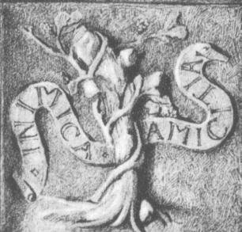<br>
              <font color="#330000"><font size="-1">caisson n°6, série
                  n°6, Dampierre-sur-Boutonne</font></font></p>
          </center>
          <p><font color="#000099"><font face="Arial,Helvetica">Le
                lierre (<font size="-1">hedera</font>) enguirlande le
                thyrse (<font size="-1">javelot</font>) de Bacchus ; il
                peut être comparé aux serpents enroulés en spirale
                autour du caducée de Mercure et marque le caractère
                astringent ou styptique d'une substance. Le caisson
                donne l'image d'un arbre qui a été scié et étreint,
                c'est-à-dire d'un arbre mutilé. Je vois volontiers un
                parallèle entre ce caisson et l'épisode apocalyptique
                des Troyens où <u>Laocoon et ses fils</u> sont étreints
                par un serpent sorti tout droit des flots [<font
                  color="#660000"><small>il s'agit en substance d'un
                    prêtre tué par son Dieu, voir section <a
                      href="../original/fontenay.html">Fontenay-Le-Comte</a></small></font>].&nbsp;


                Il y a manifestement là une analogie entre cet arbre et
                le thyrse de Bacchus. La transition est facile à trouver
                entre cette divinité et le raisin (</font><font
                face="Symbol"><font size="+1">uva</font></font><font
                face="Arial,Helvetica">) dont on peut citer deux </font></font><font
              color="#000099"><font face="Arial,Helvetica">sens</font></font><font
              color="#000099"><font face="Arial,Helvetica"> : raisin ;
                grappe d' abeilles [</font></font><font color="#660000"><font
                size="-1"><font face="Arial,Helvetica">apis </font><span
                  style="font-family: Wingdings;">:</span><font
                  face="Arial,Helvetica"> Apis = Oeuf ou taureau marqué
                  d'un croissant blanc rappelant la Lune blanche</font></font></font><font
              color="#000099"><font face="Arial,Helvetica">]. Je
                rappelle que les abeilles, le miel, la ruche entrent
                pour une part importante dans les allégories des
                Modernes. Nous avons vu dans une autre section que cette
                matière blanche représente un sel astringent comparé par
                les Anciens à l'Acier. La référence à l'arbre scié ou
                fendu est un indice capital pour identifier l'aspect que
                revêt le sujet des Sages au sortir de la mine : coupé,
                fendu, taillé, ces trois termes renvoient à <i><font
                    size="-1">lapis sectilis</font></i> c'est-à-dire à
                l'ardoise. L'ardoise est une roche sédimentaire
                provenant de dépôts de vase argileuse à une époque où
                régnaient des conditions de température et de pression
                élevées. L'analogie de ces conditions extrêmes que les
                alchimistes ne pouvaient pas recréer au laboratoire nous
                est indiquée allégoriquement par Fulcanelli dans sa
                description de la crypte de Notre-Dame de Paris. Les
                épithètes fendu et taillé évoquent&nbsp; <b>&#963;&#967;&#953;&#950;&#969; </b></font><font
                face="Arial,Helvetica">(</font></font><font
              face="Arial,Helvetica"><font color="#660000"><font
                  size="-1">fendu, mais aussi : faire cailler le lait,
                  expression employée régulièrement par les alchimistes</font></font><font
                color="#000099">), ou </font><font color="#006600">schiste</font><font
                color="#000099">, roche fendue et feuilletée. Un trait
                d'union existe entre le schiste et la </font><font
                color="#006600">vigne</font><font color="#000099"> (</font><font
                color="#660000"><font size="-1">en grec </font></font></font><font
              color="#660000"><big><big><b><font face="Symbol"><font
                        size="+1"><big><big><font size="-1"><big><big>&#945;&#956;&#960;&#951;&#955;&#959;&#962;

                                </big></big></font></big></big></font></font></b></big></big><font
                face="Arial,Helvetica"><font size="-1">signifie vigne</font></font></font><font
              face="Arial,Helvetica"><font color="#000099">) : certains
                schistes ampéliteux peuvent en effet être employés à
                l'amendement des vignobles. Il s'agit précisément des </font><font
                color="#660000">schistes alunifères</font><font
                color="#000099"> provenant de la décomposition de la
                pyrite. Dans le même ordre d'idée, on peut rapprocher
                par analogie le lierre à une plante souple qui sert à
                lier la vigne (</font></font><font face="Symbol"><font
                color="#660000"><font size="+1">&#945;&#956;&#960;&#951;&#955;&#959;&#963;&#8722;&#948;&#949;&#963;&#956;&#959;&#962;</font></font></font><font
              face="Arial,Helvetica"><font color="#000099">) et
                notamment la couleuvrée (</font><font color="#660000"><font
                  size="-1">vitis alba</font></font><font
                color="#000099">). Hermétiquement parlant, lier ou
                enserrer signifie condenser et concentrer, ce qui
                indique une sublimation préalable et renvoie aux </font><font
                color="#660000">cohobations</font><font color="#000099">.
                A un autre endroit des <b><i><font size="-1">DM</font></i></b>,
                se rapportant à un caisson où figurent trois arbres,
                Fulcanelli nous dit que le sujet des sages se trouve
                directement évoqué par l un de</font></font> </p>
          <center>
            <p>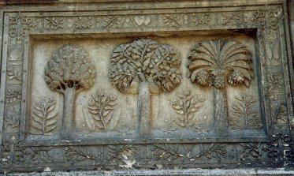<br>
              <font size="-1">l'énigme des trois arbres - cour du Palais
                Jacques Coeur, Bourges - cliché Alain Mauranne</font></p>
          </center>
          <p><font face="Arial,Helvetica"><font color="#000099">ces
                arbres, un figuier, un dattier et un olivier. Quel arbre
                choisir ? En fait, il semble bien que chaque arbre
                constitue une partie d'un rébus à déchiffrer. Le </font><font
                color="#006600">dattier</font><font color="#000099">
                (dactylus) peut signifier une grappe de raisins (</font><font
                color="#660000"><font size="-1">cf. Bacchus, supra</font></font><font
                color="#000099">) ; robur (</font><font color="#660000"><font
                  size="-1">l'olivier</font></font><font color="#000099">),

                dans une de ses acceptions, nous renvoie au chêne rouvre
                (</font><font color="#660000"><font size="-1">aesculus</font></font><font
                color="#000099">), consacré à Jupiter. Quant au figuier,
                son symbolisme est moins évident ; nous avons pu
                récemment revenir sur ce rébus des trois arbres dans le
                commentaire du <b><i><font size="-1"><a
                        href="../original/verbum.html#67">Verbum Dimissum</a></font></i></b>
                de Bernard de Trévise. Il se pourrait que deux de ces
                arbres renvoient - par cabale phonétique - à l'</font><font
                color="#660000">atinckar</font><font color="#000099">
                des vieux auteurs mais d'autres recherches permettent de
                rapprocher le palmier du <font size="-1"><a
                    href="../original/poeme-phenix.html">phénix</a></font>, oiseau
                fabuleux des Egyptiens. Dans les <b><i><font size="-1">DM,


                      II</font></i></b>, p.218, Fulcanelli signale l
                équivalence allégorique des termes suivants : gland,
                chêne, coeur, figue, grelot, <a
                  href="../original/gardes-corps.html" class="lien-repare" title="ancre absente de la page d'origine : lien ramené en haut de page">grenade</a>, poire et
                pomme [</font><font color="#660000"><font size="-1">tous
                  les fruits cités font partie de ceux de l'Arbore
                  Solari ; le grelot, le coeur et le chêne sont en
                  rapport avec l'énigme du kermès</font></font><font
                color="#000099">]. Les fruits renvoient presque toujours
                au Jardin des <font size="-1"><a href="../original/matiere.html">Hespérides</a></font>
                (</font><font color="#660000"><font size="-1">2<sup>ème</sup>
                  partie du Grand Oeuvre</font></font><font
                color="#000099">). Le coeur, le gland et le grelot
                semblent plutôt se rapporter au rémora, sans rapport
                direct donc avec le sujet des sages. Un texte
                remarquable, publié sous le pseudonyme de </font><font
                color="#006600">Tripied</font><font color="#000099">, <i><font
                    size="-1"><b><a href="../original/vitriol.html">Du Vitriol
                        philosophique et de sa préparation</a></b> </font></i>(</font><font
                color="#660000"><font size="-1">Chamuel, Paris, 1896</font></font><font
                color="#000099">) donne d'autres indications.</font></font><font
              face="Arial,Helvetica"><font color="#000099"> Dans la <small><span
                    style="font-style: italic;">Matière première</span></small>,
                voici ce qu'écrit l'auteur :</font></font></p>
          <p><font face="Arial,Helvetica"><font size="-1"><font
                  color="#000099">"</font><i><font color="#660000">Nous
                    aurons donc, dans ce cas un Vitriol Martial ; nous
                    pouvons obtenir de la même façon celui de Vénus,
                    ainsi que la véritable matière si cachée des anciens
                    qui s'obtenait d'une <u>pyrite martiale alumineuse</u>,
                    ou plus brièvement du sulfate de fer et d'alumine ;
                    ce que veut nous enseigner <b><a
                        href="../original/huginus.html">Huginus à Barma</a></b>,
                    lorsqu'il nous dit au commencement de sa Pratique :
                    Prenez de la vraie terre bien imprégnée des rayons
                    du soleil, de la lune et des autres astres.</font></i><font
                  color="#000099">"</font></font></font> </p>
          <p><font face="Arial,Helvetica"><font color="#000099">Poursuivons

                : plus loin, Tripied donne la manière de traiter ce
                sulfate d'alumine ; le texte, à la fois emprunt de
                modernité et suranné, rejoint de nombreux manuscrits
                alchimiques :</font></font> </p>
          <p><font face="Arial,Helvetica"><font size="-1"><font
                  color="#000099">"</font><i><font color="#660000">De
                    Locques, dans son « <b>Rudiment de Philosophie</b></font></i><font
                  color="#660000"> » <i>nous donne le procédé ci-contre</i>:</font></font></font>
          </p>
          <p><i><font face="Arial,Helvetica"><font size="-1"><font
                    color="#660000">« </font><font color="#006600">On
                    met le vitriol à une chaleur fort modérée, où rien
                    ne peut monter que le phlegme , c'est-à-dire qu'il
                    faut avoir soin de ne pas enlever l'eau de
                    constitution, et ce tant qu'il demeure sec comme la
                    pierre d'éponge ; on lui redonne son phlegme, on
                    redistille, et ce par trois fois; à la seconde, il
                    prend la couleur d'une belle émeraude, et à la
                    troisième il devient blanc comme du beurre. On
                    corrompt cette matière au fumier, pendant quarante
                    jours, puis on distille l'esprit doux qui vient par
                    vénules comme l'esprit de vin, puis l'esprit acide
                    qui distille sous forme de fumées blanches, et enfin
                    l'huile rouge par une forte expression de feu, sans
                    laquelle elle ne monte pas </font><font
                    color="#660000">»,</font></font></font></i> </p>
          <p><i><font face="Arial,Helvetica"><font size="-1"><font
                    color="#660000">pages 83 et 84: 2e livre. En cet
                    endroit, De Locques n'a pas été assez explicite, ce
                    qui lui arrive, du reste, la plupart du temps. Si on
                    le prend à la lettre et qu'on mette le vitriol tel
                    qu'il est, à se dessécher, on n'obtiendra rien de
                    bon, car lorsqu'on reversera le phlegme sur ledit
                    vitriol, celui-ci ne se dissolvera point, il n'y
                    aura par suite que la surface qui sera attaquée par
                    les humectations et dessiccations successives, et
                    tout le dedans de la cornue ou cucurbite restera
                    intact. Vous aurez donc perdu votre temps et vos
                    peines, ce qui m'est arrivé la première fois. Au
                    lieu que si vous dissolvez préalablement tout le
                    vitriol en eau distillée ou eau de pluie, vous
                    pourrez à chaque cohobation le redissoudre de
                    nouveau, et par là broyer suffisamment la matière,
                    pour qu'au bout de deux ou trois opérations, elle
                    finisse par tomber en consistance de beurre ou guhr
                    le tout formant une pâte homogène, que vous n'aurez
                    plus qu'à soumettre à la putréfaction.</font><font
                    color="#000099">"</font></font></font></i> </p>
          <p><font face="Arial,Helvetica"><font color="#000099">Il ne
                peut s'agir, ici, que de la préparation de l'alumine
                hydratée. Découverte par Marggraf en 1754, l'</font><font
                color="#006600">alumine</font><font color="#000099">
                hydratée est un précipité incolore gélatineux, soluble
                dans les acides et dans les alcalis. L'alumine en gelée
                retient énergiquement les matières colorantes, pour
                donner des laques ; cette propriété est mise à profit
                pour le mordançage en teinture. D'après Tripied, à ce
                moment du grand oeuvre :</font></font> </p>
          <p><font face="Arial,Helvetica"><font size="-1"><font
                  color="#000099">"</font><i><font color="#660000">C'est
                    la seule matière qui contient à elle seule les
                    soufres blanc et rouge nécessaires pour la pierre.
                    C'est là ce vitriol qui distillé soit avec le <a
                      href="../original/salpetre.html">salpêtre</a> seulement, soit
                    avec le salpêtre et cinabre, nous donne ce menstrue
                    puant dont il est parlé dans la <b><a
                        href="../original/lulle-clavicule.html">Clavicule</a></b> de
                    Raymond Lulle, le <b><a
                        href="../original/tresor-paracelse.html">Trésor des trésors</a></b>
                    de Paracelse, et le <b><a href="../original/compose.html">Composé</a></b>
                    d'Albert le Grand, ouvrages traduits du latin en
                    français par A. Poisson.</font></i><font
                  color="#000099">"</font></font></font> </p>
          <p><font face="Arial,Helvetica"><font color="#000099">Le
                soufre </font><font color="#660000">blanc</font><font
                color="#000099"> correspondrait donc à l'alumine et le
                soufre</font><font color="#006600"> rouge</font><font
                color="#000099"> au métal à trois pointes </font></font><font
              face="Arial,Helvetica"><font color="#000099">obtenu par
                précipitation d'une partie de l'alun. Ailleurs,
                l'allusion à l'alun de roche est parfaitement explicite
                lorsque l'auteur aborde la <i><font size="-1">Troisième
                    partie</font></i> :</font></font> </p>
          <p><i><font face="Arial,Helvetica"><font size="-1"><font
                    color="#000099">"</font><font color="#660000">Extraits

                    d'un manuscrit intitulé: « De la vraie connaissance
                    de la nature et de la recherche de ses secrets ».</font></font></font></i>
            <br>
            <i><font face="Arial,Helvetica"><font color="#660000"><font
                    size="-1">1° FIXATION DE LUNE. VÉRITÉ PRÉCIEUSE.</font></font></font></i>
            <br>
            <i><font face="Arial,Helvetica"><font color="#660000"><font
                    size="-1">Prenez : Vitriol romain rubifié 4 livres -
                    Sel de <a href="../original/salpetre.html#Alkaest">nitre raffiné</a>
                    : 6 - <a href="#alun_plume">Alun de plume</a>
                    déflegmé :</font></font></font></i> <br>
            <i><font face="Arial,Helvetica"><font color="#660000"><font
                    size="-1">1 - <a href="#alun_roche">Alun de roche</a>
                    déflegmé : 1. Faites une eau forte de ces matières,
                    en ayant soin de bien luter les jointures de la
                    cornue avec le récipient pour que les esprits ne
                    s'évaporent. Je n ai pas besoin d'ajouter que le
                    récipient doit être vaste et le feu mené d'une façon
                    très douce en commençant, doit augmenter
                    insensiblement durant tout le long de l'opération
                    pour devenir fort à la fin. Pour ce qui est du
                    vitriol, on sait la façon de le préparer ; quant à
                    l'alun de plume, alun à base de magnésie et d'oxyde
                    de fer, si on ne peut s'en procurer, on le
                    remplacera simplement par l'alun de roche, toujours
                    bien déflegmé, c'est-à-dire débarrassé de tous ses
                    équivalents d'eau de cristallisation.</font></font></font>"</i>
          </p>
          <p><font face="Arial,Helvetica"><font color="#000099">Ce texte
                est d'une grande importance d'abord, pour la
                connaissance des aluns qu'avaient les vieux auteurs et
                puis surtout pour la référence à la magnésie. Cette
                magnésie n'a rien à voir avec celle dont parle
                Fulcanelli : il s'agit simplement du principe attractif,
                l'</font><font color="#660000">Aimant</font><font
                color="#000099"> par lequel on arrive à conjoindre les
                deux parties du Rebis. Enfin, en employant du vitriol,
                du salpêtre et de l'alun, on peut préparer le<font
                  size="-1"><a href="../original/sulf-potasse.html"> tartre vitriolé</a></font>.
                Un autre extrait du texte attire l'attention sur
                certains caractères que doit avoir l'alun :</font></font>
          </p>
          <p><font face="Arial,Helvetica"><font size="-1"><font
                  color="#000099">"</font><i><font color="#660000">Prenez

                    telle quantité de vitriol romain que vous voudrez,
                    toujours après ramollissement et putréfaction dudit
                    vitriol, mettez-le dans un urinal de terre qui
                    résiste au feu aveb sa chape et récipient bien luté.
                    Vous lui donnerez&nbsp; feu lent de distillation, il
                    en sortira quantité d'eau comprenant l'esprit et
                    l'huile, et lorsque le vitriol dans l'urinal sera en
                    forme de chaux arrêtez votre distillation, et
                    remettez son eau dessus et distillez tant de fois en
                    cohobant jusqu'à ce que le vitriol ne jette plus
                    d'eau et soit devenu blanc, alors augmentez le feu
                    d'un degré, il deviendra tout rouge [</font></i><font
                  color="#660000">par transformation de protoxyde en
                  peroxyde de fer, probablement<i>]: c'est là le vitriol
                    rouge et rubifié. Otez-le de l'urinal pour vous en
                    servir à faire votre eau comme il est dit plus haut.
                    Toutes les fois que vous remettez l'eau sur le
                    vitriol, remuez avec un bâton pour bien incorporer.
                    On pourra tirer aussi le <a
                      href="../original/sulf-potasse.html">sel des fèces de
                      l'eau-forte</a> et avec celui-ci cimenter la lune
                    deux ou trois fois, vingt-quatre heures chaque fois,
                    et le sel adoucira l'argent, lequel ainsi préparé
                    doit être dissous dans l'eau graduatoire faite avec
                    le vitriol préparé comme il vient d'être dit, et
                    vous retirerez au lieu de deux onces et demi d'or
                    par livre d'argent, cinq onces d'or parfait à toute
                    épreuve, et surtout que l'alun de roche dont on se
                    servira soit bien <a href="#" class="lien-repare" title="ancre absente de la page d'origine (lien ramené en haut de page)">flegmé</a>;
                    vous aurez par là l'accomplissement de ce grand
                    secret.</i></font><i><font color="#000099">"</font></i></font></font>
          </p>
          <p><font face="Arial,Helvetica"><font color="#000099">On
                retiendra que l'alun utilisé doit être bien distillé,
                c'est-à-dire doit être d'une grande pureté. Quant au sel
                retiré des fèces de l'eau-forte, il correspond au
                véritable <small><i>Caput mortuum</i></small> des
                Anciens : c'est le <font size="-1"><a
                    href="../original/sulf-potasse.html#Glaser">sel polychreste de
                    Glaser</a></font>. Enfin, une autre partie nous
                aidera à voir d'où l'on peut tirer cette matière
                première :</font></font> </p>
          <p><i><font face="Arial,Helvetica"><font size="-1"><font
                    color="#000099">"</font><font color="#660000">Par
                    vitriol romain, suivant Chambon dans son « Traité
                    des Métaux » : "on entend un vitriol pierreux qui se
                    rencontre quelquefois dans les mines, lequel, frappé
                    d'un acier, rend du feu comme la pierre à fusil. Il
                    y en a considérablement dans les mines d'or de
                    Hongrie, et quand il se rencontre de ce vitriol dans
                    les mines, cela est d'un bon présage. On appelle ce
                    vitriol Romain, non pas qu'il en vienne plus de Rome
                    ou de son territoire que d'ailleurs, mais c'est par
                    son excellence entre les autres vitriols qu'il porte
                    ce nom. Les philosophes l'ont appelé aussi Usnea
                    (Chambon). Je n'ai pas besoin d'ajouter que, dans le
                    cas où l'on parviendrait à s'en procurer, il lui
                    faudrait toujours faire subir la même opération
                    qu'au vitriol commun ou vitriol vert dont les
                    propriétés, si elles sont inférieures aux siennes,
                    ne doivent l'être que très peu, et qui a du moins
                    l'énorme avantage de se trouver sous notre main.</font><font
                    color="#000099">"</font></font></font></i> </p>
          <p><font face="Arial,Helvetica"><font color="#000099">Un mot
                retient l'attention : <small><i>usnea</i></small>. Le
                pseudo-Paracelse y fait allusion dans la préparation </font></font><font
              face="Arial,Helvetica"><font color="#000099">de l' <small><i>Unguentum

                    Armarium</i></small> [</font></font><font
              face="Arial,Helvetica"><font color="#000099"><font
                  color="#660000"><small><span class="reference-text">cf<i>.
                      </i></span></small></font></font></font><font
              face="Arial,Helvetica"><font color="#000099"><font
                  color="#660000"><small><span class="reference-text"><i><b><em
                            class="marquage italique">Archidoxis magica</em>,
                          apud Huser éd., X, App., 81&nbsp;ou Sudhoff
                          éd., XIV, spuria, 448 in</b></i></span></small></font></font></font>
            <font color="#660000"><b>Roberto Poma, <i>L'onguent armaire
                  entre science et folklore médical,</i> Archives de
                philosophie, </b><b>2010/4, pp. 601-613</b></font><font
              face="Arial,Helvetica"><font color="#000099"><font
                  color="#660000"><small><span class="reference-text"></span></small></font>]
                ; il s'agit d'une substance dont on croyait qu'elle
                attirait le venin [<font color="#660000"><small>ce qui
                    par cabale est parfaitement bien vu</small></font>].
                Puis cet extrait de la <b><i><font size="-1">Nature
                      dévoilée</font></i></b>:</font></font> </p>
          <p><i><font face="Arial,Helvetica"><font size="-1"><font
                    color="#000099">"</font><font color="#660000">Les
                    minéraux prennent donc leur origine des parties plus
                    fixes du sperme universel, c'est-à-dire du salpêtre
                    et du sel, et spécialement des vapeurs spiritueuses
                    corrosives de ces deux fortement fermentés, en un
                    mot de l'esprit de nitre et de celui du sel mêlés
                    ensemble, qui attaquent avec violence la terre
                    changée en pierre, la corrodent, et en font un gurh
                    vitriolique ou alumineux. Ainsi comme les minéraux
                    sont nés du sperme universel plus fixe et plus
                    spiritueux, il faut aussi que par la semence ou par
                    l'esprit de nitre ou de sel, chacun se résolve et se
                    réduise, suivant son degré en un sel essentiel ou
                    vitriol, et celui-ci en vapeur ou en une eau
                    corrosive. Cette eau corrosive est la clef
                    principale de toute forteresse ; aussi doit-on
                    toujours avoir une bonne quantité d'esprits de
                    vitriol et d'alun, parce qu'ils sont un humide
                    minéral propre pour tous les astres rouges et
                    blancs. Les anciens ont sagement et avec raison
                    placé le salpêtre à côté du vitriol pour acuer le
                    vitriol par le salpêtre, afin de pénétrer mieux les
                    sujets minéraux, et ils ont tiré du salpêtre du
                    vitriol, par la distillation, un menstrue universel
                    pour le régime minéral. Les métaux y devenant
                    volatils et pasrant ensuite en bonne partie avec lui
                    par la distillation.</font><font color="#000099">"</font></font></font></i>
          </p>
          <p><font face="Arial,Helvetica"><font color="#000099">Là, les
                ingrédients par lesquels on peut arriver à l'obtention
                d'eau forte [</font><font color="#660000"><font
                  size="-1">acide nitrique ou aqua sicca</font></font><font
                color="#000099">] ; l'eau forte nécessite en effet
                l'emploi conjoint de salpêtre et de sulfate de fer qui
                est le vitriol vert. Cette interprétation toutefois, ne
                laisse pas d'être un peu spagyrique. On peut imaginer
                que cette eau corrosive dissimule un résidu que les
                chimistes ont l'habitude de rejeter comme inutile.
                Enfin, cette <i><font size="-1">Méthode pour se servir
                    des feux acides pour la fixation, augmentation et
                    perfection de tous les minéraux</font> :</i></font></font>
          </p>
          <p><font face="Arial,Helvetica"><font size="-1"><font
                  color="#000099">"</font><font color="#660000">(<i>Clef
                    d'alchymie, page 83.). Si vous voulez perfectionner
                    le plomb, l'étain et le zinc, il faut les réduire en
                    grenailles, parce que s'ils étaient trop menus, il
                    se ferait trop grande ébullition dans la
                    dissolution. Votre grenaille faite, mettez-la dans
                    de grandes cucurbites et y versez peu à peu de vos
                    feux concentrés, celui de nitre et de vitriol est le
                    meilleur pour cette opération. En peu de temps, vous
                    verrez vos métaux réduits en poudre blanche qui est
                    la vraie calcination philosophique qui fixe et
                    conserve toutes les parties du composé ; et votre
                    métal étant réduit en cendres blanches, séparez le
                    dissolvant par la distillation, en sorte que le vase
                    contenant la matière rougisse pendant une heure pour
                    le moins, afin que tous les esprits se séparent et
                    passent dans le récipient qui doit être bien luté,
                    et vous trouverez au fond de la retorte votre cendre
                    métallique, laquelle réduite en métal et passée par
                    la coupelle, vous laissera un profit considérable
                    d'or et d'argent, particulièrement l'étain et le
                    zinc. Ces deux derniers n'étant presqu'en toute leur
                    substance, qu'un soufre d'or cru et volatil, que le
                    menstrue a achevé de mûrir et de fixer.</i></font><font
                  color="#000099">"</font></font></font> </p>
          <p><font face="Arial,Helvetica"><font color="#000099">En
                somme, le schiste alunifère ou surtout la pyrite
                martiale alumineuse constituent l'un des sujets des
                Sages : l'équivalent hermétique est cet arbre fendu [<b>&#963;&#967;&#953;&#950;&#959;&#962;</b></font></font><font
              face="Arial,Helvetica"><font color="#000099">], scié et
                étreint de la <font size="-1">FIGURE I</font> [<font
                  color="#660000"><small>que l'on retrouve aussi, je le
                    répète, dans le symbolisme de Laocoon</small></font>].


                On peut trouver d'autres indications sur l'utilisation
                de l'alun et des différents vitriols dans un traité du
                chimiste Berthollet sur la <a href="../original/teinture.html"><i>Teinture</i></a>
                [<font color="#660000"><small><b>Eléments de l'Art de la
                      Teinture</b>, cap. 2, p. 250 sq., Didot, Paris,
                    1791</small></font>]:</font></font> <br>
            &nbsp; </p>
          <center>
            <table style="width: 82%;" cols="1"
              background="fondmarbre.jpg" border="0">
              <tbody>
                <tr>
                  <td><font face="Arial,Helvetica"><font color="#000000">Lorsque


                        l'alun est formé, il faut faire la lixiviation
                        de la mine, et ensuite faire évaporer la liqueur
                        jusqu'à ce qu'elle soit en état de donner des
                        cristaux : on lave les premiers cristaux, on les
                        redissout dans une très petite quantité d'eau
                        bouillante, et l'on verse cette dissolution dans
                        des espèces de tonneaux dont on délie ensuite
                        les douves pour en extraire la masse d'alun qui
                        s'y est formée. Le résidu des cristallisations
                        mêlé avec plus ou moins de la dissolution de la
                        mine, est mis à évaporer jusqu'à ce qu'il soit
                        en état de cristalliser, et l'on procède ainsi
                        de suite, en ajoutant les résidus des
                        cristallisations précédentes aux dissolutions
                        nouvelles...[</font><font color="#000099"><font
                          size="-1">En mêlant</font></font><font
                        color="#000000">] à une solution d'un alun de
                        Liège, qui paraissait très pur, un peu d'acide </font><font
                        color="#000099">gallique</font><font
                        color="#000000">, et en faisant la même épreuve
                        sur une solution d'alun de Rome ; la première a
                        pris une teinte noire, et la seconde n'a pas
                        changé...Relativement au fer qui se trouve dans
                        l'alun...Monnet a déjà observé que le sulfate de
                        fer [</font><font color="#000099"><font
                          size="-1">vitriol vert</font></font><font
                        color="#000000">] pouvait se séparer entièrement
                        par cristallisation ; d'un autre côté, Leblanc a
                        fait des cristaux mixtes de sulfate de fer et de
                        sulfate d'alun.</font></font></td>
                </tr>
              </tbody>
            </table>
          </center>
          <p><font face="Arial,Helvetica"><font color="#000099">Cette
                séparation du vitriol vert d'avec l'alumine est peut
                être celle qu'évoque E. Canseliet dans son <b><i><font
                      size="-1">Alchimie</font></i></b> et son <b><i><font
                      size="-1">Alchimie expliquée sur ses Textes
                      classiques</font></i></b>. Nous analyserons plus
                tard les textes classiques afin de conforter les
                éléments qui plaident en faveur d'une des matières de
                base qui est d'origine vitriolique et alumineuse :</font></font>
          </p>
          <p style="background-color: rgb(191, 191, 152);"><font
              face="Arial,Helvetica"><font color="#660000"><font
                  size="-1"><b><i><a href="../original/mutus-liber.html">Mutus Liber</a></i></b>
                  | <b><i><a href="../original/fig-hier.html">Figures
                        Hiéroglyphiques</a></i></b> | <b><i><a
                        href="../original/emblemes.html">Douze Clefs</a> de
                      philosophie</i></b> | <b><i><a href="../original/verbum.html">Verbum


                        Dimissum</a></i></b> | <b><i><a
                        href="../original/introitus.html">Introïtus</a></i></b> | <a
                    href="../original/textes-divers.html">textes divers</a> |
                  bibliographies [<a href="../original/biblio-alchimie.html">1</a>,
                  <a href="../original/bibliot-phil-chim.html">2</a>] | <b><i><a
                        href="../original/char.html">Le Char Triomphal de l'antimoine</a></i></b>
                  | <b><i><a href="../original/oeuvre.html">L'Oeuvre secret d'Hermès</a></i></b>
                  | etc.</font></font></font> </p>
          <p><font face="Arial,Helvetica"><font color="#000099">Dans la
                même optique, on peut citer le <b><i><font size="-1">Théâtre

                      de l'Astronomie Terrestre</font></i></b> d'Edward
                Kelly où le chapitre IV traite de la <i><font size="-1">préparation

                    de la Terre Mercurielle</font></i> et le chapitre V
                <i><font size="-1">dela conversion du Mercure préparé en
                    terre Mercurielle</font></i> :</font></font> </p>
          <p><font face="Arial,Helvetica"><font size="-1"><font
                  color="#000099">"</font><i><font color="#660000">car à
                    partir de métaux parfaits tu peux obtenir, par juste
                    séparation des éléments, le Sel de Nature, ou
                    Minerai des Philosophes, que certains nomment Lis
                    Philosophique, sans lequel l'oeuvre des Sages ne
                    saurait être accomplie. Car l'Art présuppose une
                    substance créée par la Nature seule, dans laquelle
                    l'Art assiste la Nature et la Nature assiste l'Art.</font></i><font
                  color="#000099">"</font></font></font> </p>
          <p><font face="Arial,Helvetica"><font color="#000099">Il est
                ici clairement évoqué un certain sel grâce auquel
                l'Adepte pourra faire progresser de manière très rapide
                un processus naturel qui met des millions d'années à se
                réaliser.</font></font> <br>
            <br>
          </p>
          <center>
            <p>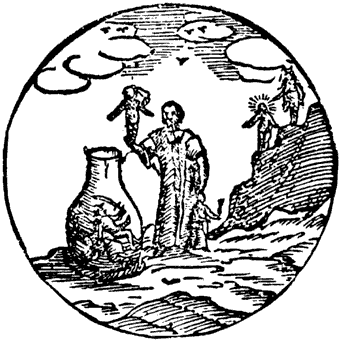</p>
            <p style="color: rgb(102, 0, 0);"><font
                face="Arial,Helvetica"><font size="-1">gravure du
                  Théâtre de l'Astronomie Terrestre</font></font></p>
          </center>
          <p><font face="Arial,Helvetica"><font color="#000099">légende
                :</font></font> </p>
          <p><font face="Arial,Helvetica"><font size="-1"><font
                  color="#000099">"</font><i><font color="#660000">L'image

                    nous montre un vase semblable à un urinal, encerclé
                    à sa base par un anneau de paille torsadée ; à
                    l'intérieur sont Mercure, Mars et Saturne, couchés
                    sur le dos, et un vieil homme est sur le point d'y
                    jeter Vénus et Jupiter. Derrière le vieil homme, sur
                    le rocher noir, se tiennent le Soleil et la Lune.</font></i><font
                  color="#000099">"</font></font></font> </p>
          <p><font face="Arial,Helvetica"><font color="#000099">L'allusion

                à l'anneau signifie une circulation [</font><font
                color="#660000"><font size="-1">une cohobation par
                  exemple, i.e. la concentration progressive d'une
                  substance ; cette circulation peut être allégorique et
                  constituer l'indication d'un feu permanent ou d'une
                  eau permanente, i.e. un fondant]</font></font><font
                color="#000099"> ; la paille réfère peut-être au foin,
                c'est-à-dire à une meule de foin ou à des </font><font
                color="#660000">gerbes</font><font color="#000099"> de
                foin ; la torsade évoque un mouvement de rotation.
                Mercure, si l'on se réfère à&nbsp; ce que nous avons dit
                <i><font size="-1"><a href="../original/symb-dir-prim.html#b">supra</a></font></i>
                concernant le symbolisme des planètes est là pour la
                préparation du Mercure philosophique, Mars est lié aux
                vitriols et apparentés [<span style="color: rgb(102, 0,
                  0);">aluns</span>] et Saturne est lié au symbole de la
                stibine [<b>&#963;&#964;&#946;&#949;&#969;</b></font></font><font color="#000099"><span
                style="font-family: Wingdings; color: rgb(102, 0, 0);">:
                <big><b>&#963;&#964;&#953;&#956;&#956;&#953;</b></big></span><font
                face="Arial,Helvetica">] comme nous l'avons dit dans la
                section sur les <font size="-1"><a
                    href="../original/gardes-corps.html">Gardes du corps</a></font>.
                Le vieillard correspond (cf. <i><font size="-1"><a
                      href="../original/symb-dir-prim.html" class="lien-repare" title="ancre absente de la page d'origine : lien ramené en haut de page">supra</a></font></i>)
                à l'allégorie du Mercure qui va s'animer. </font></font><font
              face="Arial,Helvetica"><font color="#006600">Vénus</font><font
                color="#000099"> et </font><font color="#006600">Jupiter</font><font
                color="#000099"> symbolisent les constituants du
                dissolvant universel [</font><font color="#660000"><font
                  size="-1">le complexe Vénus-Aphrodite d'un côté
                  faisant référence aux sels contenant du potassium et
                  la <a href="../original/gardes-corps.html" class="lien-repare" title="ancre absente de la page d'origine : lien ramené en haut de page">Justice</a> de
                  l'autre, c'est-à-dire <a href="../original/fig-hier.html#120">Thémis</a>
                  qui est un symbole complexe</font></font><font
                color="#000099">]. L'allégorie doit donc se comprendre
                ainsi :</font></font> </p>
          <p><b><font color="#000099"><font size="-1"><font
                    face="Arial,Helvetica">Corrélat alchimique</font></font></font></b>
          </p>
          <blockquote><span style="font-family: Wingdings;">- </span><font
              face="Arial,Helvetica"><font color="#000099">dans un 1<sup>er</sup>
                temps, on doit préparer séparément le Mercure qui
                correspond selon toute vraisemblance à un alcali [</font><font
                color="#660000"><font size="-1">cette Terre n'a donc
                  rien à voir avec le Corps qui est de nature alumineuse
                  ou siliceuse</font></font><font color="#000099">] ;
                Saturne représente l'</font><font color="#660000">antimoine


                saturnin</font><font color="#000099"> d'Artephius, qui
                là encore selon toute vraisemblance doit être le voile
                sous lequel est masqué le dragon écailleux [</font><font
                color="#660000"><font size="-1">cf. la section sur la <a
                    href="../original/prima-materia.html#stibium">matière première</a>
                  et les <a href="../original/gardes-corps.html" class="lien-repare" title="ancre absente de la page d'origine : lien ramené en haut de page">Gardes du
                    corps</a></font></font><font color="#000099">] ;
                notez que ce dragon écailleux est différent du sujet
                précédent représenté par Mars [<font color="#660000"><small>pyrite
                    martiale contenant du vitriol vert</small></font>]</font></font>&nbsp;
            ;<br>
            <span style="font-family: Wingdings;">- </span><font
              face="Arial,Helvetica"><font color="#000099">dans un 2<sup>ème</sup>
                temps, Vénus et Jupiter [</font><font color="#660000"><font
                  size="-1">d'où naîtront Apollon et Artémis</font></font><font
                color="#000099">] masquent la préparation du Mercure par
                l'antimoine saturnin : le Mercure préparé est le
                dissolvant universel ou </font><font color="#660000">Lion


                vert</font><font color="#000099"> de <a
                  href="../original/ripley.html">Ripley</a>.</font></font> <br>
            <span style="font-family: Wingdings;">- </span><font
              face="Arial,Helvetica"><font color="#000099">dans un 3<sup>ème</sup>
                temps, les deux principes fixe [</font><font
                color="#660000"><font size="-1">soleil</font></font><font
                color="#000099">] et volatil [</font><font
                color="#660000"><font size="-1">lune</font></font><font
                color="#000099">] entreront en jeu ; le rocher noir est
                un indicateur possible sur le Soufre rouge pyriteux,
                démasqué par l'application d'acide gallique ou de </font><font
                color="#660000">noix de galle</font><font
                color="#000099">.</font></font></blockquote>
          <i><font face="Arial,Helvetica"><font size="-1"><font
                  color="#000099">"</font><font color="#660000">Les
                  Métaux, comme affirmé précédemment, contiennent un
                  sel, duquel le feu et la sagacité de l'artiste peuvent
                  extraire une eau que les Sages nomment eau
                  Mercurielle, lait de la Vierge, Lunaire, rosée de Mai,
                  le Lion Vert, le Dragon, le Feu des Sages. Cette eau
                  Mercurielle, ils l'ont comparée à la corrosive
                  eau-forte, car de même que ces eaux à base d'atrament,
                  d'alun, de cuivre, d'arménite, etc, corrodent les
                  métaux et les dissolvent, ainsi cet esprit Mercuriel,
                  ou eau, dissout son corps et en sépare la Teinture.</font><font
                  color="#000099">"</font></font></font></i>
          <p><font face="Arial,Helvetica"><font color="#000099">En
                clair, ce passage signifie que les métaux peuvent être «
                ouverts », c'est-à-dire dissous par l'application de
                l'eau mercurielle ; l'allusion à l'</font><font
                color="#660000">eau forte</font><font color="#000099"> -
                aqua sicca - étant un leurre, en ce sens qu'en
                considérant à la lettre ces paroles, on court le risque
                de jeter l'enfant avec l'eau du bain. Suit une vignette
                où l'on voit un vieil homme qui recueille des serpents
                bleus, symbolisant le Mercure. Gardons à l esprit que
                les Anciens  comme les Modernes - ne s'expriment jamais
                plus clairement que dans des phrases paraissant d'une
                grande banalité (</font><font color="#660000"><font
                  size="-1">notamment, les introductions, préfaces,
                  notes de bas de page</font></font><font
                color="#000099">) et que le texte lui-même, quand il
                semble clair, se révèle en fait une chausse-trappe ou un
                leurre. Des termes tout à fait anodins comme le verbe <small><i>honorer</i></small>
                cachent en fait un point précis du Grand oeuvre (</font><font
                color="#660000"><font size="-1">ici, l'action de filtrer
                  ou de tamiser une substance</font></font><font
                color="#000099">). E. Canseliet et Fulcanelli, pour les
                textes modernes, se révèlent ainsi absolument
                redoutables. Il nous faut à présent, pour la clarté de
                ce qui suivra, remonter aux correspondances originelles
                entre métaux et planètes. Nous ferons appel pour cela à
                <b><i><font size="-1"><a href="../original/chimie-anciens.html">l'Introduction
à


                        la Chimie des Anciens</a></font></i></b> de M.
                Berthelot et notamment au chapitre II - <i><font
                    size="-1"><a
href="../original/chimie-anciens-3.html#II">Relations
entre


                      les métaux et les planètes</a></font></i>,
                débarrassé de son appareil critique.</font></font> <br>
            &nbsp; <br>
          </p>
          <center>
            <p><a  name="3)-"></a><font face="Arial,Helvetica"><font
                  color="#660000"><font size="+1"><b>3)- </b><u>le ciel
                      chymique</u></font></font></font></p>
          </center>
          <br>
          <font face="Arial,Helvetica"><font color="#000099">Les
              relations entre les métaux et les planètes constituent le
              socle sur lequel se sont bâties les deux sciences d'Hermès
              : l'astrologie et l'alchimie. Tout, au départ, semble
              orienté par un nombre :sept.</font></font>
          <p><font face="Arial,Helvetica"><font color="#000099">«</font><i><font
                  color="#660000"><font size="-1"> Le monde est un
                    animal unique, dont toutes les parties, quelle qu'en
                    soit la distance, sont liées entre elles d'une
                    manière nécessaire</font></font></i><font
                color="#000099"> ».</font></font> </p>
          <p><font face="Arial,Helvetica"><font color="#000099">Cette
                phrase de Jamblique le Néoplatonicien ne serait pas
                désavouée par les astronomes et par les physiciens
                modernes ; car elle exprime l'unité des lois de la
                nature et la connexion générale de l'Univers</font></font>
          </p>
          <p><font face="Arial,Helvetica"><font color="#000099">[</font><b><font
                  color="#3333ff"><font size="-2">ce concept a pris une
                    actualité à notre époque où il est pratiquement
                    démontré qu'au « Big Bang », toutes les parties de
                    l'univers étaient au contact les unes des autres,
                    pour autant que ces mots aient une valeur physique :
                    il n'y avait en effet, au temps de Planck, ni espace
                    ni temps à proprement parler ; notez que M.A.
                    Gaudin, dans sa <i><a href="../original/soufre.html#Gaudin">Cristallogénie</a></i>
                    reprend de semblables idées</font></font></b><font
                color="#000099">].</font></font> </p>
          <p><font face="Arial,Helvetica"><font color="#000099">La
                première perception de cette unité remonte au jour où
                les hommes reconnurent la régularité fatale des
                révolutions des astres : ils cherchèrent aussitôt à en
                étendre les conséquences à tous les phénomènes matériels
                et même moraux, par une généralisation mystique, qui
                surprend le philosophe, mais qu'il importe pourtant de
                connaître, si l'on veut comprendrele développement
                historique de l'esprit humain. [</font><b><font
                  color="#3333ff"><font size="-2">Nous parlons de ces
                    perceptions dans notre ouvrage sur les directions
                    primaires, en astrologie</font></font></b><font
                color="#000099">] C'est la <i>chaîne d'or</i> qui
                reliait tous les êtres, dans le langage des auteurs du
                Moyen Âge. Ainsi l'influence des astres parut s'étendre
                à toute chose, à la <b><i><font size="-1"><a
                        href="../original/generation-metaux.html">génération des
                        métaux</a></font></i></b>, des minéraux et des
                êtres vivants, aussi bien qu'à l'évolution des peuples
                et des individus. Il est certain que le soleil règle,
                par le flux de sa lumière et de sa chaleur, les saisons
                de l'année et le développement de la vie végétale ; il
                est la source principale des énergies actuelles ou
                latentes à la surface de la terre. On attribuait
                autrefois le même rôle, quoique dans des ordres plus
                limités, aux divers astres, moins puissants que le
                soleil, mais dont la marche est assujettie à des lois
                aussi régulières. Tous les documents historiques
                prouvent que c'est à Babylone et en Chaldée que ces
                imaginations prirent naissance [</font><b><font
                  color="#3333ff"><font size="-2">cf. l<i>'Astrologie
                      grecque</i> de Bouché-Leclercq</font></font></b><font
                color="#000099">] ; elles ont joué un rôle important
                dans le développement de l'astronomie, étroitement liée
                avec l'<font size="-1"><a href="#" title="lien mort dans l'archive">astrologie</a></font>
                dont elle semble sortie. L'alchimie s'y rattache
                également, au moins par l'assimilation établie entre les
                métaux et les planètes, assimilation tirée de leur
                éclat, de leur couleur et de leur nombre même.</font></font>
          </p>
          <font face="Arial,Helvetica"><font color="#000099">Attachons-nous


              d'abord à ce dernier : c'est le nombre sept, chiffre sacré
              que l'on retrouve partout, dans les jours de la semaine,
              dans l'énumération des planètes et des zones célestes,
              dans celle des métaux, des couleurs, des cordes de la lyre
              et des tons musicaux, des voyelles de l'alphabet grec,
              aussi bien que dans le chiffre des étoiles de la grande
              ourse, des sages de la Grèce, des portes de Thèbes et des
              chefs qui l'assiègent, d'après Eschyle. L'origine de ce
              nombre paraît être astronomique et répondre aux phases de
              la lune, c'est-à-dire au nombre des jours qui représentent
              le quart de la révolution de cet astre. Ce n'est pas là
              une opinion a priori. On la trouve en effet signalée dans
              Aulu-Gelle, qui l'a attribuée à Aristide [</font><b><font
                color="#3333ff"><font size="-2">Aristarque ?</font></font></b><font
              color="#000099">] de Samos. [...] L'usage de la semaine
              était ancien en Egypte et en Chaldée, comme en témoignent
              divers monuments et le récit de la création dans la
              Genèse. Mais il n'existait pas dans la Grèce classique et
              il ne devint courant à Rome qu'au temps des Antonins.
              C'est seulement à l'époque de Constantin et après le
              triomphe du Christianisme qu'il fut reconnu comme mesure
              légale de la vie civile ; depuis il est devenu universel
              chez les peuples européens. Le hasard a fait que le nombre
              des astres errants (planètes), visibles à l'oeil nu, qui
              circulent ou semblent circuler dans le ciel autour de la
              terre s'élève précisément à sept : ce sont le Soleil, la
              Lune, Mars, Mercure, Jupiter, Vénus et Saturne. À chaque
              jour de la semaine, un astre fut attribué en Orient : les
              noms même des jours, tels que nous les prononçons
              maintenant, continuent à traduire, à notre insu, cette
              consécration babylonienne. À côté des sept Dieux des
              sphères ignées, les Chaldéens invoquaient les sept Dieux
              du ciel, les sept Dieux de la terre, les sept Dieux
              malfaisants, etc. D'après François Lenormant les
              inscriptions cunéiformes mentionnent les sept <font
                size="-1"><a href="../original/symb-dir-prim.html#pierre_noire_4">pierres


                  noires</a></font>, adorées dans le principal</font></font>
          <font face="Arial,Helvetica"><font color="#000099">temple
              d'Ouroukh en Chaldée, bêtyles personnifiant les sept
              planètes. C'est au même rapprochement que se rapporte,
              sans doute, un passage du roman de Philostrate sur la vie
              d'Apollonius de Tyane [</font><font color="#3333ff"><b><font
                  size="-2">qui a permis à Fulcanelli un jeu de mots
                  dont il a le secret : Apollon - </font></b></font></font><font
            color="#3333ff"><font face="Symbol"><font size="+1">ioV</font></font><font
              face="Arial,Helvetica"><b><font size="-2"> - Diane,
                  combinant ainsi les deux composants du feu secret et
                  la Grenade hermétique</font></b></font></font><font
            face="Arial,Helvetica"><font color="#000099">], dans lequel
              il est question de sept anneaux, donnés à ce philosophe
              par le brahmane larchas. La connaissance des divinités
              planétaires de la semaine ne se répandit dans le monde
              gréco-romain qu'à partir du 1<sup>er</sup> siècle de</font></font>
          <font face="Arial,Helvetica"><font color="#000099">notre ère.
              On a trouvé à Pompéi une peinture représentant les sept
              divinités planétaires.</font></font> <br>
          <font face="Arial,Helvetica"><font color="#000099">De même
              divers autels sur les bords du Rhin. Une médaille à
              l'effigie d'Antonin le Pieux, frappée la 8<sup>ème</sup>
              année de son règne, représente les bustes des sept Dieux
              planétaires avec les signes du zodiaque, et au centre le
              buste de Serapis.</font></font> <font
            face="Arial,Helvetica"><font color="#000099">Une autre
              coïncidence, aussi fortuite que celle du nombre des
              planètes avec le quart de la révolution lunaire, celle du
              nombre des voyelles de l'alphabet grec, nombre égal à
              sept, a multiplié ces rapprochements mystiques, surtout au
              temps des gnostiques : les pierres gravées de la <i><font
                  size="-1">Bibliothèque nationale</font> </i>de Paris
              et les papyrus de Leide en fournissent une multitude
              d'exemples. Ce n'est pas tout : les Grecs, avec leur
              esprit ingénieux, ne tardèrent pas à imaginer entre les
              planètes et les phénomènes physiques des relations pseudo-
              scientifiques, dont quelques-unes, telles que le nombre
              des tons musicaux et des couleurs se sont conservées.
              C'est ainsi que l'école de Pythagore établit un rapport
              géométrique des tons et diapasons musicaux avec le nombre
              et les distances mêmes des planètes [</font><font
              color="#660000"><font size="-1">Pline, <i><b>Hist. Nat.,</b>
                  II, 20</i></font></font><font color="#000099">].</font></font>
          <font face="Arial,Helvetica"><font color="#000099">Le nombre
              des couleurs fut pareillement figé à sept. Cette
              classification arbitraire a été consacrée par <font
                size="-1"><a href="../original/symb-dir-prim.html#Newton_index">Newton</a></font>
              et elle est venue jusqu'aux physiciens de notre temps.
              Elle remonte à une haute antiquité. Hérodote rapporte que
              la ville d'Ecbatane avait sept enceintes, peintes chacune
              d'une couleur différente : la dernière était dorée ; celle
              qui la précédait, argentée. C'est, je crois, la plus
              vieille mention qui établisse la relation du nombre sept
              avec les couleurs et les métaux. La ville fabuleuse des
              Atlantes, dans le roman de Platon, est pareillement
              entourée par des murs concentriques, dont les derniers
              sont revêtus d'or et</font></font> <font
            face="Arial,Helvetica"><font color="#000099">d'argent ; mais
              on n'y retrouve pas le mystique nombre sept.</font></font>
          <font face="Arial,Helvetica"><font color="#000099">Entre les
              métaux et les planètes, le rapprochement résulte, non
              seulement de leur nombre, mais surtout de leur couleur.
              Les astres se manifestent à la vue avec des colorations
              sensiblement distinctes : <i><font size="-1">suus cuique
                  color est</font></i>, dit Pline [</font><i><font
                color="#660000"><font size="-1"><b>Hist. Nat.</b> II, 16</font></font></i><font
              color="#000099">]. La nature diverse de ces couleurs a
              fortifié le rapprochement des planètes et des métaux.
              C'est ainsi que l'on conçoit aisément l'assimilation de
              l'or, le plus éclatant et le roi des métaux, avec la
              lumière jaune du soleil, le dominateur du Ciel. La plus
              ancienne indication que l'on possède à cet égard se trouve
              dans Pindare [</font><font color="#660000"><font size="-1">poète


                lyrique grec ;518-438 av. J.-C.</font></font><font
              color="#000099">]. La cinquième ode des <b><i><font
                    size="-1">Isthméennes</font></i></b> débute par ces
              mots :</font></font>
          <p><font face="Arial,Helvetica"><font color="#000099">« </font><i><font
                  color="#660000"><font size="-1">Mère du Soleil, Thia,
                    connue sous beaucoup de noms, c'est à toi que les
                    hommes doivent la puissance prépondérante de l'or</font></font><font
                  color="#000099">.</font></i><font color="#000099"> »</font></font>
          </p>
          <p><font face="Arial,Helvetica"><font color="#000099">Dans
                Hésiode, Thia est une divinité, mère du soleil et de la
                lune, c'est-à-dire génératrice des principes de la
                lumière [</font><font color="#660000"><font size="-1"><i>Théogonie,

                    371, 374</i>]. </font></font><font color="#000099">Un

                vieux scoliaste commente ces vers en disant :</font></font>
          </p>
          <p><font face="Arial,Helvetica"><font color="#000099">« </font><font
                color="#660000"><font size="-1">D<i>e Thia et d'Hypérion
                    vient le soleil, et du soleil, l'or. A chaque astre
                    une matière est assignée. Au Soleil, l'or ; à la
                    Lune, l'argent ; à Mars, le fer ; à Saturne, le
                    plomb ; à Jupiter, l'électrum ; à Hermès, l'étain; à
                    Vénus, le cuivre</i></font></font><font
                color="#000099">».</font></font> </p>
          <p><font face="Arial,Helvetica"><font color="#000099">Cette
                scolie remonte à l'époque Alexandrine. Elle reposait à
                l'origine sur des assimilations toutes naturelles. En
                effet, si la couleur jaune et brillante du soleil
                rappelle celle de l'or la blanche et douce lumière de la
                lune a été de tout temps assimilée à la teinte de
                l'argent. La lumière rougeâtre de la planète Mars [</font><font
                color="#660000"><font size="-1">igneus, d'après Pline; </font></font></font><font
              color="#660000"><font face="Symbol"><font size="+1">&#960;&#965;&#961;&#959;&#949;&#953;&#962;</font></font><font
                face="Arial,Helvetica"><font size="-1"> d'après les
                  alchimistes]</font></font></font><font
              face="Arial,Helvetica"><font color="#000099"> a rappelé de
                bonne heure l'éclat du sang et celui du fer, consacrés à
                la divinité du même nom. C'est ainsi que Didyme, dans
                son commentaire sur l'Iliade [I. V], commentaire un peu
                antérieur à l'ère chrétienne, parle de Mars, appelé
                l'astre du fer. L'éclat bleuâtre de Vénus, l'étoile du
                soir et du matin, rappelle pareillement la teinte des
                sels de cuivre, métal dont le nom est tiré de celui de
                l'île de Chypre, consacrée à la déesse <font size="-1"><a
                    href="../original/symb-dir-prim.html" class="lien-repare" title="ancre absente de la page d'origine : lien ramené en haut de page">Cypris</a></font>,
                l'un des noms grecs de Vénus. De là le rapprochement
                fait par la plupart des auteurs. Entre la teinte blanche
                et sombre du plomb et celle de la planète Saturne, la
                parenté est plus étroite encore et elle est constamment
                invoquée depuis l'époque Alexandrine. Les couleurs et
                les métaux assignés Mercure l'étincelant [<small><b><big><font
                        size="-1">&#963;&#964;&#953;&#955;&#946;&#969;&#957;</font></big></b></small></font></font><font
              color="#660000"><font face="Arial,Helvetica"><font
                  size="-1">; <i>radians</i>, d'après Pline; apparence
                  due à son voisinage du soleil]</font></font></font><font
              face="Arial,Helvetica"><font color="#000099">, et à
                Jupiter le resplendissant ont varié davantage, comme je
                le dirai tout à l'heure. [</font><font color="#3333ff"><b><font
                    size="-2">Nous avons vu que <big>&#956;&#945;&#961;&#956;&#945;&#961;&#959;&#962;</big></font></b></font></font><font
              color="#3333ff"><b><font face="Arial,Helvetica"><font
                    size="-2">, <big>&#963;&#964;&#953;&#955;&#946;&#969;&#957; </big></font></font></b><b><font
                  face="Arial,Helvetica"><font size="-2">sont des termes
                    congénères qui désignent une variété de <big>&#967;&#945;&#955;&#967;&#959;&#962;</big></font></font></b></font><font
              face="Arial,Helvetica"><font color="#000099">] Toutes ces
                attributions sont liées étroitement à l'histoire de
                l'astrologie et de l'alchimie. En effet, dans l'esprit
                des auteurs de l'époque Alexandrine ce ne sont pas là de
                simples rapprochements; mais il s'agit de la <a
                  href="../original/generation-metaux.html">génération même des
                  métaux</a>, supposés produits sous l'influence des
                astres dans le sein de la terre. Proclus, philosophe
                néoplatonicien du V<sup>e</sup> siècle de notre ère,
                dans son commentaire sur le <b><i><font size="-1">Timée</font></i></b>
                de Platon, expose que l'or naturel et l'argent et chacun
                des métaux, comme des autres substances, sont engendrés
                dans la terre sous l'influence des divinités célestes et
                de leurs effluves. Le Soleil produit l'or ; la Lune,
                l'argent ; Saturne, le plomb, et Mars, le fer.
                L'expression définitive de ces doctrines
                astrologico-chimiques et médicales se trouve dans
                l'auteur arabe Dimeschqî, cité par Chwolson [</font><font
                color="#990000"><font size="-1"><b><i>sur les Sabéens</i></b>.
                  t. II, p. 380, 396, 411, 544</font></font><font
                color="#000099">]. D'après cet écrivain, les sept métaux
                sont en relation avec.les sept astres brillants, par
                leur couleur, leur nature et leur propriétés : ils
                concourent à en former la substance. Notre auteur expose
                que chez les Sabéens, héritiers des anciens Chaldéens,
                les sept planètes étaient adorées comme divinités ;
                chacune avait son temple, et, dans le temple, sa statue
                faite avec le métal qui lui était dédié. Ainsi le Soleil
                avait une statue d'or ; la Lune, une statue d'argent ;
                Mars, une statue de fer ; Vénus, une statue de cuivre ;
                Jupiter, une statue d'étain ; Saturne, une statue de
                plomb. Quant à la planète Mercure, sa statue était faite
                avec un assemblage de tous les métaux, et dans le creux
                on versait une grande quantité de mercure [</font><b><font
                  color="#3333ff"><font size="-2">Mercure était
                    considérée à cette époque comme réceptacle de
                    l'airain des Sages</font></font></b><font
                color="#000099">]. Ce sont là des contes arabes, qui
                rappellent les théories alchimiques sur les métaux et
                sur le mercure, regardé comme leur matière première.
                Mais ces contes reposent sur de vieilles traditions
                défigurées, relatives à l'adoration des planètes, à
                Babylone et en Chaldée, et à leurs relations avec les
                métaux. Il existe, en effet, une liste analogue dès le
                second siècle de notre ère. C'est un passage de Celse [</font><b><font
                  color="#3333ff"><font size="-2">philosophe platonicien
                    qui vivait à Rome au II<sup>e</sup> siècle ap.
                    J.-C., célèbre pour ses attaques contre le
                    christianisme dans le Discours véritable. Origène
                    réfuta ses arguments dans son Contre Celse</font></font></b><font
                color="#000099">], cité par Origène [</font><font
                color="#660000"><font size="-1">Opera, t. I, p.646 ; <i>Contra

                    Celsum</i>, livre VI, 22 ;édition de Paris, 1733</font></font><font
                color="#000099">]. Celse expose la doctrine des Perses
                et les mystères mithriaques, et il nous apprend que ces
                mystères étaient exprimés par un certain symbole,
                représentant les révolutions célestes et le passage des
                âmes à travers les astres. C'était un escalier, muni de
                7 portes élevées, avec une 8<sup>ème</sup> au sommet.</font></font>
            <br>
          </p>
          <p> <font face="Arial,Helvetica"><font color="#000099">- La
                première porte est de plomb ; elle est assignée à
                Saturne, la lenteur de cet astre étant exprimée par la
                pesanteur du métal.</font></font> <br>
            <font face="Arial,Helvetica"><font color="#000099">- La
                seconde porte est d'étain ; elle est assignée à Vénus,
                dont la lumière rappelle l'éclat et la mollesse de ce
                corps.</font></font> <br>
            <font face="Arial,Helvetica"><font color="#000099">- La
                troisième porte est d'airain, assignée à Jupiter, à
                cause de la résistance du métal.</font></font> <br>
            <font face="Arial,Helvetica"><font color="#000099">- La
                quatrième porte est de fer, assignée à Hermès, parce que
                ce métal est utile au commerce, et se prête à toute
                espèce de travail.</font></font> <br>
            <font face="Arial,Helvetica"><font color="#000099">- La
                cinquième porte, assignée à Mars, est formée par un
                alliage de cuivre monétaire, inégal et mélangé.</font></font>
            <br>
            <font face="Arial,Helvetica"><font color="#000099">- La
                sixième porte est d'argent, consacrée à la Lune;</font></font>
            <br>
            <font face="Arial,Helvetica"><font color="#000099">- La
                septième porte est d'or, consacrée au soleil ; ces deux
                métaux répondent aux couleurs des deux astres.</font></font>
            <br>
          </p>
          <p> <font face="Arial,Helvetica"><font color="#000099">Les
                attributions des métaux aux planètes ne sont pas ici
                tout à fait les mêmes que chez les Néoplatoniciens et
                les alchimistes. Elles semblent répondre à une tradition
                un peu différente et dont on trouve ailleurs d'autres
                indices. En effet [...] Jupiter est de même assigné à
                l'airain, et Mars au cuivre [</font><b><font
                  color="#3333ff"><font size="-2">ce qui n'a rien
                    d'étonnant en soi si l'on considère dans leur
                    ensemble les minéraux du genre vitriol</font></font></b><font
                color="#000099">]. On rencontre la trace d'une diversité
                plus profonde et plus ancienne encore, dans une vieille
                liste alchimique, reproduite dans plusieurs manuscrits
                alchimiques ou astrologiques et où le signe de chaque
                planète est suivi du nom du métal et des corps dérivés
                ou congénères, mis sous le patronage de la planète.
                Cette liste existe également dans le Ms. 2419 de notre <i><font
                    size="-1">Bibliothèque Nationale</font></i>, ou elle
                fait partie d'un traité astrologique d'Albumazar [</font><b><font
                  color="#3333ff"><font size="-2">qui est à l'origine
                    d'un des systèmes de domification en astrologie dont
                    nous parlons ailleurs</font></font></b><font
                color="#000099">], auteur du IX<sup>e</sup> siècle, avec
                des variantes et des surcharges qui ne sont pas sans
                importance: une partie des mots grecs y sont d'ailleurs
                écrits en caractères hébreux, comme s'ils avaient un
                sens mystérieux. Dans cette liste, la plupart des
                planètes répondent aux mêmes métaux que dans les
                énumérations ordinaires, à l'exception de la planète
                Hermès, à la suite du signe de laquelle se trouve non le
                nom d'un métal, mais celui d'une pierre précieuse l'<u>émeraude</u>.
                Le mercure est cependant inscrit vers la fin de
                l'énumération des substances consacrées à Hermès, mais
                comme s'il avait été ajouté après coup. Or, chez les
                Égyptiens, d'après Lepsius, la liste des métaux
                comprenait, à côté de l'or, de l'argent, du cuivre et du
                plomb, <u>les noms des pierres précieuses</u>, telles
                que le mafek ou <u>émeraude</u>, et le chesbet ou <u>saphir</u>,
                corps assimilés aux métaux à cause de leur éclat et de
                leur valeur [</font><b><font color="#3333ff"><font
                    size="-2"><i><a href="../original/origine-alchimie.html">Origines
                        de l'alchimie</a></i>, p. 221 et 233 ; nous
                    reproduisons ces passages plus loin</font></font></b><font
                color="#000099">].</font></font> </p>
          <p><font face="Arial,Helvetica"><font color="#000099">Dans le
                roman égyptien de Satni-Khâm-Ouas, le livre magique de
                Tahout est renfermé dans sept coffres concentriques, de
                fer, de bronze, de bois de palmier, d'ivoire, d'ébène,
                d'argent et d'or [</font><font color="#660000"><font
                  size="-1"><b><i>Histoire ancienne de l'Orient</i></b>,
                  Fr. Lenormant, t. III, p. 158, 9<sup>ème</sup>
                  édition, 1883</font></font><font color="#000099">]. La
                rédaction primitive de ce roman.remonterait aux
                dernières dynasties ; sa transcription connue, au temps
                des Ptolémées. Tout ceci concourt à établir que la liste
                des sept métaux n'a été arrêtée que fort tard,
                probablement vers l'époque des Antonins.</font></font> </p>
          <p><font face="Arial,Helvetica"><font color="#000099">C'est
                ici le lieu de parler des tablettes métalliques trouvées
                à Khorsabad. Dans le cours des fouilles, en 1854, M.
                Place découvrit, sous l'une des pierres angulaires du
                palais assyrien de Sargon, un coffret contenant sept
                tablettes. C'étaient des tablettes votives, destinées à
                rappeler la fondation de l'édifice [</font><font
                color="#660000"><font size="-1">706 ans avant J.-C.]</font></font><font
                color="#000099">, et à lui servir en quelque sorte de
                Palladium. Quatre de ces tablettes se trouvent
                aujourd'hui au Musée du Louvre. [...] Je me borne à dire
                ici que les quatre tablettes sont constituées en fait
                par de l'or, de l'argent, du bronze et du <u>carbonate
                  de magnésie</u> pur, minéral rare que l'on ne
                supposait pas connu des Anciens, et dont l'emploi
                reposait sans doute sur quelque idée religieuse. Les
                noms des matières des tablettes, tels qu'ils sont
                indiqués dans les inscriptions qui les recouvrent, sont
                d'après M. Oppert,l'or (<i>hurasi</i>), l'argent (<i>kaspi</i>),

                le cuivre (<i>urudi</i> ou <i>er</i> [bronze]), puis,
                deux mots (<i>anaki</i> et <i>kasazatiri</i> ou <i>abar</i>)
                que les interprètes ont traduit par plomb et étain, bien
                que l'un d'eux semble en réalité désigner la 4<sup>ème</sup>
                tablette signalée plus haut (carbonate de magnésie), et
                enfin deux noms de corps portant le déterminatif des
                pierres, et traduits par</font></font> <font
              face="Arial,Helvetica"><font color="#000099"><u>marbre</u>
                (<i>sipri</i> ou <i>zakour</i>) et <u>albâtre</u> (<i>gis-sin-gal</i>).


                Rien d'ailleurs n'indique des attributions planétaires,
                si ce n'est le nombre sept. Ajoutons toutefois que,
                d'après un renseignement que m'a fourni M. Oppert, deux
                métaux étaient désignés par les Assyriens et les
                Babyloniens sous des dénominations divines : le fer sous
                le nom de Ninip, Dieu de la guerre :&nbsp; ce qui
                rappelle l'attribution ultérieure du métal à Mars; et le
                plomb, sous le nom du Dieu Anu, Dieu du ciel que l'on
                pourrait rapprocher de Saturne : toutefois ce ne
                seraient pas là des Dieux planétaires. Voilà ce que j'ai
                pu savoir relativement à l'interprétation des noms
                métalliques contenus dans ces tablettes. Un des points
                les plus essentiels qui résultent de leur étude, c'est
                l'assimilation de <u>certaines pierres</u> ou minerais
                aux métaux, précisément comme chez les Égyptiens.</font></font>
          </p>
          <p><font face="Arial,Helvetica"><font color="#000099">Il y a
                là le souvenir de rapprochements très différents des
                nôtres, mais que l'humanité a regardé autrefois comme
                naturels, et dont la connaissance est nécessaire pour
                bien concevoir les idées des Anciens. Toutefois
                l'assimilation des <u>pierres précieuses</u> aux métaux
                a <u>disparu</u> de bonne heure; tandis que l'on a
                pendant plus longtemps continué à ranger dans une même
                classe les métaux purs, tels que l'or, l'argent, le
                cuivre, et certains de leurs alliages, par exemple
                l'électrum et l'<u>airain</u>. De là des variations
                importantes dans les signes des métaux et des planètes.</font></font>
          </p>
          <p><font face="Arial,Helvetica"><font color="#000099">Retraçons


                l'histoire de ces variations; il est intéressant de les
                décrire pour comprendre les écrits alchimiques. <font
                  size="-1"><a
                    href="../original/prima-materia.html#Olympiodore_index">Olympiodore</a></font>,
                néoplatonicien du VI<sup>e</sup> siècle, attribue le
                plomb à Saturne ; l'électrum, alliage d'or et d'argent
                regardé comme un métal distinct, à Jupiter ; le fer à
                Mars ; l'or au Soleil ; l'airain ou cuivre à Vénus ;
                l'étain à Hermès (planète Mercure) ; l'argent à la Lune.
                Ces attributions sont les mêmes que celle du scoliaste
                de Pindare cité plus haut ; elles répondent exactement
                et point pour point à une liste du manuscrit alchimique
                de Saint-Marc, écrit au XI<sup>e</sup> siècle, et qui
                renferme des documents très anciens. Les symboles
                alchimiques qui figurent dans les manuscrits comprennent
                les métaux suivants, dont l'ordre et les attributions
                sont constants pour la plupart :</font></font> </p>
          <p><font face="Arial,Helvetica"><font color="#000099"><b>1)-</b>
                L'or correspondait au Soleil, le signe de l'or est
                presque toujours celui du Soleil, à l'exception d'une
                notation isolée où il semble répondre à une abréviation
                ;</font></font> <br>
            <font face="Arial,Helvetica"><font color="#000099"><b>2)-</b>
                L'argent correspondait à la Lune et est toujours exprimé
                par le signe planétaire.</font></font> <br>
            <font color="#000099"><font face="Arial,Helvetica"><b>3)-</b>
                L'électrum, alliage d'or et d'argent : cet alliage était
                réputé un métal particulier chez les Égyptiens, qui le
                désignaient sous le nom d'asèm ; nom qui s'est confondu
                plus tard avec le mot grec asemon (</font><font
                face="Symbol"><font size="+1">ashmon</font></font><font
                face="Arial,Helvetica">), argent non marqué. Cet alliage
                fournit à volonté, suivant les traitements, de l'or ou
                de l'argent. Il est décrit par Pline, et il fut regardé
                jusqu'au temps des Romains comme un métal distinct. Son
                signe était celui de Jupiter, attribution que nous
                trouvons déjà dans <font size="-1"><a
                    href="../original/prima-materia.html#Zozime">Zosime</a></font>,
                auteur alchimique du III<sup>e</sup> ou IV<sup>e</sup>
                siècle de notre ère.</font></font> </p>
          <p><font face="Arial,Helvetica"><font color="#000099">Quand
                l'électrum disparut de la liste des métaux, son signe
                fut affecté à l'étain, qui jusque-là répondait à la
                planète Mercure (Hermès). Nos listes de signes gardent
                la trace de ce changement. En effet la liste du
                manuscrit de Saint-Marc porte : «</font><i><font
                  color="#660000"><font size="-1">Jupiter
                    resplendissant, électrum</font></font></i><font
                color="#000099"> », et ces mots se retrouvent, toujours
                à côté du signe planétaire, dans le manuscrit 2327 de la
                <i><font size="-1">Bibliothèque nationale</font></i> de
                Paris ; la première lettre du mot Zeus, figurant sous
                deux formes différentes (majuscule et minuscule). Au
                contraire un peu plus loin, dans une autre liste du
                dernier manuscrit, le signe de Jupiter est assigné à
                l'étain. Les mêmes changements sont attestés par la
                liste planétaire citée plus loin.</font></font> <br>
            <font face="Arial,Helvetica"><font color="#000099"><b>4)-</b>
                Le plomb correspondait à Saturne ; cette attribution n'a
                éprouvé aucun changement; quoique le plomb ait plusieurs
                signes distincts dans les listes ms. de Saint-Marc. Le
                plomb était regardé par les alchimistes égyptiens comme
                le générateur des autres métaux et la matière première
                de la transmutation ; ce qui s'explique par ses
                apparences, communes à divers autres corps simples et
                alliages métalliques. En effet, ce nom s'appliquait à
                l'origine à tout métal ou alliage métallique <u>blanc</u>
                et <u>fusible</u> ; il embrassait l'étain [</font><font
                color="#660000"><font size="-1">plomb blanc et argentin,
                  opposé au plomb noir ou plomb proprement dit, dans
                  Pline]</font></font><font color="#000099">, et les
                nombreux alliages qui dérivent de ces deux métaux,
                associés entre eux et avec l'antimoine, le zinc, le
                bismuth, etc. Les idées que nous avons aujourd'hui sur
                les métaux simples ou élémentaires, opposés aux métaux
                composés ou alliages, ne se sont dégagées que peu à peu
                dans le cours des siècles. On conçoit d'ailleurs qu'il
                en ait été ainsi, car rien n'établit à première vue une
                distinction absolue entre ces deux groupes de corps;</font></font>
            <br>
            <font color="#000099"><font face="Arial,Helvetica"><b>5)-</b>
                Le fer correspondait à Mars. Cette attribution est la
                plus ordinaire. Cependant, dans la liste de Celse, le <u>fer</u>
                répond à la planète <u>Hermès</u>. Le signe même de la
                planète Mars se trouve parfois donné à l'étain dans
                quelques-unes des listes. Ceci rappelle encore la liste
                de Celse, qui assigne à Mars l'alliage monétaire. Mars
                et le fer ont d'ailleurs deux signes distincts, quoique
                communs au métal et à la planète, savoir : une flèche
                avec sa pointe, et un </font><font face="Symbol"><font
                  size="+1">q</font></font><font face="Arial,Helvetica">,
                abréviation du mot </font><font face="Symbol"><font
                  size="+1">qouraV</font></font><font
                face="Arial,Helvetica">, nom ancien de la planète Mars ;
                parfois même avec adjonction d'un </font><font
                face="Symbol"><font size="+1">p</font></font><font
                face="Arial,Helvetica">, abréviation de </font><font
                face="Symbol"><font size="+1">puroeiV</font></font><font
                face="Arial,Helvetica">, l'enflammé, autre nom ou
                épithète de Mars [</font></font><font
              face="Arial,Helvetica"><b><font color="#3333ff"><font
                    size="-2">nous avons eu l'occasion de le vérifier
                    dans la section des <a href="../original/symb-dir-prim.html">Principes</a></font></font></b><font
                color="#000099">].</font></font> <br>
            <font face="Arial,Helvetica"><font color="#000099"><b>6)-</b>
                Le cuivre correspondait à Aphrodite (Vénus), ou Cypris,
                déesse de l'ile de Chypre, où l'on trouvait des mines de
                ce métal ; déesse assimilée elle-même à Hathor, la
                divinité égyptienne multicolore, dont les dérivés bleus,
                verts, jaunes et rouges du cuivre rappellent les
                colorations diverses. Le signe du cuivre est en effet
                celui de la planète Vénus ; sauf un double signe qui est
                une abréviation.Toutefois la liste de Celse attribue le
                <u>cuivre</u> à <u>Jupiter</u> et l'alliage monétaire à
                Mars, etc. La confusion entre le fer et le cuivre, ou
                plutôt l'<u>airain</u>, aussi attribué à la planète
                Mars, a existé autrefois ; elle est attestée par celle
                de leurs noms: le mot <u>aes</u> qui exprime</font></font>
            <br>
            <font face="Arial,Helvetica"><font color="#000099">l'airain
                en latin dérive du sanscrit ayas qui signifie le fer [</font><font
                color="#660000"><font size="-1"><b><i><a
                        href="../original/origine-alchimie.html">Origines de
                        l'alchimie</a></i></b>, p. 225</font></font><font
                color="#000099">]. C'était sans doute, dans une haute
                antiquité, le nom du métal des armes et des outils,
                celui du métal dur par excellence.</font></font> <br>
            <font face="Arial,Helvetica"><font color="#000099"><b>7)-</b>
                L'étain correspondait d'abord à la planète Hermès ou <u>Mercure</u>.
                Quand Jupiter eut changé de métal et fut affecté à
                l'étain, le signe de la planète primitive de ce métal
                passa au mercure. [</font><b><font color="#3333ff"><font
                    size="-2">il s'agit peut-être de la raison pour
                    laquelle Fulcanelli insiste tant sur l'étain dans
                    ses trois ouvrages</font></font></b><font
                color="#000099">]</font></font> <br>
            <font face="Arial,Helvetica"><font color="#000099">La liste
                de Celse attribue l'<u>étain</u> à <u>Vénus</u> ; ce
                qui rappelle aussi l'antique confusion du cuivre et du
                bronze (<u>airain</u>).</font></font> <br>
            <font face="Arial,Helvetica"><font color="#000099"><b>8)-</b>
                Mercure. Le mercure, ignoré, ce semble, des anciens
                Égyptiens, mais connu à partir du temps de la guerre du
                Péloponnèse et par conséquent à l'époque alexandrine,
                fut d'abord regardé comme une sorte de contre-argent et
                représenté par le signe de la lune retourné. [</font><b><font
                  color="#3333ff"><font size="-2">signe qui, dès lors, a
                    été le symbole de l'Argent-vif des Sages</font></font></b><font
                color="#000099">] Il n'en est pas question dans la liste
                de Celse [</font><font color="#660000"><font size="-1">II<sup>e
                  </sup>siècle</font></font><font color="#000099">].
                Entre le V<sup>e</sup> siècle [</font><font
                color="#660000"><font size="-1">liste d'Olympiodore le
                  Philosophe, citée plus haut</font></font><font
                color="#000099">] et le VII<sup>e</sup> siècle de notre
                ère [</font><font color="#660000"><font size="-1">liste
                  de <a href="../original/prima-materia.html#St%C3%A9phanus">Stéphanus</a>
                  d'Alexandrie</font></font><font color="#000099">], le
                mercure prit&nbsp; le signe de la planète Hermès, devenu
                libre par suite des changements d'affectation relatifs à
                l'étain. Dans la liste planétaire, il a été également
                ajouté après coup, à la suite des dérivés de cette
                planète, spécialement affectée à l'<u>émeraude</u>.</font></font>
          </p>
          <p><font face="Arial,Helvetica"><font color="#000099">Ces
                attributions nouvelles et ces relations
                astrologico-chimiques sont exprimées dans le passage
                suivant de Stephanus :</font></font> </p>
          <p><font face="Arial,Helvetica"><font color="#000099">«</font><i><font
                  color="#660000"><font size="-1">Le démiurge plaça
                    d'abord Saturne, et vis-à-vis le plomb, dans la
                    région la plus élevée et la première; en second
                    lieu, il plaça Jupiter vis-à-vis de I'étain, dans la
                    seconde région ; il plaça Mars le troisième,
                    vis-à-vis le fer, dans la troisième région ; il
                    plaça le Soleil le quatrième, et vis-à-vis l'or,
                    dans la quatrième région ; il plaça Vénus la
                    cinquième, et vis-à-vis le cuivre, dans la cinquième
                    région ; il plaça Mercure, le sixième, et vis-à-vis
                    le vif-argent, dans la sixième région ; il plaça la
                    lune la septième, et vis-à-vis l'argent, dans la
                    septième et dernière région. </font></font></i><font
                color="#000099">»</font></font> </p>
          <p><font face="Arial,Helvetica"><font color="#000099">Dans le
                manuscrit, au-dessus de chaque planète, ou de chaque
                métal, se trouve son symbole. Mais, circonstance
                caractéristique, le symbole de la planète Mercure et
                celui du métal ne sont pas encore les mêmes, malgré le
                rapprochement établi entre eux ; le métal étant toujours
                exprimé par un croissant retourné. Le mercure et l'étain
                ont donc chacun deux signes différents dans nos listes,
                suivant les époques.</font></font> <br>
            <font face="Arial,Helvetica"><font color="#000099">La copie
                de la liste planétaire donnée par Albumasar (IX<sup>e</sup>
                siècle) et traduite en hébreu et en grec dans le
                manuscrit 2419&nbsp; porte aussi la trace de ces
                changements. Non seulement le signe de la planète Hermès
                répond à l'<u>émeraude</u>, le nom de Mercure étant
                ajouté après coup et tout à fait à la fin, comme il a
                été dit plus haut ; mais l'auteur indique que les
                Persans affectent l'étain à la planète Hermès. De même,
                la planète Jupiter étant suivie de l'étain,</font></font>
            <font face="Arial,Helvetica"><font color="#000099">l'auteur
                ajoute également que les Persans ne font pas la même
                affectation, mais assignent cette planète au métal
                argenté ; ce qui se rapporte évidemment à l'asèm ou
                électrum, dont l'existence était déjà méconnue au IX<sup>e</sup>
                siècle. Ce sont là des souvenirs des attributions
                primitives.</font></font> </p>
          <p><font face="Arial,Helvetica"><font color="#000099">Voilà
                les signes planétaires des métaux fondamentaux, signes
                qui se retrouvent dans ceux des corps qui en dérivent ;
                chacun des dérivés étant représenté par un double signe,
                dont l'un est celui du métal, et l'autre répond au
                procédé par lequel il a été modifié [</font><font
                color="#660000"><font size="-1">division mécanique,
                  calcination, alliage, oxydation, etc.</font></font><font
                color="#000099">].</font></font> <font
              face="Arial,Helvetica"><font color="#000099">Les principes
                généraux de ces nomenclatures ont donc moins changé
                qu'on ne serait porté à le croire, l'esprit humain
                procédant suivant des règles et des systèmes de signes
                qui demeurent à peu près les mêmes dans la suite des
                temps. Mais il convient d'observer que les analogies
                fondées sur la nature des choses, c'est-à-dire sur la
                composition chimique, telle qu'elle est démontrée par la
                génération réelle des corps et par leurs métamorphoses
                réalisées dans la nature ou dans les laboratoires ; ces
                analogies, dis-je, subsistent et demeurent le fondement
                de nos notations scientifiques ; tandis que les
                analogies chimiques</font></font> <font
              face="Arial,Helvetica"><font color="#000099">d'autrefois
                entre les planètes et les métaux, fondées sur des idées
                mystiques sans base expérimentale, sont tombées dans un
                juste discrédit. Cependant leur connaissance conserve
                encore de l'intérêt pour l'intelligence des vieux textes
                et pour l'histoire de la science.<br>
                <br>
              </font></font></p>
          <hr style="width: 150px; height: 5px;">
          <p><font face="Arial,Helvetica"><font color="#000099"><br>
              </font></font> </p>
          <p><font face="Arial,Helvetica"><font color="#000099">Nous
                avons souhaité inclure ce texte qui éclaire, beaucoup
                mieux que nous n'aurions su le faire, les modifications
                intervenues dans la liste des planètes et leurs
                correspondances avec les métaux ou certaines pierres
                précieuses [</font><font color="#990000"><font size="-1">l'émeraude

                  et le saphir notamment</font></font><font
                color="#000099">].</font></font> <br>
            &nbsp; <br>
            &nbsp; <br>
          </p>
          <center>
            <p><a  name="4)-"></a><u><font face="Arial,Helvetica"><font
                    color="#660000"><font size="+1">4)- L'airain des
                      Anciens</font></font></font></u></p>
          </center>
          <p><font face="Arial,Helvetica"><font color="#000099">On peut
                se demander si derrière ce dragon couvert d'écailles,
                qui, « <i>ouvert</i> » par le feu secret, livre le
                précieux Mercure, ne pourrait pas se cacher un métal qui
                était tout simplement inconnu du temps des alchimistes
                anciens et qu'ils prenaient donc, tout naturellement,
                pour le Mercure des métaux. Si l'on se souvient des
                métaux que les Anciens connaissaient, il y en a sept qui
                se rapportent chacun à une planète, sauf l'antimoine
                dont on a vu qu on pouvait, par extrapolation, le
                rattacher au Bélier, c'est-à-dire à Mars, cf. Newton, <font
                  size="-1"><a href="../original/symb-dir-prim.html#newton">supra</a></font>.
                Or, les Anciens confondaient souvent trois métaux : l'</font><font
                color="#006600">antimoine, le plomb et le zinc</font><font
                color="#000099">. Ils ne connaissaient ni le zinc ni
                l'aluminium. Ils connaissaient vraisemblablement le
                borax, confondu avec la chrysocolle</font></font> </p>
          <p><font face="Arial,Helvetica"><font color="#000099">[</font><font
                size="-1"><font color="#660000">silicate hydraté naturel
                  de Cu, de couleur vert bleuâtre mais ce dernier point
                  est douteux et il est probable que Gaffiot donne une
                  traduction incorrecte de la </font><b><font
                    color="#000099">chrysocolle</font></b><font
                  color="#660000"> qui est un minerai de cuivre ; à
                  noter qu'un dictionnaire grec-français donne la
                  chrysocolle comme le </font><font color="#000099">borax</font><font
                  color="#660000"> et que Ferdinand Hoefer dans son <b><i>Histoire


                      de la chimie</i></b> dit que les avis sont
                  partagés. M. <a href="../original/chimie-anciens.html">Berthelot</a>
                  pense que la chrysocolle était une malachite,
                  apparentée à d'autres sels basiques de cuivre, de
                  couleur verte. Il en rapproche le terme plus général <a
                    href="../original/chimie-anciens-7.html#AErugo">aerugo</a>,
                  confondu aussi avec rubigo, viride aeris, aeruca, qui
                  est le vert de gris ou la raclure de cuivre </font></font></font><font
              color="#660000"><font face="Wingdings"><font size="-1">à</font></font><font
                face="Symbol"><font size="+1">IoV calkou</font></font><font
                face="Arial,Helvetica"><font size="-1"> , </font></font><font
                face="Symbol"><font size="+1">Ion xuston. </font></font><font
                face="Arial,Helvetica"><font size="-1">Le mot aerugo
                  désignait des produits naturels formés dans les mines
                  de cuivre, les uns par efflorescence, les autres par
                  déliquescence ou imbibition. Les produits étaient
                  lavés, séchés, grillés dans un plat neuf. Aerugo
                  fossilis était une matière congénère de la chalcitis
                  -pyrite cuivreuse-, du vitriol bleu et de la <b>chrysocolle</b>.]</font></font></font>
          </p>
          <p><font face="Arial,Helvetica"><font color="#000099">Les
                autres métaux étaient inconnus, sauf l'arsenic confondu
                avec d'autres corps. Voir aussi notre section sur le <font
                  size="-1"><a href="../original/soufre.html">Soufre</a></font>. On
                s'est donc penché d'abord avec intérêt sur les dérivés
                du </font><font color="#660000">zinc</font><font
                color="#000099">. Dans la présentation annotée de l'<b><i><font
                      size="-1"><a href="../original/introitus.html">Introïtus</a></font></i></b>
                (<font size="-1"><a href="../original/philalethe-7.html">chapitre VII</a></font>)
                de Philalèthe, cette question est abordée de manière
                complète. Fulcanelli, à l instar de ses célèbres
                collègues, manie la cabale hermétique de manière
                alambiquée et labyrinthique avec un art consommé ; ses
                textes sont redoutables de traîtrise et des fondrières
                nous attendent souvent au détours d'une phrase ou d'une
                simple expression, parfois d'un seul mot. Dans les <i>DM,


                  I</i> p.240 et sq., il se livre ainsi à une
                énumération anodine de quelques composés, qui tous ont
                rapport plus ou moins directement au zinc : </font><font
                color="#006600">la cadmie, la blende, la calamine, la
                tuthie.</font></font></p>
        </blockquote>
        <blockquote><font color="#000099"><span style="font-family:
              Wingdings;">- </span><font face="Arial,Helvetica">la
              cadmie est une suie verdâtre formée d'oxyde de zinc, due
              à la fumée des fours métallurgiques ; dans son second
              sens, la cadmie se rattache à un minerai dont on tirait du
              cuivre égyptien (</font></font><font
            face="Arial,Helvetica"><font color="#660000"><font size="-1">=
                cyprius</font></font><font color="#000099">). M.
              Berthelot nous dit à propos de la <b><font size="-1">cadmie</font></b>
              :</font></font>
          <blockquote><font face="Arial,Helvetica"><font color="#660000"><font
                  size="-1">Chez les anciens ce mot avait deux sens; il
                  désignait:</font></font></font> <br>
            <font face="Arial,Helvetica"><font color="#660000"><font
                  size="-1">1)- Un <u>produit naturel</u>, tel que la
                  pierre dont on tire le cuivre, ou plutôt le laiton :
                  par exemple notre aurichalcite, carbonate de zinc et
                  de cuivre; notre hydrosilicate de zinc, notre
                  carbonate de zinc ou calamine, etc.</font></font></font>
            <br>
            <font face="Arial,Helvetica"><font color="#660000"><font
                  size="-1">2)- Un <u>produit artificiel</u>, sorte de
                  fumée des métaux, soulevée dans les fourneaux de
                  cuivre par l'action de la flamme et du soufflet. Ce
                  produit adhérait aux parois, au sommet, et à l'orifice
                  du fourneau.</font></font></font> <font
              face="Arial,Helvetica"><font color="#660000"><font
                  size="-1">Le grillage de la pyrite des monts de Soli
                  (Chypre) en fournissait aussi. Les fourneaux d'argent
                  en développaient un autre plus blanc, moins pesant. On
                  distinguait la <u>capnitis</u>, c'est-à-dire la
                  cadmie plus tenue, recueillie à la bouche de sortie
                  des gaz, laquelle doit être rapprochée du pompholyx ;</font></font></font>
            <br>
            <font face="Arial,Helvetica"><font color="#660000"><font
                  size="-1">La <u>botruitis</u>, suspendue en forme de
                  grappes, cendrées ou rouges. La <u>placitis</u> ou
                  placodes, agglomérée en croûtes, le long des parois;
                  parfois elle était entourée de zônes, et dite alors
                  zonitis. L'<u>onychitis</u>, bleuâtre à la surface,
                  avec des veines intérieures plus blanches, rappelant
                  l'onyx ; elle se trouvait aussi dans les vieilles
                  mines. L'<u>ostracitis</u>, mince, noirâtre,
                  d'apparence testacée. Macquer (<i>Dict. de Chimie</i>,
                  1778) distingue de même la cadmie naturelle, ou
                  fossile, qui est la calamine employée à la fabrication
                  du laiton, et la cadmie des fourneaux, sublimé produit
                  dans la fusion des minerais de zinc, laquelle éprouve
                  une demi-fusion et forme incrustation aux parois des
                  fourneaux. Il ajoute que quelques-uns appellent aussi
                  cadmie fossile un minerai</font></font></font> <font
              face="Arial,Helvetica"><font color="#660000"><font
                  size="-1">de cobalt (répondant à notre arséniosulfure
                  actuel).</font></font></font> <font
              face="Arial,Helvetica"><font color="#660000"><font
                  size="-1">En réalité, ce nom était donné à toute suie
                  et sublimé métallique, s'élevant dans la fonte en
                  grand du cuivre et des autres métaux. Au point de vue
                  de la Chimie moderne, la cadmie des fourneaux serait
                  de l'oxyde de zinc, mêlé d'oxyde de cuivre, de plomb,
                  parfois d'oxyde d'antimoine et d'acide arsénieux ; ces
                  oxydes étant en outre unis quelquefois au soufre, sous
                  forme d'oxysulfures</font></font></font> <font
              face="Arial,Helvetica"><font color="#660000"><font
                  size="-1">ou de sulfates basiques.</font></font></font>
            <font face="Arial,Helvetica"><font color="#660000"><font
                  size="-1">Dans les livres du Moyen Âge, on trouve
                  encore ce mot <u>Cathmia</u> ou Cathimia appliqué à
                  certaines veines des mines d'or ou d'argent ; aux
                  sublimés des fourneaux d'or ou d'argent ; à l'écume
                  échappée de l'argent, de l'or, du cuivre, etc. Les
                  modernes, suivant un usage courant en chimie et en
                  minéralogie, mais très fâcheux pour l'histoire de la
                  science, ont détourné le mot cadmie de son sens
                  primitif et l'ont appliqué à un métal nouveau, le <u>cadmium</u>,
                  inconnu des Anciens.</font></font></font> <font
              face="Arial,Helvetica"><font color="#660000"><font
                  size="-1">Il convient de rapprocher de la cadmie
                  certaines substances congénères, telles que le <u>pompholyx</u>,
                  devenu depuis le <u>nihil album</u> des auteurs du
                  Moyen Âge, et confondu avec la spodos blanche,
                  laquelle s'envole au loin et va s'attacher aux toits.
                  D'après un texte de Pline, le pompholyx se produit
                  pendant la purification de l'airain ; ou bien encore,
                  en projetant le jet des</font></font></font> <font
              face="Arial,Helvetica"><font color="#660000"><font
                  size="-1">soufflets sur la cadmie.</font></font></font>
            <br>
            <font face="Arial,Helvetica"><font color="#660000"><font
                  size="-1">La <u>spodos</u> ou spodion (cendre) est au
                  contraire, d'après Dioscoride, la partie plus lourde
                  et plus noire, qui tombe sur la sole des fourneaux de
                  cuivre, où on là balaie ensuite. Elle est mêlée de
                  paille, de poils et de terre, dont on la débarrasse
                  par des lavages. La spode des fourneaux d'argent
                  s'appelle <u>lauriotis</u> (nom qui vient des mines
                  du Laurium). L'or, le plomb en produisent aussi. Elle
                  peut être de couleur cendrée, jaune, verte, rouge,
                  noire. Le <i>Lexicon Alchemiae</i> assimile la spode
                  au vert de gris (aerugo aeris, ios aeris). L'<u>antispode</u>
                  est un produit que l'on substituait au spode pour les
                  usages médicaux. C'était la cendre de divers végétaux,
                  incinérés dans une marmite de terre crue, à couvercle
                  percé de trous, puis lavés.</font></font></font> <font
              face="Arial,Helvetica"><font color="#660000"><font
                  size="-1">Le nom de la cadmie a été remplacé pendant
                  le cours du Moyen Âge par celui de <u>tutie</u>,
                  donné de même à toute fumée métallique. Nous
                  appliquons aujourd'hui ce nom de tutie à l'oxyde de
                  zinc; mais il avait autrefois un sens plus
                  compréhensif. La <u>magnésie</u> de Démocrite, de
                  Geber et de certains alchimistes est, dans certains
                  cas, équivalente à la <u>cadmie</u> ou tutie, mais
                  réputée plus volatile qu'elle ; sa réduction
                  fournissait le molybdochalque, alliage renfermant du
                  plomb et du cuivre et analogue à certains bronzes.</font></font></font></blockquote>
          <font color="#000099"><span style="font-family: Wingdings;">-
            </span><font face="Arial,Helvetica">la </font></font><font
            face="Arial,Helvetica"><font color="#660000">blende</font><font
              color="#000099"> est le sulfure naturel de zinc <font
                size="-1">ZnS</font>, en cristaux noirs ou bruns
              appartenant au système cubique et qui est le principal
              minerai de zinc ; il coexiste souvent avec la galène,
              sulfure de plomb.</font></font> <br>
          <font color="#000099"><span style="font-family: Wingdings;">-
            </span><font face="Arial,Helvetica">la calamine est
              l'hydrosilicate naturel de zinc, orthorhombique (</font></font><font
            color="#660000"><font size="-1"><font face="Arial,Helvetica">=&nbsp;

                calamina qui renvoie à la Lydie est à rapprocher de la
                Phrygie ; par ailleurs, lydius lapis </font><font
                face="Wingdings">è</font><font face="Arial,Helvetica">
                pierre de touche peut évoquer la pierre angulaire</font></font></font><font
            face="Arial,Helvetica"><font color="#000099">). La Phrygie
              nous est à présent bien connue et évoque le mythe de <font
                size="-1"><a href="../original/symb-dir-prim.html#c">Cybèle</a></font>.</font></font>
          <br>
          <font color="#000099"><span style="font-family: Wingdings;">-
            </span><font face="Arial,Helvetica">la tuthie est de l'oxyde
              de zinc qui se produit dans le travail de certains
              minerais de plomb.</font></font>
          <p><font face="Arial,Helvetica"><font color="#000099">Une <b><i><font
                      size="-1">Histoire de la chimie</font></i></b> [</font><font
                color="#660000"><font size="-1">Jean Cueilleron, <i>Que-sais-je,


                    PUF</i>, 1969</font></font><font color="#000099">]
                permet aussi de relever d'autres points intéressants :</font></font>
          </p>
          <p><font color="#000099"><span style="font-family: Wingdings;">-
              </span><font face="Arial,Helvetica">l'oxyde de zinc était
                dénommé la laine des philosophes [</font></font><font
              color="#660000"><font size="-1"><font
                  face="Arial,Helvetica">lana = laine, cheveux soyeux,
                  moutons :</font><font face="Arial,Helvetica">
                  assonance avec luna = lune</font></font></font><font
              face="Arial,Helvetica"><font color="#000099">]</font></font>
            <br>
            <font color="#000099"><span style="font-family: Wingdings;">-
              </span><font face="Arial,Helvetica">le </font></font><font
              face="Arial,Helvetica"><font color="#660000">laiton</font><font
                color="#000099"> est un composé de cuivre et de zinc et
                possède la couleur de l or ; profitons-en pour rappeler
                que B. Valentin exhorte l'apprenti « <i>à blanchir le
                  laiton et à brûler ses livres [</i></font><font
                color="#660000"><font size="-1">rumpire libros</font></font><font
                color="#000099">] »</font>. Bien sûr, il s'agit du
              laiton « <i>philosophique</i> », c'est-à-dire d'un
              amalgame qui se produit lors de la préparation du <font
                color="#000099"><font size="-1"><a
                    href="../original/imitat-prec.html">Mercure philosophique</a></font>.</font></font>
            <br>
            <font color="#000099"><span style="font-family: Wingdings;">-
              </span><font face="Arial,Helvetica">Paracelse a décrit le
                zinc (qu il nomme Zinken) à l'aide d'une lentille.</font></font>
            <font face="Arial,Helvetica"><font color="#000099">Effectivement,

              </font><font color="#660000">Paracelse</font><font
                color="#000099"> (1493-1541)</font></font> <font
              face="Arial,Helvetica"><font color="#000099">fut le
                premier Européen à mettre en évidence que le « <i>zincum</i>
                » était un nouveau métal, le 8<sup>ème</sup> métal. A
                cette époque, les métaux contenant du zinc étaient
                importés en Europe par les Portugais, les Hollandais et
                les marchands Arabes. Il y avait alors beaucoup de
                dénominations sous lesquelles circulaient des minéraux
                contenant du zinc. La </font><font color="#006600">tuthie</font><font
                color="#000099"> provenait de l'arabe <i>tutiya</i>, la
                calamine, qui devint la <i>tutty</i> anglaise,
                c'est-à-dire l'oxyde de zinc. Le terme tuthie est
                dérivé d'un mot persan qui signifie fumée, parce que
                l'oxyde de zinc se sublime en une vapeur blanche lorsqu
                un minerai de zinc est grillé avec du charbon.</font></font>
            <font face="Arial,Helvetica"><font color="#000099">On sait
                moins qu'Agricola, Georgius </font><font
                color="#660000">Agricola</font><font color="#000099">
                (1490-1555),</font></font> <font face="Arial,Helvetica"><font
                color="#000099">observa en 1546 qu'un métal blanc se
                condensait sur les parois des fourneaux et provenait de
                zinc sous forme métallique mais il ne décrit pas le
                métal. Il observa néanmoins qu'un métal analogue était
                produit de semblable manière en Silésie. Plus loin de
                nous, </font><font color="#660000"><font size="-1"><a
                    href="../original/compose.html">Albert
                    le Grand</a></font></font><font color="#000099">,</font></font>
            <font face="Arial,Helvetica"><font color="#000099">vers
                1248, décrit comment la calamine ou la tuthie de
                fourneau peut être utilisée pour colorer du cuivre à
                l'image de l or. Il décrit aussi la manière de pouvoir
                concentrer la vapeur de zinc en haut du fourneau pour
                accroître la concentration de zinc dans le cuivre.</font></font>
            <font face="Arial,Helvetica"><font color="#000099">Encore
                plus loin de nous, en Inde, en 1200 ap. J.-C., la
                production de zinc sous forme de métal est décrite dans
                le livre <i>Rasarnava</i>. La technique est décrite et
                ressemble singulièrement aux procédés utilisés par les
                alchimistes.</font></font></p>
        </blockquote>
        <blockquote align="CENTER">
          <center>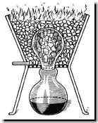<br>
            <font face="Arial,Helvetica"><font color="#000099"><font
                  size="-1"><br>
                </font></font></font></center>
        </blockquote>
        <blockquote><font face="Arial,Helvetica"><font color="#000099">Au

              XIV<sup>e</sup> siècle, le <b><i><font size="-1">Rasaratnassamuchchaya</font></i></b>
              décrit comment le métal peut être obtenu par chauffage de
              la calamine par de la matière organique dans un creuset
              fixé à un condenseur. La vapeur est refroidie dans le
              condenseur situé sous le creuset. Vers 1374, les Indiens
              avaient reconnu que le zinc était un nouveau métal et une
              petite production avait démarré. A Zawar, au Rajasthan, la
              production de zinc semble avoir été intensive du XII<sup>e</sup>
              au XVI<sup>e</sup> siècle. Le métal était aussi connu en
              Chine vers 1600 ap. J.-C. Enfin, on peut citer l'écrivain
              romain Strabon (66 av. J.-C.  24 ap. J.-C.) qui mentionne
              que dans l'île de </font><font color="#660000">Chypre</font><font
              color="#000099">, les minerais de cuivre contenaient de la
              tutie et des pierres de calamine, i.e. les matériaux du
              laiton. Le </font><font color="#660000">pompholyx</font><font
              color="#000099"> dont parlent Dioscoride, Pline, Galien,
              était préconisé dans l'emploi des emplâtres siccatifs. Il
              était préparé de la manière suivante : on construisait
              deux petites chambres l'une sur l'autre ; dans le milieu
              de celle d'en bas était placé le fourneau. Cette chambre
              avait un plafond voûté et une petite fenêtre qu'on tenait
              fermée pendant la préparation du pompholyx. Quand le feu
              était bien allumé et le fourneau bien chaud, on y jetait
              du cuivre jaune et de la calamine qui, par l'action du
              feu, répandait d'épaisses fumées blanches. Ces fumées
              venaient s'attacher aux parois et à la voûte de la chambre
              sous forme de petits flocons doux au toucher, auxquels on
              donnait le nom de pompholyx, et plus tard celui de laine
              des philosophes. Les flocons qui retombaient sur le
              plancher inférieur, et qui étaient réputés moins purs,
              constituaient le spodium des Anciens [</font></font><font
            color="#660000"><font face="Symbol"><font size="+1">SpodoV</font></font><font
              face="Arial,Helvetica"><font size="-1">= cendre, Pline, <b><i>Hist.

                    Nat.</i></b> XXXIV, 13</font></font></font><font
            color="#000099"><font face="Arial,Helvetica">]. Le pompholyx
              et le spodium ne sont donc pas autre chose que de l'oxyde
              de zinc, qui se produit chaque fois pendant la sublimation
              du zinc au contact de l'air. Les termes </font><font
              face="Symbol"><font size="+1">cassitero</font></font><font
              face="Arial,Helvetica"> et stannum que l'on traduit par
              étain, donnent lieu à une multitude d'équivoques qui
              disparaissent dès lors que l'on admet que les Grecs et les
              Romains connaissaient le zinc, et qu'ils appelaient, ainsi
              que l'étain, </font><font face="Symbol"><font size="+1">cassiteroV</font></font><font
              face="Arial,Helvetica"> ou stannum.</font></font></blockquote>
        <blockquote><font face="Arial,Helvetica"><font color="#000099">On

              pense que les Romains firent du laiton du temps d'Auguste
              (20 av. J.-C.  14 ap. J.-C.) en chauffant une poudre de
              calamine, du charbon et des grains de cuivre. Les Romains
              observèrent par ailleurs que les pièces faites avec de l </font><font
              color="#660000">orichalque</font><font color="#000099"> ne
              pouvaient être distinguées de l or.</font></font> <br>
          <font face="Arial,Helvetica"><font color="#000099">L'</font><font
              color="#660000">aes</font><font color="#000099">, le<font
                size="+1"> </font></font></font><font color="#000099"><font
              face="Symbol"><font size="+1">calcoV</font></font><font
              face="Arial,Helvetica">, que l'on traduit par airain,
              était employé encore à l'époque de la guerre de Troie (</font></font><font
            face="Arial,Helvetica"><font color="#660000"><font size="-1">900

                à 1000 av. J.-C.</font></font><font color="#000099">),
              pour la fabrication des armes. Il règne une grande
              confusion à l'égard des dénominations telles que aes, </font></font><font
            color="#000099"><font face="Symbol"><font size="+1">calcoV</font></font><font
              face="Arial,Helvetica">, aurichalcum, que l'on traduit
              indifféremment par airain, cuivre, bronze, laiton. Il est
              bon, ici, de rappeler que les noms des substances étaient
              primitivement fondés sur l'</font></font><font
            face="Arial,Helvetica"><font color="#660000">aspect
              extérieur</font><font color="#000099">, et sur les
              propriétés physiques souvent fort accidentelles, de sorte
              que des substances entièrement différentes d'après leur
              composition, étaient quelquefois considérées comme
              identiques. C'est ainsi qu'un verre coloré par un oxyde
              métallique était, pour les anciens, une véritable </font><font
              color="#660000">pierre précieuse</font><font
              color="#000099">, que la baryte, le strontiane et la
              magnésie ont été pendant des siècles confondus avec la </font><font
              color="#660000">chaux</font><font color="#000099">. Cette
              remarque s'applique à la dénomination générique d'aes ou
              de </font></font><font color="#000099"><font
              face="Symbol"><font size="+1">calcoV</font></font><font
              face="Arial,Helvetica">, qui désigne tantôt un alliage de
              cuivre et d'étain en proportion variable, tantôt enfin du
              cuivre proprement dit.</font></font> <br>
          <font face="Arial,Helvetica"><font color="#000099">Ainsi,
              lorsque l'on calcine dans un fourneau certains minerais de
              cuivre et de fer, il se forme sur les parois de la
              cheminée, des dépôts grisâtres, quelquefois très
              importants et qui pourraient obstruer le fourneau si l'on
              n'avait pas soin de les détacher de temps en temps avec un
              ringard [</font><font color="#660000"><font size="-1">outil

                formé d'une tige métallique terminée soit en fer de
                lance, soit par une pointe coudée à angle droit</font></font><font
              color="#000099">]. Ces dépôts [<font size="-1">oxyde de
                zinc impur</font>] qui portent le nom de </font><font
              color="#660000">cadmies</font><font color="#000099">, sont
              connus depuis fort longtemps. La cadmie provenant des
              fourneaux de l'île de </font><font color="#660000">Chypre</font><font
              color="#000099"> passait pour la meilleure [</font><font
              color="#660000"><font size="-1">Pline, <i><b>Hist. nat.</b>,
                  XXXIV, 10</i></font></font><font color="#000099">].
              Les Grecs et les Romains connaissaient également la
              calamine, qu'ils appelaient cadmie naturelle. On employait
              la cadmie à la fabrication de l'</font><font
              color="#660000">airain</font><font color="#000099"> [<font
                size="-1">aes, </font></font></font><font
            color="#000099"><font face="Symbol"><font size="+1">calcoV</font></font><font
              face="Arial,Helvetica">]. Pline dit [</font></font><font
            face="Arial,Helvetica"><i><font color="#660000"><font
                  size="-1"><b>Hist. nat.</b>, XXXIV, 10</font></font></i><font
              color="#000099">] : la pierre dont on fait l'airain et qui
              est utile aux fondeurs se nomme cadmie. C'est la cadmie
              naturelle ou la calamine. Il remarque ensuite que la
              cadmie qui se dépose sur les parois des cheminées [<font
                size="-1">cadmie artificielle</font>] peut également
              servir à la fabrication de l'airain. Par ailleurs,
              Dioscoride [</font><i><font color="#660000"><font
                  size="-1"><b>Mat. med.</b> , V, 84</font></font></i><font
              color="#000099">] donne l'analyse de l'airain, en disant
              que la cadmie se produit pendant la calcination de
              l'airain, qu'elle s'attache sur les parois de la cheminée,
              etc.</font></font> <br>
          <font face="Arial,Helvetica"><font color="#000099">Ainsi, il
              semble bien établi que les Anciens fabriquaient de
              l'airain avec du cuivre et du zinc ; cet airain est donc
              une espèce de </font><font color="#660000">laiton</font><font
              color="#000099">. Le cuivre était aussi appelé airain [</font><font
              color="#660000"><font size="-1">aes</font></font><font
              color="#000099">]. L'airain, dit Pline, se retire aussi
              d'une autre pierre appelée </font><font color="#660000">kalkitis</font><font
              color="#000099"> [<font size="-1">pyrite de cuivre</font>],

              qu'on rencontre dans l'île de Chypre [</font><i><font
                color="#660000"><font size="-1"><b>Hist. nat.</b>,
                  XXXIV, 2</font></font></i><font color="#000099">].
              Mais l'aurichalque obtint bientôt par sa beauté tous les
              suffrages et remplaça l'airain de chypre. Cet airain de
              Chypre, que Pline appelle [</font><i><font color="#660000"><font
                  size="-1"><b>Hist. nat.</b>, XXXVI, 26</font></font></i><font
              color="#000099">] </font><font color="#660000">cyprium</font><font
              color="#000099">, d'où vint plus tard le nom de cuprum,
              cuivre, était employé dans la coloration des </font><font
              color="#660000">verres</font><font color="#000099">. C'est
              avec ce même cuivre que l'on imitait sur les statues la
              couleur rouge des robes prétextes [</font><font
              color="#660000"><font size="-1">vêtement blanc bordé de
                pourpre que portaient les patriciens et les magistrats</font></font><font
              color="#000099">] [</font><i><font color="#660000"><font
                  size="-1"><b>Hist. nat.</b>, XXXIV, 9</font></font></i><font
              color="#000099">]. Le nom de cyprium ou d'aes cyprium [</font><font
              color="#660000"><font size="-1">airain de Chypre</font></font><font
              color="#000099">] ne paraît avoir définitivement fait
              place à celui de cuprum [</font><font color="#660000"><font
                size="-1">de </font></font></font><font color="#660000"><font
              face="Symbol"><font size="+1">kuproV</font></font><font
              face="Arial,Helvetica"><font size="-1">, Chypre</font></font></font><font
            face="Arial,Helvetica"><font color="#000099">] que vers la
              fin du III<sup>e</sup> siècle. Quant à l'aurichalque ou
              orichalque dont parle déjà Platon, et que les Anciens
              estimaient préférable, par sa beauté, à l'airain de
              Chypre, il s'obtenait en projettant de la cadmie sur de
              l'airain cuivre.</font></font> <br>
          <font face="Arial,Helvetica"><font color="#000099">Le mot </font><font
              color="#660000">airain</font><font color="#000099"> [</font><font
              color="#660000"><font size="-1">aes</font></font><font
              color="#000099">] a une autre signification : l'airain,
              dit Pline, sert à faire des statues ou des tables et se
              fabrique en ajoutant douze livres et demie de plomb
              argentaire [<font size="-1">plumbum argentarium</font>] à
              cent livres de cuivre en fusion [</font><i><font
                color="#660000"><font size="-1"><b>Hist. nat.</b>,
                  XXXIV, 2</font></font></i><font color="#000099">]. Or,
              le plomb argentaire est un alliage de plomb et d'étain,
              connu aujourd'hui sous le nom de soudure des plombiers.
              L'airain est encore du bronze : il existe, continue Pline,
              une espèce d'airain appelé airain de forme, qui prend
              facilement la couleur qu'on appelle grécanique ; cette
              sorte d'airain est un alliage de 100 parties de cuivre, de
              10 parties de plomb et de 5 parties de plomb argentaire [</font><i><font
                color="#660000"><font size="-1"><b>Hist. nat</b>.,
                  XXXIV, 2</font></font></i><font color="#000099">].<br>
              <br>
            </font></font>
          <div style="text-align: center;"><font face="Arial,Helvetica"><font
                color="#000099">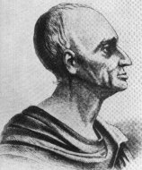<br>
                <small style="color: rgb(102, 0, 0);">Andreas Sigismund
                  Marggraf</small><br>
              </font></font></div>
          <p><font face="Arial,Helvetica"><font color="#000099">Aux
                temps modernes, c'est Funk qui isola le zinc ; il fut
                ensuite étudié par Andreas <font size="-1"><a
                    href="../original/chevreul-hoefer-3.html">Marggraf</a></font>
                (1709-1782) en 1746 à partir de la sphalérite. Marggraf
                isola aussi l'</font><font color="#660000">alumine</font><font
                color="#000099"> ; le chimiste danois Anton von Swab
                (1703-1768) prépara le zinc à partir de la blende. Le
                procédé de distillation s appelait alors la
                distillation per ascendum (</font><font color="#660000"><font
                  size="-1">cf. la <i><b><a href="../original/table-hermes.html">Table

                        d' Emeraude</a></b> </i>pour des analogies</font></font><font
                color="#000099">). La première utilisation industrielle
                du zinc fut le fait de l'abbé Jean-Jacques Daniel </font><font
                color="#660000">Dony</font><font color="#000099">
                (1759-1819) qui mit au point le procédé de réduction et
                de distillation, dit procédé liégeois. Dans l'antiquité,
                le zinc était utilisé  sans donc que l'on sût qu'il
                s'agissait d'un métal inconnu - sous forme alliée et
                entrait dans la composition de nombreux bronzes et
                laitons. L'airain, de composition variable, contenait
                surtout du cuivre, de l'étain et du zinc. Il était
                élaboré par réduction du mélange des minerais
                métalliques. Il semble qu'au Moyen Âge, le zinc était
                connu en Europe comme une variété d'</font><font
                color="#006600">étain</font><font color="#000099">, d'où
                son nom <i>zinn</i> dérivé du mot germanique désignant
                l'étain. Il est possible que plusieurs alchimistes aient
                obtenu du zinc à partir du traitement de la </font><font
                color="#006600">galène</font><font color="#000099"> (</font><font
                color="#660000"><font size="-1">sulfure de plomb = PbS</font></font><font
                color="#000099">) et de la blende (</font><font
                color="#660000"><font size="-1">ou sphalérite, sulfure
                  de zinc = ZnS</font></font><font color="#000099">) ;
                ils auraient alors eu l'impression d'extraire le Mercure
                du plomb.En effet, le plomb et le zinc se trouvent
                généralement associés, en proportion variable, dans les
                mêmes gisements. Par exemple, dans le Tarn, à
                Peychebrune, on trouve un gisement formé de <font
                  size="-1"><a href="../original/reincrud.html" class="lien-repare" title="ancre absente de la page d'origine : lien ramené en haut de page">fluorine</a></font>
                (</font><font color="#660000"><font size="-1">claire</font></font><font
                color="#000099">), de blende (</font><font
                color="#660000"><font size="-1">noir et gris foncé</font></font><font
                color="#000099">) et de galène (</font><font
                color="#660000">noir</font><font color="#000099">) en
                filets contournés dans la fluorine. Ailleurs, à Malines
                (Gard), les couches de blende et de galène se sont
                déposées en grains gris foncé. Des schistes noirs
                peuvent d'ailleurs se trouver associés, comme à
                Saint-Salvy-de la-Balme. Ce qui nous intéresse ici est
                la liaison fréquente entre le</font><font
                color="#006600"> zinc</font><font color="#000099"> et le
              </font><font color="#006600">plomb</font><font
                color="#000099">. Le plomb a très souvent été confondu
                - à tort bien sûr - avec le sujet des Sages et le grand
                public croit encore que l'alchimiste passait son temps à
                essayer de « transformer du plomb en or ». Certes, tout
                n'est pas faux dans cette formule et nous verrons
                pourquoi à notre avis, le plomb et peut-être aussi le
                zinc sont indispensables pour la fabrication de la
                Pierre Philosophale.</font></font> <font
              face="Arial,Helvetica"><font color="#000099">[<small
                  style="color: rgb(102, 0, 0);">Depuis la rédaction de
                  ces lignes, nous avons remarqué que les fondants
                  métalliques produisent des « pierres » dont les
                  conditions de préparation n'ont rien à voir avec les
                  procédés « de nature » ; aussi rangerons-nous ces
                  procédés dans le domaine de l'archimie ou <font
                    size="-1"><small><a href="../original/imitat-prec.html#Spagyrie">spagyrie</a></small></font>
                  en réservant les </small></font><small style="color:
                rgb(102, 0, 0);">alcalis</small><font color="#000099"><small
                  style="color: rgb(102, 0, 0);"> au domaine propre à
                  l'alchimie</small>].</font></font></p>
        </blockquote>
        <blockquote> <font face="Arial,Helvetica"><font color="#000099">On

              peut relever dans les textes de Fulcanelli des passages
              qui font allusion de manière indirecte au zinc. Le
              chimiste J.F. </font><font color="#660000">Henckel</font><font
              color="#000099"> qui a étudié le métal est cité dans les <b><i><font
                    size="-1">DM, I</font></i></b>, p. 387 à propos de
              son <b><i><font size="-1">Flora Saturnisans</font></i></b>
              (1760) puis p. 398 et enfin dans les <b><i><font
                    size="-1">DM, II</font></i></b>, p. 162 et p. 290.
              Plus loin, Fulcanelli emploie le terme désuet « <i>styptique</i>
              » (</font><font color="#660000"><font size="-1">utilisé
                par B. Valentin dans ses <b><i><a href="../original/emblemes.html">XII

                      Clefs</a></i></b></font></font><font
              color="#000099">) pour désigner des corps astringents (</font><font
              color="#660000"><font size="-1">comme le zinc ou l'alun</font></font><font
              color="#000099">). L'équivoque est entretenue (</font><font
              color="#660000"><font size="-1"><b><i>DM, I</i></b>, p.457</font></font><font
              color="#000099">) lorsque l'Adepte nous dit que la
              première lettre du sujet des sages est l'Eta des Grecs qui
              correspond à la lettre </font><font color="#660000">G </font><font
              color="#000099">des Latins.</font></font><font
            face="Arial,Helvetica"><font color="#000099"> [<small
                style="color: rgb(102, 0, 0);">Sur la lettre <font
                  size="+2"><small>G</small></font>&nbsp; et sa
                correspondance au <font size="+2"><small>C</small></font>
                inversé, cf. la section sur les <font size="-1"><small><a
                      href="../original/gardes-corps.html">Gardes du corps de
                      François II</a></small></font></small>].</font></font>
          <font face="Arial,Helvetica"><font color="#000099">Est-ce par
              hasard, si p. 122 (</font><b><i><font color="#660000"><font
                    size="-1">DM, II</font></font></i></b><font
              color="#000099">) l'Adepte nous renvoie à un nommé Gilly
              alors que deux lignes plus bas, dans le <i>dictionnaire
                Larousse</i>, nous trouvons le </font><i><font
                color="#006600">gillotage</font></i><font
              color="#000099"> qui est un procédé de gravure sur zinc
              ?&nbsp; Ce n est pas non plus sans raison que Fulcanelli
              insiste sur les ornements où le zinc peut figurer en tant
              que zinc d'art (</font><font color="#660000"><font
                size="-1">remplaçant le plomb sur les toits</font></font><font
              color="#000099">) ou en tant que bronze d'imitation ;
              cette dernière remarque explique peut-être l'allusion à la
              cubitière (</font><font color="#660000"><font size="-1"><b><i>DM,

                    II</i></b>, pp. 167-168</font></font><font
              color="#000099">), symbole d'un des caissons du château
              de Dampierre. D'autres éléments s'ajoutent à partir de la
              p. 172 où l'alchimiste nous parle de la terre romaine ;
              ici, il s'agit d'une indication des plus sérieuses qui,
              certes, peut faire référence au vitriol romain (sel double
              de fer et de cuivre) mais peut aussi évoquer l'alun de
              Roche ou alun de Rome qui, ainsi que nous le dit <a
                href="../original/chevreul-hoefer-2.html">Nicolas Lémery</a> dans
              son <b><i><font size="-1">cours de Chymie</font></i></b>
              (</font><font color="#660000"><font size="-1">chapitre
                XIX, <i>De l Alun de Roche, &amp; de sa Purification</i>,
                pp. 550-553</font></font><font color="#000099">) :</font></font></blockquote>
        <blockquote align="CENTER">
          <center>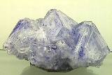<br>
            <font face="Arial,Helvetica"><font color="#000099"><font
                  size="-1">alun de roche<br>
                </font></font></font></center>
        </blockquote>
        <blockquote><font face="Arial,Helvetica"><font size="-1"><font
                color="#000099">"</font><i><font color="#660000">est une
                  espèce de pierre qui naît dans des carrières en
                  plusieurs lieux de l Europe, comme en France, en
                  Angleterre, en Italie &amp;</font></i><font
                color="#000099">"</font></font></font></blockquote>
        <blockquote><font face="Arial,Helvetica"><font color="#000099">Quant

              au vitriol blanc, il s'agit de sulfate de zinc. On peut en
              rapprocher la couperose (</font><font color="#660000"><font
                size="-1">de rose de cuivre = cuprirosa</font></font><font
              color="#000099">) qui est du sulfate de cuivre ou vitriol
              bleu. C'est le lieu de citer ici un passage des <i><font
                  size="-1">Annales de Chimie</font></i> où Gay-Lussac
              parle de la préparation du sulfate de cuivre et du sulfate
              de fer qui peut nous aider dans la préparation du principe
              Soufre :</font></font> <br>
          &nbsp;
          <center>
            <table style="width: 80%;" cols="1"
              background="fondmarbre.jpg" border="0">
              <tbody>
                <tr>
                  <td><font face="Arial,Helvetica">Lorsque le fer est
                      très oxydé, il est précipité par l'oxyde de
                      cuivre, et l'inverse a lieu, lorsqu'il l'est très
                      peu. Il se présente ici deux conséquences très
                      importantes, parce qu'elles peuvent avoir de
                      fréquentes applications dans les arts ; la
                      première, que l'on peut séparer tout le fer d'une
                      dissolution de cuivre ; la seconde, que l'on peut
                      enlever tout le cuivre que contient une <font
                        color="#000099">dissolution verte</font> de fer.
                      On prépare plusieurs couleurs avec le sulfate de
                      cuivre ; mais le fer qu'il contient toujours et
                      qu'on n'a pu encore parvenir à en séparer
                      complètement, en altère la nuance. Si pour remplir
                      ce dernier objet, on oxyde fortement le fer, par
                      le moyen de l'<font color="#000099">acide nitrique</font>,
                      ou mieux de l'acide muriatique oxygéné [<font
                        color="#000099"><font size="-1">chlorhydrique</font></font>],
on


                      le précipitera entièrement du sulfate de cuivre,
                      en y versant de la potasse en quantité suffisante,
                      et en chauffant et agitant bien la liqueur.</font>
                    <font face="Arial,Helvetica">On emploie aussi
                      souvent dans les arts le <font color="#000099">sulfate
                        vert de fer</font>, et dans plusieurs on désire
                      qu'il ne retienne pas du tout de cuivre. Le fer a
                      bien la propriété de le séparer, mais il paraît
                      qu'il ne le fait que très imparfaiement, et avec
                      beaucoup de temps. Il sera, sans doute, plus
                      avantageux d'employer la potasse et d'en verser un
                      peu dans le sulfate vert : le précipité d'<font
                        color="#000099">oxyde noir de fer</font>,
                      rentrera bientôt en dissolution par l'agitation et
                      il précipitera à la fois l'oxyde de cuivre et
                      l'oxyde rouge de fer, s'il s'en trouve dans le
                      sulfate vert.</font></td>
                </tr>
              </tbody>
            </table>
          </center>
          <center><font face="Arial,Helvetica"><font color="#000099"><font
                  size="-1">Gay-Lussac, extrait de <i>Ann. de Chim.</i>,
                  tom. XLIX</font></font></font></center>
          <p><font face="Arial,Helvetica"><font color="#000099">Voilà
                encore un texte où l'on observe une séparation entre
                deux métaux, ici sous forme d'oxydes et le début de la
                séparation est marquée [</font><font color="#660000"><font
                  size="-1">signée</font></font><font color="#000099">]
                par l'apparition d'un précipité d'oxyde noir de fer qui
                disparaît par agitation. S'agirait-il de l'une des
                putréfactions signalées par <font size="-1"><a
                    href="../original/symb-dir-prim.html" class="lien-repare" title="ancre absente de la page d'origine : lien ramené en haut de page">Le
                    Breton</a></font>? Il s'agit en tout cas d'une
                séparation d'où l'on extrait un Caput, c'est-à-dire un
                métal réduit à l'état de </font><font color="#660000">cendre</font><font
                color="#000099">.</font></font> <br>
            <font face="Arial,Helvetica"><font color="#000099">Cyprius
                est le nom du cuivre égyptien fait avec la </font></font><font
              face="Ari`l,Helvetica"><font color="#006600">cadmie</font></font><font
              face="Arial,Helvetica"><font color="#000099"> (</font><font
                color="#660000"><font size="-1">cf. supra</font></font><font
                color="#000099">). D'une façon générale était appelé
                vitriol <u>tout sulfate</u> et B. Valentin dans son <b><i><font
                      size="-1">Testamentum</font></i></b> cite le « </font><i><font
                  color="#660000"><font size="-1">minerai de vitriol </font></font><font
                  color="#000099">»</font></i><font color="#000099">.</font></font></p>
        </blockquote>
        <blockquote><font face="Arial,Helvetica"><font color="#000099">En

              résumé sur le zinc, il est probable que plusieurs
              alchimistes l'aient isolé sans le rattacher à un métal
              nouveau ou à caractère particulier. Pour nous, c'est
              surtout l'oxyde de zinc qui présente de l'intérêt car il
              est utilisé en tant que </font><font color="#660000">fondant

            </font><font color="#000099">mais il peut aussi être utilisé
              comme Soufre et déterminer dans un certain sens
              l'orientation de la Pierre.</font></font> <br>
          &nbsp; <br>
          &nbsp; <br>
          <center>
            <p><a  name="5)-"></a><u><font face="Arial,Helvetica"><font
                    color="#660000"><font size="+1">5)- Le plomb des
                      Sages [nigrum plumbum]</font></font></font></u></p>
          </center>
        </blockquote>
        <blockquote><font face="Arial,Helvetica"><font color="#000099">Le

            </font><font color="#660000">plomb</font><font
              color="#000099"> a très souvent été cité par les
              alchimistes ; comme nous l'avons vu supra, c est la
              galène (</font><font color="#660000"><font size="-1">PbS</font></font><font
              color="#000099">) qui a certainement été utilisée. Dans
              les textes, le plomb est très souvent associé à son
              symbole astrologique : </font><font color="#660000">Saturne</font><font
              color="#000099">. On a vu que les Anciens confondaient
              souvent le plomb, l'antimoine et le zinc. <font size="-1"><a
                  href="../original/liber-artephius.html">Artephius</a></font> n
              écrit-il pas, au début du <b><i><font size="-1">Livre
                    secret</font></i></b>, que :</font></font>
          <p><font face="Arial,Helvetica"><font size="-1"><font
                  color="#000099">"</font><i><font color="#660000">l'antimoine

                    est des parties de Saturne &amp;</font></i></font></font><i>"</i><font
              face="Arial, Helvetica, sans-serif"> [<font
                color="#990000"><font size="-1">et que Chevreul traduit
                  par<i> Plumbum est</i>...</font></font>]</font> </p>
          <p><font face="Arial,Helvetica"><font color="#000099">Nous
                avons eu à de multiples reprises l'occasion d'identifier
                l'arcane voilé par l'<font size="-1"><a
                    href="../original/gardes-corps.html" class="lien-repare" title="ancre absente de la page d'origine : lien ramené en haut de page">antimoine saturnin</a></font>.
                D'autres symboles, de vertu notamment, semblent évoquer
                le plomb : la <font size="-1"><a
                    href="../original/gardes-corps.html" class="lien-repare" title="ancre absente de la page d'origine : lien ramené en haut de page">Tempérance</a></font>
                et la <font size="-1"><a href="#" title="lien mort dans l'archive">Patience</a></font>
                en particulier. Le temps lui-même évoque Saturne et
                l'horloge est un symbole que l'on voit exprimé chez N.
                Flamel dans ses <i><font size="-1"><b><a
                        href="../original/fig-hier.html">Figures Hiéroglyphiques</a></b>
                  </font></i>de même que le sablier qui renferme le sel
                de Patience ou <font size="-1"><a
                    href="../original/heraldique.html" class="lien-repare" title="ancre absente de la page d'origine : lien ramené en haut de page">sel harmoniac
                    sophique</a></font>. Enfin, Fulcanelli, par trois
                fois, utilise le mot </font><font color="#660000">probe</font><font
                color="#000099">, d'abord sous forme directe quand il
                nous parle de « <i>l'or probe </i>» puis de façon
                indirecte par deux fois (</font><i><font color="#660000"><font
                    size="-1"><b>Myst</b>.</font></font></i><font
                color="#660000"><font size="-1">, p.190</font></font><font
                color="#000099">) quand il nous décrit un personnage
                loyal, c'est-à-dire probe et p.98, quand il évoque la
                scène du <font size="-1"><a href="#" title="lien mort dans l'archive">massacre


                    des Innocents</a></font> si chère à N. Flamel.
                Probe, en latin, se dit </font><font color="#660000">aerarius</font><font
                color="#000099"> (</font><font color="#660000"><font
                  size="-1">trésor secret, étranger</font></font><font
                color="#000099">) mais renvoie surtout à aerarium qui
                était le temple consacré à </font><font color="#660000">Saturne</font><font
                color="#000099">. Donc, dans les textes, toute référence
                à un personnage honnête, loyal, probe, etc.,&nbsp; doit
                se rapporter à Saturne, c'est-à-dire au plomb ou
                peut-être au </font><font color="#660000">plomb
                argentifère</font><font color="#000099">, i.e. l'étain [</font><font
                color="#660000"><font size="-1"><a
                    href="../original/prima-materia.html#stibium">plumbum album</a></font></font><font
                color="#000099">]. Là encore, pour des raisons que nous
                développerons plus loin, c'est l'oxyde de plomb qui
                nous intéresse. Selon la densité de la gangue dans
                laquelle elle se trouve dispersée, la galène est d'abord
                transformée par grillage à 700°C en oxyde <font
                  size="-1">PbO</font>. Il faut éviter la formation du
                sulfate <font size="-1">PbSO<sub>4</sub></font> qui ne
                se décompose que vers 800°C. L'oxyde <font size="-1">PbO</font>
                existe sous deux formes, la </font><font
                color="#006600">litharge</font><font color="#000099"> (</font><font
                color="#660000"><font size="-1">rouge</font></font><font
                color="#000099">), le massicot (</font><font
                color="#660000"><font size="-1">jaune</font></font><font
                color="#000099">) dont la température de transformation
                se situe à 486°C. A noter que le faible point de fusion
                du plomb (</font><font color="#660000"><font size="-1">327°C</font></font><font
                color="#000099">) peut encore être abaissé par addition
                d'étain. Par exemple, les alliages pour soudure
                contiennent entre 40 et 50% d'étain. Le sulfure de plomb
                (</font><font color="#660000"><font size="-1">PbS</font></font><font
                color="#000099">) a une coloration noire tandis que le
                plomb lui-même a un éclat argenté qui ternit à l'air par
                formation d' une couche d'oxyde et de carbonate. Là
                encore, le plomb est largement utilisé comme fondant et
                c'est à ce titre qu'il pourra nous intéresser mais son
                intérêt, à vrai dire, semble se limiter à un usage
                spagyrique. Seul, <font size="-1"><a
                    href="../original/laboratoire-3.html">Edmond Frémy et Feil</a></font>
                ont pu l'utiliser à des fins proprement alchimiques mais
                avec un procédé qui tient de la spagyrie.</font></font>
          </p>
          <p><font face="Arial,Helvetica"><font color="#000099">Les
                Latins parlent de deux espèces de plomb : le plomb blanc
                [</font><font color="#660000"><font size="-1">plumbum
                  album</font></font><font color="#000099">] et le plomb
                noir [</font><font color="#660000"><font size="-1">plumbum

                  nigrum</font></font><font color="#000099">] qui est
                ici l'objet de notre attention. Le premier est, selon
                Pline, nommé par les Grecs </font></font><font
              color="#000099"><font face="Symbol"><font size="+1">cassiteroV</font></font><font
                face="Arial,Helvetica">. Le plomb blanc serait donc de
                l'étain, ou peut-être même du zinc. L'Espagne et les
                Gaules renfermaient les principales mines de plomb
                exploitées par les Romains. On n'ignorait pas que le
                minerai de plomb est généralemnt argentifère car la
                galène [</font></font><font color="#660000"><font
                face="Arial,Helvetica"><font size="-1">galena, du grec </font></font><font
                face="Symbol"><font size="+1">ga</font></font><font
                face="Arial,Helvetica"><font size="-1">, terre et plena</font></font></font><font
              face="Arial,Helvetica"><font color="#000099">] était
                soumise à un traitement préalable pour en retirer
                l'argent qu'elle contenait. Le minerai appelé molybdène
                [</font><font color="#660000"><font size="-1">molybdoena</font></font><font
                color="#000099">] n'était, d'après Pline, autre chose
                que la galène ou un minerai de plomb argentifère. La
                litharge [</font></font><font face="Symbol"><font
                color="#000099"><font size="+1">liqarguroV </font></font></font><font
              face="Arial,Helvetica"><font color="#660000"><font
                  size="-1">de Dioscoride</font></font><font
                color="#000099">] est ce que Pline appelle scorie de
                plomb [</font><font color="#660000"><font size="-1">scoria

                  plumbi</font></font><font color="#000099">]. On en
                distinguait deux espèces, l'une appelée </font><font
                color="#660000">chrysitis</font><font color="#000099">,
                provenant de la purification de l'or par le plomb ;
                l'autre </font><font color="#660000">argyritis</font><font
                color="#000099">, provenant de la purification de
                l'argent par le même moyen. Pour l'obtenir, il suffit de
                diviser le plomb en lames très minces, que l'on chauffe
                en remuant avec une baguette de fer, jusqu'à ce qu'il se
                soit converti en cendres. D'autres saupoudrent de soufre
                les lames de plomb ainsi chauffées. Le </font><font
                color="#660000">minium</font><font color="#000099">, qui
                servait surtout dans la peinture, s'obtenait pendant la
                calcination du minerai de plomb. On le « <i>sophistiquait</i>
                » avec de la chaux. Pour dépister cette fraude, Vitruve
                dit [</font><i><font color="#660000"><font size="-1"><b>De

                      Archit.</b>, VII, c. 9.</font></font></i><font
                color="#000099">] :</font></font> </p>
          <p><i><font face="Arial,Helvetica"><font size="-1"><font
                    color="#000099">"</font><font color="#660000">Pour
                    reconnaitre cette sophistication, il faut mettre du
                    minium soupçonné impur sur une lame de fer, que l'on
                    chauffe jusqu'à incandescence. Si alors le minium,
                    de rouge qu'il est, paraît noir, et qu'étant
                    refroidi, il reprend sa première couleur, on peut
                    être assuré qu'il n'est point sophistiqué.</font><font
                    color="#000099">"</font></font></font></i> </p>
          <font face="Arial,Helvetica"><font color="#000099">Nous avons
              déjà parlé de la </font><font color="#660000">céruse</font><font
              color="#000099"> en commentant l'<b><i><font size="-1"><a
                      href="../original/philalethe-6.html">Introïtus, VI</a></font></i></b>
              de Philalèthe. La céruse, soumise au grillage, était
              convertie en minium et employée comme fard par les dames
              romaines. Nous allons à présent approfondir l'étude de l'</font><font
              color="#006600">étain </font><font color="#000099">comme
              s'il s'agissait de l'un des composants possibles du
              dissolvant universel : les Anciens l'appellent stannum, </font><font
              color="#660000">plumbum album</font><font color="#000099">,
              plumbum argentarium, cassiteros [</font></font><font
            face="Symbol"><font color="#660000"><font size="+1">cassiteroV</font></font></font><font
            color="#000099"><font face="Arial,Helvetica">] que l'on se
              contente de rendre par étain. Comme on l'a vu, on peut
              admettre que quelques-uns de ces termes s'appliquent au
              zinc ou à un alliage dans lequel le zinc prédomine, comme
              cela paraît être le cas pour le </font><font
              face="Symbol"><font size="+1">cassiteroV</font></font><font
              face="Arial,Helvetica"> auquel Homère donne l'épithète de
            </font></font><font face="Arial,Helvetica"><font
              color="#660000">brillant</font><font color="#000099"> et
              qui servait à la fabrication des boucliers et d'autres
              instruments. Les Îles Cassitérides étaient, dans toute
              l'antiquité, célèbres par leurs mines d'étain [</font><font
              color="#660000"><font size="-1">Strabon nous dit que les
                autochtones portent des vêtements noirs, tombant
                jusqu'aux talons, et attachés autour de la ceinture par
                des branches d'arbre. Ces hommes portent des barbes
                longues comme celles de boucs</font></font><font
              color="#000099">].</font></font><font
            face="Arial,Helvetica"><font color="#000099"> L'étamage [</font><font
              color="#660000"><font size="-1">abordée dans la section
                sur la <a href="../original/prima-materia.html" class="lien-repare" title="ancre absente de la page d'origine : lien ramené en haut de page">matière

                  première</a> et dans une note annexée aux <a
                  href="../original/gardes-corps.html" class="lien-repare" title="ancre absente de la page d'origine : lien ramené en haut de page">Gardes du corps de
                  François II</a></font></font><font color="#000099">]
              était une opération fort ancienne. Pline [</font><i><font
                color="#660000"><font size="-1">XXXIV, 17</font></font></i><font
              color="#000099">] en dit :</font></font>
          <p> </p>
          <p><i><font face="Arial,Helvetica"><font size="-1"><font
                    color="#000099">"</font><font color="#660000">On se
                    sert de l'étain pour recouvrir des vases de cuivre,
                    qui présentent le double avantage d'être exempt
                    d'une saveur désagréable et d'être préservés de la <a
                      href="../original/gardes-corps.html#ionosph%C3%A8re">rouille</a>.</font><font
                    color="#000099">"</font></font></font></i> </p>
          <p style="text-align: center;"><font face="Arial,Helvetica"><font
                color="#000099">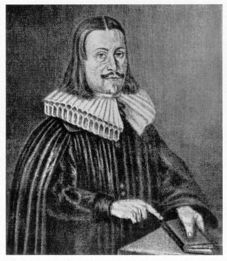<br>
              </font></font><small style="color: rgb(102, 0, 0);"><font
                face="Arial,Helvetica">Andreas Libavius</font></small><br>
          </p>
          <p><font face="Arial,Helvetica"><font color="#000099">On
                faisait avec l'étain des miroirs très estimés des
                Romains. Pline rapporte que le minerai d'étain se
                trouvait dans la Lusitanie et dans la Galicie, à fleur
                de terre, sur un sol </font><font color="#660000">sablonneux</font><font
                color="#000099">; qu'il était de couleur </font><font
                color="#660000">noire</font><font color="#000099"> et
                entremêlé de petites pierres. Quant au métal que l'on
                rencontrait dans les mines d'or et qui, après le lavage
                du minerai, se présentait sous la forme de calculs
                noirs, variés de taches blanches, il s'agissait
                certainement du </font><font color="#660000">platine</font><font
                color="#000099">. Sachons d' abord que des minerais
                d'étain ont été reconnus depuis la plus haute antiquité
                ; ils ont servi à fabriquer le bronze par alliage avec
                le cuivre. C est le chimiste allemand <a
                  href="../original/libavius.html">Andreas Libavius</a> (</font><font
                color="#990000"><font size="-1">v. 1550-1616</font></font><font
                color="#000099">) qui prépara le chlorure stannique que
                l'on appela </font><font color="#660000">liqueur
                fumante</font><font color="#000099"> de Libavius. <font
                  size="-1"><a href="../original/prima-materia.html#Palissy">Bernard
                    Palissy</a></font> contribua au développement de la
                céramique par la mise au point d'émaux obtenus à partir
                du plomb et de l'étain. L'étain fond à 232°C ; le seul
                minerai notable est l'oxyde <font size="-1">SnO<sub>2</sub></font>
                (</font><font color="#660000"><font size="-1">cassitérite</font></font><font
                color="#000099">). Des gisements primaires de
                cassitérite existent dans les Monts Métallifères de
                Bohême et de Saxe, en Bretagne (France) et en
                Cornouailles (Angleterre). La cassitérite est brun noir
                ; on peut y relever des nuances grises, verdâtres,
                jaunes et rouges jacinthe. On peut trouver de la
                cassitérite dans les alluvions comme gisements
                secondaires où elle prend la forme de nodules
                irréguliers. Point important, l' étain est attaqué par
                les oxydants énergiques tels que l'acide nitrique, au
                même titre d'ailleurs que le plomb. Là encore, les
                composés minéraux de l'étain qui nous intéressent sont
                des oxydes : d'abord, l'oxyde anhydre <font size="-1">SnO<sub>2</sub></font>
                obtenu par calcination de l'oxyde hydraté, qui se
                présente sous la forme d'une poudre <u>blanche</u>.
                L'oxyde <font size="-1">SnO</font>, <u>noir</u>, est
                obtenu par dessiccation de l'hydroxyde stanneux <font
                  size="-1">Sn(OH)2</font>, à l'abri de l'air. Il se
                décompose en oxyde stannique à partir de 370°C (<font
                  size="-1">SnO<sub>2</sub></font>). L'étain est avant
                tout utilisé pour des alliages, notamment avec le plomb,
                fondant vers 183°C. Les alliages à 30 ou 40 % d' étain
                sont employés pour la fabrication des </font><font
                color="#660000">miroirs</font><font color="#000099">. De
                façon générale, l'étude des textes modernes et aussi
                des textes classiques- montre que toute référence à
                Jupiter (Zeus) se rapporte en première approximation à
                l'étain ; on aura garde d'oublier en effet que le sel
                ammoniac était proche du temple dédié à Jupiter ;</font></font>
          </p>
          <p><b><font color="#000099"><font size="-1"><font
                    face="Arial,Helvetica">Corrélat alchimique</font></font></font></b>
          </p>
          <blockquote><font face="Arial,Helvetica"><font color="#000099">Une


                étude plus approfondie des textes nous a convaincu que
                sous Jupiter étaient voilés plusieurs arcanes : - d'une
                part, Jupiter renvoie à <font size="-1"><a
                    href="../original/fig-hier.html#120">Thémis</a></font> ainsi que
                nous l'avons montré dans le commentaire des <b><i><font
                      size="-1"><a href="../original/fig-hier.html">Figures
                        Hiéroglyphiques</a></font></i></b> ; - d'autre
                part Jupiter renvoie au <a
                  href="../original/zodiaque-alchimique.html#a">Bélier</a>
                [</font><font color="#660000"><font size="-1">Arès,
                  Ariès</font></font><font color="#000099">] par Jupiter
                Ammon. Sous cette seconde acception, deux possibilités :
                soit Jupiter Ammon renvoie effectivement à un sel
                ammoniacal particulier qui est peut-être le sel
                harmoniac des Anciens ; soit l'on retombe sur
                l'hypothèse de l'antimoine qui voilerait à son tour une
                <font size="-1"><a href="../original/prima-materia.html#stibium">Terre</a></font>
                dont nous parlons dans la section sur la matière
                première et celle des <font size="-1"><a
                    href="../original/gardes-corps.html" class="lien-repare" title="ancre absente de la page d'origine : lien ramené en haut de page">Gardes du corps
                    de François II</a></font>. Jupiter enfin, a toujours
                symbolisé l'eau ; en liaison avec le verbe cado [</font><font
                color="#660000"><font size="-1">cassito</font></font><font
                color="#000099">] et l'aigle de Jupiter, on peut penser
                que Jupiter ne cache point autre chose que la </font><font
                color="#660000"><font size="-1"><a
                    href="../original/heraldique.html#7%29-">Rosée de mai</a></font></font><font
                color="#000099">.</font></font></blockquote>
          <p><br>
            <font face="Arial,Helvetica"><font color="#000099">Quoi
                qu'il en soit, l'étain se dit en latin stagnum (</font><font
                color="#660000"><font size="-1">en grec, </font></font></font><font
              face="Symbol"><font color="#660000"><font size="+1">cassiteroV</font></font></font><font
              face="Arial,Helvetica"><font color="#000099">) ; le plomb
                argentifère se dit stannum. A noter que l'on trouve une
                allusion au mythe des argonautes très employé par
                Fulcanelli- chez Ovide (F, 4) dans l'expression « </font><i><font
                  color="#660000"><font size="-1">Phrixeae stagna
                    sororis</font></font><font color="#000099"> »</font></i><font
                color="#000099"> (</font><font color="#660000"><font
                  size="-1">= les eaux de la sSur de Phrixos,
                  l'Hellepont</font></font><font color="#000099">).
                L'étain et le zinc étaient confondus chez les Anciens
                et la référence à Zeus (Jupiter) vaut donc aussi bien
                pour l'étain que pour le zinc. Retenons aussi que la
                pourpre de <font size="-1"><a
                    href="../original/imitat-prec.html#Cassius">Cassius</a></font>
                est un précipité pourpre résultant de la réduction d'un
                sel d'or par des chlorures d'étain [<code><span
                    style="color: #660000;">cf. notre <a
                      href="../original/etain.html">voie humide</a></span></code>] ;
                dans le même ordre d'idée : l'or mussif est du sulfure
                stannique dont l'éclat rappelle l'or. Enfin, l'</font><font
                color="#660000">étain gris</font><font color="#000099">
                est une variété allotropique de l'étain que l'on
                appelle la « <i>lèpre</i> » ou peste de l'étain ; cela
                n'est pas sans nous rappeler le loup gris que l'on voit
                sur la planche I (<i><a href="../original/emblemes.html#Clef%20I">Clef


                    I</a></i>) de B. Valentin dans ses <b><i><font
                      size="-1"><a href="../original/emblemes.html">XII Clefs</a></font></i></b>.
                Mais, là encore, on ne saurait être trop prudent et ces
                indications répétées sur l'étain par Fulcanelli
                pourraient constituer une impasse dans le labyrinthe
                secret de l'Oeuvre et nous orienter vers une fausse
                piste. Au lecteur d'apprécier ce commentaire et, selon
                son estimation, de le révoquer en doute.</font></font></p>
        </blockquote>
        <blockquote align="CENTER">
          <center><br>
            <small>Clef I de Philosophie</small><br>
          </center>
        </blockquote>
        <blockquote><font face="Arial,Helvetica"><font color="#000099">Nous


              avons relevé toutes les occurrences possibles se référant
              à l'étain dans <i><b><font size="-1">Myst</font></b>.</i>
              et les <i>DM</i>. Le titre même du <b><i><font size="-1">Mystère

                    des cathédrales</font></i></b> en est un exemple,
              car </font><font color="#006600">arcanum</font><font
              color="#000099"> (mystère) est un procédé d'étamage des
              métaux qui était secret et attribué aux Gaulois. Dans les
              <b><i><font size="-1">DM, II</font></i></b>, le terme
              luden (</font><font color="#660000"><font size="-1">laton</font></font><font
              color="#000099">) renvoie à Apollon et par conséquent à
              Jupiter. Dans les <b><i><font size="-1">DM, II</font></i></b>,
              p.242, la <font size="-1"><a
                  href="../original/gardes-corps.html" class="lien-repare" title="ancre absente de la page d'origine : lien ramené en haut de page">Justice</a></font> que
              symbolise le triptyque Lion- Balance-épée renvoie aussi à
              Jupiter. Toute référence au bronze et au cuivre renvoie
              aussi à l'étain et permet d'expliquer l'allusion à
              l'airain, par la racine aes (</font><font color="#660000"><font
                size="-1">airain, bronze, cuivre</font></font><font
              color="#000099">) : défilent alors la </font><font
              color="#006600">trompette</font><font color="#000099"> (</font><font
              color="#660000"><font size="-1">= son de l'airain, voir
                la gravure initiale du <b><i><a
                      href="../original/mutus-liber.html#planche_1">Mutus Liber</a></i></b></font></font><font
              color="#000099">), les travaux d'Hercule (</font><font
              color="#660000"><font size="-1"><a
                  href="../original/gardes-corps.html" class="lien-repare" title="ancre absente de la page d'origine : lien ramené en haut de page">aerumna</a></font></font><font
              color="#000099">), quelqu'un d'étranger (</font><font
              color="#660000"><font size="-1">aerarius, signifiant aussi
                trésor secret, citoyen non inscrit</font></font><font
              color="#000099">) ce qui permet de comprendre l'allusion
              au mythe de Diane en Tauride (</font><font color="#660000"><font
                size="-1">Artémis</font></font><font color="#000099">)
              dont je rappelle qu'elle porte un flambeau et que son
              front est surmonté d'un croissant de Lune (</font><font
              color="#660000"><font size="-1">Lune cornée qui n'a rien à
                voir avec le sublimé corrosif qui est du bichlorure de
                mercure</font></font><font color="#000099">). D'autres
              dérivés de la racine aes permettent de comprendre
              l'allusion au <font size="-1"><a
                  href="../original/symb-dir-prim.html#d">chêne</a></font> si
              chère à N. Flamel et à Fulcanelli : aesculatum (</font><font
              color="#660000"><font size="-1">forêt de chênes</font></font><font
              color="#000099">), aesculus (</font><font color="#660000"><font
                size="-1">chêne rouvre consacré à Jupiter qui se dit
                aussi robur et dont une autre traduction est l'olivier</font></font><font
              color="#000099">). Nous disposons également de plusieurs
              indications qui permettent d' expliquer la liaison entre
              le </font><font color="#660000">chêne</font><font
              color="#000099"> et le </font><font color="#660000">bélier</font><font
              color="#000099">, dont Fulcanelli nous dit dans<i> <b><font
                    size="-1">Myst</font></b>.</i> qu'il s'agit de la
              même substance mais de qualité différente selon le stade
              de l'oeuvre. Nous pensons que la solution de cette énigme
              peut être trouvée dans l'oracle de Dodonne qui fut ensuite
              supplanté par l'oracle de Delphes. A Dodonne, l'oracle
              était annoncé par les bruissements des chênes dont les
              frondaisons étaient équipés de dispositifs en </font><font
              color="#660000">airain</font><font color="#000099">. Nous
              avons vu que </font><font color="#660000">aes</font><font
              color="#000099"> signifie airain et que le chêne rouvre
              était consacré à Jupiter (symbole de l'électrum alliage
              d'or et d'argent- puis de l'étain). Le bélier renvoie à
              Jupiter Ammon [</font><font color="#660000"><font
                size="-1">qui a la forme d'un bélier]</font></font><font
              color="#000099"> et aux volutes des cornes de Jupiter
              Ammon. Enfin, </font><font color="#660000">quercus</font><font
              color="#000099">, le chêne, a comme traduction possible le
              vaisseau Argo, c'est-à-dire le « </font><i><font
                color="#660000"><font size="-1">vase de nature</font></font><font
                color="#000099"> »</font></i><font color="#000099"> qui
              constitue le Mercure philosophique dans lequel est cuit le
              Compost (</font><font color="#660000"><font size="-1">mixte


                du Rebis et du Mercure</font></font><font
              color="#000099">).</font></font>
          <p><b><font color="#000099"><font size="-1"><font
                    face="Arial,Helvetica">corrélat alchimique</font></font></font></b>
          </p>
          <blockquote><font face="Arial,Helvetica"><font color="#000099">Ainsi


                peut-on donner une synthèse de ces éléments a priori
                disparates : le bélier recouvre l'</font><font
                color="#660000">antimoine saturnin </font><font
                color="#000099">d'Artephius qui symbolise cette Terre
                dont nous parlons ailleurs ; à un stade plus évolué,
                nous trouvons le chêne qui représente l'amalgame
                correspondant à la préparation du Mercure philosophique
                [</font><font color="#660000"><font size="-1">dont
                  l'hiéroglyphe est représenté par l'airain</font></font><font
                color="#000099">] ; reportez-vous aussi à l'écu
                alchimique analysé dans l'<b><i><font size="-1"><a
                        href="../original/philalethe-6.html">Introïtus, VI</a></font></i></b>
                (note <font size="-1"><a
                    href="../original/philalethe-6.html#bouclier">20</a></font>) de
                Philalèthe pour des explications plus complètes.</font></font></blockquote>
          <font face="Arial,Helvetica"><font color="#000099">La
              recherche des occurrences où figurent les premières
              lettres de l'étain (</font><font color="#660000"><font
                size="-1">stannum</font></font><font color="#000099">)
              permet d'observer :</font></font></blockquote>
        <blockquote><font face="Arial,Helvetica"><font color="#000099">-
              <u>st</u> = paix ! silence ! (</font><font color="#660000"><font
                size="-1">littéralement : chut !</font></font><font
              color="#000099">) ; les Adeptes imposent le silence sur
              les opérations et <i>Les Mystères</i> se terminent par "<i>se
                taire</i>" ;</font></font> <br>
          <font face="Arial,Helvetica"><font color="#000099">- <u>stabilis</u>
              = inébranlable, "d'acier" ; peut aussi se rapporter à
              cette </font><font color="#006600">eau permanente</font><font
              color="#000099"> dont nous parle Fulcanelli ;</font></font>
          <br>
          <font face="Arial,Helvetica"><font color="#000099">- <u>stabulatio</u>
              = séjour dans l'étable (</font><font color="#660000"><font
                size="-1">Jésus est représenté dans une étable et il n
                est pas besoin d'insister sur l'importance
                fondamentale donné à l'interprétation alchimique des
                Evangiles</font></font><font color="#000099">) ;</font></font>
          <br>
          <font face="Arial,Helvetica"><font color="#000099">- <u>stacta</u>
              = essence de Myrrhe ; peut renvoyer aussi à la <font
                size="-1"><a href="../original/reincrud.html" class="lien-repare" title="ancre absente de la page d'origine : lien ramené en haut de page">murrhe</a></font>
              ou spath-fluor (</font><font color="#660000"><font
                size="-1">on se servait de myrrhe comme résine pour
                fabriquer les vases murrhins</font></font><font
              color="#000099">) ;</font></font> <br>
          <font face="Arial,Helvetica"><font color="#000099">- <u>stagnalis</u>
              = d'étang, renvoyant à stagno = inonder, submerger, image
              du déluge dont la parabole clôt les <i>Demeures
                Philosophales</i> ;</font></font> <br>
          <font face="Arial,Helvetica"><font color="#000099">- <u>stagninus</u>
              = eau dormante (</font><font color="#660000"><font
                size="-1">voyez le dormeur, éveillé au <u>son de
                  l'airain</u> de la planche initiale du <i>Mutus
                  Liber</i> et également la référence à Phrixus citée
                supra</font></font><font color="#000099">) ;</font></font>
          <br>
          <font face="Arial,Helvetica"><font color="#000099">- <u>stalagmius</u>
              = <font size="-1"><a
                  href="../original/reincrud.html#neuvieme%20phrase">vitriol naturel</a></font>
              (</font><font color="#660000"><font size="-1">qui tombe
                goutte à goutte</font></font><font color="#000099">) ;</font></font>
          <br>
          <font face="Arial,Helvetica"><font color="#000099">- <u>stalticus</u>
              = astringent, à rapprocher de adstringo = serrer ,
              resserrer (</font><font color="#660000"><font size="-1">voyez

                la planche de L<i>'Azoth</i> où l'on voit le Soufre et
                le Mercure serrés en un noeud coulant par un monstre
                qui tient du dragon et du serpent, autre parabole de
                l'aigle aquila = qui porte l'éclair de Jupiter- et du
                lion ; voyez aussi le lierre</font></font><font
              color="#000099">).</font></font> <br>
          <font face="Arial,Helvetica"><font color="#000099">- <u>stamen</u>
              = fil d'Ariane, d'araignée</font></font> <br>
          <font face="Arial,Helvetica"><font color="#000099">- <u>staphylus</u>
              = fils de Bacchus et d'Ariane</font></font> <br>
          <font color="#000099"><font face="Arial,Helvetica">- <u>statera</u>
              = balance, trébuchet </font><font face="Wingdings">à</font><u><font
                face="Arial,Helvetica">Justice</font></u></font> <br>
          <font face="Arial,Helvetica"><font color="#000099">- <u>stator</u>
              = surnom de Jupiter (</font><font color="#660000"><font
                size="-1">qui arrête les fuyards, épithète du Mercure ;
                il se pourrait ainsi, comme on l'indique dans le <a
                  href="../original/laboratoire-2.html">2<sup>ème</sup> schéma</a>
                de la Pierre que Zeus voile le lien du Mercure</font></font><font
              color="#000099">)</font></font></blockquote>
        <blockquote><font face="Arial,Helvetica"><font color="#000099">mais

              nous ne saurions trop recommander la </font><font
              color="#660000">prudence</font><font color="#000099"> dans
              l'interprétation de cet arcane : il est fort possible que
              Fulcanelli ait voulu doublement voiler l'allusion à la
              stibine, par confusion entre <u><font size="+1">st</font></u>ibium


              (stibine, sulfure d'antimoine) et <u><font size="+1">st</font></u>annum


              (étain) ; cette confusion se résoud si l'on sait en quoi
              le </font><font color="#660000">plumbum album</font><font
              color="#000099"> se rapproche de l'</font><font
              color="#660000">album astrum</font><font color="#000099">.</font></font>
          <br>
          &nbsp; <br>
          &nbsp; <br>
          <center>
            <p><a  name="6)-"></a><u><font face="Arial,Helvetica"><font
                    color="#660000"><font size="+1">6)- Vitriols et
                      Caput<br>
                      <br>
                    </font></font></font></u> </p>
            <p><a  name="a)-"></a><u><font face="Arial,Helvetica"><font
                    color="#660000">a)- les vitriols<br>
                    <br>
                  </font></font></u></p>
          </center>
          <p><font face="Arial,Helvetica"><font color="#000099">Nous
                avons vu <font size="-1"><a href="#a%29-">supra</a></font>
                que <i>aerugo</i> désignait des produits naturels
                formés dans les mines de cuivre. C'est d'abord,
                semble-t-il le vitriol bleu qui a été trouvé en premier
                par les Anciens : il se préparait avec une liqueur
                résultant dé la macération spontanée ou provoquée des
                minerais dans l'eau, à l'intérieur des mines de cuivre.
                Le premier produit obtenu par évaporation spontanée
                était du sulfate de cuivre, bleu, demi-transparent,
                lancéolé. On l'obtenait aussi en concentrant la liqueur
                au feu, et l'abandonnant à la cristallisation dans des
                bacs de bois, sur des cordes ou des barres suspendues.
                Après le sel pur, venaient des sulfates plus ou moins
                basiques et ferrugineux. Le nom de vitriol apparaît au
                XIII<sup>e</sup> siècle, dans Albert le Grand. ainsi
                sont apparus les mots <u>couperose</u>, ou son
                équivalent vitriol ; ils ont désigné le <u>vitriol bleu</u>
                [</font><font color="#660000"><font size="-1">sulfate de
                  cuivre</font></font><font color="#000099">], le <u>vitriol

                  vert</u> [</font><font color="#660000"><font size="-1">sulfate
de


                  fer et sulfate de cuivre basique</font></font><font
                color="#000099">], le vitriol jaune et rouge [</font><font
                color="#660000"><font size="-1">sulfates de fer basiques</font></font><font
                color="#000099">] et enfin le <u>vitriol blanc</u> [</font><font
                color="#660000"><font size="-1">sulfate de zinc ;
                  sulfate d'alumine, voire même alun</font></font><font
                color="#000099">]. Si l'on veut comprendre en quoi le
                mot célèbre des alchimistes« <b>V.I.T.R.I.O.L.</b> »</font></font>
          </p>
          <p><font face="Arial,Helvetica"><font color="#000099">[</font><font
                color="#660000">acronyme pour <b><font size="+1">V</font></b>isitare<b><font
                    size="+1"> I</font></b>nteriora <b><font size="+1">T</font></b>errae

                <b><font size="+1">R</font></b>ectificando<b><font
                    size="+1"> I</font></b>nvenies<b><font size="+1"> O</font></b>ccultum


                <b><font size="+1">L</font></b>apidem </font></font><font
              color="#660000"><span style="font-family: Wingdings;">:</span><font
                face="Arial,Helvetica"> Explore le tréfonds de la Terre
                ; en purifiant tu trouveras la Pierre cachée</font></font><font
              face="Arial,Helvetica"><font color="#000099">]</font></font>
          </p>
          <p><font face="Arial,Helvetica"><font color="#000099">représente

                la <b>clef</b> de l'oeuvre, il nous faut absolument
                revenir à l'histoire de la chimie et aux manières de
                penser des Anciens. Pour cela, nous avons fait appel à
                Buffon et à son <b><font size="-1"><i>Histoire
                      Naturelle des Minéraux</i>,</font></b> où se
                trouvent exprimées des pensées qui tendent encore les
                bras vers le passé [</font><font color="#660000"><font
                  size="-1">le soufre était encore considéré par Buffon
                  comme participant de l'acide vitriolique</font></font><font
                color="#000099">] et vers l'avenir car il eut
                l'intuition de la transformation lente de l'univers et
                de l'évolution des espèces végétales et animales sur la
                Terre. Voici donc un large extrait du chapitre intitulé
                <font size="-1"><i>Acide vitriolique et vitriols</i>, <i>Minéraux</i></font>,
                t. II [</font><font color="#660000"><font size="-1">pp.
                  171-190</font></font><font color="#000099">].</font></font>
            <br>
            &nbsp;</p>
        </blockquote>
      </dir>
      <center>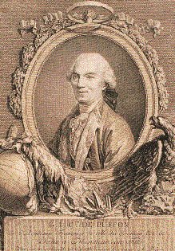 <br>
        <font size="-1">Georges Louis Leclerc, comte de Buffon Portrait
          gravé en 1777 par Vincenzio Vangelisti (1744 ou 1738 - 1798),</font>
        <br>
        <font size="-1">d'après un dessin par André Pujos (1738 -1788)</font>
        <br>
        <font size="-1">© Bibliothèque centrale du Muséum national
          d'histoire naturelle, Paris, 1998</font></center>
      <dir>
        <blockquote><font face="Arial,Helvetica"><font color="#000099">On

              a donné le nom de vitriol à trois sels métalliques, formés
              par l'union de l'acide vitriolique avec le fer, le cuivre
              et le zinc ; mais on peut, sans abuser du nom, l'étendre à
              toutes les substances dans lesquelles la présence de
              l'acide vitriolique se manifeste d'une manière sensible.
              Donc, le vitriol du fer est <u>vert</u>, celui du cuivre
              est <u>bleu</u> et celui du <u>zinc</u> est blanc ; tous
              trois se trouvent dans le sein de la terre, mais en petite
              quantité et il paraît que ce sont les seules matières
              métalliques que la Nature ait combinées avec cet acide ;
              et quand même on serait parvenu par notre art à faire
              d'autres vitriols métalliques, nous ne devons pas les
              mettre au nombre des substances naturelles, puisqu'on n'a
              jamais trouvé de vitriols d'or, d'argent, de plomb,
              d'étain, ni d'antimoine, de bismuth, de cobalt, et ce dans
              aucun lieu, soit à la surface, soit à l'intérieur de la
              terre.</font></font> <br>
          <font color="#000099"><span style="font-family: Wingdings;">-
            </span><font face="Arial,Helvetica">Le <u>vitriol vert</u>
              ou le vitriol ferrugineux, appelé vulgairement couperose,
              se présente dans toutes les mines de fer, où l'eau chargée
              d'acide vitriolique a pu pénétrer ; c'est sous les <u>glaises</u>
              ou les plâtres que gisent ordinairement ces mines de
              vitriol, parce que les terres argileuses et plâtreuses
              sont imprégnées de cet acide qui, se mêlant avec l'eau des
              sources souterraines, ou même avec l'eau des pluies,
              descend par stillation sur la matière ferrugineuse, et se
              combinant avec elle forme ce vitriol vert qui se trouve,
              tantôt en masses assez informes, auxquelles on donne le
              nom de pierres <u>atramentaires</u>, et tantôt en
              stalactites plus ou moins opaques, et quelquefois
              cristallisées</font></font>
          <p><font face="Arial,Helvetica"><font color="#000099">[</font><font
                color="#660000"><font size="-1">on retire encore ce sel
                  de certaines pierres appelées mâchefers ou <b>Pierres
                    d'arquebusade</b> qu'on trouve dans les lieux où les
                  potiers vont chercher l'argile ; quelquefois même
                  cette argile ou terre grasse contient un peu de
                  vitriol : ces sortes de terre contiennent presque
                  toujours du vitriol martial comme on le verra infra.
                  C'est là ce qui les rend propres à la distillation des
                  esprits acide de nitre et de sel marin ; quant aux
                  pierres d'arquebusade, elles sont ainsi nommées parce
                  qu'étant du nombre des pyrites qui font feu au choc de
                  l'acier, on les employait autrefois dans les
                  arquebuses à rouet ; voyez la <a href="#" title="lien mort dans l'archive">Clef


                    VIII</a> des <b><i><a href="../original/emblemes.html">Douze
                        Clefs de Philosophie</a></i></b> qui montrent
                  deux tireurs s'exerçant à l'arquebuse].</font></font></font>
          </p>
          <p><font face="Arial,Helvetica"><font color="#660000"><font
                  size="-1">L</font></font><font color="#000099">a forme
                de ces cristaux vitrioliques est rhomboïdale, et assez
                semblable à celle des cristaux du spath calcaire. C'est
                donc dans les mines de fer, de seconde et de troisième
                formation, abreuvées par les eaux qui découlent des
                matières argileuses et plâtreuses, qu'on rencontre ce
                vitriol natif, dont la formation suppose non seulement
                la décomposition de la matière ferrugineuse mais encore
                le mélange de l'acide en assez grande quantité. Toute
                matière ferrugineuse imprégnée de cet acide donnera du
                vitriol ; aussi le tire-t-on des pyrites martiales en
                les décomposant par la calcination ou par l'humidité.
                Cette pyrite qui n'a aucune saveur dans son état
                naturel, se décompose lorsqu'elle est exposée longtemps
                à l'humidité de l'air, en une poudre saline, acerbe et
                stiptyque ; en lessivant cette poudre pyriteuse, on en
                retire du vitriol par l'évaporation et le
                refroidissement. Lorsqu'on veut en obtenir en grande
                quantité, on entasse ces pyrites les unes sur les
                autres, à deux ou trois pieds d'épaisseur ; on les
                laisse exposées aux impressions de l'air pendant trois
                ou quatre ans, et jusqu'à ce qu'elles se soient réduites
                en poudre, on les remue deux fois par an pour accélérer
                cette décomposition : on recueille l'eau de la pluie qui
                les lessive pendant ce temps, et on la conduit dans des
                chaudières où l'on place des ferrailles qui s'y
                dissolvent en partie par l'excès de l'acide ; ensuite on
                fait évaporer cette eau, et le vitriol se présente en
                cristaux. On peut aussi tirer le vitriol des pyrites par
                le moyen du feu qui dégage sous la forme de soufre, une
                partie de l'acide et du feu fixe qu'elles contiennent ;
                on lessive ensuite la matière, qui reste après cette
                extraction du soufre, et pour charger d'acide l'eau de
                ce résidu. on la fait passer successivement sur d'autres
                résidus également désoufrés, après quoi on l'évapore
                dans des chaudières de plomb : la matière pyriteuse
                n'est pas épuisée de vitriol par cette première
                opération ; on la reprend pour l'étendre à l'air, et au
                bout de dix-huit mois ou deux ans, elle fournit par une
                semblable lessive, de nouveau vitriol.</font></font> <font
              face="Arial,Helvetica"><font color="#000099">Il y a dans
                quelques endroits des terres qui sont assez mêlées de
                pyrites décomposées pour donner du vitriol par une seule
                lessive ; au reste on ne se sert que de chaudières de
                plomb pour la fabrication du vitriol, parce que l'acide
                rongerait le fer et le cuivre. Pour reconnaître si la
                lessive vitriolique est assez chargée, il faut se servir
                d'un pèse-liqueur ; dès que cet instrument indiquera que
                la lessive contient 28 onces de vitriol, on pourra la
                faire évaporer pour obtenir ce sel en cristaux ; il faut
                environ 15 jours pour opérer cette cristallisation, et
                l'on a observé qu'elle réussit beaucoup mieux pendant
                l'hiver qu'en été. Il se produit aussi du vitriol par
                les eaux sulfureuses qui découlent des volcans et des
                solfatares.</font></font> <br>
            <font color="#000099"><span style="font-family: Wingdings;">-
              </span><font face="Arial,Helvetica">Le <u>vitriol bleu</u>
                dont la base est le cuivre; se forme comme le vitriol de
                fer ; on ne le trouve que dans les mines secondaires où
                le cuivre est déjà décompofé, et dont les terres sont
                abreuvées d'une eau chargée d'acide vitriolique. Ce
                vitriol cuivreux se présente aussi en masses ou en
                stalactites, mais rarement cristallisées, et les
                cristaux sont plus souvent dodécaèdres qu'hexaèdres ou
                rhomboïdaux. On peut tirer ce vitriol des pyrites
                cuivreuses</font></font> <font face="Arial,Helvetica"><font
                color="#000099">et des autres minerais de ce métal qui
                sont presque dans l'état pyriteux. On peutt aussi
                employer des débris ou rognures de cuivre avec l'alun
                pour faire ce vitriol. On commence par jeter sur ces
                morceaux de cuivre du soufre pulvérisé ; on les met
                ensemble dans un four, et on les plonge ensuite dans une
                eau où l'on a fait dissoudre de l'alun. L'acide de
                l'alun ronge et détruit les morceaux de cuivre ; on
                transvase cette eau dans des baquets de plomb
                lorsqu'elle est suffisamment chargée, et en la faisant
                évaporer on obtient le vitriol qui se forme en beaux
                cristaux bleus. C'est de cette apparence cristalline ou
                vitreuse que le nom même de vitriol est dérivé (</font><font
                color="#660000"><font size="-1">Pline a parfaitement
                  connu cette formation des cristaux du vitriol et même,
                  il décrit le procédé mécanique dans <b><i>Hist. Nat</i></b>.,

                  XXXIV, 12</font></font><font color="#000099">].</font></font>
            <br>
            <font color="#000099"><span style="font-family: Wingdings;">-
              </span><font face="Arial,Helvetica">Le <span
                  style="text-decoration: underline;">vitriol de zinc</span>
                est blanc , et se trouve aussi en masses et en
                stalactites dans les minières de pierre calaminaire ou
                dans les blendes ; il ne se présente que très rarement
                en cristaux à facettes , aa cristallisation la plus
                ordinaire dans le sein de la terre est en filets soyeux
                et blancs. La base du vitriol blanc est le zinc. On l'a
                souvent nommé vitriol de Gostard, parce qu'on le tire
                des mines de plomb et d'argent de Rammelsberg prés de
                Gostard ; on leur fait subir un premier grillage, lequel
                on retire du soufre, et pour obtenir le vitriol blanc,
                on fait les mêmes opérations que pour le vitriol vert.
                Ce vitriol blanc se fabrique toujours en été, il faut
                que la lessive soit chargée de quinze ou dix-sept onces
                de vitriol avant de la mettre dans des caves où elle
                doit déposer son limon jaune ; car s'il en restait dans
                la lessive lorsqu'on la verse dans la chaudière pour la
                faire bouillir, le vitriol, au lieu d'être blanc, se
                cristalliserait rougeâtre. L'ébullition de la lessive du
                vitriol blanc doit être continuée plus longtemps que
                celle du vitriol vert. Lorsque la lessive a suffisamment
                évaporée, on la transvase dans la cuve à rafralchir, et
                de-là dans des cuviers de cristallisation où l'on
                arrange des lattes et des roseaux ; elle y reste quinze
                jours, après quoi on retire le vitriol blanc pour le
                mettre dans la caisse à égoutter, puis on le calcine et
                on l'enferme dans des barils [</font></font><font
              face="Arial,Helvetica"><i><font color="#660000"><font
                    size="-1"><b>Traité de la fonte des mines </b>de
                    Schlutter,</font></font></i><font color="#660000"><font
                  size="-1"> t.II, p.639</font></font><font
                color="#000099">]. Suivant la remarque de M. Valmont de
                Bomare [</font><font color="#660000"><font size="-1"><b><i>Minéralogie</i></b>
                  t. 1, p. 307</font></font><font color="#000099">],
                observe que le vitriol de zinc, indépendamment de ce
                demi-métal, paraît contenir aussi du fer, du cuivre, et
                même du plomb ; cela peut être en le considérant dans un
                état d'impureté et de mélange.</font></font> <font
              face="Arial,Helvetica"><font color="#000099">On peut
                ajouter à ces trois vitriols métalliques, qui tous trois
                se trouvent dans l'intérieur de la terre, une substance
                grasse à laquelle on a donné le nom de beurre fossile,
                et qui suinte des schistes alumineux : c'est une vraie
                stalactite vitriolique ferrugineuse, qui contient plus
                d'acide qu'aucun des autres vitriols métalliques, et par
                cette raifon M. le baron de Dietrich a cru pouvoir
                avancer que ce beurre fossile n'est que de l<u>'acide
                  vitriolique&nbsp; concret</u>.</font></font> </p>
          <p><font face="Arial,Helvetica"><font color="#000099">[</font><font
                color="#660000"><font size="-1">Ce minéral est décrit
                  par M. Pallas, sous le nom de <i>Kamenoja maflo</i> ;
                  en Allemand, <i>stein butters</i>, c'est-à-dire, <b>beurre

                    fossile</b> : « Ce n'est, dit M. de Dietrich, autre
                  chose qu'un acide vitriolique chargé de quelques
                  parties ferrugineuses et de beaucoup de matières&nbsp;
                  terreuses et grasses. On en tire d'un <u>schiste
                    alumineux</u> fort dur et brun à Willischtan , sur
                  la rive droite de l'Aï ; il suinte des fentes des
                  rochers et des grottes formées dans ces schistes, sous
                  la forme d'une matière grasse d'un blanc-jaunâtre, qui
                  se durcit un peu en la faisant sécher. Lorsqu'on
                  examine avec attention les endroits les plus propres
                  de ces grottes, on le découvre fous la forme
                  d'aiguilles fines ; c'est selon toute apparence de l'<u>acide


                    vitriolique concret natif</u>, comme celui qui a été
                  découvert par le docteur Balthasar en Toscane : dès
                  que le temps est humide, cette matière suinte avec
                  bien plus d'abondance hors des rochers. Il y a un
                  schiste argileux vitriolique sur la rivière de Tomsk
                  près de la ville de ce nom, dont on extrait du vitriol
                  impur jaune, qu'on vend mal à propos à Tomsk pour du
                  beurre fossile. C'est à Krasnojark qu'on trouve le
                  véritable beurre fossile en grande abondance et à bon
                  marché ; on l'y apporte des bords du fleuve Jenifeï et
                  de ceux du fleuve Mana, où on le trouve dans les <u>crevasses</u>
                  et <u>cavités</u> d'un schiste alumineux noir, à la
                  surface duquel il est attaché sous la forme d'une
                  croûte épaisse et raboteuse ; il y en a aussi en
                  aiguilles. Il y est en général très blanc, léger; et
                  lorsqu'on le brûle à la flamme qui le liquéfie
                  facilement, et qu'on le fait bouillir, il s'en élève
                  des vapeurs vitrioliques rouges, et le résidu est une
                  terre légère très blanche et savonneuse. On trouve la
                  même matière dans un schiste alumineux brun, sur le
                  rivage de Chilok près du village de Parkina ; le
                  peuple se sert de cette matière en guise de <u>remède</u>
                  pour arrêter les diarrhées et dysenteries, les pertes
                  des femmes en couches, les fleurs blanches et autres
                  écoulements impurs : on le donne pour vomitif aux
                  enfants, afin de les débarrasser des glaires qu'ils
                  ont sur la poitrine ; enfin on s'en sert encore en cas
                  de nécessité, au lieu de vitriol pour teindre le cuir
                  en noir; et l'on prétend que les Forgerons en font
                  usage pour faire de l'acier ; ce dernier fait aurait
                  mérité d'être constaté.(<b><i>Voyage de M. Pallas</i></b>,
                  tome Il, pages 88, 626, 697; tome III)</font></font><font
                color="#000099">]</font></font> </p>
          <p><font face="Arial,Helvetica"><font color="#000099">Mais si
                l'on fait attention que cet acide ne prend une forme
                concrète qu'après, une très forte concentration et par
                la continuité d'un feu violent, et qu'au contraire ce
                beurre vitriolique se forme, comme les autres
                stalactites, par le biais de l'eau, on ne doit pas
                hésiter à le rapporter aux vitriols que la Nature
                produit par la voie humide.</font></font> <br>
            <font color="#000099"><span style="font-family: Wingdings;">-
              </span><font face="Arial,Helvetica">Après ces vitriols à
                base métallique, on doit placer les vitriols à base
                terreuse qui, pris généralement, peuvent se réduire à
                deux; le premier est l'<u>alun</u> dont la terre est
                argileuse ou vitreuse, et le second est le <u>gypse</u>
                que les chimistes ont appelé <u>sélénite</u>, et dont
                la base est une terre calcaire. Toutes les argiles sont
                imprégnées d'acide vitriolique, et les terres qu'on
                appelle alumineuses ne diffèrent des argiles communes
                qu'en ce qu'elles contiennent une plus grande quantité
                de cet acide ; l'alun y est toujours en particules
                éparses, et c'est très rarement qu'il se présente en
                filets cristallisés. On le retire aisément de toutes les
                terres et pierres argileuses en les faifant calciner et
                enfuite lessiver à l'eau.</font></font> <br>
            <font face="Arial,Helvetica"><font color="#000099">- Le <u>gypse</u>
                qu'on peut regarder comme un vitriol calcaire , se
                présente en stalactites et en grands morceaux
                cristallisés dans toutes les carrières de plâtre. Mais
                lorsque la quantité de terre contenue dans l'argile et
                dans le plâtre est très grande en comparaison de celle
                de l'acide, il perd en quelque sorte sa propriété la
                plus distinctive, il n'est plus corrosif, il</font></font>
            <font face="Arial,Helvetica"><font color="#000099">n'est pas
                même sapide, car l'argile et le plâtre n'affectent pas
                plus nos organes que toute autre matière ; et sous ce
                point de vue, on doit rejeter du nombre des substances
                ces deux matières, quoiqu'elles contiennent de l'acide.
                [</font><font color="#660000"><font size="-1">sur le
                  gypse, cf. <a href="../original/reincrud.html">réincrudation</a></font></font><font
                color="#000099">]</font></font> </p>
          <p><font face="Arial,Helvetica"><font color="#000099">Nous
                devons par la même raison, ne pas compter au nombre des
                vitriols ou substances vraiment salines, toutes les
                matières où l'acide en petite quantité se trouve non
                seulement mêlé avec l'une ou l'autre terre argileuse ou
                calcaire, mais avec toutes deux, comme dans les marnes
                et dans quelques autres terres et pierres mélangées de
                parties vitreuses, calcaires, limoneuses et métalliques.
                Ces sels à double base forment un second ordre de
                matières salines, auxquelles on peut donner le nom d'<u>hépar</u>
                ; mais toute matière simple ; mixte ou composée de
                plusieurs substances différentes, dans laquelle l'acide
                est engagé ou saturé, de manière à n'être pas senti ni
                reconnu par la saveur, ne doit ni ne peut être comptée
                parmi. les sels sans abuser du nom ; car alors presque
                toutes les matières du Globe seraient des sels, puisque
                presque toutes contiennent une certaine quantité d'acide
                aérien. Nous devons, ici fixer nos idées par notre
                sensation ; toutes les matières insipides ne sont pas
                des sels, toutes celles au contraire dont la saveur
                offense, irrite ou flatte le sens du goût, seront des
                sels de quelque nature que soit leur base, et en quelque
                nombre ou quantité qu'elles puissent être mélangées ;
                cette propriété est générale, essentielle et même la
                seule qui puisse caractériser les substances salines et
                les séparer de toutes les autres matières.</font></font>
          </p>
          <p><font face="Arial,Helvetica"><font color="#000099">Suivons
                donc l'ordre des matières dans lesquelles la saveur
                saline est sensible ; et ne considérant d'abord que les
                composés de l'acide vitriolique, nous aurons dans les
                minéraux, les vitriols de fer, de cuivre et de zinc
                auxquels on doit ajouter l'alun, parce que tous sont non
                seulement sapides, mais méme corrosifs. L'acide
                vitriolique qui, par lui-même est fixe, devient volatil
                en s'unissant à, la matière du feu libre sur laquelle il
                a une action très marquée, puisqu'il la saisit pour
                former le soufre, et qu'il devient volatil avec lui dans
                sa combustion ; cet acide sulfureux volatil ne diffère
                de l'acide vitriolique fixe que par son union avec la
                vapeur sulfureuse dont il répand l'odeur ; et le mélange
                de cette vapeur à l'acide vitriolique, au lieu
                d'augmenter sa force, la diminue beaucoup ; car cet
                acide devenu volatil et sulfureux a</font></font> <font
              face="Arial,Helvetica"><font color="#000099">beaucoup
                moins de puissance pour dissoudre ; son affinité avec
                les autres substances est plus faible ; tous les autres
                acides peuvent le décomposer, et de lui-même. il se
                décompose par la seule évaporation. La fixité n'est donc
                point une qualité essentielle à l'acide vitriolique ; il
                peut se convertir en acide aérien, puisqu'il devient
                volatil et se laisse emporter en vapeurs sulfureuses.</font></font>
            <br>
            <font face="Arial,Helvetica"><font color="#000099">- L'acide
                sulfureux fait feulement plus d'effet que l'acide
                vitriolique sur les couleurs tirées des végétaux et des
                animaux ; il les altère, et même les fait disparaître
                avec le temps, au lieu que l'acide vitriolique fait
                reparaître quelques-unes de ces mêmes couleurs, et en
                particulier celle des roses ; l'acide sulfureux les
                détruit toutes, et c'est d'après cet effet qu'on
                l'emploie pour donner aux étoffes la plus grande
                blancheur et le plus beau lustre.</font></font> <font
              face="Arial,Helvetica"><font color="#000099">L'acide
                sulfureux me paraît être l'une des nuances que !a Nature
                a mises entre l'acide vitriolique et l'acide nitreux;
                car toutes les propriétés de cet acide sulfureux le
                rapprochent évidemment de l'acide nitreux, et tous deux
                ne sont au fond que le même acide aérien qui, ayant
                passé par l'état d'acide vitriolique, est devenu volatil
                dans l'acide sulfureux, et a subi encore plus
                d'altération avant d'être devenu acide nitreux par la
                putréfaction des corps organisés ; ce qui fait la
                principale différence de l'acide sulfureux et de l'acide
                nitreux, c'est que le premier est beaucoup plus chargé
                d'eau que le fecond , et que par conséquent, il n'est</font></font>
            <font face="Arial,Helvetica"><font color="#000099">pas aussi
                fortement uni avec la matière du feu.</font></font> <br>
            <font face="Arial,Helvetica"><font color="#000099">- Après
                les vitriols métalliques, nous devons considérer les
                sels que l'acide vitriolique a formés avec les matières
                terreuses, et particulièrement avec la terre argileuse
                qui sert de base à l'alun, nous verrons que cette terre
                est la même que celle du quartz, et nous en tirerons une
                nouvelle démonstration de la conversion réelle du verre
                primitif en argile.</font></font> <br>
            &nbsp;</p>
        </blockquote>
      </dir>
      <center><font face="Wingdings"><font color="#cc0000"><font
              size="+2">¯</font></font></font></center>
      <dir>
        <blockquote style="width: 920px;">&nbsp; <br>
          <font face="Arial,Helvetica"><font color="#000099">La
              décomposition spontanée des <u>pyrites</u> peut fournir
              tous ces composés, suivant leur degré d'impureté. Le
              cuivre contenu dans les eaux mères résultant de cette
              décomposition en est précipité aujourd'hui sous forme
              métallique, au moyen des débris de fer de toute origine,
              lesquels fournissent des dépôts de cuivre, reproduisant
              souvent la forme et l'apparence des morceaux de fer. De là
              cette opinion, très répandue parmi les alchimistes, que le
              vitriol peut transmuter le fer en cuivre. Elle reposait
              sur un phénomène réel, mais mal compris.</font></font> <font
            face="Arial,Helvetica"><font color="#000099">On en
              rapprochera le terme de <u>misy</u> [</font><font
              color="#660000"><font size="-1">Pline, <i><b>Hist. Nat.,</b>
                  XXXIV, 31</i> et Diosc., <i><b>Mat. Méd</b>., t. V,
                  116</i></font></font><font color="#000099">]. D'après
              les anciens, le misy de Chypre est doré, dur, et scintille
              quand on l'écrase.</font></font> <font
            face="Arial,Helvetica"><font color="#000099">C'était de même
              une concrétion naturelle ou minerai, à cassure dorée, qui
              a été décrite sous le nom de misy dans les mines de Gozlar
              au XVII<sup>e</sup> siècle. Le <u>vitriol</u>,
              ajoutait-on, se change aisément en misy. A la fin du XVIII<sup>e</sup>
              siècle, on appelle misy une matière vitriolique jaune,
              luisante, en pierre, ou en poudra non cristallisée [</font><font
              color="#660000"><font size="-1">Macquer,<i><b>Dict. de
                    Chimie</b>, t. IV, p. 85</i>, 1778</font></font><font
              color="#000099">] et</font></font> <font
            face="Arial,Helvetica"><font color="#000099">assimilée à la
              couperose jaune. En somme, c'est toujours là un <u>sulfate

                de fer</u> basique, renfermant du sulfate de cuivre et
              parfois du sulfate d'alumine, résultant de la
              décomposition spontanée des pyrites.</font></font> <br>
          <font face="Arial,Helvetica"><font color="#000099">Le <u>sory</u>
              était une matière congénère du misy, plus grasse, à odeur
              vireuse, de couleur rouge, tournant au noir. Les Arabes
              désignaient sous ce même nom de sory le <u>vitriol rouge</u>
              [</font><font color="#660000"><font size="-1">voisin du
                colcothar</font></font><font color="#000099">]. Enfin
              les Grecs modernes ont assimilé parfois le sory à la
              céruse brûlée [</font><font color="#660000"><font
                size="-1">minium</font></font><font color="#000099">].</font></font>
          <br>
          &nbsp;
          <p><font face="Arial,Helvetica"><font color="#000099">Le
                sulfate ou vitriol de fer, vitriol martial ou couperose
                verte n'est pas une combinaison constante et identique.
                Il varie par les mélanges qui peuvent s'y trouver et par
                l'état où se trouve l'oxyde de fer. On trouve du sulfate
                de fer natif, soit dans les mines de charbon, soit dans
                les cavités des mines pyriteuses, soit dans les schistes
                ; mais la plus grande partie de celui qui est employé,
                provient des </font><font color="#660000">pyrites
                martiales</font><font color="#000099"> ou sulfures
                naturels de fer. Ces sulfures sont composés de fer, de
                soufre, d'alumine, de terre silicée, et quelquefois de
                terre calcaire, en différentes proportions. On opère la
                formation du sulfate de fer dans ces pierres en les
                exposant longtemps à l'action de l'air et de l'humidité,
                ou en les torréfiant à l'air libre, et en les laissant
                ensuite exposées à son action ; il faut même quelquefois
                réitérer cette opération. On retire le sulfate qui s'est
                formé par lixiviation et évaporation. Le fer des
                sulfures naturels ou pyrites y est oxydé, car lorsqu'on
                les expose à l'action du feu dans une cornue, il s'en
                dégage de l'acide sulfureux ; ce qui n'arrive pas avec
                le sulfure que l'on a formé avec le métal : il se
                désoxyde dans cette opération, et le résidu est un
                véritable sulfure. On prépare aussi du sulfate de fer
                avec les eaux minérales qui tiennent en dissolution du
                cuivre qu'on précipite par le fer ; on fait cristalliser
                ensuite cette dissolution qui retient un peu de cuivre.
                Le cuivre, qui se trouve dans plusieurs espèces de
                sulfate de fer, n'est pas nuisible aux teintures noires
                pour lesquelles on emploie principalement ce sel
                métallique.</font></font> <font face="Arial,Helvetica"><font
                color="#000099">Le sulfate de fer a des propriétés
                différentes selon son état d'oxydation ; il est presque
                sans couleur, lorsque le métal y est très peu oxydé ou
                dans l'état d'</font><font color="#006600">oxyde noir</font><font
                color="#000099">. Il en prend une </font><font
                color="#006600">rouge</font><font color="#000099">
                lorsque le fer est très oxydé. Si on ne laisse pas les
                cristaux de sulfate de fer exposés à l'air, ils
                conservent une </font><font color="#006600">couleur
                verte</font><font color="#000099">. Si l'on met du fer
                dans une dissolution du sulfate très oxydé [</font><font
                color="#660000"><font size="-1">rouge</font></font><font
                color="#000099">], il se dépose un précipité jaune et la
                dissolution reprend l'état de sulfate vert. Le sulfate
                qui contient l'oxyde noir est dans un état beaucoup plus
                grand de saturation.</font></font> <font
              face="Arial,Helvetica"><font color="#000099">Quand on
                chauffe à 100°C le sulfate de fer, le sel devient d'un
                blanc grisâtre et reprend sa couleur verte en présence
                de l'eau. On obtient le sulfate de fer sous la forme
                d'une poudre blanche cristalline quand on verse dans sa
                dissolution de l'huile de vitriol. On reconnait le
                sulfate de protoxyde de fer qui est exempt de
                sesquioxyde de fer au fait qu'il présente la couleur
                bleu verdâtre du béryl. Il existe dans le commerce trois
                variétés de sulfate de fer. La première&nbsp; d'un bleu
                un peu verdâtre se produit lorsqu'on fait cristalliser
                ce sel dans des liqueurs acides ; la seconde, d'un vert
                pâle, se forme dans des liqueurs neutres, et la
                dernière, d'un vert émeraude, prend naissance dans des
                liqueurs qui contiennent beaucoup de sulfate de
                sesquioxyde de fer.</font></font> <br>
            <font color="#000099"><span style="font-family: Wingdings;">-
              </span><font face="Arial,Helvetica">le sulfate de
                protoxyde de fer est ordinairement préparé en exposant à
                l'air des pyrites efflorescentes, ou des pyrites
                préalablement grillées, qui absorbent l'oxygène et se
                transforment en sulfate de protoxyde de fer. Comme dans
                cette oxydation, il se forme une quantité d'acide
                sulfurique plus que suffisante pour saturer le protoxyde
                de fer, l'excès d'acide se combine avec l'alumine
                contenue dans l'argile mélangée à la pyrite, et forme du
                sulfate d'alumine. Lorsque la sulfatisation est
                complète, on reprend la masse par l'eau, et l'on évapore
                la liqueur, qui laisse déposer des cristaux de sulfate
                de protoxyde de fer. Le sulfate d'alumine reste dans les
                eaux mères. Le sulfate de fer est employé pour produire
                de l'huile de vitriol et le colcothar. Il entre dans la
                préparation des fonds noirs en teinture et dans celle
                d'un grand nombre de mordants et de couleurs
                ferrugineuses. Sa formule chimique fait comprendre
                pourquoi E. Canseliet, dans son <b><i><font size="-1">Alchimie

                      expliquée sur ses Textes classiques</font></i></b>,
                ait mentionné que le sel des Sages était « isotope » du
                colcothar.</font></font> <br>
            <font color="#000099"><span style="font-family: Wingdings;">-
              </span><font face="Arial,Helvetica">le sulfate de fer
                formé par l'oxyde magnétique prend naissance quand on
                abandonne à l'air une dissolution de sulfate de
                protoxyde de fer ou quand on dissout dans l'huile de
                vitriol de l'oxyde magnétique hydraté. On a décrit un
                sulfate double qui est obtenu en ajoutant 1 partie
                d'huile de vitriol à une solution concentrée de 5 à 6
                parties d'alun avec un mélange bouillant de 16 parties
                de sulfate de protoxyde de fer et d'acide sulfurique
                concentré. En évaporant au bain-marie, à une température
                qui ne doit pas dépasser 70°C, il se sépare une poudre
                cristalline d'un brun foncé, qui, après que l'eau mère
                en a été bien égouttée, se dissout, à une douce chaleur,
                dans l'eau fortement acidulée par l'acide sulfurique. La
                liqueur évaporée laisse déposer des cristaux noirs
                constituant une combinaison de l'octaèdre et de
                l'hexaèdre. Les faces cristallines ont presque l'éclat
                du diamant. On peut le conserver dans l'air bien sec. La
                formation de ce sel n'a lieu qu'à la condition qu'une
                petite quantité de sesquioxyde de fer soit remplacée par
                l'alumine. C'est pourquoi on y ajoute de l'alun.</font></font>
          </p>
          <p><font face="Arial,Helvetica"><font color="#000099">Ce
                chapitre va nous donner l'occasion d'approfondir la
                question du <b>Caput</b>, c'est-à-dire des séparations
                philosophiques.</font></font> </p>
          <p><font color="#000099"><span style="font-family: Wingdings;">-
              </span><font face="Arial,Helvetica">Veut-on séparer du
                sesquioxyde de fer, de l'alumine à laquelle il est mêlé
                ? On peut opérer au moyen de l'hydrate de chaux. Pour
                cela, on évapore la dissolution jusqu'à un petit volume,
                on la mélange avec une dissolution d'hydrate de potasse
                pure et on la fait bouillir légèrement. L'alumine et le
                sesquioxyde de fer sont d'abord précipités [</font></font><font
              face="Arial,Helvetica"><font color="#660000"><font
                  size="-1">cado, cassito</font></font><font
                color="#000099">] mais si la quantité de potasse est
                suffisante, l'alumine se redissout. A mesure que
                l'alumine se dissout, la portion insoluble qui finit par
                être composée uniquement de sesquioxyde de fer, prend
                une couleur brune. On filtre, on lave le sesquoxyde de
                fer qui reste sur le filtre et dans la liqueur filtrée
                et séparée du sesquioxyde de fer, on précipite l'alumine
                en sursaturant cette liqueur par de l'esprit de sel. Si
                la quantité de sesquioxyde de fer est importante, on
                peut être convaincu que le sel ferrique contient encore
                de l'alumine. Il faut alors procéder à des réitérations
                de la même technique, à trois ou quatre reprises.</font></font>
          </p>
          <p><font face="Arial,Helvetica"><font color="#000099">Parlons
                à présent du <b><font size="-1">Caput</font></b>. Pour
                cela, il est nécessaire d'évoquer la distillation du
                vitriol ; nous emprunterons le passage suivant du <b><i><font
                      size="-1">Cours de Chymie</font></i></b> de
                Nicolas Lémery :</font></font> <br>
            <br>
          </p>
          <center>
            <p><br>
              <font size="-1">Nicolas Lemery</font></p>
          </center>
          <blockquote><b><font face="Arial,Helvetica"><font
                  color="#000099"><font size="-1">distillation du
                    vitriol</font></font></font></b> <br>
            <font face="Arial,Helvetica"><font color="#990033"><font
                  size="-1">Cet esprit est un sel acide du vitriol
                  résous en liqueur par un grand feu. Remplissez de
                  vitriol d'Angleterre calciné en blancheur les deux
                  tiers d'une grande cornue de grès ou de verre lutée ;
                  placez-la dans un fourneau de reverbère clos , et y
                  ayant adapté un grand ballon ou récipient, faites un
                  très fort feu dans le fourneau pour échauffer la
                  cornue, et pour faire sortir goutte à goutte ce qui
                  pouvait être resté d'humidité aqueuse dans le vitriol
                  ; et lorsqu'il ne distillera plus rien, renversez ce
                  que le récipient contiendra dans une bouteille ; c'est
                  ce qu'on appelle phlegme de vitriol. [...] Réadaptez
                  le ballon au col de la cornue, et ayant luté
                  exactement les jointures , augmentez le feu peu à peu
                  , et quand vous verrez sortir des nuages dans le
                  récipient , continuez-le toujours en même état ,
                  jusqu'à ce que le récipient refroidisse ; poussez
                  alors le feu très violemment avec du bois, en sorte
                  que la flamme sorte par le soupirail du dôme, grosse
                  comme le bras. Le ballon se remplira de nuages ;
                  continuez le feu de cette force pendant trois jours ,
                  et autant de nuits , puis le faites cesser ; délutez
                  les jointures lorsque vos vaisseaux seront refroidis ,
                  et renversez l'esprit dans une cucurbite de verre,
                  laquelle ayant placée sur le sable, adaptez-y
                  promptement un chapiteau avec son récipient ; lutez
                  exactement les jointures avec de la vessie mouillée ,
                  et faites distiller à un feu très lent environ quatre
                  onces de l'humidité, ce sera l'esprit sulfureux du
                  vitriol ; il faut le garder dans une phiole bien
                  bouchée.</font></font></font><font
              face="Arial,Helvetica"><font color="#990033"><font
                  size="-1"> Pour faire l'esprit de vitriol, il faut
                  prendre un vitriol vert d'Angleterre , lequel étant
                  frotté sur le fer, ne le fait point changer de
                  couleur, ce qui montre qu'il ne participe point du
                  cuivre , comme celui d'Allemagne qui tire sur le bleu
                  , et qui est plus âcre. Il faut le calciner , comme
                  nous avons dit, afin qu'étant privé de la plus grande
                  partie de son phlegme, la distillation se fasse plus
                  vite. On laisse un tiers de la cornue vide , afin que
                  les esprits trouvent de l'espace pour se raréfier
                  lorsqu'ils veulent sortir. Les chymistes ont nommé
                  rosée de vitriol, un phlegme qu'on retire par la
                  distillation au bain-marie de ce sel minéral. Il
                  distille encore beaucoup de phlegme dans le récipient,
                  et l'on connaît que tout est sorti quand il ne tombe
                  plus de gouttes. Ceux qui ne se soucient pas de
                  l'esprit sulfureux , le laissent sortir et mêler avec
                  le phlegme avant que de luter les jointures , mais il
                  faut en ce temps-là gouverner le feu bien prudemment ;
                  car ces esprits sortent avec violence , et cassent la
                  cornue s'ils sont trop poussés. Quand ils sont sortis,
                  il faut augmenter le feu jusqu'à un dernier degré, car
                  l'esprit acide ne se débarasse point de sa terre s'il
                  n'est extraordinairement excité par la chaleur. Si
                  vous avez mis dans la cornuë huit livres de vitriol
                  desséché en blancheur à seize onces la livre, vous
                  retirerez douze onces de phlegme , quatre onces
                  d'esprit sulfureux, et vingt-quatre onces d'esprit et
                  d'huile de vitriol. Il vous restera dans la cornue
                  quatre-vingt-huit onces de colcothar, dont on peut
                  retirer soixante-douze onces de sel</font></font></font>
          </blockquote>
          <font face="Arial,Helvetica"><font color="#000099">[<font
                size="-1">note de <a href="../original/plan-chevreul.html">Baron</a></font>
              : <font size="-1">On ne doit pas conclure de ce calcul
                que le vitriol ne contient d'acide que la quantité que
                l'on en a retiré par la distillation ; car le colcothar,
                ou le résidu de cette distillation, quelque longternps,
                et avec quelque force que l'on ait poussé le feu,
                retient toujours une bonne quantité d'acide, et c'est à
                raison de cet acide que l'on s'en sert pour faire la
                distillation de l'esprit de nitre et de l'efprit de sel
                commun, et qu'après la distillation de l'un comme de
                l'autre de ses esprits, on trouve dans la cornue des
                masses salines, qui fournissent par la solution,
                filtration et évaporation, l'une, du <b><a
                    href="../original/sulf-potasse.html">tartre vitriolé</a></b> et
                l'autre un <b><a href="../original/salpetre.html#Alkaest">sel de
                    Glauber</a></b></font>]</font></font>
          <p><font face="Arial,Helvetica"><font color="#000099">[...].
                Si en la place du vitriol d'Angleterre on emploie celui
                d'Allemagne , on retirera un peu davantage d'esprits que
                nous n'avons marqué, mais ils auront quelque odeur
                d'eau-forte , et la matiere qui restera dans la cornue
                sera d'une couleur brune , tirant sur le noir [</font><font
                color="#660000"><font size="-1">il s'agira alors du <b><a
                      href="../original/sulf-potasse.html#foie">foie de soufre</a></b>
                  dont nous parlons dans la section sur la <b><a
                      href="../original/reincrud.html#Eau">réincrudation</a></b></font></font><font
                color="#000099">]. Cette couleur vient des fuliginosités
                sulfureuses qui s'élèvent plus de ce vitriol-là que de
                l'autre , à cause qu'il participe du cuivre; car cette
                suie ne trouvant point d'issue pour s'exalter , elle
                retombe sur la matière , et elle la noircit. Le fourneau
                dans lequel on fait cette opération doit être bien épais
                , afin que l'ardeur du feu ne se dissipant point par les
                pores, elle échauffe davantage la cornue ; ces esprits
                se raréfient en vapeurs blanches dans le ballon qui doit
                être assez grand pour donner de l'espace libre à leur
                circulation avant qu'ils le résolvent au fond en
                liqueur. On continue le feu</font></font> <font
              face="Arial,Helvetica"><font color="#000099">ordinairement
                pendant quatre ou cinq jours ; mais si l'on voulait
                après ce temps-là changer de récipient, et continuer le
                feu encore trois ou quatre jours , il sortirait une
                huile de vitriol congelée et caustique , qui n'est autre
                chose que la partie de l'esprit de vitriol la plus fixe.
                Cette congélation a fait donner le nom d'huile de
                vitriol à la liqueur, quoique improprement. Le vitriol
                contient assez de terre , c'est pourquoi l'on n'en
                ajoute point , comme on fait dans la distillation du
                nitre. Les esprits acides ne sont que des sels rendus
                fluides par la force du feu qui les a dégagés de leur
                partie la plus terrestre, et qui s'y est mêlé : on peut
                leur donner corps, en les versant sur quelque alkali.
                Par exemple , l'esprit de vitriol ayant demeuré quelque
                peu de temps sur le fer, le corporifie en vitriol, et
                l'esprit de nitre versé sur le sel de tartre fait un
                salpêtre</font></font> <br>
            <font face="Arial,Helvetica"><font color="#000099">.</font></font>
          </p>
          <center><font face="Wingdings"><font color="#3366ff"><font
                  size="+2">¯</font></font></font> </center>
          <br>
          <font face="Arial,Helvetica"><font color="#000099">Nous avons
              exposé ici pratiquement l'alpha [</font><font
              color="#660000"><font size="-1">vitriol</font></font><font
              color="#000099">] et l'omega [</font><font color="#660000"><font
                size="-1">caput</font></font><font color="#000099">] de
              la préparation du <font size="-1"><a
                  href="../original/imitat-prec.html">Mercure philosophique</a></font>,
              dont l'équivalent chimique moderne est un sel qui a été
              employé dans des expériences de synthèse minéralogique de
              <font size="-1"><a href="../original/soufre.html">Marc-Antoine Gaudin</a></font>
              et de <font size="-1"><a href="../original/sulf-potasse.html#Debray">Henri


                  Debray</a></font>.</font></font> <br>
          <br>
          &nbsp;
          <dir><a  name="b)-"></a><u><font face="Arial,Helvetica"><font
                  color="#660000">b)- le Soufre blanc</font></font></u></dir>
          <p><br>
            <font face="Arial,Helvetica"><font color="#000099">Nous
                revenons à l'alun : les Anciens admettaient plusieurs
                aluns : ils distinguaient entre les aluns de Mélos, de
                Chypre, d'Arménie, de Macédoine, d'Egypte, de Lipari et
                de Sardaigne et distinguaient plusieurs sortes d'aluns
                comme nous le précisons dans la section en analysant le
                texte de <font size="-1"><a href="#Pline">Pline</a></font>.
                L'alun le plus renommé était celui de Mélos ; selon
                Dioscoride [</font><i><font color="#660000"><font
                    size="-1">Dioscorid., <b>Mat. Med.</b> V, 123</font></font></i><font
                color="#000099">], c'était l'</font><font
                color="#660000">alun schisteux</font><font
                color="#000099">. La pureté de l'alun était testée de la
                manière suivante : on fait, dit Pline [</font><i><font
                  color="#660000"><font size="-1"><b>Hist. Nat</b>.
                    XXXV, 15</font></font></i><font color="#000099">]
                tomber du suc de grenade sur l'alun ; si ce dernier
                noircit, c'est un signe de sa pureté ; dans le cas
                contraire, il est falsifié. D'après cette épreuve,
                Ferdinand Hoefer conclue que l'alun des Anciens n'est
                autre chose que le </font><font color="#006600">sulfate
                de fer</font><font color="#000099"> ou vitriol vert [</font><font
                color="#660000"><font size="-1">cf. supra</font></font><font
                color="#000099">]. Quant à la terre de Samos, celle de
                Chio, la terre d'Etrurie, et la terre Cimolienne, elles
                étaient blanches ou grises, douces au toucher et happant
                à la langue. Ces terres n'étaient autre que de l'argile
                (</font><font color="#006600">alumine</font><font
                color="#000099"> impure), partie constitutive de l'alun
                et où l'on peut deviner l'</font><font color="#660000">hydrargyre</font><font
                color="#000099"> philosophique de Fulcanelli. A quoi
                servait l'alun chez les Anciens ? Il permettait
                d'obtenir de l'huile de vitriol [</font><font
                color="#660000"><font size="-1">acide sulfurique</font></font><font
                color="#000099">] : les orfèvres employaient des
                recettes à base d'or mat, de salpêtre, d'alun et de sel
                pour donner à l'or une belle teinte ; des textes fort
                anciens s'y réfèrent, tels des textes grecs parmi les
                manuscrits du Vatican [</font><font color="#660000"><font
                  size="-1">n° 1134 daté de 1378 sur le </font></font></font><font
              color="#660000"><font face="Symbol"><font size="+1">titanoV</font></font><font
                face="Arial,Helvetica"><font size="-1">, l'</font></font><font
                face="Symbol"><font size="+1">elexir</font></font><font
                face="Arial,Helvetica"><font size="-1">, l'arsenic, le
                  sel ammoniac, les aluns, la cadmie, etc. Cf. <b><i><a
                        href="../original/chimie-anciens.html">Introduction à la
                        Chimie des Anciens</a></i></b>, Berthelot</font></font></font><font
              face="Arial,Helvetica"><font color="#000099">]. La matière
                première du Soufre blanc [</font><font color="#660000"><font
                  size="-1">qui correspond à la <b><i><a
                        href="../original/toyson.html">toyson d'or</a></i></b> de
                  Trismosin</font></font><font color="#000099">] est
                soit de l'alun, soit de l'</font><font color="#660000">argile,</font><font
                color="#000099"> soit enfin une variété de </font><font
                color="#660000">schiste pyriteux</font><font
                color="#000099">. Lorsque l'on examine les principaux
                types de schiste, l'attention est retenue par les
                argiles feuilletées ou shales d'une part et d'autre part
                par les </font><font color="#660000">schistes</font><font
                color="#000099"> véritables dont le feuilletage est
                d'origine mécanique. Les schistes argileux sont des
                roches finement cristallisées dans lesquelles on peut
                rencontrer des dérivés de l aluminium, en particulier
                l'illite - de formule générale </font><font
                color="#660000"><font size="-1">(Si4-<sub>x</sub>Al<sub>x</sub>)(Al,M<sub>1</sub>,M<sub>2</sub>)2O<sub>10</sub>(OH)2K


                </font></font><font color="#000099">- et la chlorite. On
                y retrouve aussi de la </font><font color="#660000">pyrite</font><font
                color="#000099"> et de la magnésie. Leur coloration est
                variable, allant du noir, au vert (chlorite), et du
                rouge ou violet (pour les illites où du Fe est substitué
                à l Al) ; leur coloration peut être enfin bigarrée
                lorsque plusieurs sels de fer sont présents. Les
                schistes bitumineux qui donnent par distillation des
                hydrocarbures - et les schistes carburés  comprenant du
                graphite - ne sont pas à retenir.</font></font> <br>
            <font color="#000099"><font face="Arial,Helvetica">Restent
                les schistes alunifères et les schistes ardoisiers. Les
                schistes alunifères contiennent de l'alun provenant de
                la décomposition de la pyrite. On peut en employer
                certains à l'amendement - augmentation de la fertilité
                de la terre - des vignobles, d'où leur appellation de
                schistes ampéliteux (</font><font face="Symbol">ampeloV</font><font
                face="Arial,Helvetica"> = vigne) ce qui n'étonnera pas
                le lecteur de Fulcanelli (</font></font><font
              face="Arial,Helvetica"><i><font color="#660000"><font
                    size="-1"><b>Myst., </b>les<b> DM I, II</b></font></font></i><font
                color="#000099">) où il décrit le </font><font
                color="#660000">char</font><font color="#000099"> de
                triomphe de Bacchus ; il y revient à d'autres reprises
                dans les <b><i><font size="-1">DM</font></i></b> en
                particulier. Parmi les dérivés de l'argile, outre les
                illites et les chlorites, nous trouvons la kaolinite
                dont la formule est </font><font color="#660000"><font
                  size="-1">Si<sub>2</sub>Al<sub>2</sub>O<sub>5</sub>(OH)<sub>4</sub></font></font><font
                color="#000099">. La classification des roches
                argileuses permet de comparer les variétés en fonction
                de leur texture, le faciès, les minéraux associés et
                l'usage que l'on en fait habituellement. Si l on
                examine les textes alchimiques, on ne peut que penser à
                un schiste argileux ou à un shale marneux ; le faciès
                est peut-être bigarré. On peut sans doute éliminer la
                bauxite car cette roche ne fut découverte qu en Guinée
                dès 1819 et ensuite aux Baux-de-Provence. Certains
                textes de Fulcanelli font référence à un monstre bien
                connu de la région de Tarascon, la </font><font
                color="#660000">tarasque</font><font color="#000099">,
                par référence aussi à Sainte Marthe</font></font> </p>
          <p><font face="Arial,Helvetica"><font color="#000099">[</font><font
                color="#660000"><font size="-1">citée dans<i> <b>Myst</b>.</i>,
                  puis dans les <i><b>DM, II</b> ; </i>E. Canseliet
                  parle aussi dans ses <i>Etudes de symbolisme</i> de
                  la tarasque]</font></font><font color="#000099">.</font></font>
          </p>
          <p><font face="Arial,Helvetica"><font color="#000099">Il est
                possible qu il y ait là une indication sur un minerai
                d'aluminium. De toute façon, on trouve dans les bauxites
                du type de la gibbsite ou de la boehmite ce sont des
                hydroxydes et oxydes d'aluminium - des phyllites du
                groupe de la kaolinite - qui nous intéresse au premier
                chef. Il est par ailleurs à noter que les géologues
                parlent de la bauxite soit de manière large, en en
                faisant une </font><font color="#660000">roche</font><font
                color="#000099"> selon des critères lithologiques, soit
                de manière plus étroite en en faisant un </font><font
                color="#660000">minerai</font><font color="#000099"> ;
                il est de fait que la bauxite-minerai ne forme qu'une
                petite partie de tout un ensemble de roches moins riches
                en Al et plus riches en silice. Cela nous rappelle la
                manière dont les anciens alchimistes qualifiaient la </font><font
                color="#660000"><font size="-1"><a
                    href="../original/prima-materia.html">Prima materia</a></font></font><font
                color="#000099"> en disant qu'elle était à la fois « <i>roche


                  et non roche »</i>. Pour en revenir aux schistes
                alunifères qui contiennent des aluns, il faut savoir que
                l'alun d'aluminium [</font><font color="#660000"><font
                  size="-1">l'alun stricto sensu</font></font><font
                color="#000099">] et l'alun de fer étaient connus des
                Anciens et que Pline les cite.</font></font> </p>
          <center>
            <p>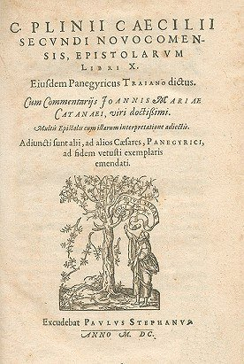<br>
              <font size="-1">Frontispice d'une édition de Pline, 1600</font></p>
          </center>
          <p><font color="#000099"><font face="Arial,Helvetica">C'est
                très précisément dans le livre XXXV<sup>e</sup> de
                son&nbsp;<a  name="Pline"></a></font><b><i><font
                    face="Arial, Helvetica, sans-serif"><font size="-1">Histoire


                      Naturelle</font></font></i></b><font
                face="Arial,Helvetica"> que l'on trouve une allusion à
                l'alun </font><font face="Arial, Helvetica, sans-serif">(</font></font><font
              face="Arial, Helvetica, sans-serif"><font color="#660000"><font
                  size="-1"><b><i>Hist. Nat.</i></b>, Pline l'ancien,
                  Paris, les Belles Lettres, 1985</font></font><font
                color="#000099">) :</font></font> <br>
            &nbsp; </p>
          <center>
            <table style="width: 82%;" cols="1"
              background="fondmarbre.jpg" border="0">
              <tbody>
                <tr align="center">
                  <td><i><u><font face="Arial,Helvetica"><font
                            color="#660000"><font size="+1">1. Le texte
                              de Pline l'ancien</font></font></font></u></i>
                    <p style="text-align: left;"><font
                        face="Arial,Helvetica"><font color="#330033">L'emploi

                          de l'alun (<a  name="1_t"></a><a href="#1%29-">1</a>)
                          n'est pas de moindre importance ni tellement
                          différent : on entend par là un sel exsudé par
                          la terre. Il y en a aussi plusieurs espèces. A
                        </font><font color="#000099">Chypre</font><font
                          color="#330033"> on trouve une espèce blanche
                          et une plutôt noire ; si la différence de
                          coloris est faible, celle qui concerne
                          l'utilisation est grande, car l'espèce blanche
                          et liquide est d'usage très courant pour
                          teindre la laine (<a  name="2_t"></a><a
                            href="#2%29-">2</a>) en couleur claire, tandis
                          que la noire sert à teindre en couleurs
                          sombres ou obscures. La dernière espèce sert
                          également pour purifier l'or (<a  name="3_t"></a><a
                            href="#3%29-">3</a>). Tous les aluns sont
                          composés d'eau et de limon : c'est une
                          exsudation (<a  name="4_t"></a><a href="#4%29-">4</a>)
                          naturelle du sol. elle se concentre (<a
                             name="5_t"></a><a href="#5%29-">5</a>) en hiver
                          et sa cristallisation s'achève au soleil
                          d'été. La partie déposée la première est la
                          plus blanche. On trouve l'alun en Espagne,
                          Egypte, Arménie, Macédoine, dans le Pont, en
                          Afrique (<a  name="6_t"></a><a href="#6%29-">6</a>),

                          dans les îles de Sardaigne, Mélos, Lipari,
                          Strongyle (<a  name="7_t"></a><a href="#7">7</a>).

                          Le plus apprécié est celui d'Egypte, puis
                          vient celui de Mélos, ce dernier possédant
                          également deux espèces, l'une liquide (<a
                             name="8_t"></a><a href="#8">8</a>), l'autre
                          solide. un bon alun liquide doit être limpide
                          et laiteux (<a  name="9_t"></a><a href="#9">9</a>),

                          ne doit pas irriter quand on le frotte entre
                          les doigts et doit posséder un léger reflet
                          couleur de feu (<a  name="10_t"></a><a
                            href="#10">10</a>). On l'appelle phorimon
                          (abondant) (<a  name="11_t"></a><a href="#11">11</a>).

                          On détecte son éventuelle falsification à
                          l'aide du jus de grenade ; en effet, s'il est
                          pur, le mélange... ; l'autre alun (<a
                             name="12_t"></a><a href="#12">12</a>) est de
                          nature pâle et granuleuse et peut être teinté
                          avec de la noix de<a  name="galle_1"></a>galle
                          (<a  name="13_t"></a><a href="#13">13</a>) :
                          voilà pourquoi on l'appelle paraphoron
                          (falsifié) (<a  name="14_t"></a><a href="#14">14</a>).
L'alun


                          liquide a des propriétés astringentes,
                          durcissantes et corrosives... Une espèce
                          d'alun solide est appelée schiston (<a
                             name="15_t"></a><a href="#15">15</a>) par
                          les Grecs : il se divise en sortes de
                          filaments blanchâtres, d'où le nom de
                          trichitis (<a  name="16_t"></a><a href="#16">16</a>)
                          que certains ont préféré lui donner. il
                          provient du minerai qui fournit aussi le
                          cuivre - et que nous appelons chalcitis (<a
                             name="17_t"></a><a href="#17">17</a>) - :
                          c'est une sorte d'exsudation de ce minerai
                          coagulée en écume (<a  name="18_t"></a><a
                            href="#18">18</a>). Cette espèce d'alun est
                          moins siccative et moins apte à arrêter les
                          humeurs corporelles nuisibles... Il y a une
                          autre espèce d'alun moins active, que l'on
                          appelle strongyle (<a href="#7">7</a>).
                          Celui-ci comprend aussi deux variétés (<a
                             name="19_t"></a><a href="#19">19</a>) :
                          l'une a l'aspect d'un champignon et se dissout
                          facilement dans tout liquide ; on n'en fait
                          aucun cas ; la variété poreuse est meilleure :
                          elle est percée de trous, semblables à ceux
                          d'une éponge, et se présente en blocs arrondis
                          ; elle se rapproche de l'alun blanc, est assez
                          grasse, sans graviers, friable, et ne permet
                          pas de teindre en couleurs sombres (<a
                             name="20_t"></a><a href="#20">20</a>). On
                          chauffe cet alun tout seul sur des braises
                          bien propres jusqu'à ce qu'il se réduise en
                          cendres. La meilleure de toutes les espèces
                          est celle que l'on appelle </font><font
                          color="#000099">melinum</font><font
                          color="#330033">, du nom de l'île où on le
                          trouve, comme nous l'avons dit. Aucune ne
                          possède à un plus haut degré des proriétés
                          astringentes, noircissantes (<a  name="21_t"></a><a
                            href="#21">21</a>) et durcissantes ; aucune
                          n'est plus compacte...La propriété principale
                          de toutes les espèces d'alun est d'être
                          astringentes, d'où le nom grec (<a  name="22_t"></a><a
                            href="#22">22</a>)... Quant aux autres
                          utilisations de l'alun dans la vie courante,
                          nous avons attiré l'attention sur leur
                          importance à propos de la préparation des
                          cuirs et laines.</font></font></p>
                  </td>
                </tr>
              </tbody>
            </table>
          </center>
          <p><i><u><font face="Arial,Helvetica"><font color="#660000"><font
                      size="-1">2. les commentaires du texte par J.M.
                      Croisille (Université de Clermont II) repris en
                      substance :</font></font></font></u></i> </p>
          <p><font face="Arial,Helvetica"><font color="#660033"><font
                  size="-1">(<a  name="1"></a><a href="#1_t">1</a>) - <a
                    href="#a%29-">Aluminis</a> : une étymologie
                  fantaisiste renverrait à : « a lumine quod lumen
                  coloribus praestat tingendis ». Un commentaire général
                  du texte de Pline est trouvé dans <i>The Elder
                    Pliny's Chapters on Chemical Subjects</i>, K.C.
                  Bailey, Londres, 1929-1932. Bailey montre que Pline
                  regroupe sous ce nom des substances dont la qualité
                  commune est d'être <a href="#a%29-">astringentes</a>.
                  Il distingue :</font></font></font> </p>
          <dir><font face="Arial,Helvetica"><font color="#660033"><font
                  size="-1"><b>a)-</b> les aluns proprement dits qui
                  sont des sulfates doubles hydratés d'aluminium
                  auxquels s'ajoute du potassium : formule K<sub>2</sub>SO<sub>4</sub>.Al<sub>2</sub>(SO<sub>4</sub>)3.24H<sub>2</sub>O
                  ; c'est ce que l'on trouve dans la kalinite, minéral
                  que l'on extrait en Sicile et dans les îles Lipari ;</font></font></font>
            <br>
            <font face="Arial,Helvetica"><font color="#660033"><font
                  size="-1"><b>b)-</b> les halotrichites (et autres
                  composés, comme la pickeringite, le picroallumogène et
                  l'apjohnite), qui sont des sulfates doubles hydratés
                  d'aluminium + du fer (pour l'halotrichite proprement
                  dite : FeSO<sub>4</sub>.Al<sub>2</sub>(SO<sub>4</sub>)3.24H<sub>2</sub>O,
du


                  magnésium et du manganèse ;</font></font></font> <br>
            <font face="Arial,Helvetica"><font color="#660033"><font
                  size="-1"><b>c)-</b> l'alunogène ou sulfate
                  d'aluminium hydraté (Al<sub>2</sub>(SO<sub>4</sub>)3.16H2O)
et


                  tous les minéraux qui contiennent du sulfate de fer.
                  Selon Bailey, les variétés blanches correspondraient à
                  l'alun potassique ou à l'alunogène, les autres
                  (colorées) aux aluns de fer ou au manganèse.</font></font></font></dir>
          <font face="Arial,Helvetica"><font color="#660033"><font
                size="-1">(<a  name="2"></a><a href="#2_t">2</a>) -«
                Inficiendis lanis »: il s'agit de mordants pour la
                teinture. Les couleurs les plus éclatantes étaient
                obtenues par l'utilisation d'aluns sans fer, sans doute
                l'alun potassique ou l'alunogène, les couleurs sombres
                grâce à l'alun au fer ou au manganèse (Forbes, <i>Anc.
                  Techn.</i>, IV) ;</font></font></font> <br>
          <font face="Arial,Helvetica"><font color="#660033"><font
                size="-1">(<a  name="3"></a><a href="#3_t">3</a>) -
                D'après Bailey, il s'agirait de nettoyage superficiel ou
                de purification magique ; le texte latin dit : « Et
                aurum nigro purgatur » ;</font></font></font> <br>
          <font face="Arial,Helvetica"><font color="#660033"><font
                size="-1">(<a  name="4"></a><a href="#4_t">4</a>) - Selon
                Bailey, l'alun se présente souvent en efflorescence sur
                des <a href="#" class="lien-repare" title="ancre absente de la page d'origine (lien ramené en haut de page)">schistes</a> ; mais il
                pense plutôt que l'indication vise le sulfate de fer
                (mélantérite) existant à la surface de la pyrite de fer
                ou de la marcassite (l'une et l'autre de formule FeS<sub>2</sub>
                mais de structure cristalline différente) ; le terme de
                chalcitis désigne de la pyrite de cuivre (chalcopyrite :
                CuFeS<sub>2</sub>) et pourrait aussi avoir désigné la
                pyrite de fer ;</font></font></font> <br>
          <font face="Arial,Helvetica"><font color="#660033"><font
                size="-1">(<a  name="5"></a><a href="#5_t">5</a>) -
                L'alun est entraîné par l'eau de l'hiver dans des creux
                où il cristallise en été. Celui qui cristallise le
                premier (praecox) est évidemment le plus pur ;</font></font></font>
          <br>
          <font face="Arial,Helvetica"><font color="#660033"><font
                size="-1">(<a  name="6"></a><a href="#6_t">6</a>) - il
                s'agit de la province romaine ;</font></font></font> <br>
          <font face="Arial,Helvetica"><font color="#660033"><font
                size="-1">(<a  name="7"></a><a href="#7_t">7</a>) - il
                s'agit de l'ancien nom de l'île de Stromboli ; à noter
                qu'en grec, strongylos renvoie à une sphère, à ce qui
                est rond ; nous reviendrons la-dessus plus tard ;</font></font></font>
          <br>
          <font face="Arial,Helvetica"><font color="#660033"><font
                size="-1">(<a  name="8"></a><a href="#8_t">8</a>) - c'est
                la solution de l'alun liquide (l'alun potassique étant
                très soluble selon Bailey).</font></font></font> <br>
          <font face="Arial,Helvetica"><font color="#660033"><font
                size="-1">(<a  name="9"></a><a href="#9_t">9</a>) -
                lacteum signifie « de consistance laiteuse » ;</font></font></font>
          <br>
          <font face="Arial,Helvetica"><font color="#660033"><font
                size="-1">(<a  name="10"></a><a href="#10_t">10</a>) -
                aucun alun ne donnant une sensation de chaleur,
                l'expression doit alors signifier « présentant une
                couleur flammée » ; il y a plusieurs sortes d'aluns qui
                tendent vers le rouge (picroallunogène de l'île d'Elbe,
                apjohnite, alunogène) ;</font></font></font> <br>
          <font face="Arial,Helvetica"><font color="#660033"><font
                size="-1">(<a  name="11"></a><a href="#11_t">11</a>) - la
                variété d'alun liquide était appelée phorimon (en grec)
                à cause de son prix minime et de son abondance (a le
                sens de fructueux, profitable) ;</font></font></font> <br>
          <font face="Arial,Helvetica"><font color="#660033"><font
                size="-1">(<a  name="12"></a><a href="#12_t">12</a>) - le
                fait de noircir, si l'on ajoute du jus de grenade au
                produit, viendrait du fer (que ne contient pas l'alun
                sincerum) ;</font></font></font> <br>
          <font face="Arial,Helvetica"><font color="#660033"><font
                size="-1">(<a  name="13"></a><a href="#13_t">13</a>) - la
                noix de&nbsp;<a  name="galle_2"></a><a
                  href="../original/symb-dir-prim.html#g">galle</a> sert,
                comme le jus de <a href="#" class="lien-repare" title="ancre absente de la page d'origine (lien ramené en haut de page)">grenade</a>,
                de réactif pour reconnaître la présence de fer ; par
                ailleurs, Pline désignerait ici l'halotrichite (jaune
                pâle) et le sulfate de fer (vert pâle), astringents l'un
                et l'autre à ranger sous l'appellation de paraphoron ;
                cf. relations au <a href="../original/imitat-prec.html">Mercure</a>.</font></font></font>
          <br>
          <font face="Arial,Helvetica"><font color="#660033"><font
                size="-1">(<a  name="14"></a><a href="#14_t">14</a>) -
                Paraphoron : signifie « fou, égaré », d'où l'usage du
                terme avec valeur métaphorique pour désigner une variété
                inférieure d'un produit ;</font></font></font> <br>
          <font face="Arial,Helvetica"><font color="#660033"><font
                size="-1">(<a  name="15"></a><a href="#15_t">15</a>) - en
                grec : <a href="#" class="lien-repare" title="ancre absente de la page d'origine (lien ramené en haut de page)">facile à fendre</a> ;</font></font></font>
          <br>
          <font face="Arial,Helvetica"><font color="#660033"><font
                size="-1">(<a  name="16"></a><a href="#16_t">16</a>) -
                tous les minéraux du groupe se retrouvent sous forme
                fibreuse ;</font></font></font> <br>
          <font face="Arial,Helvetica"><font color="#660033"><font
                size="-1">(<a  name="17"></a><a href="#17_t">17</a>) - le
                terme chalcitis désigne donc de la pyrite de cuivre
                (chalcopyrite) mais peut avoir aussi désigné du fer ;</font></font></font>
          <br>
          <font face="Arial,Helvetica"><font color="#660033"><font
                size="-1">(<a  name="18"></a><a href="#18_t">18</a>) - du
                fait que l'alun se présente sous forme d'efflorescence :
                c'est la transformation d'un sel qui perd son eau de
                cristallisation, en devenant pulvérulent ;</font></font></font>
          <br>
          <font face="Arial,Helvetica"><font color="#660033"><font
                size="-1">(<a  name="19"></a><a href="#19_t">19</a>) -
                Bailey distingue deux sortes d'alun, l'espèce naturelle
                et l'espèce artificielle : la première est de peu de
                valeur. L'espèce artificielle serait de l'alun brûlé,
                moins astringent, tandis que l'autre espèce (naturelle)
                pourrait être un des sulfates du groupe des aluns, par
                exemple l'alunogène, sous forme massive et globulaire ;</font></font></font>
          <br>
          <font face="Arial,Helvetica"><font color="#660033"><font
                size="-1">(<a  name="20"></a><a href="#20_t">20</a>) -
                aucun alun ne peut tacher les doigts de noir ou faire
                une tache noire. Bailey pense plutôt à l'usage commun
                comme mordant pour une teinture de couleur sombre ;</font></font></font>
          <br>
          <font face="Arial,Helvetica"><font color="#660033"><font
                size="-1">(<a  name="21"></a><a href="#21_t">21</a>) - de
                denigrare = noircir. Bailey propose plusieurs sens à ce
                passage : a)- usage comme mordant our les couleurs
                sombres ; b)- réaction avec la noix de galle ; c)- usage
                du sulfate de fer (sorte d'atramentum sutorium :
                celui-ci est normalement du sulfate de cuivre ou vitriol
                bleu : SO<sub>4</sub>Cu.5H<sub>2</sub>O) inclus parfois
                sous le terme d'alumen pour teindre le cuir en noir ;</font></font></font>
          <br>
          <font color="#660033"><font face="Arial,Helvetica"><font
                size="-1">(<a  name="22"></a><a href="#22_t">22</a>) - en
                grec </font></font><font face="Symbol"><font size="+1">stuptikoV</font></font><font
              face="Arial,Helvetica"><font size="-1"> ;</font></font></font>
          <p><i><u><font face="Arial,Helvetica"><font color="#660000"><font
                      size="-1">3. Notre commentaire</font></font></font></u></i>
          </p>
          <p><font face="Arial,Helvetica"><font color="#000099">Ce texte
                nous apparaît d'une grande importance car on y retrouve
                plusieurs éléments auxquels les textes alchimiques font
                référence de façon - il est vrai - plus ou moins directe
                : nous avons noté : - le sel exsudé par la Terre -
                Chypre (<font size="-1"><a
                    href="../original/symb-dir-prim.html#c">1</a>, <a
                    href="../original/symb-dir-prim.html#c">2</a>, <a
                    href="../original/symb-dir-prim.html#c">3</a></font>) -
                la variété noire d'alun (<font size="-1"><a
                    href="../original/prima-materia.html#noir_1">1</a>, <a
                    href="../original/prima-materia.html#noir_2">2</a>, <a
                    href="../original/prima-materia.html" class="lien-repare" title="ancre absente de la page d'origine : lien ramené en haut de page">3</a>, <a
                    href="../original/prima-materia.html#noir_4">4</a>, <a
                    href="../original/prima-materia.html#noir_5">5</a>, <a
                    href="../original/prima-materia.html#noir_6">6</a>, <a
                    href="../original/prima-materia.html" class="lien-repare" title="ancre absente de la page d'origine : lien ramené en haut de page">7</a></font>) - la
                teinture pour la laine (<font size="-1"><a
                    href="../original/symb-dir-prim.html#b">1</a>, <a
                    href="../original/symb-dir-prim.html#b">2</a></font>)
                - le limon (<font size="-1"><a href="#" class="lien-repare" title="ancre absente de la page d'origine (lien ramené en haut de page)">1</a>, <a
                    href="#" class="lien-repare" title="ancre absente de la page d'origine (lien ramené en haut de page)">2</a></font>) - Strongyle - la
                consistance laiteuse - phorimon (abondant) - le renvoi à
                la noix de </font><font color="#660000">galle</font><font
                color="#000099"> (<font size="-1"><a
                    href="../original/symb-dir-prim.html#k">1</a>, <a
                    href="../original/symb-dir-prim.html#g">2</a>, <a
                    href="../original/symb-dir-prim.html#g">3</a>, <a
                    href="../original/symb-dir-prim.html#g">4</a></font>) et à
                la grenade (<font size="-1"><a
                    href="../original/symb-dir-prim.html#g">1</a>, <a
                    href="#" class="lien-repare" title="ancre absente de la page d'origine (lien ramené en haut de page)">2</a></font>) - les propriétés
                astringentes (<font size="-1"><a
                    href="#a%29-">1</a>, <a
                    href="../original/symb-dir-prim.html#a">2</a>, <a
                    href="#astringent_3">3</a>, <a
                    href="../original/prima-materia.html" class="lien-repare" title="ancre absente de la page d'origine : lien ramené en haut de page">4</a></font>)
                - le renvoi aux schistes (<font size="-1"><a
                    href="#" class="lien-repare" title="ancre absente de la page d'origine (lien ramené en haut de page)">1</a>, <a href="#" class="lien-repare" title="ancre absente de la page d'origine (lien ramené en haut de page)">2</a>,
                  <a href="#" class="lien-repare" title="ancre absente de la page d'origine (lien ramené en haut de page)">3</a>, <a href="#" class="lien-repare" title="ancre absente de la page d'origine (lien ramené en haut de page)">4</a>,
                  <a href="#" class="lien-repare" title="ancre absente de la page d'origine (lien ramené en haut de page)">5</a>, <a href="#" class="lien-repare" title="ancre absente de la page d'origine (lien ramené en haut de page)">6</a></font>)
                et aux </font><font color="#660000">cheveux</font><font
                color="#000099"> ou filaments (</font><font
                color="#660000"><font size="-1">trichitis</font></font><font
                color="#000099">) - l'écume (<small><a
                    href="../original/symb-dir-prim.html" class="lien-repare" title="ancre absente de la page d'origine : lien ramené en haut de page">1</a>, <a
                    href="../original/symb-dir-prim.html" class="lien-repare" title="ancre absente de la page d'origine : lien ramené en haut de page">2</a>, <a
                    href="../original/symb-dir-prim.html" class="lien-repare" title="ancre absente de la page d'origine : lien ramené en haut de page">3</a>, <a
                    href="../original/prima-materia.html" class="lien-repare" title="ancre absente de la page d'origine : lien ramené en haut de page">4</a></small>).</font></font>
            <font face="Arial,Helvetica"><font color="#000099">Les
                cheveux (</font><font color="#660000"><font size="-1">trichitis</font></font><font
                color="#000099">) sont pour nous l'occasion de revenir
                sur certains détails d'iconographie des traités de
                Fulcanelli et de Canseliet : rappelons-nous en effet la
                cheminée du grand salon de Fontenay-Le-Comte ; nous y
                trouvons deux gnomes dont les membres inférieurs sont
                couverts de poils longs et touffus. Dans les <b><i><font
                      size="-1">Deux Logis Alchimiques</font></i></b>
                d'Eugène Canseliet, on trouve aussi une allusion à la
                chevelure dans le chapitre <i><font size="-1">La Sirène
                    noire et enceinte</font></i> ; il nous dit notamment
                :</font></font> </p>
          <p><i><font face="Arial,Helvetica"><font size="-1"><font
                    color="#000099">"</font><font color="#660000"> ...
                    la femme incarne le mercure qui, lui-même, en
                    qualité de premier principe, correspond à l'esprit.
                    De celui-ci, les cheveux longs sont l'image
                    rayonnante qui établissait... l'antinomique
                    différence entre les <a
                      href="../original/prima-materia.html" class="lien-repare" title="ancre absente de la page d'origine : lien ramené en haut de page">Gaulois </a>à
                    l'abondante chevelure, et les romains, sévèrement
                    tondus... </font><font color="#000099">"</font></font></font></i>
          </p>
          <p><font face="Arial,Helvetica"><font color="#000099">C'est
                ici le lieu semble t-il, de nous souvenir de la <i><font
                    size="-1"><a href="../original/emblemes.html#Clef%20I">Clef I</a></font></i>
                de B. Valentin (cf. <a href="#c%29-">supra</a>) où
                l'on voit un vieillard glabre effeuiller littéralement
                un globe, à droite de la gravure. La consistance
                globuleuse de la matière pourrait correspondre à «
                strongylos » pour désigner une certaine variété d'alun.</font></font>
          </p>
          <p><font face="Arial,Helvetica"><font color="#000099">On peut
                repérer une autre allusion aux cheveux dans le chapitre
                consacré au <i><font size="-1">Chariot à voile et son
                    guide féminin</font></i>. Voici le commentaire d'E.
                Canseliet :</font></font> </p>
          <p><i><font face="Arial,Helvetica"><font size="-1"><font
                    color="#000099">"</font><font color="#660000">Ici
                    devons-nous remarquer, que, nonobstant l'impression
                    de vitesse, la blonde et longue chevelure de la
                    conductrice reste immobile et tombe dans son dos,
                    jusqu'à toucher les hanches...</font><font
                    color="#000099">"</font></font></font></i> </p>
          <p><font face="Arial,Helvetica"><font color="#000099">- Qu'est
                ce qu'un alun ? Nous extrayons ce passage des <b><i><font
                      size="-1">Eléments de l'art de la teinture avec
                      une description du blanchiment par l'acide
                      muriatique oxygéné</font></i></b> par Amédée-B.
                Berthollet [</font><font color="#660000"><font size="-1">Firmin-Didot,
                  Paris, 1804</font></font><font color="#000099">] :</font></font>
          </p>
          <center>
            <p>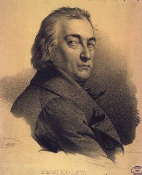<br>
              <font size="-1">Amédée Berthollet</font></p>
          </center>
          <font face="Arial,Helvetica"><font color="#000099">L'<b><font
                  size="-1">ALUN</font></b> est désigné en chimie par le
              nom de sulfate d'alumine, et, quoique cette dénomination
              n'indique pas rigoureusement les éléments dont il est
              composé, elle est cependant utile et remplit ordinairement
              le but de la nomenclature, parce qu'elle désigne les deux
              parties qui doivent fixer l'attention dans la plupart des
              phénomènes que l'on analyse.</font></font> <font
            face="Arial,Helvetica"><font color="#000099">Cette
              combinaison est de l'usage le plus fréquent dans l'art des
              teintures; elle est encore employée dans plusieurs autres
              arts ; de sorte qu'il est important pour en diriger
              l'emploi, d'en bien connaître les propriété et les
              différences, et sa préparation devient elle-même un objet
              considérable. On trouve l'alun dans quelques sources
              d'eaux minérales : il effleurit à la surface des schistes,
              dans les mines de charbon, ou sur les laves au voisinage
              des volcans et sur plusieurs rochers ; mais la plus grande
              partie de l'alun qu'on emploie se retire de ses mines
              particulières, ou bien se fabrique par la combinaison
              artificielle de l'alumine et de l'acide sulfurique. Il est
              parlé de l'alun dans les ouvrages des Anciens, et celui de
              Melos était particulièrement renommé chez les Grecs [</font><i><font
                color="#660000"><font size="-1"><b>Voyage du jeune
                    Anacharsis</b>, t. IV</font></font></i><font
              color="#000099">]; mais Bergman [</font><i><font
                color="#660000"><font size="-1"><b>de Confect. Alum.
                    opusc</b>, vol. 1,</font></font></i><font
              color="#660000"><font size="-1">1797]</font></font><font
              color="#000099"> croit que l'alun des Anciens était une
              substance qui se trouvait naturellement , et qui différait
              beaucoup du sel auquel nous donnons ce nom [on a vu supra
              que l'alun était parfois confondu avec le sulfate de fer
              ou vitriol vert] ; que les espèces d'alun dont parle
              Dioscoride, sont plutôt des stalactites qui pouvaient
              contenir de l'alun, mais seulement en petite quantité, et
              confondu avec d'autres sulfates. Du temps de <font
                size="-1"><a href="#Pline">Pline</a></font>, le meilleur
              alun venait de Chypre ; en en choisissait l'espèce selon
              les couleurs auxquels on le destinait; mais on voit que
              celui qui était réservé pour les couleurs rembrunies,
              était très impur, et contenait beaucoup de sulfate de fer,
              puisque Pline le désigne par le mot de nigrum, et qu'il
              spécifie qu'il donnait une couleur noire avec la noix de
              galle ; ce qui ne peut s'appliquer à aucun alun factice.
              C'est dans l'orient que l'alun factice a commencé à être
              connu. On ne sait précisément à quel endroit ni à quelle
              époque il a premièrement été fabriqué. L'une des plus
              anciennes fabriques a été celle de Roche, ville de Syrie
              qu'on appelle aujourd'hui Édesse ; de-là vient l'alun de
              Roche que, par une confusion de mots, l'on donne encore
              aux masses cristallisées d'alun. Cet art fut porté dans le
              quinzième siècle en ltalie ; et de là il s'est répandu en
              Allemagne et dans le reste de l'Europe. On trouve à la
              Solfatare, près de Naples, une ruine alumineuse sous la
              forme d'une terre blanche. L'alun est formé dans cette
              mine par l'action qu'exerce sur les laves argileuses
              l'acide sulfureux qui est dégagé par la chaleur du volcan.
              Il ne faut que le dissoudre et le faire cristalliser. La
              plus pure des mines d'alun est celle de la Tolfa, près de
              Civita-Vecchia : elle est composée, selon Monnet, qui le
              premier en a fait l'analyse, de quarante parties de
              soufre, de cinquante parties de glaise, c'est-à-dire d'un
              mélange d'argile et de terre silicée ; et outre cela d'une
              petite quantité de carbonate de potasse et d'une
              très-petite portion de fer. Bergman en a aussi fait une
              analyse qui donne à peu près les mêmes proportions.
              Vauquelin a encore confirmé cette analyse, en y portant
              beaucoup plus d'exactitude. Les autres mines dont on
              retire l'alun sont des schistes plus on moins pyriteux et
              plus ou moins bitumineux. Ceux qui sont trop pyriteux
              doivent être rejetés, parce qu'ils donnent un alun qui
              contient beaucoup de sulfate ou vitriol de fer, dont il
              serait difficile de le débarrasser.<br>
              Les opérations par lesquelles on retire l'alun de ses
              mines lorsqu'il ne s'y trouve pas tout formé comme à la
              Solfatare, ont pour objet l'alunation, l'extraction de
              l'alun et sa cristallisation. Ces mines, exposées à l'air
              et à la pluie, peuvent s'aluner, pour la plupart, sans
              être préparées mais celles qui contiennent ou trop de
              bitume ou trop de soufre, ont besoin d'être torréfiées
              avant que d'être exposées à l'action de l'air et de
              l'humidité , et la torréfaction accélère dans toutes, la
              formation de l'alun. L'alunation consiste dans la
              combinaison de l'oxigène qui, s'unissant au soufre, le
              change en acide sulfurique, ainsi que l'a fait voir
              Lavoisier ; mais ordinairement c'est du sulfate de fer qui
              se forme; et le fer s'oxidant par excès en restant exposé
              à l'air, est décomposé par l'alumine. Il n'y a que la mine
              de la Tolfa parmi celles que l'on connaît , où l'acide
              paraisse se combiner immédiatement avec l'alumine. Lorsque
              l'alun est formé, il faut faire la lixiviation de la mine,
              et ensuite faire évaporer la liqueur jusqu'à ce qu'elle
              soit en état de donner des cristaux : on lave les premiers
              cristaux , on les redissout dans une très petite quantité
              d'eau bouillante, et l'on verse cette dissolution dans des
              espèces de tonneaux dont on délie ensuite les douves pour.
              en extraire la masse d'alun qui s'y est formée. Le résidu
              des cristallisations mêlé avec plus ou moins de la
              dissolution de la mine, est mis à évaporer jusqu'à ce
              qu'il soit en état de cristalliser, et l'on procède ainsi
              de suite, en ajoutant les résidus des cristallisations
              précédentes aux dissolutions nouvelles.</font></font> <font
            face="Arial,Helvetica"><font color="#000099">Ce mélange est
              la principale cause de l'impureté des aluns et des
              différences qui peuvent se trouver entré ses espèces. Dans
              le progrès des arts chimiques, on a appris à fabriquer
              l'alun par la combinaison directe de l'acide sulfurique et
              de l'alumine: pour cela, il faut choisir une argile qui
              soit dépourvue de fer et de terre calcaire, autant qu'il
              est possible, et la griller pour la disposer à se combiner
              avec l'acide sulfurique ; on fait immédiatement cette
              combinaison avec l'acide, ou en exposant des boules
              d'argile cuite à la vapeur de l'acide sulfurique dans la
              chambre de plomb même, dans laquelle on fabrique cet
              acide. Chaptal a fait connaître les détails de ce procédé,
              qu'il avait établi à Montpellier [</font><i><font
                color="#660000"><font size="-1">Mém. Acad. Sci., 1788</font></font></i><font
              color="#000099">]. Cette formation de l'alun, exige comme
              on va le voir, une addition de potasse ou de <u>sulfate
                de potasse</u>, et celui qu'on obtient par ce procédé,
              paraît surtout être sujet à avoir un excès d'acide. Avant
              de poursuivre l'examen de la préparation de l'alun, il
              convient de déterminer la nature de cette combinaison: On
              a pensé d'abord, que l'alun était un sel, formé simplement
              par la combinaison de l'acide sulfurique et de l'alumine ;
              de-là Bergman conseilla de saturer avec une argile pauvre,
              l'excès d'acide sulfurique, qui se trouve ordinairement
              dans la lessive de la terre alunée, au lieu de la potasse
              ou de l'urine putréfiée ,et par conséquent chargée
              d'ammoniaque, qu'on y ajoute ordinairement ; mais Chaptal
              observa, que :</font></font>
          <p><font face="Arial,Helvetica"><font color="#000099">«</font><i><font
                  color="#660000"><font size="-1"> si l'on fait bouillir
                    la lessive acide, avec de l'argile cuite ou crue, la
                    dissolution ne se fait que très lentement et par une
                    forte ébullition. Lorsque la lessive paraît saturée,
                    si on la filtre, elle laisse précipiter par le
                    refroidissement une grande partie de l'argile
                    qu'elle avait dissoute ; si dans cet état on
                    rapproche la dissolution, l'argile se dégage et
                    forme roe précipité qui s'oppose à toute
                    cristallisation.</font></font></i><font
                color="#000099"> »</font></font> </p>
          <p><font face="Arial,Helvetica"><font color="#000099">On
                pouvait déjà conclure de cette observation, que la
                potasse ou l'ammoniaque devaient entrer dans la
                composition de l'alun : Décroizille prononça que la
                potasse ne contribuait pas à la cristallisation de
                l'alun par la saturation de l'acide ; mais par sa
                combinaison, et il éprouva que le sulfate de potasse
                pouvait produire le même effet : Chaptal parvenu au même
                résultat, avait établi cette pratique dans ses ateliers
                : enfin Vauquelin fit une analyse exacte de l'alun, et
                il trouva qu'il contenait nécessairement, pour pouvoir
                cristalliser, du sulfate de potasse ou d'ammoniaque, ou
                tous les deux en même temps ; il évalua le sulfate qui
                se trouve dans l'alun, et il tira de ses observations,
                cette conséquence importante, que toutes les fois que
                l'on obtient immédiatement des cristaux d'alun, d'une
                substance terreuse ou pierreuse, par le moyen de l'acide
                sulfurique, cette substance contient de la potasse d'on
                a vu que la mine de la Tolfa, a naturellement du
                carbonate de potasse : quelques autres mines peuvent se
                trouver dans le même cas ; d'ailleurs les cendres qui se
                forment dans leur torréfaction, leur fournissent de la
                potasse et du sulfate de potasse : de sorte, qu'il n'est
                pas surprenant que l'on puisse obtenir de l'alun, sans
                addition de potasse ou d'urine putréfiée qui fournisse
                de l'ammoniaque. Bergman remarque que cette dernière
                addition procure un alun qui altère les couleurs : on
                ignore si c'est par une trop grande proportion de
                sulfate d'ammoniaque ou par le mélange de quelque autre
                substance nuisible, que l'alun peut prendre cette
                mauvaise qualité. [...]<br>
                <br>
              </font></font> </p>
          <center>
            <p><font face="Wingdings"><font color="#cc0000"><font
                    size="+2">¯</font></font></font></p>
          </center>
          <font face="Arial,Helvetica"><font color="#000099">Pour les
              chimistes modernes, l'alun est - stricto sensu - du
              sulfate double de potassium et d aluminium hydraté de
              formule [</font><font color="#660000"><font size="-1">K<sub>2</sub>SO<sub>4</sub>,
                Al<sub>2</sub>(SO<sub>4</sub>)3, 24 H<sub>2</sub>O</font></font><font
              color="#000099">], nommé habituellement alun de potasse ou
              alun de roche, qui correspond à la kalinite. Par
              extension, le mot alun désigne tout sulfate double dont la
              formule peut s'écrire : [</font><font color="#660000"><font
                size="-1">Me<sub>1</sub>Me<sub>111</sub>(SO4)2,12H2O</font></font><font
              color="#000099">] où les symboles Me<sub>1</sub> et Me<sub>111</sub>
              désignent des cations, respectivement monovalents (Me<sub>1</sub>)
              parmi lesquels on trouve le </font><font color="#660000">potassium</font><font
              color="#000099">, </font><font color="#660000">l'ammonium</font><font
              color="#000099">, et trivalents (Me<sub>111</sub>) parmi
              lesquels on trouve&nbsp; </font><font color="#660000">l'aluminium,

              le chrome, le fer et le titane</font><font color="#000099">
              entre autres. Très tôt l'industrie de l alun fut une
              source considérable pour l'Asie Mineure d'où il fut
              initialement importé [<code style="color: #660000;">cf.
                Jean Delumeau, l'alun de Rome, SEVPEN, Paris, 1962</code>].

              Cette observation est très importante car c'est
              précisément en Turquie - qui contenait entre autre la </font><font
              color="#660000">Phrygie</font><font color="#000099"> que
              Fulcanelli évoque souvent par la mythe de <font size="-1"><a
                  href="../original/symb-dir-prim.html#c">Cybèle</a></font>
              ou par le mythe des argonautes ou enfin « l'eau pontique »
              renvoyant au Pont-Euxin - la mer Noire - que l'on trouve
              le minerai de </font><font color="#660000">chrome</font><font
              color="#000099"> le plus abondant qui est la chromite ;
              outre que l'on doit aussi y trouver du bichromate de
              chrome, i.e. l'alun de chrome. Plus tard, on devait
              trouver en Italie (alun de Rome) les minéraux nécessaires
              à sa préparation. C étaient donc, d'abord, des </font><font
              color="#660000">schistes pyriteux</font><font
              color="#000099"> qui étaient exploités. On débutait par
              une calcination vers 500°C et par dissolution du résidu
              dans l'eau, une partie de l'alumine en excès précipitait
              et l'alun de Rome était déposé sous forme de cubes.
              L'alumine se présente alors comme un trihydrate cristallin
              gélatineux et elle devient anhydre entre 900°C et 1000°C.
              Vers 1150°C, elle se transforme en alumine alpha qui est
              le </font><font color="#660000">corindon</font><font
              color="#000099">, chimiquement inerte (Al<sub>2</sub>O<sub>3</sub>).</font></font>
          <p><font face="Arial,Helvetica"><font color="#000099">- On
                peut également obtenir de l'alun à partir du traitement
                de </font><font color="#660000">boue</font><font
                color="#000099"> ou de vase. Cela éclaire - au sens
                littéral du terme - d'un sens nouveau l'emblème XLII de
                l'<b><i><font size="-1"><a href="../original/atalanta-fugiens.html">Atalanta


                        fugiens</a></font></i></b> de M. Maier :</font></font>
            <br>
            &nbsp; <br>
            <br>
          </p>
          <center>
            <p><br>
              <font color="#000000"><font size="-1">emblème XLII de
                  l'Atalanta fugiens</font></font></p>
          </center>
          <p><font face="Arial,Helvetica"><font color="#000099">On y
                voit un vieillard ; il porte de la main gauche une <font
                  size="-1"><a href="../original/symb-dir-prim.html#l">lanterne</a></font>
                et il s'aide de la main droite d'une canne ou d'un
                bâton. Il suit <font size="-1"><a
                    href="../original/symb-dir-prim.html#d">Diane</a></font>,
                ici représentant ici la Lune cornée : la vision semble
                désigner la commixion du 1<sup>er</sup> Mercure (le Sel
                des Sages) et du Mercure philosophique, qui,
                littéralement parlant, porte le flambeau ; notez bien
                que le vieillard suit Diane à la trace, ses empreintes
                étant nettement visibles dans la boue du chemin. On
                arrive aux conclusions suivantes : on peut obtenir de
                l'alun [</font><font color="#660000"><font size="-1">alumen

                  --&gt; lumen : lumière, lanterne]</font></font><font
                color="#000099"> à partir d'un limon en s'aidant d'un
                agent. Quant au bâton, il est assimilable au <font
                  size="-1"><a href="../original/symb-dir-prim.html#sceptre">sceptre</a></font>
                de Bacchus et se réfère à un secret bien gardé dont nous
                discutons dans la section sur les <font size="-1"><a
                    href="../original/heraldique.html" class="lien-repare" title="ancre absente de la page d'origine : lien ramené en haut de page">blasons alchimiques</a></font>.
                Cet emblème a été jugé suffisamment important par E.
                Canseliet pour qu'il le place dans son <b><i><font
                      size="-1">Alchimie expliquée sur ses Textes
                      classiques</font></i></b> p.19. L'épigramme latine
                indique :</font></font> </p>
          <p><font face="Arial,Helvetica"><font size="-1"><font
                  color="#000099">" </font><i><font color="#660000">La
                    Nature est ton guide, et toi, par l'art, sois son
                    suivant de bon grès- Tu t'égares, si elle n'est pas
                    la compagne dans la voie. - Que le Raisonnement te
                    donne l'aide du Bâton, que l'Expérience te fortifie
                    les yeux . - Par quoi tu puisses distinguer ce qui
                    se trouve au loin. - Que la Lecture soit ta Lampe
                    lumineuse dans les ténèbres, - Afin que, <u>prudent</u>,
                    tu te gardes de l'amas des paroles et des choses</font></i><font
                  color="#000099"> ".</font></font></font> </p>
          <p><font face="Arial,Helvetica"><font color="#000099">L'épigramme

                est entièrement cabalistique ; nous l'analysons ailleurs
                [</font><font color="#660000"><font size="-1">cf.
                  commentaire du <a href="../original/atalanta-xlii.html">chapitre
                    XLII</a></font></font><font color="#000099">]. Ce
                que l'on sait moins, c'est le rôle que l'alun a tenu
                dans l'histoire du papier [</font><font color="#660000"><font
                  size="-1">voyez l'allusion à une note de <a
                    href="../original/symb-dir-prim.html" class="lien-repare" title="ancre absente de la page d'origine : lien ramené en haut de page">bas de page</a>
                  de Canseliet]</font></font><font color="#000099"> :
                l'alun depuis la fin du XIX<sup>e</sup> siècle, a été
                tenu comme une cause de dégradation du papier. La
                variété d'alun utilisée au travers de l'histoire du
                papier a été le sulfate de potassium et d'aluminium,
                remplacé ensuite par du sulfate d'aluminium. L'alun
                véritable (d'aluminium) a été importé en Europe depuis
                l'antiquité pour être utilisé en <a href="../original/teinture.html">teinturerie</a>.
                On le trouvait dans des minéraux comme l'alunite,
                présente dans des roches sédimentaires éruptives. Au XV<sup>e</sup>
                siècle, les première mines d'alun furent trouvée en
                Europe à </font><font color="#660000">Tolfa</font><font
                color="#000099">, une zone volcanique au nord de Rome,
                en Italie centrale.&nbsp; L'alun de rome était reconnu à
                sa couleur rougeâtre. Avant usage, l'alun était lavé
                avec de l'eau froide pour le débarasser de ce pigment,
                sans doute de l'</font><font color="#660000">oxyde</font><font
                color="#000099"> de fer. De l'ardoise ou des argiles
                schisteuses constituaient les autres minéraux à partir
                desquels on pouvait obtenir de l'alun : les pierres
                alumineuses étaient empilées puis calcinées et ensuite
                extraites par de l'eau.&nbsp; De l'hydroxyde de
                potassium [</font><font color="#660000"><font size="-1">pour


                  lequel du salpêtre et de l'aqua sicca devaient être
                  requis]</font></font><font color="#000099"> était
                ajouté à la solution. Le procédé consiste à acidifier de
                la boue avec de l'acide sulfurique :</font></font> </p>
          <p><font face="Arial,Helvetica"><font color="#660000"><font
                  size="-1">boue + 3H<sub>2</sub>SO<sub>4</sub> + 2H<sub>2</sub>O
                  --&gt; Al<sub>2</sub>(SO)<sub>3</sub>.14H<sub>2</sub>O</font></font></font>
          </p>
          <p><font face="Arial,Helvetica"><font color="#000099">On
                trouve dans le <b><i><font size="-1">Cours de chimie</font></i></b>
                de <a href="../original/chevreul-hoefer-2.html">Nicolas Lemery</a>
                un chapitre consacré aux aluns. Il s agit du chapitre
                XIX. Il traite d abord de l alun de roche et de sa
                purification.</font></font> <br>
            <br>
          </p>
          <center>
            <p>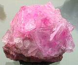<br>
              <font color="#000000"><font size="-1">alun</font></font></p>
          </center>
          <blockquote><i><u><font face="Arial,Helvetica"><font
                    color="#660000"><font size="-1">Généralités</font></font></font></u></i></blockquote>
          <table style="width: 82%; text-align: left; margin-left: auto;
            margin-right: auto;" cols="1" background="fondmarbre.jpg"
            border="0">
            <tbody>
              <tr>
                <td><font face="Arial,Helvetica"><font color="#330033">L
                      '<a  name="alun_roche"></a>alun de roche est un
                      sel minéral styptique qui se trouve souvent dans
                      des terres bitumineuses, dans des </font><font
                      color="#000099">pyrites vitrioliques</font><font
                      color="#330033">, ou dans des </font><font
                      color="#000099">ardoises</font><font
                      color="#330033">, ou pierres </font><font
                      color="#000099">feuilletées</font><font
                      color="#330033">, dont on le retire en calcinant
                      ces matières, les laissant effleurir à l'air
                      libre, les lessivant ensuite, et ajoutant enfin à
                      cette lessive de </font><font color="#000099">l'urine</font><font
                      color="#330033">, ou bien un </font><font
                      color="#000099">alkali fixe</font><font
                      color="#330033"> quelconque, afin d'absorber
                      l'acide surabondant qui empêche la précipitation
                      de l'alun. On le trouve encore dans une espèce de
                      pierre qui naît dans des carrières en plusieurs
                      lieux de l'Europe, comme en France, en Angleterre,
                      en Italie ; il y en a de deux espèces, une appelée
                      alun de Rome, et l'autre, alun de roche. Mais
                      cette distinction que l'on a coutume de faire
                      semble chimérique car une grande partie de l'alun
                      que l'on fouille dans le territoire de Rome, se
                      tire par calcination et lixiviation d'une pierre
                      alumineuse, et est par conséquent de véritable
                      alun de roche, qui ne diffère en rien de l'alun
                      de tout autre pays que par la couleur d un </font><font
                      color="#000099">rouge</font><font color="#330033">
                      faible qu'il emprunte de la terre qui lui sert de
                      base, couleur qui ne change rien à la nature de
                      cette base, et qui n'empêche pas qu'elle soit
                      comme dans toutes les autres espèces d'alun, une
                      pure terre absorbante. L'alun de Rome se présente
                      sous forme de morceaux de grosseur médiocre, de
                      couleur blanche-rougeâtre, luisant et transparent
                      en dedans, d'un goût acide&nbsp;<a
                         name="astringent_3"></a></font><font
                      color="#000099">astringent</font><font
                      color="#330033"> ; cet alun est ordinairement
                      assez net, mais on peut le purifier en le faisant
                      fondre dans de l'eau, filtrant la dissolution, et
                      la faisant évaporer sur le feu. L'autre espèce,
                      appelée alun de roche, ou alun de glace, nous est
                      apportée d'Angleterre en gros morceaux, blancs et
                      luisants, transparents comme du cristal ; son goût
                      et ses qualités sont semblables à l'alun de Rome.
                      Plusieurs matières sont encore appelées alun,
                      comme alumen faccharinum qui est un mélange d'alun
                      de roche, d'eau de rose et de blanc d'oeuf. Le
                      véritable&nbsp;<a  name="alun_plume"></a>alun de
                      plume, qu'on appelle Alumen Scissile, ou </font><font
                      color="#000099">Alumen trichites</font><font
                      color="#330033">, est un minéral formé en petite
                      plante qu'on trouve en Egypte, mais il et très
                      rare. L'alun de plume, que quelques-uns nomment
                      Lapis amianthus est une espèce de talc.</font></font>
                  <br>
                  <font face="Arial,Helvetica"><font color="#330033">Si
                      ayant dissous de l'alun de roche dans de l'eau,
                      l'on y mêle de l'</font><font color="#000099">huile

                      de tartre</font><font color="#330033"> faite par
                      défaillance, il s y fait une ébullition et une
                      coagulation. Lorsque le mélange est étendu dans
                      une suffisante quantité d'eau, il se fait une
                      précipitation, et c'est là un moyen de décomposer
                      l'alun, et d'en séparer la terre absorbante qui
                      lui servait de base, et qui tombe au fond, étant
                      abandonnée par son acide que l'huile de tartre lui
                    </font><font color="#000099">enlève</font><font
                      color="#330033">, pour former avec lui un <b><font
                          size="-1"><a href="../original/sulf-potasse.html">tartre
                            vitriolé</a></font></b>. Si l'on substitue
                      pour opérer cette précipitation </font><font
                      color="#000099">l'alkali </font><font
                      color="#330033">minéral, ou le sel de soude au sel
                      ou à l'huile de tartre, la </font><font
                      color="#000099">liqueur qui surnage</font><font
                      color="#330033"> le précipité fournit par
                      évaporation du </font><b><font size="-1"><a
                          href="../original/salpetre.html#Alkaest"><font
                            color="#000099">sel admirable</font><font
                            color="#330033"> de Glauber</font></a></font></b><font
                      color="#330033"> [sulfate de soude] ; et lorsque
                      l'on emploie un alkali volatil, au lieu d'un
                      alkali fixe pour faire la décomposition de l'alun,
                      la liqueur qui surnage la terre de l'alun qui s
                      est précipitée, donne en la faisant évaporer, un
                      sel armoniacal vitriolique, ou ce qui est la même
                      chose, le sel armoniacal secret de Glauber. Tout
                      ceci prouve donc, à n'en pouvoir douter, que
                      l'alun est un sel neutre composé de l'acide
                      vitriolique uni à une terre absorbante. Mais cette
                      terre est d'une nature particulière, qui ne nous
                      est pas encore parfaitement connue [<span
                        style="color: #006600;">il s'agit de l'alumine</span>].

                      Cette terre lorsqu'elle est unie à l'acide
                      vitriolique sous la forme d'alun, a la propriété
                      de produire avec les matières végétales ou
                      animales, par calcination, une poudre brune qui s
                      enflamme d'elle-même à l'air libre, et que l'on
                      nomme le&nbsp;<a  name="pyrophore"></a></font><font
                      color="#000099">pyrophore</font><font
                      color="#330033"> de M. Homberg. Celui-ci préparait
                      son pyrophore avec l'alun et la matière fécale ;
                      mais on a trouvé depuis que presque toutes les
                      substances végétales ou animales produisaient le
                      même effet avec l'alun.</font></font></td>
              </tr>
            </tbody>
          </table>
          <p><font face="Arial,Helvetica"><font color="#000099">Le point
                important à considérer est la décomposition de l'alun
                afin d'en extraire la terre qui n'est autre que de l'</font><font
                color="#660000">alumine</font><font color="#000099">.
                Cette séparation permet ainsi l'obtention du </font><u><font
                  color="#660000"><a href="#6%29-">Caput</a></font></u><font
                color="#000099"> de l'alun. On est obligé d'introduire
                un agent [<small style="color: rgb(102, 0, 0);">c'est l'</small></font><small
                style="color: rgb(102, 0, 0);">épée</small><font
                color="#000099"><small style="color: rgb(102, 0, 0);">
                  du chevalier</small>] quand on attaque l'alun ; si on
                attaque des schistes alunifères pyriteux, les pyrites
                fournissent directement, par grillage, l'huile de
                vitriol qui permet la séparation de la terre. Pour
                préparer l'alumine à partir de l'alun, voilà comment
                pouvait procéder un alchimiste du XVII<sup>e</sup>
                siècle. Il s'agit d'un extrait de la Chymie
                expérimentale et raisonnée de Baumé ; veuillez noter que
                Baumé appelle l'alun une </font><font color="#660000">sélénite

                vitrifiable</font><font color="#000099"> ; cela doit
                nous rappeler certains textes alchimiques, comme celui
                de </font><font color="#000080">Philalèthe dans son <i><b><font
                      size="-1"><a href="../original/introitus.html">Introitus</a></font></b>
                  (</i></font><i><font color="#660000"><font size="-1"><a
                      href="../original/philalethe-4.html">IV, 2</a> : De l Aimant
                    des Sages</font></font><font color="#000080">)</font></i><font
                color="#000080"> :</font></font> </p>
          <p><font face="Arial,Helvetica"><font size="-1"><font
                  color="#000080">"</font><i><font color="#660000">En
                    outre, je déclare que notre aimant a un centre
                    caché, où gît une abondance de sel. Ce sel est une
                    menstrue dans la sphère de la Lune, et peut calciner
                    l'or.</font></i><font color="#000080">"</font></font></font>
          </p>
          <p><font face="Arial,Helvetica"><font color="#000099">- On met
                dans une terrine vernissée une livre d'alun de Rome avec
                huit onces de miel jaune [</font><font color="#660000"><font
                  size="-1">ou d'un autre composé carboné</font></font><font
                color="#000099">] ; on place le vaisseau dans un
                fourneau chauffé par un feu capable de liquéfier l'alun
                : on remue ce mélange avec une spatule de bois. On le
                fait chauffer jusqu'à ce qu'il devienne sec et
                charbonneux [</font><font color="#660000"><font
                  size="-1">c'est la 1<sup>ère</sup> putréfaction</font></font><font
                color="#000099">] ; on pulvérise ensuite cette matière
                et on la fait calciner à l'air libre dans un creuset
                large et plat, pendant environ une heure ou jusqu'à ce
                que la matière devienne parfaitement blanche et qu'elle
                n'exhale plus de vapeur de soufre ni d'acide sulfureux
                volatil. Par ce moyen, on obtient la terre de l'alun de
                la plus grande blancheur ; on la lave dans beaucoup
                d'eau bouillante et on la fait sécher. On fait plusieurs
                lavages jusqu'à obtenir cette blancheur et la
                disparition de l'odeur typique de l'acide sulfureux.
                Baumé nous précise que l'eau du 1<sup>er</sup> lavage
                était sans couleur et qu'elle avait une saveur de sel
                marin et de <a href="../original/sulf-potasse.html">tartre vitriolé</a>
                ; elle exhalait une odeur de <b><font size="-1">foie de
                    soufre</font></b>. La terre de l'alun, séparée par
                ce moyen, est parfaitement blanche : broyée sur du
                porphyre, elle acquiert une force de liant semblable à
                celui des argiles : elle décrépite au feu et pétille
                comme les argiles ; elle résiste à la plus grande
                violence du feu sans entrer en fusion et sans rien
                perdre de sa blancheur et elle y devient même plus
                blanche. Baumé conclue de cette expérience que l'alun a
                été décomposé par la matière « <i>phlogistique</i> ».
                Cette matière s'est unie à l'acide vitriolique avec
                lequel elle a formé du soufre qui s'est brûlé et dissipé
                à mesure qu'il s'est formé : on le voit brûler pendant
                tout le temps de la calcination.</font></font> </p>
          <p><font face="Arial,Helvetica"><font color="#000099">- Un
                autre moyen d'obtenir la décomposition de l'alun
                consiste à utiliser les <u>terres calcaires</u>. On met
                dans un matras de la dissolution d'alun étendue dans
                beaucoup d'eau ; on ajoute de petits morceaux de pierre
                calcaire : on met le matras à une chaleur douce sur un
                bain de sable. L'acide vitriolique de l'alun dissout la
                terre calcaire et fait précipiter [</font><font
                color="#660000"><font size="-1">cado, cassito</font></font><font
                color="#000099">] la terre de l'alun. On reconnait que
                l'alun est décomposé parce que la liqueur n'a plus la
                saveur de l'alun. On décante la liqueur tandis qu'elle
                est trouble ; on sépare les petits morceaux de terre
                calcaire qui ne se sont point dissous ; on filtre la
                liqueur et l'on passe sur le filtre beaucoup d'eau
                bouillante pour emporter la sélénite qui pourrait être
                mêlée avec la terre que l'on fait sécher. Il semble que
                les pierres calcaires tendres décomposent mieux l'alun
                que les autres. On peut aussi décomposer l'alun par de
                la chaux et par de l'eau de chaux mais on ne peut, par
                ce moyen, obtenir la terre de l'alun dans son état de
                pureté.</font></font> </p>
          <p><font face="Arial,Helvetica"><font color="#000099">- Un
                troisième moyen d'obtenir l'alumine consiste à employer
                de l'argile pure [</font><font color="#660000"><font
                  size="-1">kaolin</font></font><font color="#000099">],
                à la chauffer et à l'attaquer par de l'huile de vitriol
                ; on obtient d'abord par ce procédé du sulfate
                d'alumine. On fait chauffer de l'argile pure, on la
                réduit en poudre sous de smeules et on la mêle avec 45
                parties d'acide sulfurique. On échauffe le mélange dans
                un fourneau à réverbère jusqu'à ce que la masse devienne
                très épaisse ; on la laisse reposer pendant au moins un
                mois et on la traite par l'eau. Si, à présent, on
                utilise une décoction d'argile faite avec de l'eau pure
                et qu'on verse de l'alcali fixe [sel de soude] en
                liqueur, il se fait aussitôt un précipité blanc terreux
                : l'alcali s'unit à l'acide vitriolique de l'argile et
                fait précipiter la terre ; en filtrant cette liqueur et
                en la faisant évaporer, on obtient des cristaux de <font
                  size="-1"><a href="../original/sulf-potasse.html">tartre vitriolé</a></font>.
                On lave la terre qui reste sur le filtre et on la fait
                sécher. Cette terre est semblable à la terre de l'alun.</font></font>
          </p>
          <p><i><u><font face="Arial,Helvetica"><font color="#660000"><font
                      size="-1">Distillation de l alun</font></font></font></u></i>
            <br>
            &nbsp;
            <table style="width: 82%; text-align: left; margin-left:
              auto; margin-right: auto;" cols="1"
              background="fondmarbre.jpg" border="0">
              <tbody>
                <tr>
                  <td><font face="Arial,Helvetica"><font color="#330033">Mettez


                        cinq livres d'alun de Rome dans une grande
                        cucurbite de verre ou de grès, et y ayant adapté
                        un chapiteau et un récipient, distillez au feu
                        de sable tout ce qui pourra monter, vous aurez
                        un </font><font color="#000099">phlegme</font><font
                        color="#330033"> d'alun ; délutez les vaisseaux,
                        et ayant cassé la cucurbite, pulvérisez la masse
                        blanche qui y est restée, et la mettez dans une
                        cornue de grès, de laquelle la moitié demeure
                        vide ; placez votre cornue dans le fourneau de
                        réverbère clos, et y ayant adapté un grand
                        ballon, lutez exactement les jointures, faites
                        dessous un très petit feu pendant trois heures,
                        pour échauffer la cornue ; augmentez ensuite le
                        feu d'heure en heure jusqu à la dernière
                        violence, les esprits sortiront, et ils
                        rempliront le ballon de </font><font
                        color="#000099">nuages blancs</font><font
                        color="#330033"> : il faut continuer le feu en
                        cet état pendant trois jours, puis laisser
                        refroidir les vaisseaux, vous trouverez dans le
                        ballon huit onces d'esprit acide que vous
                        pourrez rectifier, en le faisant distiller dans
                        un alambic de verre au feu de sable, afin de le
                        rendre plus clair. Cet acide est plus
                        désagréable que celui de vitriol et cela lui
                        vient d'un reste de stypticité qu il a
                        conservé à raison de la terre qui lui servait de
                        base, dont il a entraîné une petite portion dans
                        la distillation. Cassez la cornue, et vous
                        trouverez dedans une masse blanche, fort
                        raréfiée et légère ; c est ce que l'on appelle
                      </font><font color="#000099">Alun brûlé</font><font
                        color="#330033"> ou calciné. La qualité </font><font
                        color="#000099">rongeante</font><font
                        color="#330033"> de l'alun calciné montre
                        évidemment que cet alun n'a perdu qu'une partie
                        de son acide, et que ce qu'il en a retenu y est
                        dans un grand degré de concentration, et reste
                        opiniâtrement uni avec la base terreuse, sans
                        pouvoir en être entièrement séparé par la seule
                        action du feu, faute d'une quantité suffisante
                        d'humidité nécessaire pour faciliter son
                        dégagement. La distillation de l'alun se doit
                        faire comme celle du vitriol, c'est-à-dire sans
                        addition de terre, parce que les sels de cette
                        nature en contiennent assez. Il faut que la
                        cucurbite dans laquelle on mettra l'alun soit
                        bien grande, parce qu'il se raréfie
                        extrêmement.</font></font></td>
                </tr>
              </tbody>
            </table>
            <br>
            &nbsp; </p>
          <center>
            <p><a  name="7)-"></a><u><font color="#660000"><font
                    size="+1"><font face="Arial,Helvetica">7)- La rosée
                      de mai [l'</font><font face="Symbol">ioV</font><font
                      face="Arial,Helvetica"> des Sages]</font></font></font></u></p>
          </center>
          <p><font face="Arial,Helvetica"><font color="#000099">Nous
                avons vu dans une autre section que le <font size="-1"><a
                    href="../original/salpetre.html#Alkaest">sel de Glauber</a></font>
                n'est pas sans intérêt dans l'oeuvre. Il nous faut ici
                reparler du <font size="-1"><a
                    href="../original/carbon-potasse.html#natron">natron</a></font>
                qui était consacré chez les Anciens au lessivage et à
                quelques opérations industrielles. Du reste, c'est ce
                sel dont parle N. Lémery quand il évoque l'alkali
                minéral. Le verre était fabriqué par les Phéniciens, les
                Egyptiens et les Romains, avec le </font><font
                color="#660000">natron</font><font color="#000099">
                d'Egypte. Une opinion très répandue attribue aux
                Phénitiens la découverte du verre. Des marchands de </font><font
                color="#660000">natron</font><font color="#000099">
                auraient, par hasard, fabriqué pour la première fois un
                véritable verre, en faisant cuire leurs aliments sur le
                sable du rivage en se servant de deux blocs de natron
                pour supporter leur marmite. L'action de la chaleur,
                déterminant la combinaison de la silice du sable avec le
                principe actif du natron, aurait produit une substance
                vitreuse transparente et fusible, qui n'était autre
                chose que le verre : nous ne sommes pas loin de l'</font><font
                color="#660000">Art Sacré</font><font color="#000099">
                des prêtres égyptiens ni de l'art du simple potier...
                Louis Figuier, dans les <b><i><font size="-1">Merveilles


                      de l'Industrie</font></i></b>, a une conception
                plus prosaïque et estime que la connaissance du verre
                par les hommes est bien plus ancienne que l'existence
                même du peuple phénicien et que l'on doit reporter aux
                temps préhistoriques la connaissance du verre, jusqu'à
                l'époque de l'humanité primitive</font></font> </p>
          <p><font face="Arial,Helvetica"><font color="#000099">[</font><font
                color="#660000"><font size="-1">par parenthèse, nous
                  retrouvons ici une idée d'<a
                    href="../original/symb-dir-prim.html#Newton_index">Isaac Newton</a>
                  qui estimait que les Anciens, de toute éternité,
                  possédaient une </font><i><small>prisca sapientia</small><font
                    size="-1">, c'est-à-dire la sagesse accordée aux
                    Anciens par la révélation divine : pour Newton, en
                    effet, les vérités réelles s'incarnaient dans les <u>mythes</u>,
                    les <u>fables</u> et les <u>prophéties</u>. Cette
                    sagesse, dissimulée sous des formulations
                    ésotériques, pouvait être « récupérée » par des
                    méthodes rationnelles -du moins est-ce ce que nous
                    tentons de faire ici ; au lecteur d'apprécier la
                    pertinence de notre démarche- , et tout savoir
                    découvert par une autre méthode - expérimentation,
                    induction, raisonnement mathématique, tels que
                    Newton les appliqua au domaine de la physique-
                    pouvait toujours s'accorder avec les connaissances
                    héritées de l'Antiquité et préservées sous une forme
                    prétendument « occulte ». Il est notoire, à présent
                    qu'une critique historique saine a rendu force et
                    raison aux travaux alchimiques de Newton,
                    c'est-à-dire compris comme un lien épistémologique</font>
                  :</i></font></font> </p>
          <p><font face="Arial,Helvetica"><font size="-1"><font
                  color="#660000">" </font><i><font color="#000099">l'alchimie

                    de Newton est le lien historique entre l'hermétisme
                    de la Renaissance et la chimie et la mécanique
                    rationnelles du XVIII<sup>e</sup> siècle</font><font
                    color="#660000">"</font></i></font></font> </p>
          <p><font face="Arial,Helvetica"><font color="#660000"><font
                  size="-1">que Newton a interprété à partir des mythes
                  :</font></font></font> </p>
          <p><i><font face="Arial,Helvetica"><font size="-1"><font
                    color="#660000">" .</font><font color="#000099">..
                    Les anciens philosophes, qui savaient ce qu'étaient
                    les atomes et le vide, attribuaient la pesanteur aux
                    atomes, mais ils ne nous disent rien quant aux
                    moyens, sauf par des figures : comme par exemple en
                    donnant le nom d'harmonie à Dieu, en le représentant
                    lui et la matière comme le dieu Pan et sa flûte...</font><font
                    color="#660000">"</font></font></font></i><font
              face="Arial,Helvetica"><font color="#660000"><font
                  size="-1"> (in <b><i>Traité d'optique</i></b>, MS
                  Add. 3970, F. 619)</font></font></font> </p>
          <p><font face="Arial,Helvetica"><font color="#660000"><font
                  size="-1">Newton considérait donc que certains mythes
                  étaient porteurs de secrets alchimiques et à plusieurs
                  reprises, il eut recours à la trame historique d'un
                  mythe pour déterminer un processus expérimental</font></font><font
                color="#000080">].</font></font> </p>
          <p><font face="Arial,Helvetica"><font color="#000080">Il n'a
                pas été le seul à supposer que les mythes aient pu avoir
                une origine hermétique : Dom Pernety [<small><a
                    href="../original/humide-radical.html">1</a>, <a
                    href="../original/oeuvre.html">2</a>, <a href="../original/char.html">3</a>,
                  <a href="../original/cosmopolite-1.html">4</a></small>] a consacré
                plus de deux mille pages à cette interprétation. Nous
                prévenons toutefois le lecteur contre les dangers d'une
                interprétation excessive que ne peut manquer de susciter
                l'image éidétique produite par une fable ou un mythe.
                Hélas ! Force est de constater que Dom Pernety -
                comme&nbsp; pour le <a href="../original/tarot-alchimie.html">tarot</a>
                Court de Gébelin - ont versé entièrement dans l'ornière
                cabalistique...</font></font> </p>
          <p><font face="Arial,Helvetica"><font color="#000080">Refermons

                cette parenthèse.</font></font> </p>
          <p style="margin-left: -10px; width: 793px;"><font
              face="Arial,Helvetica"><font color="#000080">Ainsi, parmi
                tous les </font><font color="#006600">tumuli</font><font
                color="#000080"> aussi bien que dans les fonds des lacs,
                c'est-à-dire les anciennes habitations lacustres,
                figurent assez souvent des grains de verre, des espèces
                de perles grossières, composées d'un verre bleu ou
                noirâtre. Ce fait recule à une distance considérable la
                première connaissance du verre par les hommes. Cette
                découverte du verre pose néanmoins un problème
                historique dans la mesure où elle implique la
                connaissance de la métallurgie du fer -</font><font
                color="#660000"><font size="-1"> dont F. Hoefer nous
                  rappelle qu'elle est bien <u>postérieure</u> à la
                  connaissance de l'or, de l'argent ou même du cuivre </font></font><font
                color="#000080">- ; cependant, dans la métallurgie du
                bronze, les gangues des minerais produisent, sous
                l'influence de la chaleur, de véritables verres. Les </font><font
                color="#660000">scories</font><font color="#000080"> -</font><font
                color="#660000"><font size="-1"> qui ont en alchimie une
                  importance symbolique extrême</font></font><font
                color="#000080"> - qui acompagnent toujours la
                préparation du bronze [</font><font color="#660000"><font
                  size="-1">et du fer</font></font><font color="#000080">],

                et qui portent le nom [</font><font color="#660000"><font
                  size="-1">très important sur le plan symbolique en
                  alchimie]</font></font><font color="#000080"> de </font><font
                color="#660000">laitiers</font><font color="#000080">,
                ne sont autre chose qu'un verre très fusible. Or, les
                laitiers se rapprochent grandement des Mercures
                philosophiques [</font><font color="#660000"><font
                  size="-1">cf. la <a href="../original/imitat-prec.html">section</a></font></font><font
                color="#000080">] car il s'agit de mélanges de silicates
                alcalins ou terreux, colorés en vert ou en noir par le
                fer, le cuivre ou le manganèse [</font><font
                color="#660000"><font size="-1">remarquons bien ces
                  trois métaux et notons que le manganèse est aussi
                  appelé caméléon par Gay-Lussac]</font></font><font
                color="#000080">. Ces laitiers n'ont pas la transparence
                du verre [</font><font color="#660000"><font size="-1">c'est

                  un point capital dans la formation de la <a
                    href="../original/compendium.html">Pierre</a></font></font><font
                color="#000080">] car ils contiennent beaucoup
                d'impuretés [</font><font color="#660000"><font
                  size="-1">qui constituent ici une qualité essentielle</font></font><font
                color="#000080">] mais ils n'en sont pas moins des
                verres. La seule inspection des scories qui accompagnent
                les débris trouvés dans les anciennes fonderies de fer
                du Jura bernois [</font><font color="#660000"><font
                  size="-1">voir : Quiquerez, <b><i>Recherches sur les
                      anciennes forges du Jura bernois</i></b>, Berne,
                  1866</font></font><font color="#000080">] montre que
                ces matières sont de véritables verres noirâtres et très
                fusibles. C'est le lieu de citer ici un passage capital
                de l'histoire naturelle de Pline [</font><font
                color="#660000"><font size="-1">extrait du <b><i>Guide
                      du verrier</i>,</b> M. Bontemps</font></font><font
                color="#000080">] :</font></font> <br>
            &nbsp; </p>
          <center>
            <table style="width: 78%; text-align: left; margin-left:
              auto; margin-right: auto;" cols="1"
              background="fondmarbre.jpg" border="0">
              <tbody>
                <tr>
                  <td style="margin-left: -50px;"><font
                      face="Arial,Helvetica">Il est une partie de la
                      Syrie, limitrophe de la Judée, qu'on appelle
                      Phénicie, où se trouve au pied du Carmel, un lac
                      nommé <font color="#000099">Candeboea</font>
                      qu'on croit être la source du fleuve <font
                        color="#000099">Bélos</font>, qui, après un
                      cours de trois mille pas seulement, se jette dans
                      la mer près de Ptolémaïs. Ce fleuve est profond et
                      peu rapide ; ses eaux sont bourbeuses et
                      insalubres, et toutefois honorées d'un culte. Il
                      ne dépose de sable sur ses bords que lorsqu'il a
                      été refoulé par les eaux de la mer. Ce sable qui,
                      avant d'avoir été agité par les vagues, n'eût eu
                      aucun usage, devient <font color="#000099">pur et
                        blanc</font>, et doit à ce lavage la propriété
                      d'être employé pour la fabrication du verre. Le
                      rivage où il se dépose n'a que cinq cents pas de
                      longueur, et cependant, depuis bien de siècles, il
                      n'a pas cessé d'être la féconde mine qui a
                      alimenté les <font color="#000099">verreries</font>.&nbsp;</font>
                    <font face="Arial,Helvetica">La tradition rapporte
                      que des marchands de natron qui prirent terre sur
                      cette plage, voulant cuire leurs aliments, et ne
                      trouvant pas de pierre sur le rivage pour servir
                      de trépied à leur chaudière, y suppléèrent avec
                      des blocs de natron, qu'ils tirèrent de leur
                      vaisseau qui en était chargé. Le natron entrant en
                      fusion par l'ardeur du feu, et s'étant mêlé au
                      sable de la plage, on vit couler un liquide
                      nouveau et transparent formé de ce mélange : d'où
                      vient, dit-on, l'origine du <font color="#000099">verre</font>.</font></td>
                </tr>
              </tbody>
            </table>
          </center>
          <p><font face="Arial,Helvetica"><font color="#000099">Strabon
                et Tacite ont particulièrement insisté sur ce fait que
                le sable qui borde la rive du fleuve Bélos [</font><font
                color="#660000"><font size="-1">ou Bélus</font></font><font
                color="#000099">], en Phénicie, était réputé le plus
                convenable pour servir à la préparation du verre.
                Théophraste nous apprend que de très nombreuses
                verreries étaient établies vers l'embouchure de ce
                fleuve de la Phénicie, qui se jette dans la Méditerranée
                près de Ptolémaïs. Ces verreries allaient
                s'approvisionner de sable aux bords du Bélos.
                L'historien Josèphe nous dit encore :</font></font> <br>
            &nbsp; </p>
          <center>
            <table style="width: 80%; text-align: left; margin-left:
              auto; margin-right: auto;" cols="1"
              background="fondmarbre.jpg" border="0">
              <tbody>
                <tr>
                  <td><font face="Arial,Helvetica"><font color="#000000">A
                        deux stades de Ptolémaïs, coule un très petit
                        fleuve, le </font><font color="#000099">Bélos</font><font
                        color="#000000">, auprès duquel on voit le
                        tombeau de </font><font color="#000099">Memnon</font><font
                        color="#000000">. Dans son voisinage, on observe
                        une chose bien extraordinaire : c'est une fosse
                        circulaire de cent coudées, remplie de </font><font
                        color="#000099">sable vitrifiable</font><font
                        color="#000000">. Des navires en grand nombre
                        viennent en prendre leur charge et ne l'épuisent
                        pas, car les vents...y en rapportent à mesure
                        qu'on en enlève ; et dès que le sable est dans
                        cette fosse, il se change en verre. Mais ce qui
                        me paraît vraiment étonnant, c'est que ce verre,
                        hors de la fosse, se résout aussitôt et
                        redevient sable. Telle est la nature de ce lieu.</font></font></td>
                </tr>
              </tbody>
            </table>
          </center>
          <p><font face="Arial,Helvetica"><font color="#000099">Dans
                l'ouvrage intitulé le <b><i><font size="-1">Guide du
                      verrier</font></i></b>, M. Bontemps explique que
                ce sable venait à se recouvrir de cristaux de sel par
                suite de l'évaporation de l'eau de mer, lesquels
                disparaissaient dans la masse quand on retirait le sable
                de la fosse. L'antique fleuve de Bélos s'appelle à
                présent le </font><font color="#006600">Nahr-Halou</font><font
                color="#000099"> ; le sable de Bélos était donc très
                recherché des verriers de l'antiquité, il était pur,
                brillant et devait peut-être au sel marin qu'il
                contenait qelques-unes des qualités qui le faisaient
                tant estimer. La fabrication du verre [</font><font
                color="#990000"><font size="-1">J. Gardner Wilkinson : <b><i>Moeurs

                      et Coutumes des anciens Egyptiens</i></b></font></font><font
                color="#000099">] existait en Egypte, plus de 2000 ans
                avant notre ère, bien avant que le peuple hébreu fût
                sorti d'Egypte. On a notamment retrouvé un grain de
                collier en pâte de verre à Thèbes, avec une légende
                hiéroglyphique moulée circulairement et en creux sur ce
                verre :</font></font> </p>
          <p><i><font face="Arial,Helvetica"><font size="-1"><font
                    color="#000099">"</font><font color="#660000">La
                    bonne déesse Râ-mâ-kâ aimée d'Athor, protectrice de
                    Thèbes.</font><font color="#000099">"</font></font></font></i>
          </p>
          <p><font face="Arial,Helvetica"><font color="#000099">Or,
                Râ-mâ-kâ est le prénom de la reine Hatasou, régente de
                Thoutmosis III, qui régnait quinze siècles avant J.-C. ;
                cette date correspond à 3367 ans avant J.-C. Le verre
                parfaitement incolore que l'on trouve dans beaucoup de
                sarcophages égyptiens, prouve que l'art de fabriquer le
                verre était très perfectionné chez les Egyptiens. La
                présence d'un </font><font color="#006600">oxyde
                métallique</font><font color="#000099"> dans le sable ou
                dans le natron amenait une coloration du verre, qui
                variait selon la nature de l'oxyde.</font></font> </p>
          <p><b><font color="#000099"><font size="-1"><font
                    face="Arial,Helvetica">Corrélat alchimique</font></font></font></b>
          </p>
          <blockquote><font face="Arial,Helvetica"><font color="#000099">Cette


                preuve que la connaissance du verre est très ancienne
                est un argument de poids en faveur du fait que les
                prêtres égyptiens avaient la possibilité de réaliser des
                milliers d'expériences, en variant les quantités de
                natron impur [</font><font color="#660000"><font
                  size="-1">coloré par un oxyde</font></font><font
                color="#000099">], de sable, etc. Si on ajoute à ces
                connaissances, l'art de traiter la terre pour fabriquer
                des poteries, les ingrédients sont réunis pour réaliser
                des <font size="-1"><a
                    href="../original/philalethe-7.html#gla%C3%A7ures%20cristallines">glaçures</a></font>
                où des cristallisations [</font><font color="#660000"><font
                  size="-1">considérées d'habitude comme des défauts</font></font><font
                color="#000099">] peuvent apparaître. Par exemple, le
                nitre impur était utilisé pour colorer en pourpre ou
                dans toutes sortes de teintures ; il servait aussi dans
                la fabrication du verre, de la chrysocolle ; dans la
                fabrication du bleu égyptien dont nous parlons plus bas,
                le natron servait d'agent de fusion.<br>
                <br>
              </font></font></blockquote>
        </blockquote>
        <blockquote>
          <center><a  name="8)-"></a><u><font face="Arial,Helvetica"><font
                  color="#660000"><font size="+1">8)- L'alchimie :
                    postulats et but<br>
                    <br>
                  </font></font></font></u></center>
          <p><font face="Arial,Helvetica"><font color="#000099">Nous
                allons essayer, munis de tous les renseignements que
                nous avons collectés, de faire le point d'abord sur le
                but réel poursuivi par les alchimistes, ensuite de
                passer en revue les matières premières qu'ils pouvaient
                utiliser compte tenu de leurs connaissances ; cela est
                essentiel car ils ont dû utiliser un ou plusieurs métaux
                qui leur étaient inconnus et comme nous l'avons dit plus
                haut, il est possible qu'ils aient ainsi cru extraire un
                ou plusieurs « </font><i><font color="#660000"><font
                    size="-1">Mercures</font></font></i><font
                color="#000099"> » des minéraux qu'ils calcinaient ou
                dissolvaient. Mais, en premier lieu, il convient de
                formuler un certain nombre de postulats. Ils heurteront
                forcément les tenants d'une alchimie traditionnelle à la
                recherche de la transmutation métallique, ou d'une
                alchimie purement spéculative et psychanalytique - celle
                de C.G. Jung par exemple - ou encore d'une alchimie
                moderne qui croit possible l'utilisation d'éléments
                super-lourds par le biais de phénomènes mettant en jeu
                la fusion froide. Voyez aussi d'autres considérations
                dans notre préambule à la <font size="-1"><a
                    href="../original/etain.html">voie humide</a></font>.</font></font></p>
        </blockquote>
        <blockquote><font color="#000099"><b><font size="-1"><span
                  style="font-family: Wingdings;">- </span><font
                  face="Arial,Helvetica">Postulat n°1</font></font></b><font
              face="Arial,Helvetica"> : il n'y a jamais eu de </font></font><font
            face="Arial,Helvetica"><font color="#006600">transmutation</font><font
              color="#000099"> métallique de quelque métal que ce soit
              en or. Il est rigoureusement impossible que les
              alchimistes aient pu réaliser une transmutation atomique à
              grande échelle, ne serait-ce qu'en raison des conditions
              de température infiniment trop basses qu'ils pouvaient
              créer dans leurs fourneaux... Bien sûr, on ne peut pas
              passer sous silence les quelques cas où des <u>doutes
                favorables</u> subsistent, mai à la lumière des données
              scientifiques actuelles, il n'est pas possible que les
              alchimistes aient pu « synthétiser » l'or. Toutefois, il
              faut étudier le sujet : ces cas de transmutation ont été
              analysés très finement dans au moins deux ouvrages ; celui
              de Georges Ranque d'abord (op. cité) et celui de Bernard
              Husson [</font><font color="#660000"><font size="-1"><b><i>Transmutations


                    alchimiques</i></b>, J'ai Lu, 1974</font></font><font
              color="#000099">]. Sur le plan historique, il faut aussi
              se référer aux ouvrages de Marcellin Berthelot -</font><font
              color="#660000"><font size="-1"> qui en dehors de ses
                synthèses chimiques de composés organiques </font></font><font
              color="#000099">- s'est intéressé à l'alchimie et a
              collectionné les vieux textes</font></font>
          <p><font face="Arial,Helvetica"><font color="#000099">[</font><font
                color="#660000"><font size="-1">il a notamment publié la
                  <b><i>Collection des alchimistes grecs</i></b> avec la
                  collaboration d'un savant helléniste, Ch.-Em. Ruelle,
                  vaste publication formant environ 1300 pages de texte
                  in-4°, avec variantes, traductions, introduction,
                  tables, index, notes et commentaires perpétuels, chez
                  Steinheil, 1887-1888</font></font><font
                color="#000099">].</font></font> </p>
          <center>
            <p>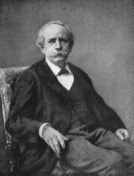<br>
              <font size="-1">Marcellin Berthelot</font></p>
          </center>
          <p><font face="Arial,Helvetica"><font color="#000099">Il met
                notamment en lumière dans son <i><b><font size="-1"><a
                        href="../original/origine-alchimie.html">Origine de
                        l'alchimie</a></font></b> </i>[</font><font
                color="#660000"><font size="-1">Steinheil, 1885</font></font><font
                color="#000099">] l'importance accordée à l'art de
                colorer les verres, art congénaire de l'art de colorer
                les métaux. Plusieurs extraits valent d'être cités :</font></font>
          </p>
          <p><i><font face="Arial,Helvetica"><font size="-1"><font
                    color="#000099">"</font><font color="#660000">
                    Sénèque rappelle également les connaissances
                    pratiques de Démocrite sur l' art de colorer les
                    verres, art congénère de l'art de colorer les métaux
                    : " il avait trouvé le moyen d' amollir l'ivoire, de
                    changer le sable en émeraude par la cuisson et son
                    procédé est encore suivi de nos jours </font><font
                    color="#000099">"</font></font></font></i> </p>
          <p><font face="Arial,Helvetica"><font color="#000099">Notons
                ici que Berthelot fait référence au pseudo-Démocrite (<a
                  href="../original/prima-materia.html#3">1</a>) qui n'a rien à voir
                avec le philosophe que nous connaissons. Pline vante
                l'habileté des verriers de Sidon, qui savaient coulet et
                mouler le verre et en fabriquer des objets très
                volumineux :</font></font> </p>
          <p><i><font face="Arial,Helvetica"><font size="-1"><font
                    color="#000099">" I</font><font color="#660000">l y
                    avait au témoignage d'Hérodote et de Théophraste,
                    dans le temple d'Hercule à Tyr, une colonne faite,
                    dit-on, d'une seule émeraude, laquelle jetait un
                    éclat extraordinaire.</font><font color="#000099">"</font></font></font></i>
          </p>
          <p><font face="Arial,Helvetica"><font color="#000099">Cette
                colonne ne pouvait être composée d'une autre matière que
                de verre coloré. On peut en dire autant de la statue de
                Sérapis, haute de neuf coudées, dont parle Appien.</font></font>
          </p>
          <p><i><font face="Arial,Helvetica"><font size="-1"><font
                    color="#000099">"</font><font color="#660000">Diogène

                    Laerce attribue à Démocrite des traités sur le suc
                    des plantes (cités aussi par Pétrone), sur les
                    pierres, les minéraux, les couleurs, les métaux, la
                    teinture du verre, etc. Sénèque dit encore que
                    Démocrite avait découvert les procédés suivis deson
                    temps pour amollir l' ivoire, préparer l' émeraude
                    artificielle, colorer les matières vitrifiées : ...
                    etc.</font><font color="#000099">"</font></font></font></i>
          </p>
          <p><font face="Arial,Helvetica"><font color="#000099">Ou
                encore ce passage en relation avec les pierres
                précieuses et peut-être aussi avec la connaissance du
                cobalt par les Egyptiens :</font></font> </p>
          <p><i><font face="Arial,Helvetica"><font size="-1"><font
                    color="#000099">"</font><font color="#660000">Or, le
                    chesbet et le mafek ne désignent pas des métaux au
                    sens moderne, mais des minéraux colorés, dont le nom
                    a été souvent traduit par les mots de saphir et d'
                    émeraude. En réalité, le nom de chesbet ou chesteb
                    s' applique à tout minéral bleu, naturel ou
                    artificiel, tel que le lapis-lazuli, les émaux bleus
                    et leur poudre, à base de cobalt ou de cuivre, les
                    cendres bleues, le sulfate de cuivre, etc. Le
                    chesbet est figuré comme objet précieux sur les
                    monuments, dans les corbeilles et dans les bourses
                    qui y sont dessinées : on l' aperçoit parfois en
                    longs blocs quadrangulaires et en masses de
                    plusieurs livres. Il a servi à fabriquer des
                    parures, des colliers, des amulettes, des
                    incrustations, qui existent dans nos musées. Il
                    personnifie la déesse multicolore, représentée
                    tantôt en bleu, tantôt en vert, parfois en jaune, c'
                    est-à-dire la déesse Hathor, et plus tard, par
                    assimilation, Aphrodite (<a
                      href="../original/symb-dir-prim.html#d">1</a>), la
                    déesse grecque, et aussi Cypris, la divinité
                    phénicienne de Chypre, qui a donné son nom au
                    cuivre. Les annales de Thoutmosis III distinguent le
                    vrai chesbet (naturel) et le chesbet artificiel. L'
                    analyse des verres bleus qui constituent ce dernier,
                    aussi bien que celle des peintures enlevées aux
                    monuments, ont établi que la plupart étaient colorés
                    par un sel de cuivre. Quelques-uns le sont par du <u>cobalt</u>,
                    comme l' indique l' <b><a
                        href="../original/add-chevreul-hoefer.html">histoire de la
                        chimie</a></b> de Hoefer, et comme le montre l'
                    analyse des perles égyptiennes faite par M Clemmer.
                    Ce résultat est conforme aux faits reconnus par Davy
                    pour les verres grecs et romains. Théophraste semble
                    même parler explicitement du bleu de cobalt, sous le
                    nom de bleu mâle, opposé au bleu femelle.
                    Théophraste distingue également le cyanos autophyès
                    , ou bleu naturel, venu de Scythie (lapis-lazuli) et
                    le cyanos sceuastos , ou imitation, fabriquée depuis
                    l'époque d'un ancien roi d'égypte, et obtenue en
                    colorant une masse de verre avec un minerai de
                    cuivre pris en petite quantité. Le bleu imité devait
                    pouvoir résister au feu ; tandis que le bleu non
                    chauffé apyros , c'est-à-dire le sulfate de cuivre
                    naturel, ou plutôt l' azurite, n'était pas durable.
                    Vitruve donne encore le procédé de fabrication du
                    bleu d' Alexandrie, au moyen du sable, du natron et
                    de la limaille de cuivre, mis en pâte, puis
                    vitrifiés au feu : recette qui se trouve dans les
                    alchimistes grecs...</font><font color="#000099">"</font></font></font></i>
          </p>
          <p><font face="Arial,Helvetica"><font color="#000099">Le
                natron correspond au carbonate de soude et le sable
                contient de la silice : nous ne sommes pas loin des
                synthèses minéralogiques (<a
                  href="../original/imitat-prec.html#min%C3%A9ralog">1</a>) réalisées au
                XIX<sup>e</sup> siècle.</font></font> <br>
            &nbsp; </p>
          <center>
            <table style="width: 75%; text-align: left; margin-left:
              auto; margin-right: auto;" cols="1"
              background="fondmarbre.jpg" border="0">
              <tbody>
                <tr>
                  <td><b><i><font face="Arial,Helvetica"><font
                            color="#660000"><font size="-1">chapitre 11
                              :&nbsp;<a  name="Bleu"></a>Bleu</font></font></font></i></b>
                    <p><font face="Arial,Helvetica">La fabrication du <font
                          color="#000099">bleu céruléen</font> a été
                        mise au point à alexandrie, et plus tard
                        Vestonius en a fondé une fabrique à Pouzzoles.
                        C'est un produit tout à fait étonnant par les
                        ingrédients à partir desquels il a été mis au
                        point. On broie en effet du sable avec de la <font
                          color="#000099">fleur de nitre</font>, assez
                        finement pour obtenir une sorte de farine ; et,
                        lorsqu'on y a mélangé du cuivre réduit à l'état
                        de limaille,on arrose le tout, pour qu'il
                        s'agglomère...on les met dans un pot de terre
                        cuite, et les pots sont portés dans des fours :
                        ainsi, quand le cuivre et le sable entrant en
                        effervescence...se sont fondus ensemble, en se
                        donnant l'un à l'autre et en recevant l'un de
                        l'autre leurs sueurs ils abandonnent leurs
                        caractères individuels, et, leur être propre
                        anéanti par la violence du feu, ils sont réduits
                        à l'état de couleur bleue.</font></p>
                  </td>
                </tr>
              </tbody>
            </table>
          </center>
          <center><i><font face="Arial,Helvetica"><font color="#000099"><font
                    size="-1">extrait de Vitruve : <b>De Architectura</b>,
                    livre VII, 11, 1</font></font></font></i></center>
          <p><font face="Arial,Helvetica"><font color="#000099">Ce texte
                est étonnant en ce qu'on y retrouve exactement la même
                terminologie que nous donnent à lire les textes
                alchimiques, en particulier ce passage :</font></font> </p>
          <p><font face="Arial,Helvetica"><font size="-1"><font
                  color="#000099">« </font><i>se sont fondus ensemble,
                  en se donnant l'un à l'autre et en recevant l'un de
                  l'autre leurs <u><font color="#000099">sueurs</font></u>
                  ils abandonnent leurs caractères individuels, et, leur
                  <u>être propre</u> anéanti par la violence du feu</i></font></font><i>
            </i><font face="Arial,Helvetica"><font color="#000099"><font
                  size="-1">»</font></font></font> </p>
          <p><font face="Arial,Helvetica"><font color="#000099">que l'on
                croirait extrait d'un texte de B. Valentin ou de
                Philalèthe. Il vaut qu'on s'y arrête un peu. On décrit
                trois bleus différents : le bleu de Chypre, </font><font
                color="#006600">caeruleum Cyprium</font><font
                color="#000099"> [</font><font color="#990000"><font
                  size="-1">identifié à l'azurite</font></font><font
                color="#000099">], à rapprocher de l'armenium de Vitruve
                ; le bleu de Scythie, </font><font color="#006600">caeruleum

                Scythicum</font><font color="#000099"> [</font><font
                color="#660000"><font size="-1">identifié au
                  lapis-lazuli</font></font><font color="#000099">] et
                le bleu égyptien. Il semble, et c'est là le point le
                plus intéressant, que le bleu égyptien soit assimilable
                à la </font><font color="#006600">chrysocolle
                artificielle</font><font color="#000099">, obtenue par
                mélange de luteum et de caeruleum : c'est un pigment
                stable et on l'utilisait en sous-couche du purpurissum
                afin d'obtenir une couleur </font><font color="#006600">pourpre</font><font
                color="#000099"> éclatante. Ce bleu n'a d'alexandrin que
                le nom car on le connaissait bien avant la fondation
                d'Alexandrie [</font><font color="#660000"><font
                  size="-1">fouilles diverses en Mésopotamie, en Crète,
                  à Mycènes, en Grèce classique</font></font><font
                color="#000099">]. Le bleu égyptien fut progressivement
                abandonné, par concurrence de la </font><font
                color="#006600">pâte de verre</font><font
                color="#000099"> à partir du règne de Tibère. Au plan
                chimique, le bleu égyptien est un silicate de cuivre et
                de calcium </font><font color="#660000"><font size="-1">CaO

                  CuO 4SiO<sub>2</sub></font></font><font
                color="#000099">, à composition cristalline : porté à
                850°C, il se présente sous forme de pâte malléable mais
                n'est pas une pâte de verre, même s'il en a la
                ressemblance vitreuse [</font><font color="#660000"><font
                  size="-1">des analyses ont montré qu'il ne s'agissait
                  pas d'un produit vitrifié</font></font><font
                color="#000099">] ; c'est ce qui lui a valu, depuis
                Chaptal et Davy, la dénomination courante mais inexacte
                de « <i>bleu de fritte</i> » ou «<i> fritte égyptienne</i>
                », de l'anglais « <i>frit</i> »</font></font> </p>
          <p><font face="Arial,Helvetica"><font color="#000099">[</font><font
                color="#660000"><font size="-1">opération de fusion
                  destinée à obtenir les substances qui peuvent servir
                  de « couvertes » à la céramique et aux smalts, verres
                  colorés en bleu par l'oxyde de cobalt ; le smalt est à
                  rapprocher de la smaltine, arséniure naturel de cobalt
                  qu'on emploie pour colorer la porcelaine, le verre et
                  les émaux</font></font><font color="#000099">].</font></font>
          </p>
          <p><font face="Arial,Helvetica"><font color="#000099">A propos
                enfin, de la violence du feu, des expériences tentées
                depuis plus d'un siècle ont démontré que la température
                du four doit s'élever entre 800°C et 900°C, car </font><font
                color="#006600">au-delà</font><font color="#000099">,
                l'amalgame se vitrifie et devient vert.</font></font> </p>
          <p><b><font color="#000099"><font size="-1"><font
                    face="Arial,Helvetica">Corrélat alchimique</font></font></font></b>
          </p>
          <blockquote><font face="Arial,Helvetica"><font color="#000099">Vitruve


                donne la technique pour créer un amalgame de synthèse, à
                l'identique de la nature [</font><font color="#660000"><font
                  size="-1">chrysocolle artificielle</font></font><font
                color="#000099">] utilisé pour ses propriétés
                colorantes. Il n'est pas jusqu'à la température du four
                qui n'évoque quelque technique alchimique [</font><font
                color="#660000"><font size="-1">les Adeptes ne
                  conseillent-ils pas d'éviter de « brûler les fleurs »</font></font><font
                color="#000099">]. Il n'est pas impossible d'imaginer
                que les prêtres égyptiens, dans les temples de Memphis,
                à force d'expérimentations, aient pu réaliser des
                synthèses analogues, peut-être beaucoup plus complexes,
                dont ils se sont transmis les procédés d'obtention de
                génération en génération ; il ne s'agit, bien sûr, que
                d'une hypothèse de travail...</font></font></blockquote>
          <font face="Arial,Helvetica"><font color="#000099">Revenons à
              Marcellin Berthelot :</font></font>
          <p><i><font face="Arial,Helvetica"><font size="-1"><font
                    color="#000099">"</font><font color="#660000">Remarquons

                    également l'imitation d' un minéral naturel par
                    l'art, qui met en regard le produit naturel et le
                    produit artificiel : cette imitation offre des
                    degrés inégaux dans les qualités et la perfection du
                    produit. Enfin nous y apercevons une nouvelle
                    notion, celle de la teinture ; car l' imitation du
                    saphir naturel repose sur la coloration d' une
                    grande masse, incolore par elle-même, mais
                    constituant le fond vitrifiable, que l' on teint à
                    l' aide d' une petite quantité de substance
                    colorée..."</font></font></font></i> </p>
          <p><font face="Arial,Helvetica"><font color="#000099">Nous
                sommes ici au coeur de notre sujet ; il est clair que la
                « <i>teinture</i> » évoquée ne constitue en aucune
                manière un procédé frauduleux mais qu'au contraire la
                masse vitrifiable dont parle M. Berthelot fait référence
                à la </font><font color="#006600">résine métallique</font><font
                color="#000099"> de Fulcanelli et qu'elle représente un
                « écrin vide » où l'art -selon nous- doit s'appliquer à
                incruster le principe « Soufre » constitué par la trace
                d'un métal, responsable des couleurs de la matière. On
                peut, à ce sujet, évoquer aussi des vases fabriqués au
                Moyen Âge dans les pays de l'Orient. L'industrie
                verrière livrait d'admirables oeuvres dont M. Labarte [</font><b><i><font
                    color="#660000"><font size="-1">Histoire des arts
                      industriels au Moyen Âge et à l'époque de la
                      Renaissance</font></font></i></b><font
                color="#000099">] nous dit :</font></font> </p>
          <p><i><font face="Arial,Helvetica"><font size="-1"><font
                    color="#000099">"</font><font color="#660000">C'étaient

                    des vases en verre coloré, rehaussés d'applications
                    d'or, de peintures en émaux de couleur et
                    d'ornements en filigrane de verre.</font><font
                    color="#000099">"</font></font></font></i> </p>
          <p><font face="Arial,Helvetica"><font color="#000099">Le
                traité du moine Théophile [</font><b><i><font
                    color="#660000"><font size="-1">Diversarum artium
                      Schedulo</font></font></i></b><font
                color="#000099">] qui semble dater du XII<sup>e</sup> ou
                du XIII<sup>e</sup> siècle, nous apprend de quelle
                manière ces vases étaient fabriqués :</font></font> </p>
          <p><i><font face="Arial,Helvetica"><font size="-1"><font
                    color="#000099">"</font><font color="#660000">On
                    trouve... dans les mosaïques des édifices antiques
                    des païens, diverse espèces de verre, à savoir du
                    blanc, du noir, du vert, du jaune, du bleu, du
                    rouge, du pourpre ; il n'est pas transparent, mais
                    opaque comme du marbre. Ces verres ressemblent à ces
                    petites pierres carrées dont sont faits les émaux
                    sur or, sur argent et sur cuivre.</font><font
                    color="#000099">"</font></font></font></i> </p>
          <p><font face="Arial,Helvetica"><font color="#000099">Ces
                petites pierres sont des cubes de verre coloré par
                divers oxydes métalliques auxquels on a ajouté de
                l'oxyde d'étain, pour les rendre opaques. Le moine
                Théophile nous apprend aussi qu'il y avait trois
                manières pour décorer les vases de verre opaque de
                couleur bleu-saphir. Cette énumération de couleurs fait
                penser à la </font><font color="#006600">queue de paon</font><font
                color="#000099"> dont les Adeptes parlent durant le
                travail du 3<sup>ème</sup> oeuvre : ces nuances de
                couleur doivent renvoyer à des régimes de température
                intermédiaire où il est important de graduer exactement
                le calorique en </font><font color="#006600">proscrivant</font><font
                color="#000099"> les écarts trop importants de
                température. Poursuivons avec les <b><i><font size="-1"><a
                        href="../original/origine-alchimie.html">Origines de
                        l'alchimie</a></font></i></b> de Berthelot :</font></font>
          </p>
          <p><i><font face="Arial,Helvetica"><font size="-1"><font
                    color="#000099">"</font><font color="#660000">Le nom
                    d' émeraude était appliqué par les Grecs, dans un
                    sens aussi compréhensif que celui de mafek, à toute
                    substance verte. Il comprend non seulement le vrai
                    béryl, qui se trouve souvent dans la nature en
                    grandes masses sans éclat ; mais aussi le granit
                    vert, employé en obélisques et sarcophages sous la
                    vingt-</font></font></font></i><i><font
                face="Arial,Helvetica"><font color="#660000"><font
                    size="-1">sixième dynastie ; peut-être aussi le
                    jaspe vert. Ces minéraux ont pu servir à tailler les
                    grandes émeraudes de</font></font></font></i> <i><font
                face="Arial,Helvetica"><font size="-1"><font
                    color="#660000">quarante coudées de long, qui se
                    trouvaient dans le <u>temple d'Ammon</u>. C' est au
                    contraire à une substance vitrifiée que se
                    rapportent les célèbres plats d' <u>émeraudes</u>,
                    regardés comme d' un prix infini, dont il est
                    question au moment de la chute de l' Empire romain
                    et au Moyen Âge. Ainsi, dans le trésor des rois
                    Goths, en Espagne, les Arabes trouvèrent une table
                    d' émeraude, entourée de trois rangs de perles et
                    soutenue par 360 pieds d' or : ceci rappelle les
                    descriptions des mille et une nuits </font><font
                    color="#000099">"</font></font></font></i> </p>
          <p><font face="Arial,Helvetica"><font color="#000099">On le
                voit, dans ces recensions, aucune trace de
                transmutation. On ne parle en définitive que de
                teintures spécifiques capables de modifier
                artificiellement la forme de tel ou tel métal...Ces
                procédés d'imitation, on les retrouve dans la bijouterie
                de verre [</font><font color="#660000"><font size="-1">perles,

                  pierres fausses et autres objets d'ornement</font></font><font
                color="#000099">] qui faisait la fortune de Venise dans
                le courant du XIII<sup>e</sup> siècle. Venise avait dû
                l'extension de son commerce en Chine à </font><font
                color="#006600">Marco-Polo</font><font color="#000099">
                qui fit connaître l'avidité du clinquant et du voyant
                des habitants de tous ces pays qu'il avait visités. Sur
                ses indications, deux verriers vénitiens, Cristoforo
                Briani et Dominico Miotti, imitèrent avec du verre
                coloré les </font><font color="#006600">agates, les
                grenats</font><font color="#000099"> et les différentes
              </font><font color="#006600">pierres précieuses</font><font
                color="#000099"> ; c'est à Venise aussi que des
                ouvriers, sans doute par hasard, parvinrent à préparer
                l'<font size="-1"><a href="../original/aventurine.html">aventurine
                    artificielle</a></font>. Cet art nouveau fut appelé
                l'art du margaritaire parce qu'on désignait sous le nom
                de «&nbsp;<a  name="margarita"></a></font><i><font
                  color="#006600">margarita »</font></i><font
                color="#000099"> les perles et les pierres précieuses.
                On fit, avec ces perles fausses, des chapelets et des
                rosaires qu'on expédia en Terre Sainte, et que les
                pèlerins qui revenaient du Saint Sépulcre, répandaient
                ensuite dans toute l'Europe [</font><font
                color="#660000"><font size="-1">Turgan, <b><i>les
                      Grandes usines, Verreries de Murano</i></b>,
                  Paris, 1879</font></font><font color="#000099">].
                Reprenons le cours du récit de Berthelot :</font></font>
          </p>
          <p><i><font face="Arial,Helvetica"><font size="-1"><font
                    color="#000099">"</font><font color="#990000">12 -
                    autres substances congénères des métaux. Les
                    minéraux bleus et verts sont les seuls qui soient
                    inscrits en Egypte dans la liste des métaux.
                    Cependant il convient de faire aussi mention d'
                    autres pierres précieuses égyptiennes, telles que le
                    chenem , <u>rubis</u>, pierre rouge, émail ou verre
                    rouge ; le nesem , substance blanc clair ; le tehen
                    , <u>topaze</u>, jaspe jaune, émail ou verre jaune
                    ; soufre en copte ; le hertès , couleur blanche,
                    quartz laiteux ; peut-être aussi stuc, émail blanc
                    et autres corps équivalents au <u>titanos</u> , mot
                    qui veut dire chaux en grec. Ces substances, que
                    nous rangerions aujourd'hui à côté du mafek et du
                    chesbet, n' y figuraient cependant pas en Egypte :
                    ce qui manifeste encore la diversité des conceptions
                    des anciens, comparées aux nôtres.</font><font
                    color="#000099">"</font></font></font></i> </p>
          <p><font color="#000099"><font face="Arial,Helvetica">Ce
                commentaire de Berthelot sur la chaux est capital et
                permet de dévoiler quelques arcanes majeurs qui en
                disent long sur les relations possibles entre certains
                mythes et des procédés chimiques. Partons de la chaux,
                en grec </font><font face="Symbol"><font size="+1">titanoV</font></font><font
                face="Arial,Helvetica">. Ce terme signifie aussi gypse
                ou peut-être une sorte d'émail ; il a aussi valeur de
                marbre ou d'éclat de marbre. Le rapport phonétique est
                évident avec les Titans ou </font><font face="Symbol"><font
                  size="+1">Titan</font></font></font> </p>
          <p><font face="Arial,Helvetica"><font color="#000099">[</font><font
                color="#660000"><font size="-1">fils d'Ouranos et de
                  Gaïa, cachés par Ouranos dans le sein de la terre d'où
                  les libéra Cronos. Après la chute de Cronos et
                  l'avènement de Zeus, ils se révoltèrent contre lui et
                  furent plongés dans le Tartare. Zeus les délivra par
                  la suite</font></font><font color="#000099">] ;</font></font>
          </p>
          <p><font face="Arial,Helvetica"><font color="#000099">on ne
                peut pas hésiter à faire le rapprochement entre la chaux
                et ces Titans, enfants de la terre primitive, ce qui est
                exactement le cas pour la </font><i><font
                  color="#006600"><font size="-1"><a
                      href="../original/prima-materia.html">prima materia</a></font></font></i><font
                color="#000099"> dont nous parlons dans la <font
                  size="-1"><a href="../original/prima-materia.html#stibium">section</a></font>
                qui s'y rapporte. Le Tartare -</font></font><font
              color="#000099"><font face="Symbol"><font size="+1">TartaroV</font></font><font
                face="Arial,Helvetica">- s'unit à Gaïa et engendre
                Typhée, autre allégorie. Typhée -</font><font
                face="Symbol"><font size="+1">TujvV</font></font><font
                face="Arial,Helvetica">- se dressa isolément contre Zeus
                et fut précipité selon les versions sous le Tiphaonion
                ou fut foudroyé dans le Tartare. Par cabale phonétique,
                on peut rapprocher </font><font face="Symbol"><font
                  size="+1">TujvV</font></font><font
                face="Arial,Helvetica"> de </font><font face="Symbol"><font
                  size="+1">TijuV</font></font><font
                face="Arial,Helvetica">, c'est-à-dire de Tiphys, second
                pilote du vaisseau Argo</font></font> </p>
          <p><font face="Arial,Helvetica"><font color="#000099">[</font><font
                color="#660000"><font size="-1">on trouve,
                  phonétiquement proche, </font></font></font><font
              color="#660000"><font face="Symbol"><font size="+1">tio</font></font><font
                size="-1"><font face="Arial,Helvetica"> = honorer,
                  respecter :</font><font face="Arial,Helvetica">
                  percolo = honorer, filtrer et </font></font><font
                face="Symbol"><font size="+1">tijh</font></font><font
                size="-1"><font face="Arial,Helvetica"> = sorte de blé,
                  autre symbole hermétique témoignant de la <a
                    href="../original/heraldique.html#Agriculture">germination</a>
                  de la Pierre :</font><font face="Arial,Helvetica">
                  vitrail des Capucins du XIII<sup>e</sup> siècle dans<i>
                    <b>Myst</b>.</i> et les illustrations du <b><i>Théâtre

                      de l'Astronomie terrestre</i></b> d'E. Kelly</font></font></font><font
              face="Arial,Helvetica"><font color="#000099">]</font></font>
          </p>
          <p><b><font color="#000099"><font size="-1"><font
                    face="Arial,Helvetica">Corrélat alchimique</font></font></font></b>
          </p>
          <blockquote><font face="Arial,Helvetica"><font color="#000099">La


                terre primitive, « <i><font size="-1">virgo paritura</font></i>
                » procure de la chaux sous l'influence du premier agent
                -symbolisé par l'épée du chevalier- et la chaux dans un
                second temps est précipité dans le « <i>Tartare</i> »,
                c'est-à-dire conjointe à un sel de </font><font
                color="#006600">crème de tartre</font><font
                color="#000099"> avant de se transformer en Typhée [</font><font
                color="#660000"><font size="-1">Tiphys</font></font><font
                color="#000099">], pilote des argonautes, qui symbolise
                le M</font><font color="#006600">ercure philosophique</font><font
                color="#000099">.</font></font></blockquote>
          <p><br>
            <font face="Arial,Helvetica"><font color="#000099">Nous
                avons évoqué plus haut l'étain [</font><font
                color="#660000"><font size="-1">cassiteros</font></font><font
                color="#000099">] ; Berthelot en parle ainsi :</font></font>
          </p>
          <p><i><font face="Arial,Helvetica"><font size="-1"><font
                    color="#000099">"</font><font color="#660000">Mais,
                    d'autre part, le signe de l' étain cassiteros
                    comprend en même temps le <u>corail</u> [</font></font></font></i><font
              face="Arial,Helvetica"><font size="-1"><font
                  color="#660000">qui contient du carbonate de calcium<i>],

                    toute pierre blanche, ce qui rappelle les émaux ;
                    puis la sandaraque, le soufre et les analogues. Sous
                    le signe de l'or figurent, avec ce métal, l' <u>escarboucle</u>,
                    l'<u>hyacinthe</u>, le diamant , le <u>saphir</u>
                    et les corps analogues ; c' est-à-dire les <u>pierres

                      précieuses</u> les plus brillantes et les plus
                    chères. Après le signe du cuivre chalkos , on lit la
                    perle, l'onyx, l'<u>améthyste</u>, le naphte, la
                    poix, le sucre, l' asphalte, le miel, la gomme
                    ammoniaque, l'encens. Le signe de l'<u>émeraude</u>
                    comprend le jaspe, la <u>chrysolithe</u>, le
                    mercure, l'ambre, l'oliban, le mastic. La place
                    assignée au mercure est significative. En effet, ce
                    métal n' apparaît pas comme chef de file dans la
                    vieille liste des métaux ; mais il est rattaché à
                    une rubrique antérieure, celle de l'émeraude
                    (chesbet), dont il semble avoir pris plus tard la
                    place dans la notation symbolique. Enfin le signe de
                    l' argent embrasse le verre, la terre blanche et les
                    choses pareilles. Cette liste établit, je le répète,
                    des rapprochements curieux et dont la raison avec
                    nos idées actuelles est difficile à expliquer. Il
                    semble qu' il y ait là l' indice de quelque tableau
                    général des substances, rangées sous un certain
                    nombre de rubriques tirées des noms des métaux ;
                    quelque chose comme les catalogues du blanc et du
                    jaune attribués à Démocrite.</i></font><i><font
                    color="#000099">"</font></i></font></font> </p>
          <p><font face="Arial,Helvetica"><font color="#000099">Il est
                d'un intérêt tout particulier que, sous le signe de
                l'or, des pierres précieuses aient été ainsi signalées
                et cela ne peut que nous conforter dans nos conjectures.
                On voit ainsi que sous des noms de métaux, des castes
                d'Initiés ont pu léguer de génération en génération des
                secrets concernant des corps chimiques n'ayant rien à
                voir avec les métaux. Berthelot se pose ensuite la
                question de savoir où les prêtres égyptiens pratiquaient
                leurs travaux :</font></font> <br>
            &nbsp; </p>
          <blockquote><i><font face="Arial,Helvetica"><font
                  color="#660000"><font size="-1">En quels lieux et par
                    quels procédés préparait-on en Egypte les métaux et
                    les substances brillantes, <u>pierres précieuses
                      artificielles et vitrifications</u>, qui étaient
                    assimilées aux métaux ? C' est ce que nous ne savons
                    pas d' une manière précise. Agatharchide nous
                    apprend, à la vérité, quels étaient les centres
                    d'exploitation métallurgique. Mais il s'agit plutôt,
                    dans son récit, de l'extraction des minerais
                    métalliques et de leur traitement sur place, que des
                    industries chimiques proprement dites. Celles-ci
                    paraissent avoir été exercées en général au
                    voisinage des <u>sanctuaires de </u>Ptah et de
                    Serapis. Les opérateurs qui s'occupaient de
                    transmutation étaient les mêmes que ceux qui
                    préparaient les médicaments. L'association de ces
                    diverses connaissances a toujours relevé d'un même
                    système général de théories. Aujourd'hui encore, les
                    mêmes savants cultivaient à la fois la chimie
                    minérale, science des métaux et des verres, et la
                    chimie organique, science des remèdes et des
                    teintures. En égypte d'ailleurs, les procédés
                    chimiques de tout genre étaient exécutés, aussi bien
                    que les traitements médicaux, avec accompagnement de
                    formules religieuses, de prières et d'incantations,
                    réputées essentielles au succès des opérations comme
                    à la guérison des maladies... Cependant, jusqu'à
                    présent, on n' a pas retrouvé la trace des vieux
                    laboratoires qui devaient être consacrés à la
                    fabrication des métaux, des verres et des pierres
                    précieuses. Le seul indice que l' on en connaisse
                    est dû à une observation de M. Maspero, dont il a
                    bien voulu me confier le détail. La découverte a été
                    faite par des indigènes, à Drongah, à une demi-heure
                    de marche au S-S-O de Siout, au pied de la montagne,
                    dans un cimetière musulman, établi au milieu de l'
                    un des quartiers de l' ancienne nécropole. Dans une
                    fouille faite pour chercher de l'or, et poursuivie
                    jusqu'au sein de la roche même, on tomba sur une
                    sorte de puits d'éboulement ; on rencontra au fond,
                    à une profondeur de 12 à 13 mètres, une chambre
                    funéraire, appartenant à une sépulture profonde et
                    déjà violée. Là on pénétra dans une chambre ayant
                    servi de laboratoire, et dont les parois étaient
                    enfumées. On y trouva les objets suivants : un
                    fourneau en bronze ; une porte en bronze, de 0 m 35
                    de hauteur, provenant d' un four plus grand ;
                    environ cinquante vases de bronze munis d' un bec en
                    rigole non fermée, chacun dans une sorte de cône
                    tronqué, aussi en bronze, et dont l'orifice
                    supérieur était plus large. Ce cône rappelle nos
                    bains de sable ; mais l' usage des vases eux mêmes
                    est inconnu. Il y avait aussi plusieurs cuvettes d'
                    <u>albâtre</u> ; un vase arrondi, provenant de l'
                    ancien empire, en diorite ou jaspe vert ; des
                    cuillers en albâtre ;&nbsp; Le tout semble
                    constituer un atelier du VI<sup>e</sup> au VII<sup>e</sup>
                    siècle de notre ère, ayant appartenu à un
                    faux-monnoyeur ou à un <u>alchimiste</u> : c' était
                    alors à peu près la même chose. Dans un coin de la
                    chambre, on aperçut une <u>terre grasse et noirâtre</u>
                    que les assistants s' empressèrent d' emporter,
                    disant qu' ils allaient s'en servir pour blanchir le
                    cuivre : en d' autres termes, ils la regardaient
                    comme de la poudre de projection, susceptible de
                    changer le cuivre en argent.</font></font></font></i></blockquote>
          <p><font face="Arial,Helvetica"><font color="#000099">Il y
                avait donc une activité alchimique apparente au temps
                des Egyptiens. Cette activité était bien sûr tout à fait
                empirique et provenait de l'observation de la fusion
                accidentelle des minerais produite au moment de l'
                incendie des forêts. On trouvait aussi de l'or dans le
                lit des rivières, associé aux pierres précieuses. Les
                Egyptiens n' avaient, pas plus que les Anciens en
                général, cette notion d' espèces définies, de corps
                doués de propriétés invariables, qui caractérise la
                science actuelle ; une telle notion ne remonte pas au
                delà du siècle dernier en chimie. De là, la
                signification multiple et variable des noms de
                substances employés dans le monde antique. Cela étant
                admis, ainsi que la possibilité d'imiter plus ou moins
                parfaitement certains corps, d' après les expériences
                courantes sur les matières vitreuses et les alliages, on
                étendait cette possibilité à toutes, par une induction
                légitime en apparence. Ainsi les Egyptiens réunissaient
                dans une même liste et dans un même groupe les métaux
                vrais, leurs alliages et certains minéraux colorés ou
                brillants, les uns naturels, les autres artificiels. Les
                mêmes ouvriers traitaient les uns et les autres par les
                procédés de la cuisson, c'est-à-dire de la voie sèche.
                Les industries du verre, des émaux, des alliages étaient
                très développées en Egypte et en Assyrie, comme le
                montrent les récits des Anciens et l' examen des débris
                de leurs monuments. Cette assimilation entre les </font><u><font
                  color="#660000">métaux</font></u><font color="#000099">
                et les </font><u><font color="#660000">pierres
                  précieuses</font></u><font color="#000099"> reposait à
                la fois sur les pratiques industrielles et sur les
                propriétés mêmes des corps. Elle paraît tirer son
                origine de l' éclat de la couleur, de l' inaltérabilité,
                communes à ces diverses substances.</font></font> </p>
          <p><font face="Arial,Helvetica"><font color="#000099">Venons-en

                à présent à l'examen des </font><font color="#660000">transmutations</font><font
                color="#000099">. Consultons d'abord G. Ranque : le
                chapitre II, <i><font size="-1">Tradition et
                    Transmutation</font></i> est entièrement consacré
                aux cas de transmutations « <i>incontestables</i> ». Il
                s'appuie d'abord sur trois références incontournables :</font></font>
          </p>
          <p><font face="Arial,Helvetica"><font color="#000099">- <i>La
                  <font size="-1"><a href="../original/bibliot-phil-chim.html" class="lien-repare" title="ancre absente de la page d'origine : lien ramené en haut de page">bibliothèque


                      des Philosophes Chymiques</a></font></i> (Sieur
                Salmon, 1672, 1678) ;</font></font> <br>
            <font color="#000099"><font face="Arial, Helvetica,
                sans-serif">- <i>L'<b><font size="-1">Histoire de la
                      Philosophie Hermétique</font></b></i></font><font
                face="Arial,Helvetica"> (Lenglet du Fresnoy, 1742) ; </font></font><font
              face="Arial,Helvetica"><font color="#660000"><font
                  size="-1">ouvrage introuvable sur internet...</font></font></font>
            <br>
            <font face="Arial,Helvetica"><font color="#000099">- <i>L'<b><font
                      size="-1">Alchimie et les alchimistes</font></b></i>
                (Louis Figuier, 1854).</font></font></p>
        </blockquote>
        <blockquote><font face="Arial,Helvetica"><font color="#000099"><b>1)-</b>
              Un des premiers cas de transmutation connue aurait été
              exécuté par <a href="../original/lulle-clavicule.html">Raymond </a></font><a
              href="../original/lulle-clavicule.html"><font color="#660000">Lulle</font></a><font
              color="#000099">, en 1312, pour le compte du roi
              d'Angleterre&nbsp; Edouard II. Mais G. Ranque a des doutes
              car les pièces d'or en question - les <i>Nobles à la rose
              </i>- n'auraient été frappées que sous Edouard III.</font></font>
          <br>
          <font face="Arial,Helvetica"><font color="#000099"><b>2)-</b>
              Au XV<sup>e</sup> siècle, on remarque <font size="-1"><a
                  href="../original/fig-hier.html">Nicolas </a></font></font><font
              color="#660000"><font size="-1"><a href="../original/fig-hier.html">Flamel</a></font></font><font
              color="#000099">, qui en 1382 parvint à obtenir la pierre
              philosophale mais divers commentateurs ont expliqué
              l'enrichissement considérable de N. Flamel soit par des
              prêts habiles pratiqués à taux usuraire, soit par
              l'appropriation de dépôts ou de créances des Juifs soumis
              à cette époque à des bannissements successifs. G. Ranque
              conclue à un doute favorable en faveur de Flamel...</font></font>
          <br>
          <font face="Arial,Helvetica"><font color="#000099"><b>3)-</b>
              Viennent ensuite cinq grands Adeptes qui ont affirmé avoir
              possédé la pierre :</font></font></blockquote>
        <blockquote>
          <blockquote><strong><font face="Arial,Helvetica"><font
                  color="#000099"><font size="-1"><b>a)-</b> Jehan de la
                    Fontaine&nbsp;</font><font size="-2"> (<b><i>La
                        Fontaine des Amoureux de Science</i></b>, 1547)
                    ;</font></font></font> <br>
            </strong> <strong><font face="Arial,Helvetica"><font
                  color="#000099"><font size="-1"><b>b)-</b> Basile
                    Valentin </font><font size="-2">(</font></font><font
                  size="-2"><i><font color="#660000"><b><a
                          href="../original/emblemes.html">Les douze Clefs de
                          Philosophie</a></b>, <b>l'Azoth des
                        Philosophes</b></font></i><font color="#660000">,
                    1624 - <b><i><a href="../original/revelation-basile.html">la
                          Révélation de la Teinture des Sept métaux</a></i></b>,
                    1646 - <b><i><a href="../original/char.html">Le Char triomphal
                          de l'antimoine</a></i></b>, 1671 - <b><i><a
                          href="../original/choses-nat-supernat.html">Traité des
                          choses naturelles et surnaturelles des métaux
                          et des minéraux</a></i></b>, 1678 ouvrage
                    congénère de la <b><i>Révélation...</i></b></font><font
                    color="#000099">) </font></font><font
                  color="#000099"><font size="-1">;</font></font></font>
              <br>
            </strong> <strong><font face="Arial,Helvetica"><font
                  color="#000099"><font size="-1"><b>c)-</b> Bernard
                    Trévisan </font><font size="-2">(</font></font><font
                  size="-2"><font color="#660000"><b><a
                        href="../original/phil-met-trev.html"><i>La philosophie des
                          métaux</i>,</a></b> 1567 - <b><i><a
                          href="../original/verbum.html">La Parole délaissée</a></i></b>,
                    1672 - <b><i><a href="../original/songe-verd.html">le Songe
                          Verd</a></i></b></font><font color="#000099">)
                    ;</font></font></font> <br>
            </strong> <strong><font face="Arial,Helvetica"><font
                  color="#000099"><font size="-1"><b>d)-</b> Georges
                    Ripley </font><font size="-2">(<i><b><a
                          href="../original/ripley.html">Le Livre des Douze portes</a></b>,</i>
                    1649) ;</font></font></font> <br>
            </strong> <strong><font face="Arial,Helvetica"><font
                  color="#000099"><font size="-1"><b>e)-</b> Denys
                    Zachaire </font><font size="-2">(<a
                      href="../original/opuscule-zachaire.html"><i>La vraye
                        Philosophie naturelle des métaux</i></a>, 1612).</font></font></font></strong></blockquote>
        </blockquote>
        <blockquote><font face="Arial,Helvetica"><font color="#000099"><b>4)-</b>
              On trouve ensuite en 1585 une transmutation exécutée
              publiquement, devant Maximilien II, empereur d'Allemagne
              par </font><font color="#660000">Kelley</font><font
              color="#000099">. G. Ranque a rapporté les commentaires de
              L. Figuier dont je ne reproduis ici que la fin :</font></font></blockquote>
        <blockquote><font face="Arial,Helvetica"><font size="-1"><font
                color="#000099">"</font><i><font color="#660000">On
                  prétend qu'avec une seule goutte d'huile rouge il
                  changea toute une livre de mercure en bel or : on
                  trouva au fond du creuset un petit <u>rubis</u>,
                  qu'il [Kelley] assura provenir de la quantité
                  surabondante de pierre philosophale employée à
                  l'opération...</font></i><font color="#000099">"</font></font></font></blockquote>
        <blockquote><font face="Arial,Helvetica"><font color="#000099">Nous


              avons souligné le point qui nous paraissait important et
              qui va - peut-être - contribuer à conforter les hypothèses
              que nous développons <i>infra</i>...</font></font>
          <p><font face="Arial,Helvetica"><font color="#000099"><b>5)-</b>
                Passons ensuite à <font size="-1"><a
                    href="../original/cosmopolite-0.html">Alexandre </a></font></font><font
                color="#660000"><font size="-1"><a
                    href="../original/cosmopolite-0.html">Sethon</a></font></font><font
                color="#000099"> plus connu sous le nom de Cosmopolite [</font><font
                color="#660000"><font size="-1">le 1<sup>er</sup>
                  Cosmopolite]</font></font><font color="#000099">. Au
                début de 1602, il arrive en Hollande où il exécute le 13
                mars une transmutation qui a été rapportée par le Pr.
                Wolfgang Dienheim qui était un adversaire déclaré de la
                philosophie hermétique ; ce rapport a été publié en 1610
                dans son <b><i><font size="-1">De Minerali medicina</font></i></b>.
                Cette fois-ci, G. Ranque est ébranlé et conclut que :</font></font></p>
        </blockquote>
        <blockquote><font face="Arial,Helvetica"><font size="-1"><font
                color="#000099">"</font><i><font color="#660000">Tout
                  comme pour Kelley, il nous semble inévitable
                  d'admettre que Sethon possédait une substance capable
                  d'opérer des transmutations.</font></i><font
                color="#000099">"</font></font></font></blockquote>
        <blockquote><font face="Arial,Helvetica"><font color="#000099">Là


              encore, une relation aux pierres précieuses nous est
              apportée par L. Figuier [</font><b><i><font
                  color="#660000"><font size="-1">l'Alchimie et les
                    alchimistes</font></font></i></b><font
              color="#000099">] et J. Sadoul [</font><b><i><font
                  color="#660000"><font size="-1">Le Trésor des
                    alchimistes</font></font></i></b><font
              color="#000099">] :</font></font>
          <p><i><font face="Arial,Helvetica"><font size="-1"><font
                    color="#000099">"</font><font color="#660000">Le 5
                    août 1603, il [</font></font></font></i><font
              face="Arial,Helvetica"><font size="-1"><font
                  color="#660000">le Cosmopolite<i>] se présenta chez un
                    apothicaire en demandant à acheter des lapis-lazuli.
                    Il feignit de ne pas trouver les pierres à son goût
                    et le marchand lui promit de lui en présenter de
                    plus belles le lendemain... Revenu à la boutique le
                    lendemain, il acheta quelques-uns des lapis-lazuli
                    qu'on lui présenta, puis demanda du verre
                    d'antimoine.</i></font><i><font color="#000099">"</font></i></font></font>
          </p>
          <p><font face="Arial,Helvetica"><font color="#000099">Qu'est-ce

                que vient faire le lapis-lazuli dans cette histoire ?
                Mystère... Nous trouvons d'autres relations aux pierres
                précieuses dans nombre de traités alchimiques [</font><font
                color="#660000"><font size="-1">cf. section sur la <a
                    href="../original/reincrud.html">réincrudation</a></font></font><font
                color="#000099">]. Une autre transmutation eut lieu à La
                Haye en 1667 où un inconnu vînt chez Jean Helvetius. G.
                Ranque a traduit le commentaire de George Hornius, en
                préface aux Suvres de Geber, en 1668 :</font></font> </p>
          <p><font face="Arial,Helvetica"><font size="-1"><font
                  color="#000099">"</font><i><font color="#660000"> ...
                    Il lui remit à lui-même une parcelle de teinture
                    comme un grain de millet et il l'invita à
                    l'immerger dans du plomb, ce qui fut fait, et toute
                    une demi-once de plomb, sans aucun déchet fut
                    transmué en or le plus pur...</font></i><font
                  color="#000099">"<br>
                </font></font></font></p>
          <p style="text-align: center;"><font face="Arial,Helvetica"><font
                size="-1"><font color="#000099"><br>
                  <span style="color: rgb(102, 0, 0);">Iohannes
                    Fridericus Helvetius</span><br>
                </font></font></font></p>
        </blockquote>
        <blockquote><font face="Arial,Helvetica"><font color="#000099">G.

              Ranque nous précise qu'Helvetius était médecin du Prince
              d'Orange ; il a relaté le fait en détail dans son <b><i><font
                    size="-1">Vitulus aureus quem mundus adorat</font></i></b>
              (La Haye, 1667). Lenglet du Fresnoy a de son côté relaté
              toute l'affaire dans son <b><i><font size="-1">Histoire
                    de la Philosophie Hermétique</font></i></b> (1742)
              de même que Louis Figuier ; Spinoza a écrit une lettre sur
              ce phénomène datée du 27 mars 1667. G. Ranque relate
              encore le témoignage du philosophe italien Bérigard de
              Pise qui fut également convaincu de la réalité des
              transmutations et en a parlé dans son <b><i><font
                    size="-1">Circulus Pisanus</font></i></b>.</font></font></blockquote>
        <blockquote><font face="Arial,Helvetica"><font color="#000099"><b>6)-</b>
              Nous poursuivons cet exposé sur les transmutations avec
              Bernard Husson [</font><font color="#660000"><font
                size="-1"><b><i>Transmutations alchimiques</i></b>,
                Paris, 1974</font></font><font color="#000099">]. B.
              Husson fait d'abord le point sur les techniques de
              contrôle et d'essai des métaux précieux. Il montre que
              dès 2000 ans av. J.-C., les Egyptiens savaient séparer
              l'or de l'argent qui l'accompagne souvent à l'état
              naturel par l'adjonction de substances contenant du
              soufre. Celui-ci se combinait à&nbsp; l'argent et laisser
              subsister seul l'or. Ce phénomène fut à la base des
              opérations d'affinage connues sous le nom de </font><font
              color="#660000">coupellation</font><font color="#000099">,
              grâce à l'emploi de coupelles de porosité diverse, moulées
              sur un mélange de cendres d'or mêlées à un peu d argile.
              Ces opérations furent inventées dans le nord-est de l'Asie
              Mineure [Phrygie] et cette coupellation était couramment
              pratiquée par les Babyloniens (3000 ans av. J.-C.). Ce
              procédé consiste à séparer d'un minerai riche en alliages
              divers, l'or et l'argent qu'ils contiennent. Le mélange
              est fortement chauffé et fondu avec un excès de plomb sur
              une coupelle de porosité convenable. Tous les métaux
              autres que l'or et l'argent sont oxydés et dissous dans
              l'oxyde de plomb très fluide, absorbés par les pores de la
              coupelle, à la surface de laquelle subsiste un « bouton »
              d'or et d'argent purifiés. Ce procédé était connu des
              prophètes de l<font size="-1"><span style="font-style:
                  italic;"><span style="font-weight: bold;">'</span></span></font><b><i><font
                    size="-1">Ancien Testament</font></i></b> et a été
              comparé à des processus de purification spirituelle (</font><font
              color="#660000"><font size="-1">on peut citer : Job,
                Jérémie, Ezéchiel, Malachie</font></font><font
              color="#000099">). L'or peut ensuite être « extrait » de
              l'argent auquel il est amalgamé par de l'acide nitrique
              qui dissout l'argent et pas l'or (c'est une technique due
              aux Babyloniens et diffusée par les Arabes) : le fait
              notable est que cet acide ne dissout pas la totalité de
              l'argent de l'alliage, sauf si la proportion est de 3
              parts d'argent pour 1 part d'or. Il faut donc ajouter à
              l'alliage, bien souvent, une certaine quantité d'argent ;
              ce procédé se nomme </font><font color="#660000">l'inquartation</font><font
              color="#000099">. Par ailleurs on doit noter que la
              température de fusion de l'or est de 1063°C ce qui permet
              de le différencier spécifiquement d'autres composés ou
              d'alliages.</font></font><font face="Arial,Helvetica"><font
              color="#000099"> B. Husson aborde ensuite la précision du
              titre des métaux précieux que le moindre orfèvre pouvait
              réaliser avec une justesse de quelques centièmes sur, par
              exemple, l'étude de l'aloi d'un alliage <font size="-1">Cu-Ag-Au</font>
              en le frottant sur une pierre de rugosité appropriée,
              susceptible d'en retenir des parcelles. Ces parcelles sont
              ensuite humectées par de l'acide nitrique (eau-forte) et
              des colorations se manifestent ; elles permettent à
              l'orfèvre qui possède des traces similaires, obtenues à
              partir de toucheaux de titre connu, de déterminer le titre
              de l'alliage à quelques millièmes près. Nous citons B.
              Husson :</font></font></blockquote>
        <blockquote><font face="Arial,Helvetica"><font size="-1"><font
                color="#000099">" </font><i><font color="#660000">[Cette

                  opération] permet en effet l'inquartation précise du
                  demi-gramme prélevé, au moyen d'argent pur. Le tout
                  est coupellé ensuite avec 2 ou 4 grammes de plomb
                  exempt d'argent, ou plomb d'oevre, permettant d
                  obtenir un bouton dit de retour après l'éclair, bref
                  éclat jeté par le bouton chauffé dans un courant d'air
                  à l intérieur d'un moufle, sorte de manchon
                  réfractaire, au moment où il est libéré de la couche
                  d'impuretés fondues dans la litharge (oxyde de plomb)
                  liquéfiée. Finalement martelé et laminé, le bouton
                  d'or et d'argent est soumis à l'action de l'acide
                  nitrique bouillant, qui attaque et dissout la totalité
                  de l'argent. Une pesée finale donne le poids d'or pur
                  que contenait l'alliage.</font></i><font
                color="#000099">"</font></font></font></blockquote>
        <blockquote><font face="Arial,Helvetica"><font color="#000099">Cette


              technique est universellement répandue et décrite dans
              plusieurs traités de docimasie dont celui de Lazarus
              Ercker, métallurgiste du début du XVI<sup>e</sup> siècle.
              Nous ne résumerons pas le reste, d ailleurs fort
              intéressant de cette partie du livre. Le fait important
              est que, dès 1655, par exemple, Pierre Borrel, le médecin
              du roi Louis XIII, dans son <b><i><font size="-1">Trésor
                    de Recherches et Antiquités gauloises et françoises</font></i></b>
              (Paris, 1655), avait cerné l essentiel des faits propres
              à confirmer dixit Husson- avec certitude la réalité de la
            </font><font color="#660000">chrysopée</font><font
              color="#000099"> ou transmutation des métaux en or.</font></font>
          <font face="Arial,Helvetica"><font color="#000099">Parmi les
              nombreux exemples que cite B. Husson, on retiendra les
              essais « réussis » de Dubois [</font><font color="#990000"><font
                size="-1">recensé par le médecin Olaus Borrichius dans
                son <b><i>De ortu et progressu Chemiae</i></b>
                ,Copenhague, 1668]</font></font><font color="#000099">
              mais l histoire officielle semble moins glorieuse puisque
              la <i><font size="-1">Gazette</font></i> de Renaudot ne
              retient de tout cela que la pendaison de Dubois en 1636
              pour crime de faux &amp;En fait, les supercheries
              relatives à la chrysopée se ramènent à deux sortes de
              procédé, savoir l introduction dans le composé à
              transmuer ou dans les instruments annexes, d or naturel
              ou de composés auriques où l or ne se laisse pas
              reconnaître à première vue. Il est remarquable de
              constater que deux alchimistes, et non des moindres, aient
              écrit sur l analyse des fraudes des pseudo-chymistes .
              Michel Maier, l'auteur de <i>l'<b><font size="-1"><a
                      href="../original/atalanta-fugiens.html">Atalanta fugiens</a></font></b></i>,
              et le nouveau Cosmopolite</font></font><br>
          <p><font face="Arial,Helvetica"><font color="#000099">[</font><font
                color="#660000"><font size="-1">Jean-Joachim Destinguel
                  d'Ingrofont : <b><i>Cosmopolite ou Nouvelle lumiere
                      chymique, pour servir d'eclaircissement aux trois
                      principes de la nature, exactement décrits dans
                      les trois traitez suivans. Le I. <a
                        href="../original/cosmopolite-1.html">Traite du mercure</a>.
                      Le II. Du soufre. &amp; le III. <a
                        href="../original/traite-sel.html">Du vray sel des
                        philosophes</a></i></b>. <b><i>Derniere édition
                      revue &amp; augmentée des Lettres philosophiques</i></b>
                  (de M. Sendivogius, ou de J.J.D.I.J.J.D.I. c'est a
                  dire Jean Joachim Destinguel d'Ingrofont communément
                  appellé Cosmopolite - rappellons que tous les écrits
                  de Michel Sendivogius sont basés sur des notes
                  d'Alexandre Sethon, Sendivogius n'ayant rédigé qu'un
                  ouvrage de compilation</font></font><font
                color="#000099">]</font></font> </p>
          <p><font face="Arial,Helvetica"><font color="#000099">ont
                traité de la manière d'éprouver les métaux avec un luxe
                de détails et un souci de rigueur ne laissant aucune
                chance aux sophistications touchant à la falsification
                de l'or ou de l'argent. Dans un autre chapitre, B.
                Husson traite des rapports entre les transmutations et
                les déplacements chimiques. Il insiste sur les
                confusions qui avaient régné jusqu'à la fin du XVII<sup>e</sup>
                siècle, entre les transmutations et de simples
                phénomènes de substitution saline, de nature
                électrolytique. Il cite l'exemple du bichlorure d'argent
                (dénommé aussi </font><font color="#660000">lune cornée</font><font
                color="#000099">) qui, posé sur du plomb fondu, produit
                du chlorure de plomb, l'équation s'écrivant:</font></font></p>
        </blockquote>
        <blockquote>
          <center><font face="Arial,Helvetica"><font color="#660000"><font
                  size="-1">2 ClAg + Pb --&gt; Cl<sub>2</sub>Pb + 2Ag</font></font></font></center>
          <p><font face="Arial,Helvetica"><font color="#000099">Il
                discute ensuite de l'appellation </font><font
                color="#660000">Soufre</font><font color="#000099">
                accordée aux chlorures des métaux (soufre d'argent,
                Soufre de plomb, etc.) et de la différence
                -fondamentale- qui existe entre le soufre, envisagé au
                plan chimique, dont le chlorure :</font></font> </p>
          <p><font face="Arial,Helvetica"><font size="-1"><font
                  color="#000099">"<i>n</i></font><i><font
                    color="#660000">'est qu'une extrapolation spagyrique
                    extrême...[ou du] fameux "souffre" ou semence
                    métallique qu'il s'agit...d'isoler de l'or afin de
                    confectionner une teinture.</font><font
                    color="#000099">"</font></i></font></font> </p>
          <p><font face="Arial,Helvetica"><font color="#000099">B.
                Husson insiste bien sur de tels processus de déplacement
                faisant intervenir du chlorure d'or et du mercure,
                partout répandus. Il cite ensuite le baron Johann
                Weichard (</font><font color="#660000"><font size="-1"><b><i>Histoire

                      de la principauté de Carinthie</i></b>, Laybach,
                  1689</font></font><font color="#000099">) qui,
                s'intéressant au sujet, doutait fort de l'existence de
                la pierre philosophale ; il vient ensuite à Newton dont
                nous avons parlé <i><font size="-1"><a
                      href="../original/symb-dir-prim.html#newton_man_keynes_1">supra</a></font></i>.
                De tout cela, il ressort en définitive qu il est
                presque impossible d imaginer que de véritables
                transmutations aient été réalisées. Ce n est pas faute
                d avoir tenté pendant plusieurs années d essayer de
                comprendre les textes anciens ou modernes dans cette
                optique...</font></font></p>
        </blockquote>
        <blockquote><font face="Arial,Helvetica"><font color="#000099"><b>7)-</b>
              Restent les <u>cas très rares de rapports de
                transmutation</u> qui posent problème, c est-à-dire de
              ceux pour lesquels nous ne disposons pas d élément
              décisif nous permettant de suspecter une fraude. Reste
              alors une seule hypothèse : ces soi disant cas de
              transmutation auraient été savamment&nbsp; ourdis, mis en
              scène et orchestrés par des membres d une confrérie
              particulière ; ils ont en quelque sorte cherché à obtenir
              avec l alchimie par la transmutation métallique, un
              parallèle avec ce qui a fait la base de la religion
              chrétienne : la </font><font color="#660000">résurrection</font><font
              color="#000099"> du Christ. Que l on me comprenne bien :
              il n est pas question ici d émettre des doutes en faveur
              ou contre la résurrection du Christ mais simplement d
              étayer par des arguments d analogie simple une possible
              explication de la raison d être de ces cas apparemment
              inattaquables de transmutation métallique. Ce parallélisme
              entre l alchimie et la religion chrétienne tient aussi au
              fait, bien connu, des nombreuses transcriptions presque
              littérales que donnent les Adeptes dans leurs textes à
              propos d allégories où la croix (creuset), le Christ
              (identifié à la Materia prima), les Apôtres, les récits
              évangéliques ou même les scènes de <i>l <b><font
                    size="-1">Ancien Testament</font></b>,</i> sont
              souvent l amorce d un développement allégorique ; nous l
              avons très souvent constaté avec les textes de Fulcanelli
              ou ceux de Nicolas Flamel et de bien d autres encore.
              Nous tenons à préciser cela afin que l on ne nous fasse
              pas de procès d intention quant à l amalgame qui
              pourrait naître chez certains entre le fait de ne pas
              croire pas aux transmutations métalliques et le fait de
              mettre en doute la résurrection du Christ. Notre propos n
              est pas là et ceux qui y verraient le contraire se
              tromperaient lourdement . Nous&nbsp; tentons cette
              hypothèse qui a d ailleurs de nombreux partisans et qui
              sont historiens- parce que nous <u>n'avons aucun autre
                argument</u> qui nous permette de façon rationnelle d
              éliminer ces cas litigieux. La raison d être de la </font><font
              color="#660000">transmutation</font><font color="#000099">
              est du ressort du religieux ou du sacré, voire du </font><font
              color="#660000">sacerdotal</font><font color="#000099"> et
              permet de représenter l alchimie sous sa forme voilée,
              ésotérique et classique, révélée à des Initiés et restant
              ainsi dans le droit fil de l</font><font color="#660000">'Art


              sacré</font><font color="#000099"> des prêtres égyptiens.
              Du reste, les alchimistes ont toujours revendiqué un
              statut d'initié et il est certain que comprise ainsi,
              l'alchimie fait partie de l'hermétisme. Nous avons essayé
              tout au long de cet exposé de désacraliser et de « <i>démythifier</i>
              » l'alchimie en démontant son symbolisme et ses
              différentes allégories puis en essayant de leur trouver
              des explications d'ordre rationnel ; ces explications ont
              débouché sur une découverte que nous n'avions pas du tout
              prévu au départ : la possibilité que les textes cachent le
            </font><u><font color="#660000">secret de la fabrication de
                certaines gemmes précieuses</font></u><font
              color="#000099"> dérivant du corindon (saphir et surtout
              rubis), du spinelle ou de néso-silicates. N'oublions pas
              que déjà dans l'Antiquité un ouvrage avait été rédigé sur
              les <font size="-1"><a href="../original/prima-materia.html#Alun">aluns</a></font>
              par Razès (<b><i><font size="-1">Le livre des Aluns et des
                    Sels</font></i></b>) et que nulle part il n est
              fait mention de transmutation métallique &amp;</font></font></blockquote>
        <blockquote><font color="#000099"><b><font size="-1"><span
                  style="font-family: Wingdings;">- </span><font
                  face="Arial,Helvetica">Postulat n°2</font></font></b><font
              face="Arial,Helvetica"> : les alchimistes, du moins ceux
              qui n étaient pas des fous ou des illuminés, ont
              certainement compté parmi les individus à la fois les plus
              cultivés, les plus fortunés et pour beaucoup des plus
              intelligents de leur époque : il est impossible que des
              textes aussi complexes que la <b><i><font size="-1"><a
                      href="../original/cosmopolite-0.html">Nouvelle Lumière
                      Chymique</a></font></i></b> ou que l <b><i><font
                    size="-1"><a href="../original/introitus.html">Introïtus</a></font></i></b>
              aient été rédigés par des aliénés ou des frustes. On doit
              admettre que ces textes ont été écrits par des individus
              qui alliaient à une intelligence vive, un sens aigu de l
              imaginaire, de la parabole, de l allégorie et qui
              maniaient le latin ou le grec de façon parfaite [</font></font><font
            face="Arial,Helvetica"><font color="#990000"><font size="-1">voyez

                la trilogie fulcanellienne]</font></font><font
              color="#000099">. Ainsi qu'on l a écrit <font size="-1"><a
                  href="../original/symb-dir-prim.html">supra</a></font>, l
              alchimie n est pas ésotérique mais elle est rédigée dans
              un style qui ne peut être compris que lorsqu on </font><font
              color="#660000">sait</font><font color="#000099"> en
              quelque sorte ce qu il faut y chercher. Certes, on nous
              rétorquera alors qu on y trouvera fatalement ce que l on
              y cherche par le truchement de notre imaginaire et qu en
              définitive on en reviendra à une interprétation de type
              psychanalytique, comme l'a proposé C.G. Jung, de façon
              d'ailleurs magistrale. Toutefois, les textes sont là et
              des correspondances précises nous ont convaincu qu'une
              piste sérieuse pouvait être suivie. Ces correspondances,
              toutefois, passent par une lecture « au second degré » de
              certains mots-clefs ou de périphrases employées pour
              signifier des choses importantes, là où précisément, on
              croit a priori ne lire que des banalités ; a contrario,
              lorsque les Adeptes semblent employer un langage des plus
              clairs, il y a fort à parier que leurs propos sont
              trompeurs ou qu ils indiquent une voie systématiquement
              opposée à celle qu il faut suivre. Un autre moyen pour
              cacher l importance de leurs écrits a été de noyer les
              phrases ou mots importants dans des textes d une
              redondance extrême (</font><font color="#660000"><font
                size="-1">comme le <i><b><a href="../original/liber-artephius.html">Livre


                      Secret</a></b> </i>d Artephius par exemple</font></font><font
              color="#000099">) qui découragent peu à peu même les
              étudiants les mieux attentionnés &amp;En dehors des mots,
              des idées constituent de véritables rébus à déchiffrer ;
              en voici quelques-unes : lorsque les alchimistes nous
              parlent d Absolu, ils veulent dire&nbsp; détacher,
              délier, dégager (</font><font color="#660000"><font
                size="-1">absolvo</font></font><font color="#000099">)
              ou dissoudre&nbsp; (</font><font color="#660000"><font
                size="-1">solvere</font></font><font color="#000099">) ;
              lorsqu ils nous parlent de loyauté, de probité, ils
              veulent dire « de bon aloi » qui renvoie à aerarium (</font><font
              color="#660000"><font size="-1">le temple de Saturne</font></font><font
              color="#000099">) ; quand ils évoquent l attention
              extrême avec laquelle il faut examiner ceci ou cela (</font><font
              color="#660000"><font size="-1">scruter, de scrutor</font></font><font
              color="#000099">), ils indiquent par là que les
              souillures, les <font size="-1"><a
                  href="../original/sulf-potasse.html#caput_mortuum">fèces</a></font>,
              i.e. les scories ou défroques (</font><font
              color="#660000"><font size="-1">scruta</font></font><font
              color="#000099">) constituent en fait l élément important
              à retenir ; quand ils nous exhortent à la prudence, à la
              réflexion (</font><font color="#660000"><font size="-1">consilium</font></font><font
              color="#000099">), c est à un certain stratagème qu ils
              pensent, en l occurrence le moyen ou milieu qui permet de
              retenir sous forme liquide et dissoute le Rebis dans le
              fondant qui constitue le Mercure philosophique ; quand ils
              évoquent le don de Dieu pour parler de la <font size="-1"><a
                  href="../original/prima-materia.html">Prima materia</a></font>,
              c'est à un « <i>don du soufre</i> » c'est-à-dire à un
              sulfure qu'ils font allusion (</font><font color="#660000"><font
                size="-1">à cause de l'assonance entre Dieu -</font></font></font><font
            color="#660000"><font face="Symbol"><font size="+1">qeion</font></font><font
              face="Arial,Helvetica"><font size="-1"> et le soufre -</font></font><font
              face="Symbol"><font size="+1">qeioV</font></font><font
              face="Arial,Helvetica"><font size="-1"> en grec</font></font></font><font
            face="Arial,Helvetica"><font color="#000099">) ou des
              honneurs dus à une divinité (</font><font color="#990000"><font
                size="-1">percolo</font></font><font color="#000099">),
              car c est alors de digestion et de filtration qu ils
              nous entretiennent ; tout entretien, d ailleurs ou
              discussion ou figures où l on voit des personnages
              discuter (</font><i><font color="#660000"><font size="-1"><b>Azoth</b>,
                  les <b><a href="../original/fig-hier.html">Figures Hiéroglyphiques</a></b></font></font></i><font
              color="#000099">) est une allusion à peine voilée au
              dissolvant universel (le Mercure philosophique), car
              discussorius signifie «<i> dissolvant, résolutif</i> » ;
              les épis de blé, le Printemps évoquent la croissance et
              littéralement la&nbsp; pousse des cristaux au sein du
              Mercure philosophique alors que les régimes de Philalèthe
              opèrent (</font><font color="#660000"><font size="-1">les
                planètes sont là comme indicateurs de régimes de
                température</font></font><font color="#000099">) ; la
              putréfaction (</font><font color="#660000"><font size="-1">encore

                que d après Le Breton cf. supra- il y ait plusieurs
                putréfactions</font></font><font color="#000099">) est
              le signe de la dissolution du rebis dans le fondant (</font><font
              color="#660000"><font size="-1">double Mercure</font></font><font
              color="#000099">) ou la marque d'une séparation entre des
              substances solubles et insolubles [<font size="-1">par
                exemple la terre de l'alun</font>] ; la « <i>foi
                robuste</i> » nécessaire pour accomplir l Suvre est
              une allusion à l </font><font color="#990000">Esprit</font><font
              color="#000099"> (</font><font color="#660000"><font
                size="-1">par cabale l Ether, élément de Jupiter</font></font><font
              color="#000099">) et à la robustesse (</font><font
              color="#660000"><font size="-1">rubor</font></font><font
              color="#000099">) qui renvoie au chêne rouvre, dédié à
              Jupiter. Toute allusion à la lumière, au flambeau, à une
              torche, à l aurore renvoie au mot lumen, c est-à-dire à
              (a)lumen qui est de l alun ; de même, l allusion à la
              vase, au </font><font color="#660000">limon</font><font
              color="#000099">, à la poterie évoque l argile qui
              contient de l alumine hydratée. Parmi les quatre Vertus,
              la <font size="-1"><a
                  href="../original/gardes-corps.html" class="lien-repare" title="ancre absente de la page d'origine : lien ramené en haut de page">Tempérance</a></font>
              a pour symbole Saturne ; la <font size="-1"><a
                  href="../original/gardes-corps.html" class="lien-repare" title="ancre absente de la page d'origine : lien ramené en haut de page">Force</a></font> et la <font
                size="-1"><a href="../original/gardes-corps.html" class="lien-repare" title="ancre absente de la page d'origine : lien ramené en haut de page">Justice</a></font>évoquent
les


              filles de Jupiter et de Thémis. Eros est le symbole du
              dissolvant universel car il assemble et mélange ce qui
              était au départ séparé ; c est aussi l analogue du
              prêtre (</font><font color="#660000"><font size="-1">cf.
                les gravures de B. Valentin</font></font><font
              color="#000099">). La nuit sereine qui seule, est propice
              à l'apparition de la rosée se dit arcana nox [</font><font
              color="#990000"><font size="-1">proche par cabale
                d'arcanum, qui a trait au sel polychreste de Glaser</font></font><font
              color="#000099">]. On pourrait ainsi multiplier les
              exemples ; nous en avons suffisamment parlé dans nos
              textes llargement annotés et dans de nombreuses sections
              se rapportant au symbolisme alchimique..</font></font>.<br>
          <font color="#000099"><b><font size="-1"><span
                  style="font-family: Wingdings;"><br>
                  - </span><font face="Arial,Helvetica">Postulat n°3</font></font></b><font
              face="Arial,Helvetica">: Qu est-ce donc que l alchimie
              et que faisaient les alchimistes ? certes de l or, mais
              là encore de façon symbolique &amp;Notre hypothèse est que
              certains des plus grands Adeptes sont parvenus à la
              synthèse artificielle des gemmes orientales
              authentiques.&nbsp; Ils ont peut-être réussi ainsi la
              synthèse du </font></font><font color="#660000">rubis</font><font
            color="#000099"> et du </font><font color="#660000">saphir</font><font
            color="#000099"> et des autres corindons colorés, ainsi que
            des </font><font color="#660000">spinelles</font><font
            color="#000099"> : la </font><font color="#660000">topaze</font><font
            color="#000099"> orientale (jaune) et l'</font><font
            color="#660000">améthyste</font><font color="#000099">
            orientale (violet pourpre). Dans le même ordre d'idées, il
            est possible qu'ils aient obtenu certaines variétés de
            spinelles à base de magnésium (cf. infra) ou surtout à base
            de </font><font color="#660000">zinc</font><font
            color="#000099"> (gahnite). Cette hypothèse permet
            d'expliquer la majorité des allégories des textes anciens et
            modernes, notamment la partie où le « <i>rebis</i> » est
            incorporé au Mercure philosophique et le phénomène de
            croissance des cristaux. Certes, nous n'avons pas de preuve
            directe de ce que nous avançons mais nous avons développer
            dans les sections du <font size="-1"><a href="../original/soufre.html">Soufre</a></font>
            et du <font size="-1"><a href="../original/imitat-prec.html">Mercure</a></font>
            l'ensemble des arguments qui plaident en faveur de cette
            hypothèse. Si l'on prend le cas du spinelle [</font><font
            color="#660000"><font size="-1">oxyde de magnésium et
              d'aluminium MgAl<sub>2</sub>O<sub>4</sub></font></font> ],
          il peut prendre toutes les couleurs, hormis le jaune. Il
          cristallise dans le système cubique et a une dureté de 8 sur
          l'échelle de Moth.
          <center> </center>
        </blockquote>
        <blockquote>
          <center>
            <p>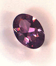<br>
              <font color="#330000"><font size="-1">spinelle</font></font></p>
          </center>
          <ul>
            &nbsp;
          </ul>
          <font face="Arial,Helvetica"><font color="#000099">Le spinelle
              existe dans une grande variété de couleurs. Les rouge et
              les bleu sont toutefois les plus recherchés. Leur
              ressemblance avec les rubis et les saphirs est notoire.
              L'apparition, au siècle dernier, d'instruments
              scientifiques pouvant les différencier, ont ainsi permis
              de découvrir que le « </font><font color="#660000"><font
                size="-1"><i>Rubis du Prince Noir</i> </font></font><font
              color="#000099">» et le « </font><i><font color="#660000"><font
                  size="-1">Rubis Timur</font></font></i><font
              color="#000099"> », tous deux joyaux de la couronne
              d'Angleterre, n'étaient en réalité que des </font><font
              color="#660000">spinelles</font><font color="#000099">.</font></font>
          <ul>
            &nbsp;
          </ul>
          <font color="#000099"><b><font size="-1"><span
                  style="font-family: Wingdings;">- </span><font
                  face="Arial,Helvetica">Postulat n°4</font></font></b><font
              face="Arial,Helvetica"> : Il est nécessaire que les
              alchimistes aient disposé des matières premières
              nécessaires et notamment de bichromate de potassium
              [l'alun de chrome] si l'on fait fait l'hypothèse du rubis.
            </font></font><font face="Arial,Helvetica"><u><font
                color="#660000">C'est un problème encore insoluble</font></u><font
              color="#000099"> ; une hypothèse : l'alun était
              ordinairement importé de Turquie -en fait de Phrygie
              puisque l'Asie Mineure ne s'est turquisée que peu à peu
              après l'établissement des Turcs Seldjoukides (XI<sup>e</sup>
              siècle) ; la Turquie en tant qu'état n'est apparue
              qu'après la première guerre mondiale lors du démembrement
              de l'Empire ottoman-&nbsp; où l'on trouve des gisements de
              chromite. Il se peut qu'il y ait eu des traces de chrome
              dans les variétés d'alun dont parle <font size="-1"><a
                  href="#Pline">Pline l'ancien</a></font> dans son <b><i><font
                    size="-1">Histoire Naturelle</font></i></b>...</font></font><font
            color="#000099"> <font face="Arial,Helvetica">Un autre
              point non abordé : si par pure hypothèse les alchimistes
              étaient effectivement parvenus à la synthèse des pierres
              précieuses, on devrait normalement, au plan historique,
              trouver des pierres précieuses anormales, c'est-à-dire ne
              possédant pas les inclusions caractéristiques des gemmes
              naturelles... Une réponse pourrait être que l'alchimiste
              n'avait que faire de vendre ces rubis puisque, par
              définition, la difficulté de l'entreprise nécessitait qu'</font></font><font
            face="Arial,Helvetica"><u><font color="#660000">il fut
                d'abord fort riche</font></u><font color="#000099">, ce
              qui est attesté par les textes anciens et modernes. C'est
              la raison pour laquelle l'hypothèse que développe Serge
              Hutin dans <i>l'<b><font size="-1">Alchimie</font></b></i>
              (</font><font color="#660000"><font size="-1">Que sais-je,
                PUF, 1999</font></font><font color="#000099">) est
              séduisante : Fulcanelli aurait été le pseudonyme de l'un
              des trois fils de l'homme du canal de Suez, Pierre de
              Lesseps. On peut imaginer que la fortune de son père était
              suffisante pour lui permettre de mener ses travaux à
              bien...mais il est décidément plus facile de gloser sur la
              Pierre philosophale que sur Fulcanelli ou Philalèthe...Sur
              un site internet intitulé Fulcanelli, l'auteur propose une
              solution de l'énigme qui ne nous satisfait pas pleinement
              ; il semble presque impossible d'imaginer que Fulcanelli
              n'ait pas été un minéralogiste ou un chimiste à part
              entière...</font></font>
          <p> </p>
          <ul>
            &nbsp;
          </ul>
        </blockquote>
        <blockquote>
          <center><a  name="9)-"></a><u><font face="Arial,Helvetica"><font
                  color="#000099"><font size="+1">9)- les gemmes
                    orientales [voir aussi </font><a href="../original/soufre.html">Soufre</a><font
                    size="+1">]<br>
                    <br>
                  </font></font></font></u></center>
        </blockquote>
        <blockquote><a  name="a)-"></a><u><font face="Arial,Helvetica"><font
                color="#000099">a)- introduction</font></font></u>
          <p><font face="Arial,Helvetica"><font color="#000099">Les
                gemmes naturelles ont très vite retenu l'attention des
                hommes par leurs couleurs,&nbsp; éclat et rareté. Pour
                une étude historique, voyez la section sur <a
                  href="../original/gemmes.html">Buffon</a>.&nbsp; On distingue
                essentiellement le diamant, le rubis, le saphir,
                l'émeraude, l'aigue-marine, l'opale, la tourmaline, le
                topaze et le péridot. Le diamant ne sera pas abordé ici
                car les conditions d'obtention du diamant artificiel
                impliquent l'emploi de pressions très importantes que
                les anciens alchimistes n'auraient jamais pu obtenir au
                laboratoire (5.10<sup><font size="-1">9</font></sup>
                pascals). Rappelons seulement que le diamant est du
                carbone à l'état de pureté, de dureté 10 (maximum sur
                l'échelle de Moth).</font></font> <font face="Arial,
              Helvetica, sans-serif"><font color="#000099">Fourcroy
                présente sous le nom générique de <b>télésie</b> [mot
                proposé par Haüy], une pierre parfaite, donnée aux trois
                pierres qu'on comprenait autrefois parmi les précieuses
                ou les gemmes, savaoir le rubis, le saphir et le topaze
                d'Orient des lapidaires.</font></font> <font
              face="Arial,Helvetica"><font color="#000099">Le rubis est
                une des variété colorée de corindon, de formule </font><font
                color="#660000"><font size="-1">Al<sub>2</sub>O<sub>3</sub></font></font><font
                color="#000099"> avec des traces d'oxyde de chrome. Les
                rubis couleur « <i>sang de pigeon</i> » sont d'une
                valeur plus élevée que certains diamants. Le rubis
                cristallise dans le système rhomboédrique et a une
                dureté de 9 sur l'échelle de Moth. Il se forme en
                général à 40 km de profondeur et à une température de
                650°C en moyenne. On le dépeignait comme « <i>une
                  goutte de sang du coeur de la Terre-Mère »</i>. Ce
                n'est que vers 1800 que le rubis et le saphir furent
                rattachés au groupe du corindon [</font><font
                color="#660000"><font size="-1">et à l'émeri qui est une
                  autre forme de corindon]</font></font><font
                color="#000099">. Auparavant, le spinelle rouge et le
                grenat passaient souvent pour des rubis ; ils étaient
                appelés escarboucles dans les temps anciens [</font><font
                color="#660000"><font size="-1">carbunculus ; cf. <b><i>Histoire

                      de la botanique, de la minéralogie et de la
                      géologie depuis les temps les plus reculés jusqu'à
                      nos jours</i></b> par Ferdinand Hoefer, Hachette,
                  Paris, 1872]</font></font><font color="#000099">. Le
                rubis véritable possède des inclusions qui garantissent
                son authenticité par rapport aux rubis synthétiques. Les
                plus recherchés sont dits « <i>sang de pigeon</i> » :
                rouge tendre avec un souvenir de bleu. Autres couleurs :
                rouge groseille, rouge orangé, rouge pourpre, rouge
                sombre [</font><font color="#660000"><font size="-1">le
                  rouge est procuré par la présence d'oxyde de chrome]</font></font><font
                color="#000099">. Les spécialistes distinguent plus de
                70 nuances de couleurs. Les inclusions de rutile en
                particulier, confèrent par ailleurs à la pierre un
                reflet doux appelée « <i>soie</i> ». La majorité des
                rubis (90 à 95%) sont aujourd'hui l'objet de traitements
                visant à en améliorer la couleur et la transparence. Le
                plus efficace est appelé « <i>chauffage-diffusion</i>
                »: la pierre est chauffée à une température atteignant
                1600°C dans un mélange colorant qui pénètre
                superficiellement le pourtour de la pierre. Utilisé
                depuis plusieurs années dans le cas du saphir, ce
                traitement est récent d'application dans le cas du
                rubis. La production de rubis synthétiques de qualité
                gemme atteint actuellement sont paroxysme. Leurs
                propriétés physiques, chimiques et optiques sont
                identiques à celles des rubis naturels. On les distingue
                en laboratoire à partir des impuretés qu'ils
                contiennent, de leurs réactions aux rayons ultra-violets
                et parfois par leur couleur qui ne possède pas la même
                richesse.</font></font> <br>
            <font face="Arial,Helvetica"><font color="#000099">Deux
                remarques à présent qui ont rapport avec les textes :</font></font>
            <br>
            <span style="font-family: Wingdings;"><br>
            </span><font face="Arial,Helvetica"><font color="#000099">-
                lorsque le rubis est taillé en cabochon, ces inclusions
                peuvent produire un effet d'<u>astérisme</u> qui se
                traduit par une étoile à six branches qui semble glisser
                à la surface de la pierre lorsqu'on la bouge par rapport
                au soleil : c'est la <u>première qualité</u> attribuée
                à la Pierre philosophale ;</font></font> <br>
            <font face="Arial,Helvetica"><font color="#000099">- le
                rubis a la réputation de « </font><i><font
                  color="#660000"><font size="-1">préserver du venin et
                    de la peste, de conserver les corps en bonne santé</font></font><font
                  color="#000099"> »</font></i><font color="#000099"> :
                c'est la <u>deuxième qualité</u> attribuée à la Pierre
                philosophale. Cette qualité est du reste partagée de
                façon générale pour toutes les pierres précieuses :
                ainsi attribue t-on au diamant des vertus purificatrices
                et d'invincibilité ; le diamant est censé dissiper
                l'angoisse, éloigner les fantômes, guérir la
                cataracte...Dans la médecine populaire, le diamant passe
                pour être capable de guérir toutes les maladies du corps
                et de l'esprit : nous voici très près des vertus
                attribuées à la Pierre philosophale. L'émeraude -</font><font
                color="#660000"><font size="-1">dont nous pensons, de
                  même que pour le diamant bien sûr, qu'elle était
                  au-delà des possibilités des alchimistes</font></font><font
                color="#000099">- symbolisait, quant à elle, la vitalité
                cosmique, la force et la vitalité intérieure. La table
                magique sur laquelle étaient gravés les préceptes des
                sciences occultes était, de fait, une énorme émeraude.
                Elle fut découverte avec la momie du dieu égyptien Thot,
                le dieu du savoir, et a gardé le nom de <b><i><font
                      size="-1"><a href="../original/table-hermes.html">Table
                        d'émeraude</a></font></i></b> dans l'histoire
                des mythologies. Autre exemple : le Graal fut taillé
                dans une émeraude tombée du casque de Satan [</font><font
                color="#660000"><font size="-1">cf. la Légende du Graal
                  in <a href="../original/legende-siegfried.html">Légende de Sifrit
                    l'Encorné</a> -</font></font><font color="#000099">],


                alors que pour les alchimistes, l'Emeraude des
                philosophes est de toutes les pierres celle qui insuffle
                la vie à toute nature.</font></font> <br>
            <font face="Arial,Helvetica"><font color="#000099">.</font></font></p>
        </blockquote>
        <blockquote align="CENTER">
          <center><br>
            <font color="#330000"><font size="-1">rubis</font></font></center>
        </blockquote>
        <blockquote><u><font face="Arial, Helvetica, sans-serif"><font
                color="#000099"><font size="+0">b)- </font>réflexions
                sur la topaze</font></font></u>
          <p><font face="Arial, Helvetica, sans-serif"><font
                color="#000099">Nous croyons intéressant d'émettre à
                présent quelques remarques sur la topaze. Cette pierre
                précieuse est composée en moyenne de 36 parties de
                silice, 55 parties d'alumine et près de 18 parties de
                fluor. D'emblée, elle se présente pour l'hermétiste
                comme une substance formée d'un Corps [</font><font
                color="#660000"><font size="-1">l'alumine ou Soufre
                  blanc</font></font><font color="#000099">], duien du
                Mercure ou sel d'Ammon [</font><font color="#660000"><font
                  size="-1">silice</font></font><font color="#000099">]
                et d'importantes quantités de résidus mercuriels [</font><font
                color="#660000"><font size="-1">ici, la myrrhe ou spath
                  fluor, fluorine, fluorite</font></font><font
                color="#000099">]. La topaze est considérée comme un
                mélange isomorphique d'un silicate d'alumine avec un
                fluorure de silicium. Elle se présente toujours en
                cristaux hyalins d'un éclat vitreux, et d'une couleur
                habituellement jaune; mais non seulement les nuances de
                cette couleur peuvent varier du jaune orangé rougeatre
                au jaunede vin (</font><font color="#660000"><font
                  size="-1">topaze du Brésil</font></font><font
                color="#000099">) et au jaune paille (</font><font
                color="#660000"><font size="-1">topaze de Saxe</font></font><font
                color="#000099">), mais on rencontre encore des topazes
                incolores, bleuâtres ou verdatres (</font><font
                color="#660000"><font size="-1">Sibérie et Ecosse</font></font><font
                color="#000099">). Ces colorations diverses sont dues à
                des principes fugaces très altérables et se rapprochant
                des substances bitumineuses ou organiques ; c'est ce qui
                explique l'altération de couleur ou la perte de poids
                que les topazes éprouvent lorsqu'on les expose soit a
                l'action du feu, soit à l'action prolongée de la lumière
                solaire, comme cela a lieu du reste pour un certain
                nombre d'autres gemmes, telles que les tourmalines, les
                émeraudes, les zircons, etc.</font></font> </p>
          <p><font face="Arial, Helvetica, sans-serif"><font
                color="#000099">[</font><font color="#990033"><font
                  size="-1">cette relation est tout spécialement
                  intéressante pour l'Artiste, qui sait qu'il doit
                  protéger sa Pierre des « influences extérieures »
                  comme Fulcanelli nous le signale dans ses Mystères.
                  Par ailleurs, elle ne donne pas tout à fait tort à ce
                  qu'écrivait <a href="../original/gemmes.html">Buffon</a>
                  lorsqu'il pensait que l'insolation jouait un rôle dans
                  la genèse de certaines pierres. C'est bien sûr faux en
                  toute hypothèse, mais cette « corruption » des pierres
                  sous l'influence du soleil, considéré comme le
                  principe Soufre par excellence, est à mettre en
                  parallèle avec ce que dit Platon dans son <b><i>Timée</i></b></font></font><font
                color="#000099">]</font></font> </p>
          <p><font face="Arial, Helvetica, sans-serif"><font
                color="#000099">M. <font size="-1"><a
                    href="../original/delesse-1.html">Delesse</a></font> a, en
                effet, trouvé que les topazes du Brésil contiennent 0.22
                d'azote, et Brewter avait depuis longtemps indiqué que
                les topazes de la même contrée et celles de l'Ecosse
                renferment une infinité de cavités microscopiques
                remplies de gouttelettes d'un liquide plus ou moins
                visqueux. Les topazes naturellement colorées sont
                trichioïques, lorsqu'on les regarde par transparence
                dans la direction des trois axes rectangulaires; celles
                du Brésil montrent, dans ces circonstances, diverses
                nuances de jaune modifiées par du blanc, du jaune et du
                violet. Sa densité est de 3.499 à 3.54 ; sa dureté est
                égale à 8. Elle possède deux axes de double réfraction
                positive, dont l'angle n'est pas constant dans toutes
                les variétés. Elle s'électrise par la chaleur en deux
                points opposés; en outre, elle possède des pôles
                centraux d'électricité. Lorsqu'un cristal de topaze,
                clivé parallèlement à la base, a été chauffé, on
                observe, pendant le refroidissement, des pôles positifs
                ou antilogues aux extrémités de la petite diagonale du
                rhombe terminal, et un pôle négatif ou analogue dans le
                milieu, au point où se croisent les deux diagonales.
                Cette pyroélectricité est surtout très sensible dans les
                topazes du Brésil; elle très faible dans celles de Saxe,
                et même presque nulle dans celles de Sibérie. Ces deux
                dernières variétés s'électrisent facilement par pression
                ou par frottement, et conservent longtemps l'électricité
                positive qu'elles ont ainsi acquise. La topaze possède
                la double réfraction à deux axes optiques, situés dans
                un plan parallèle à la petite diagonale, et dont la
                ligne moyenne est normale à la base.</font></font> <br>
            <font face="Arial, Helvetica, sans-serif"><font
                color="#000099">- La topaze cristallise dans le système
                du prisme droit rhomboïdal ; sa forme primitive est un
                prisme rhomboïdal droit. Les cristaux de topaze
                présentent une grande variété de modification, mais
                cependant ils ont tous entre eux une grande analogie; on
                peut les réunir en trois groupes, qui sont : <b>1)-</b>
                Le prisme rhomboïdal bas, avec un anneau de facettes
                autour de la base (Saxe) ; <b>2)-</b> Le prisme
                rhomboïdal surmonté d'un pointement à quatre faces
                (Brésil) ;<b>3)-</b> Le prisme rhomboïdal terminé par un
                biseau ou sommet cunéiforme (Sibérie).</font></font> </p>
          <center>
            <p>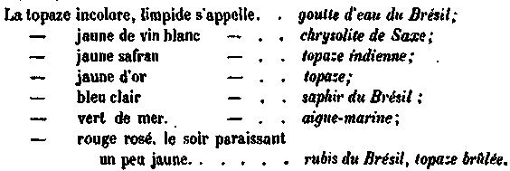</p>
          </center>
          <p><font face="Arial, Helvetica, sans-serif"><font
                color="#000099">Lorsqu'on chauffe une topaze jaune du
                Brésil, elle devient rosé très clair, c'est ce qu'on
                appelle la topaze brûlée. On doit, suivant M. Barbot,
                envelopper la topaze d'amadou serré au moyen de fils
                avant de la passer au feu ; ou évite ainsi de briser la
                pierre et on lui communique une coloration uniforme.</font></font>
            <br>
            <font face="Arial, Helvetica, sans-serif"><font
                color="#000099">- Gisements : Les topazes du Brésil sont
                jaune roussâtre clair ou foncé, jaune d'or, quelquefois
                rouge violacée, lîlas ou incolores. On les trouve sur
                les parois des roches granitiques et schisteuses. Les
                belles topazes rouges ou violettes viennent de Boa Visio
                ou de Capao do Lana. Les topazes de Sibérie sont d'un
                blanc bleuâtre ou verdâtre, et quelquefois incolores. On
                les trouve aux monts Ilmen, à Alabaschka dans l'Oural,
                en Sibérie aux monts Adnn Tschibon. La topaze de Saxe
                est d'un jaune pâle ou d'un blanc un peu jaunâtre; elle
                se trouve associée à du quartz, à de la tourmaline
                noire, dans le Voiglland, dans un rocher surnommé la
                Roche à topazes. On la trouve, en outre, sous forme das
                galets roulés en Australie et dans les sables
                diamantifères de l'Inde. Elle existe aussi en Ecosse et
                en Irlande; cette topaze est incolore, Enfin, on la
                rencontre avec de l'oxyde d'étain [</font><font
                color="#990033"><font size="-1">on sait, depuis Daubrée,
                  le rôle que joue l'étain comme agent minéralisateur;
                  cf. section <a href="../original/merc-nat.html">Mercure de Nature</a>
                  -</font></font><font color="#000099">] dans les filons
                de Saxe, de Bohême, et de certaines autres localités.</font></font>
            <br>
            <font face="Arial, Helvetica, sans-serif"><font
                color="#000099">- Chose importante, la topaze appartient
                aux mêmes terrains anciens que l'émeraude ; toutefois
                elle est moins fréquente, mais elle se trouve avec
                abondance dans ses gisements. A Allenborg en Saxe, elle
                existe avec une telle abondance dans la pegmatite, que
                les minéralogistes allemands l'ont considérée comme
                essentielle à cette roche, qu'ils ont désignée sous le
                nom de topasfels, A Nertschinsk, dans le mont
                Odontschelon en Sibérie, les cristaux de topaze sont
                associés au quartz hyalin , au béryl et à la chaux
                fluatée. [</font><font color="#990033"><font size="-1">cf.

                  section <a href="../original/merc-nat.html">Mercure de nature</a>
                  où nous montrons que la chaux fluatée est un puissant
                  agent minéralisateur, ce que n'avait pas manqué de
                  voir Sainte-Claire Deville ; cf. section <a
                    href="../original/reincrud.html">réincrudation</a> -</font></font><font
                color="#000099">] L'existence de ce dernier minéral
                offre une analogie de plus entre les différents
                gisements de topaze. A Ehrenfriedersdorf, en Saxe, la
                topaze accompagne l'étain oxydé et le fer arsenical. Les
                topazes du Brésil viennent pour la plupart d'un endroit
                nommé Capao, au-dessus de Villarica, dans la province de
                Minas Geraès; leur gangue est une variété de chlorite
                schisteuse; mais la plupart des cristaux du Brésil que
                l'on voit dans les collections sont recueillis dans les
                terrains d'alluvion qui avoisinent les roches de topaze
                de cotte contrée. La couleur jaune, jointe à Ia
                transparence et à un certain degré de dureté, a été en
                général prise pour l'indice d'une topaze par les
                artistes qui travaillent les pierres fines. De là sont
                nés de faux rapprochements; ainsi le quartz jaune taillé
                si souvent désigné sous le nom de topaze.</font></font>
            <br>
            <font face="Arial, Helvetica, sans-serif"><font
                color="#000099">- La topaze est employée en joaillerie;
                elle se taille à degrés ou en brillants; on la monte à
                jour et on en fait des colliers, des bagues, des boucles
                d'oreilles, etc. Le travail s'exécute, en général, sur
                la roue de plomb enduite d'émeri et le polissage, sur la
                roue de cuivre. La topaze goutte d'eau est employée
                quelquefois pour imiter le diamant, mais elle jette
                beaucoup moins de feu ; on peut la distinguer de cette
                pierre précieuse par sa double réfraction. Les topazes
                ont moins de valeur que le diamant et l'émeraude.</font></font>
            <br>
            <font face="Arial, Helvetica, sans-serif"><font
                color="#000099">- Cristallisée, la topaze n'offre aucune
                analogie ; la couleur de l'aigue-marine, il est vrai,
                rapproche ce minéral de la topaze de Sibérie ou
                d'Ecosse, mais sa forme en prisme régulier à six faces
                et ses modifications sextuples ne laissent aucun doute,
                quand on peut étudier la disposition des cristaux de ces
                deux substances. La topaze en galets roulés peut se
                confondre avec le quartz, le béryl au même état ; la
                topaze raye le quartz. La topaze taillée offre plus
                d'analogies, par suite de la diversité de ses nuances ;
                celle du Brésil, dite goutte d'eau, limpide et incolore,
                peut se confondre avec le diamant, le quartz hyalin, le
                spinelle blanc. Le diamant et le spinelle sont plus
                durs, leur réfraction est simple; le quartz est moins
                dur et moins pesant. La topaze jaune peut se confondre
                avec le corindon jaune, le quartz Jaune, l'émeraude
                jaune et la cymophane. Pour ces minéraux, la pesanteur
                spécifique suffit seule à les distinguer. La topaze
                brûlée offre de la ressemblance avec le spinelle rouge,
                le corindon rouge, la tourmaline et le grenat. Il faut
                ici consulter les teintes, qui sont généralement très
                différentes; la distinction d'avec le corindon et le
                grenat est facile sous ce rapport : le corindon est d'un
                rouge plus riche, le grenat est toujours violacé; mais
                il existe de la difficulté pour la séparer de la
                tourmaline rouge, dont la teinte est quelquefois la même
                : il faut alors étudier séparément la pesanteur
                spécifique, la dureté, la double réfraction, et même
                l'angle sous lequel a lieu la polarisation de la
                lumière. Mais nous dira-t-on, que vient faire cet exposé
                sur les topazes qui, somme toute, semblent d'un intérêt
                plus modeste que le rubis ou l'émeraude. A ceci :</font></font>
            <br>
          </p>
          <p> <font face="Arial, Helvetica, sans-serif"><font
                color="#000099">1)- on connaît des topazes présentant
                des cavités liquides : M. Brewster a décrit une topaze
                présentant une cavité liquide, très remarquable par les
                dimensions de cette cavité et la nature du liquide.
                Cette cavité, d'une forme irrégulière, avait 0,0049 de
                haut sur 0,0027 de largeur. Elle était en partie remplie
                d'un liquide qui ne se dilatait pas par la chaleur, et
                lequel diffère essentiellement des liquides que ce
                savant physicien a fait connaître dans les cristaux de
                quartz et de topaze. Il paraissait adhérent à la cavité
                et ne se dérangeait de place que très difficilement, par
                des mouvements brusques que l'on imprimait au cristal.
                Ce liquide n'est pas tout à fait transparent et il a un
                aspect. laiteux : une circonstance, qui donnait a cet
                échantillon un intérêt particulier, résulte de ce que la
                cavité renferme des cristaux, dont plusieurs ont des
                facettestrès brillantes et sont complètement
                transparents. Ils sont tous mobiles et descendent dans
                le liquide avec des vitesses plus ou moins grandes. Ils
                appartiennent par conséquent a plusieurs espèces dont
                les pesanteurs spécifiques sont différentes. Toutefois,
                ces cristaux appartiennent à des minéraux spécifiquement
                légers, et qui pourraient s'être formés aux dépens même
                du liquide.</font></font> <br>
            <font face="Arial, Helvetica, sans-serif"><font
                color="#000099">2)- la forme géométrique de la topaze
                n'est pas sans rappeler celle décrite par Platon pour
                désigner le principe Eau. Certes, il s'en faut que la
                topaze soit un icosaèdre, tel que celui que nous
                présente Fulcanelli, au palais d'Holyrood. Mais il
                semble qu'elle tienne le milieu entre l'octaèdre, le
                principe Air, à 8 faces et l'icosaèdre, le principe Eau,
                à 20 faces. Voici enfin, une image de la topaze :
                serait-ce aussi celle de la Pierre des Sages ? Le
                célèbre Haüy nommait d'abord cette pierre orientale et
                considérait que l'une de ses formes relevait du
                dodécaèdre, le cinquième des polyèdres réguliers
                inscriptibles dans la sohère, et celui qui s'en
                rapproche le plus. Ne peut-on y voir une allusion au
                cinquième éléments de la tradition hermétique : la
                quintessence ? Voici ce qu'on lit dans le Timée :</font></font>
          </p>
          <p><font face="Arial, Helvetica, sans-serif"><font
                color="#000099">"</font><i><font color="#660000"><font
                    size="-1">Il restait une seule construction, la
                    cinquième ; le dieu s'en est servi pour l'univers,
                    lorsqu'il y peignit des figures animales</font></font></i><font
                color="#000099"> " [</font><i><font color="#660000"><font
                    size="-1"><b>Timée</b>, 55b - d</font></font></i><font
                color="#000099">]</font></font> </p>
          <p><font face="Arial, Helvetica, sans-serif"><font
                color="#000099">Eh bien, substituez le petit monde des
                alchimistes, leur athanor, à l'univers, considérez que
                la pierre est animée d'un accroissement, durant la
                Grande Coction. Vous aurez alors l'image exacte de la
                quintessence pour l'Artiste, devenu démiurge. Mais, bien
                sûr, c'est par l'esprit qu'il faut comprendre ces
                réflexions, qui, à première vue, semblent émaner d'une
                cervelle dérangée...Il est vrai que nous quittons là le
                monde clos de la Raison - du modèle cartésien - pour
                entrer dans celui du sens allié au sentiment, monde
                ouvert où seul le concept esthétique prend forme.</font></font>
          </p>
          <center>
            <p>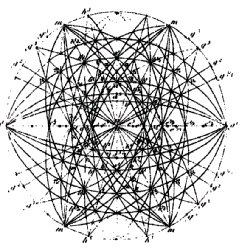<br>
              <font color="#660000"><font size="-1">squelette d'une
                  pierre philosophale</font></font></p>
          </center>
          <p><font face="Arial, Helvetica, sans-serif"><font
                color="#000099">Nous retiendrons que la couleur
                dominante de la topaze est celle d'un beau jaune d'or.</font></font>
          </p>
          <p><a  name="b)-"></a><font face="Arial,Helvetica"><font
                color="#000099">c)- <u>aperçu sur les synthèses</u>
                Comment réaliser la synthèse du rubis ? diverses
                techniques permettent d'obtenir la synthèse de cette
                gemme (voir aussi les sections sur le <font size="-1"><a
                    href="../original/imitat-prec.html">Mercure philosophique</a></font>
                et la <font size="-1"><a href="../original/reincrud.html">réincrudation</a></font>)
                :</font></font> </p>
          <p><font color="#000099"><font face="Symbol"><font size="+2">a</font></font><font
                face="Arial,Helvetica">)- <i style="color: rgb(102, 0,
                  0);">des procédés par fusion simple</i></font></font>
          </p>
          <p><font face="Arial,Helvetica"><font color="#000099">où le
                cristal recherché cristallise à partir de ses éléments
                amenés à l'état fondu. On citera le procédé de Verneuil
                qui utilise un chalumeau spécial au haut duquel est
                situé un récipient contenant un mélange d'oxyde
                d'aluminium et d'oxyde de chrome. un apport d'oxygène et
                d'hydrogène permet l'obtention d'une flamme de 2000°C et
                la solubilisation de « <i>gouttes</i> » de cristaux qui
                viennent former peu à peu une boule de cristal
                artificiel ; on a pu obtenir ainsi du <u>corindon</u>,
                des <u>grenats</u>, des <u>rubis</u> et des <u>saphirs</u>.
                Cette technique ne pouvait pas être utilisée - de toute
                évidence - par les alchimistes ;</font></font> </p>
          <p><font color="#000099"><font face="Symbol"><font size="+2">b</font></font><font
                face="Arial,Helvetica">)- <i style="color: rgb(102, 0,
                  0);">procédé de l'auto-creuset</i></font></font> </p>
          <p><font face="Arial,Helvetica"><font color="#000099">sur
                lequel nous ferons l'impasse car il nécessite des
                connaissances en courants induits qui ne pouvaient pas
                être connus des Anciens ;</font></font> </p>
          <p><font color="#000099"><font face="Symbol"><font size="+2">g</font></font><font
                face="Arial,Helvetica">)-<i> <span style="color:
                    rgb(102, 0, 0);">procédés par dissolution dans un
                    fondant </span></i><span style="color: rgb(102, 0,
                  0);">:</span></font></font> </p>
          <p><font face="Arial,Helvetica"><font color="#000099">les
                constituants du cristal sont dissous dans un fondant
                jusqu'à sursaturation, dans des conditions qui
                entraînent une cristallisation autour d'un germe. Ces
                procédés aboutissent à la synthèse d'émeraudes
                synthétiques sur le marché de la bijouterie fantaisie
                ainsi que de quelques rubis synthétiques ; ils
                s'apparentent aux procédés spagyriques.</font></font> </p>
          <p><font color="#000099"><font face="Symbol"><font size="+2">d</font></font><font
                face="Arial,Helvetica">)-<i> <span style="color:
                    rgb(102, 0, 0);">procédé par dissolution
                    hydrothermale</span></i> :</font></font> </p>
          <p><font face="Arial,Helvetica"><font color="#000099">sur
                lequel nous ferons aussi l'impasse car aucun texte ne
                permet d'y trouver des analogies de technique valable ;</font></font>
          </p>
          <p><font color="#000099"><font face="Symbol"><font size="+2">e</font></font><font
                face="Arial,Helvetica">)- <i style="color: rgb(102, 0,
                  0);">procédé qui se rapproche le plus des écrits
                  alchimiques </i><span style="color: rgb(102, 0, 0);">:</span></font></font>
          </p>
          <p><font face="Arial,Helvetica"><font color="#000099">nous
                l'avons trouvé pp.42-43 dans <b><i><font size="-1">Le
                      royaume des Minéraux</font></i></b>, dû à P.E.
                Desautels (Arthaud, 1977). Il s'agit d'une méthode mise
                au point par les Laboratoires Bell pour la fabrication
                des rubis synthétiques :</font></font></p>
        </blockquote>
        <blockquote><i><font face="Arial,Helvetica"><font size="-1"><font
                  color="#000099">"</font><font color="#660000">Un
                  récipient en platine de 25 cm de haut et de 15 cm de
                  diamètre est rempli d'un fondant contenant 5 kg
                  d'oxyde de plomb (PbO) et de 400 g d'oxyde borique (B<sub>2</sub>O<sub>3</sub>).


                  On y ajoute les éléments nécessaires pour faire le
                  rubis lui-même : 800 g d'oxyde d'aluminium (Al<sub>2</sub>O<sub>3</sub>),


                  une trace d'oxyde de chrome (Cr<sub>2</sub>O<sub>3</sub>)
                  pour obtenir la couleur rouge. Le récipient et son
                  contenu sont alors portés à une température d'environ
                  1300°C en sorte que l'oxyde de Cr et l'oxyde d'Al se
                  dissolvent dans le fondant liquéfié. Les ingrédients
                  sont maintenus pendant 6 heures à cette température et
                  sont continuellement agités par la<a  name="rotation"></a>
                  <u>rotation</u> du récipient <u>tantôt dans un sens
                    tantôt dans l'autre</u>. Au bout des six heures, la
                  température est lentement abaissée de 77°C par jour
                  pendant plusieurs jours. Quand la température arrive
                  juste au-dessous de 1238°C, les cristaux de rubis
                  commencent à se former. Quand le refroidissement est
                  achevé et que toute la masse contenant les cristaux de
                  rubis s'est solidifiée, on dissout le fondant en le
                  plongeant dans l'acide nitrique qui est sans effet sur
                  les cristaux de rubis.</font><font color="#000099">"</font></font></font></i></blockquote>
        <blockquote><font face="Arial,Helvetica"><font color="#000099">Pour

              qui s'est un peu penché sur les textes alchimiques, sont
              précisément indiqués - hors d'un contexte alchimique :</font></font>
          <p><font color="#000099"><span style="font-family: Wingdings;">-
              </span><font face="Arial,Helvetica">le <u>Mercure
                  philosophique</u> : fondant où participe l'oxyde de
                plomb et un autre oxyde ; comme il ne peut pas s'agir
                d'oxyde de bore (</font></font><font
              face="Arial,Helvetica"><font color="#660000"><font
                  size="-1">inconnu des Anciens</font></font><font
                color="#000099">), la tentation est grande d'y
                substituer de l'oxyde d'étain ou peut-être du bismuth ;
                le borax était cependant connu des Anciens. M.
                Berthelot, dans son <b><i><font size="-1"><a
                        href="../original/chimie-anciens.html">Introduction à la
                        Chimie des Anciens</a></font></i></b> nous dit
                que le mot tinkar [</font><font color="#660000"><font
                  size="-1">le borax des alchimistes latins, qui
                  signifie soudure ou fondant vitreux</font></font><font
                color="#000099">] s'écrit aussi attinkar et anticar ; le
                borax est cité par Fulcanelli sous le nom d'attinkar
                dans les <b><i><font size="-1">DM</font></i></b> ; il a
                été confondu par Gaffiot avec la chrysocolle, minerai de
                cuivre. Notons que cette forme de Mercure est déjà pour
                nous un procédé spagyrique, cf. <font size="-1"><a
                    href="../original/laboratoire-3.html">travaux de Frémy et Feil</a></font>.</font></font>
          </p>
          <p><font color="#000099"><span style="font-family: Wingdings;">-
              </span><font face="Arial,Helvetica"><u>le Soleil et la
                  Lune</u> viennent se baigner littéralement dans le
                Mercure philosophique : entendez la trace de chrome pour
                le Soufre et l'alumine pour la Lune (</font></font><font
              face="Arial,Helvetica"><font color="#660000"><font
                  size="-1">qui s'avère donc être le 1<sup>er </sup>Mercure,

                  et aussi le Sel des philosophes</font></font><font
                color="#000099">) ;</font></font> </p>
          <p><font face="Arial,Helvetica"><font color="#000099">-
                Vulcain ardent, désigné comme le feu commun, doit être
                porté à un haut degré (1300°C), ce qui est conforme aux
                écrits de Fulcanelli ;</font></font> </p>
          <p><font face="Arial,Helvetica"><font color="#000099">- ce feu
                vulgaire doit être progressivement abaissé d'environ
                77°C : il s'agit des Régimes de <font size="-1"><a
                    href="../original/introitus.html">Philalèthe</a></font> qui
                commencent forcément par le régime de Saturne, le plus
                haut, allant ensuite en dégression, par degré planétaire
                inférieur ;</font></font> </p>
          <p><font face="Arial,Helvetica"><font color="#000099">- les
                cristaux apparaissent à partir d'une certaine
                température : on réussit à obtenir la conjonction du
                Soufre (</font><font color="#660000"><font size="-1">oxyde

                  de chrome</font></font><font color="#000099">) et du
                Mercure commun ou Sel des philosophes (</font><font
                color="#660000"><font size="-1">oxyde d'aluminium</font></font><font
                color="#000099">) par un phénomène qui figure, sous
                forme allégorique, une sorte d'attraction ou
                d'aimantation qu'a tant cherché à reproduire Isaac
                Newton dans sa quête du Lion vert...</font></font> </p>
          <p><font face="Arial,Helvetica"><font color="#000099">- on
                récupère les cristaux en dissolvant le fondant avec de
                l'acide nitrique : le plomb, l'étain et le zinc sont
                dissous par cet acide. Il y a dans cette opération
                quelque analogie, croyons-nous, avec ce que les Adeptes
                ont appelé le </font><font color="#660000">sceau
                vitreux</font><font color="#000099"> d'Hermès qui
                couronne le travail final : étudions cette allégorie.
                Fulcanelli, dans<i> <b><font size="-1">Myst</font></b>.</i>,
                p.189, quand il nous parle de la ceinture d'Offerus (</font><font
                color="#660000"><font size="-1">en fait <a
                    href="#" title="lien mort dans l'archive">saint Christophe</a></font></font><font
                color="#000099">) nous dit que :</font></font></p>
        </blockquote>
        <blockquote><font face="Arial,Helvetica"><font size="-1"><font
                color="#000099">"</font><font color="#660000"><i>[cette
                  ceinture] est piquée de lignes entre croisées
                  semblables à celles que présente la surface du
                  dissolvant lorsqu'il a été canoniquement préparé. Tel
                  est le Signe, que tous les Philosophes reconnaissent
                  pour marquer, extérieurement...l'extrême pureté de
                  leur substance mercurielle...et ce signe, les vieux
                  auteurs l'ont appelé </i>Sceau d'Hermès, Sel des
                Sages (Sel mis pour Scel)...</font><font color="#000099">"</font></font></font></blockquote>
        <blockquote><font face="Arial,Helvetica"><font color="#000099">Il

              s'agit donc d'une substance qui est vitrifiée en surface
              après la coction hermétique et qui peut correspondre aux
              cristaux que nous avons évoqué ; nous sommes ici à la fin
              du Grand Oeuvre et il faut à présent isoler les cristaux
              du dissolvant, c'est-à-dire « </font><i><font
                color="#660000"><font size="-1">briser le sceau&nbsp;<a
                     name="vitreux"></a>vitreux d'Hermès</font></font><font
                color="#000099"> »</font></i><font color="#000099">.
              L'Adepte, p.66, parle encore de ce sceau mais d'une autre
              manière, en utilisant l'mage de :</font></font></blockquote>
        <blockquote><font face="Arial,Helvetica"><font size="-1"><font
                color="#000099">"</font><i><font color="#660000">Certaines

                  roses [qui] ont un sens...qui souligne...les
                  propriétés de cette substance que le Créateur a signée
                  de sa propre main. Ce sceau magique révèle à l'artiste
                  qu'il a suivi le bon chemin, et que la mixtion
                  philosophique a été préparée canoniquement</font><font
                  color="#000099">.</font></i><font color="#000099">"</font></font></font></blockquote>
        <blockquote><font face="Arial,Helvetica"><font color="#000099">Quant

              au sceau de Salomon, c'est une <font size="-1"><a
                  href="../original/symb-dir-prim.html#d">digamma</a></font>
              qui n'est que l'entre-croisement du symbole du feu et de
              l'eau. Nous rappelons ici encore la prudence avec laquelle
              les textes de Fulcanelli doivent être lus : par exemple,
              dans les DM, I, p.253, le sceau hermétique est évoqué
              lorsque l'Adepte nous parle de la figure du Bélier et :</font></font>
          <p><font face="Arial,Helvetica"><font size="-1"><font
                  color="#000099">"</font><i><font color="#660000">qui
                    porte ostensiblement sur son écu l'image du sceau
                    hermétique, astre aux six rayons</font></i><font
                  color="#000099">"</font></font></font> </p>
          <p><font face="Arial,Helvetica"><font color="#000099">Il y a
                là confusion voulue...</font></font> </p>
          <p><font color="#000099"><font face="Symbol"><font size="+2">z</font></font><font
                face="Arial,Helvetica">)- <i style="color: rgb(102, 0,
                  0);">un procédé où de la poudre de rubis est obtenue</i><span
                  style="color: rgb(102, 0, 0);"> :</span></font></font>
          </p>
          <p><font face="Arial,Helvetica"><font color="#000099">Il
                s'agit d'un travail du Dr. <a
                  href="https://web.archive.org/web/20150412234607/http://www.mete.metu.edu.tr/RESEARCH/PROJECTS/CERAMIC/ruby.htm" target="_blank" rel="noopener">A.
Cuneyt


                  Tas</a> (</font><font color="#660000"><font size="-1">Dept.

                  of Metallurgical and Materials Engineering</font></font></font>
            <font face="Arial,Helvetica"><font color="#660000"><font
                  size="-1">Middle East Technical University, Ankara
                  06531,Turkey</font></font><font color="#000099">) par
                un procédé de combustion auto-propagée. Une solution
                acqueuse de nitrate de chrome </font><font
                color="#660000"><font size="-1">(CrNO<sub>3</sub>)3.9H<sub>2</sub>O</font></font><font
                color="#000099"> et de nitrate d'aluminium </font><font
                color="#660000"><font size="-1">(Al(NO<sub>3</sub>)3.9H<sub>2</sub>O)</font></font><font
                color="#000099"> disposées en quantitié volumétriques
                adéquates, sont utilisées come matériau de départ de
                poudre de rubis (0.2 à 1 % de chrome). L'urée est
                utilisée comme agent oxydant pendant la synthèse, lors
                de la combustion. De la glycine ou du carbohydrazide
                peuvent être utilisés en lieu et place de l'urée. La
                température lors du processus atteint entre 1250°C et
                1500°C. Voici une micro-photo obtenue par le SEM
                (scanning electron microscopy) :</font></font> </p>
          <center>
            <p>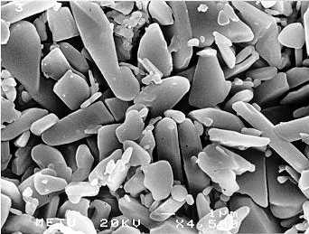<br>
              <br>
            </p>
          </center>
          <p><font face="Arial,Helvetica"><font color="#000099">Certains
                points indiqués sont du plus haut intérêt pour
                l'apprenti alchimiste :</font></font> <br>
            <font face="Arial,Helvetica"><font color="#000099">- le
                nitrate de chrome et le nitrate d'aluminium jouent
                respectivementle rôle de Soufre rouge et Soufre blanc ;</font></font>
            <br>
            <font face="Arial,Helvetica"><font color="#000099">- l'urée,
                agent oxydant, fait office de Mercure.</font></font> <br>
            <font face="Arial,Helvetica"><font color="#000099">- L'acide
                nitrique joue un rôle capital, ici certes, mais
                également, nous l'avons dit, dans la phase finale de la
                captation des cristaux car les éléments du fondant (</font><font
                color="#660000"><font size="-1">dont le plomb en
                  particulier</font></font><font color="#000099">) sont
                solubles dans l'acide nitrique à la différence des
                cristaux de rubis. C'est peut-être ce que voulait dire
                l'Adepte qui effectua une transmutation chez Helvetius :
                l'Adepte confia à Helvetius qu'il fallait à un certain
                stade de l'oeuvre " </font><i><font color="#660000"><font
                    size="-1">briser le sceau vitreux d'Hermès</font></font><font
                  color="#000099"> </font></i><font color="#000099">".
                Nous suggérons qu'il s'agit de l'emploi de l'acide
                nitrique (</font><font color="#660000"><font size="-1">cf.


                  <a href="#vitreux">supra</a></font></font><font
                color="#000099">). Ensuite, l'emploi de l'urée nous
                rappelle plusieurs références à l'urine dans la
                littérature alchimique : E. Canseliet y consacre un
                chapitre de ses <b><i><font size="-1">Deux Logis
                      alchimiques</font></i></b>, dans la <i><font
                    size="-1">Fontaine indécente</font></i>.
                Voyons&nbsp; ce qu'il écrit :</font></font> </p>
          <p><font face="Arial,Helvetica"><font size="-1"><i><font
                    color="#000099">"</font><font color="#660000">Après
                    cette miction première et imparfaite, l'impudique
                    Vénus livre son eau pontique qui est acuée du sel
                    dit harmoniac et qu'il convient de recueillir avec
                    espoir, maintenant qu'elle a reçu le semence du
                    métal mâle.</font></i><font color="#000099">"</font></font></font>
          </p>
          <p><font face="Arial,Helvetica"><font color="#000099">Il nous
                précise en outre que les vieux auteurs désignaient
                souvent le Mercure philosophique par les deux
                expressions « <font size="-1"><i>urine des enfants</i>
                  ou <i>urine de vierge</i></font>. » Cette allusion à
                l'urée vaut bien sûr pour l'ammoniac (</font><font
                color="#660000"><font size="-1">voyez une note à propos
                  de l'<a href="../original/compendium.html#9.b">alun ammoniacal</a></font></font><font
                color="#000099">). A noter que E. Canseliet fait à cette
                occasion une utile aparté où il nous dit que&nbsp; le
                chimiste Kunckel (</font><font color="#660000"><font
                  size="-1">qui a découvert le chlorure d'ammonium</font></font><font
                color="#000099">) avait émis des doutes sur les qualités
                du dissolvant universel :</font></font> </p>
          <p><i><font face="Arial,Helvetica"><font size="-1"><font
                    color="#000099">" </font><font color="#660000">«</font><font
                    color="#006600"> Si l'alcaest disssout tous les
                    corps, sans exception, il ne peut être renfermé dans
                    un vase qu'il dissoudrait incontinent </font><font
                    color="#660000">» [et Canseliet de rectifier :]
                    "Kunckel n'avait donc pas compris que le disssolvant
                    des alchimistes n'était considéré, par eux,
                    universel, que dans leur petit monde ou microcosme
                    philosophal</font><font color="#000099">"</font></font></font></i>
          </p>
          <p><font face="Arial,Helvetica"><font color="#000099">ce qui
                est d'une logique totale. Quant à la glycine, il s'agit
                de la para-oxylphénylglycine, utilisée comme développeur
                des émulsions photographiques. Ce procédé nous conforte
                dans le fait que des procédés différents ont
                certainement été utilisés par les alchimistes dans leurs
                tentatives d'obtention de la pierre au rouge.</font></font>
          </p>
          <p><font color="#000099"><font face="Symbol"><font size="+2">h</font></font><font
                face="Arial,Helvetica">)- <i style="color: rgb(102, 0,
                  0);">le procédé Chatham</i> : A notre siècle, la
                synthèse du rubis a pris une forte extension aux
                Etats-Unis d'Amérique depuis les années cinquante :
                Carroll Chatham, de San Francisco, mit au point une
                méthode restée secrète depuis ; cette méthode semble
                s'appuyer sur un processus de croissance lent&nbsp;
                permettant d'obtenir des rubis munis d'inclusions les
                rendant presque identiques aux rubis naturels. Il se
                peut que le procédé de Chatham vienne en droite ligne de
                celui pratiqué par les anciens alchimistes... Voici en
                tout cas un exemple de rubisChatham :</font></font> <br>
            &nbsp; <br>
            &nbsp; <br>
            <br>
          </p>
          <center>
            <p>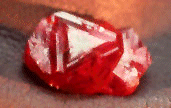<br>
              <font color="#330000"><font size="-1">rubis Chatam</font></font></p>
          </center>
          <p><font color="#000099"><font face="Symbol"><font size="+2">q</font></font><font
                face="Arial,Helvetica">)- <span style="color: rgb(102,
                  0, 0);">l</span><i style="color: rgb(102, 0, 0);">e
                  procédé Czochralski</i><span style="color: rgb(102, 0,
                  0);"> </span>: Un autre procédé a été découvert en
                1918 par J. Czochralski; son principe est le suivant :
                un récipient fait de quelque métal résistant aux
                températures élevées est chauffé et rempli des éléments
                pulvérisés qui formeront le cristal. Un petit cristal du
                métal à cristalliser -servant d'amorce en quelque sorte-
                est suspendu au-dessus du métal fondu à l'extrémité
                d'une tige qui tourne rapidement. On l'abaisse ensuite
                avec précaution et, tout en tournant, on le laisse
                toucher la surface du métal liquide. Tournant toujours,
                le spécimen est lentement relevé, révélant une nouvelle
                croissance sur le cristal qui a servi de germe et l'on
                dirait, véritablement, qu'un cristal cylindrique du
                métal est tiré du liquide. Voici un exemple de cristal
                obtenu avec cete méthode :</font></font> </p>
          <center>
            <p>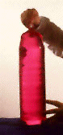<br>
              <font color="#330000"><font size="-1">rubis Czochralski</font></font></p>
          </center>
          <p><font face="Arial,Helvetica"><font color="#000099">et voici
                également l'appareil servant à reproduire ces cristaux :</font></font>
            <br>
            &nbsp; <br>
          </p>
          <center>
            <p>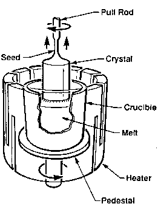<br>
              <font color="#330000"><font size="-1">la barate à rubis</font></font></p>
          </center>
          <p><font face="Arial,Helvetica"><font color="#000099">Par
                parenthèse, cet appareil évoque celui qui sert à </font><font
                color="#660000">baratter</font><font color="#000099"> la
                crème pour obtenir le beurre ; les anciennes barattes en
                bois étaient souvent tronconiques avec un arbre vertical
                ou en forme de tonneau tournant autour de son axe
                horizontal. Fulcanelli cite des auteurs qui ont dit que
                leur art avait quelque chose en commun avec le
                barattage.</font></font></p>
        </blockquote>
        <blockquote>
          <center><font face="Wingdings"><font color="#ff0000"><font
                  size="+2">¯</font></font></font></center>
        </blockquote>
        <blockquote><font face="Arial,Helvetica"><font color="#000099">C'est

              au siècle dernier que la géologie expérimentale réussit à
              obtenir la synthèse des cristaux artificiels, notamment
              grâce aux travaux de St Claire-Deville, d'<font size="-1"><a
                  href="../original/ebelmen-2.html">Ebelmen</a></font>, de <font
                size="-1"><a href="../original/imitat-prec.html#Pierre_Berthier">Berthier</a></font>
              et de <font size="-1"><a href="../original/soufre.html#Gaudin">Gaudin</a></font>.
              On doit aussi à St Claire <font size="-1"><a
                  href="../original/imitat-prec.html#min%C3%A9ralog">Deville</a></font>
              le procédé d'obtention d'aluminium purifié. Berthier s'est
              illustré dans les essais par la voie sèche des différents
              métaux. Un rapport sur ces travaux a été rendu par <font
                size="-1"><a href="../original/daubree-delesse.html">Auguste </a>Daubrée</font>
              (1814 -1896) qui participa lui-même à ces progrès. On peut
              d'ailleurs consulter un <b><i><font size="-1">Rapport sur
                    les progrès de la Géologie expérimentale en France</font></i></b>,
              à la <i><font size="-1"><a href="https://web.archive.org/web/20150412234607/http://gallica.bnf.fr/" target="_blank" rel="noopener">Bibliothèque


                    nationale de France</a></font></i> sur la page <i>Gallica

              </i>et bien d'autres travaux encore. Cette synthèse du
              corindon a été menée de front par <a
href="../original/mineralogistes.html#Charles%20et%20Henri%20Sainte%20Claire%20Deville">Henri
Sainte


                Claire Deville</a> et Caron qui ont réussi à obtenir du
              rubis. Le procédé de fabrication était basé sur la
              possibilité d'échanges de molécules entre des substances
              oxygénées fixes et volatiles ; il est possible ainsi de
              provoquer un échange d'éléments entre les corps agissants,
              et produire des espèces cristallisées pareilles à cellles
              de la nature, qui, dans les entrailles de la terre, se
              sont formées par suite de réactions analogues. Nous avons
              extrait des <b><i><font size="-1">Leçons élémentaires de
                    chimie</font></i></b> (M.F. Malaguti) et des <b><i><font
                    size="-1">Principes de chimie</font></i></b> (A.
              Naquet) cette description de la méthode de <a
                href="../original/imitat-prec.html">Deville</a> :</font></font> <br>
          &nbsp;
          <center>
            <table style="width: 78%; text-align: left; margin-left:
              auto; margin-right: auto;" cols="1"
              background="fondmarbre.jpg" border="0">
              <tbody>
                <tr align="center">
                  <td><font face="Arial,Helvetica"><font color="#330033">On


                        introduit dans un creuset de charbon du fluorure
                        d'aluminium au-dessus duquel on assujettit une
                        petite coupelle de charbon remplie d'acide
                        borique. Le creuset, muni de son couvercle et
                        convenablement protégé contre l'action de l'air
                        par un autre creuset en terre réfractaire, est
                        chauffé au blanc pendant une heure environ. La
                        vapeur du fluorure d'aluminium et celle de
                        l'acide borique se rencontrent dans l'espace
                        libre qui existe entre eux, se décomposent
                        mutuellement en donnant du corindon en beaux
                        cristaux, et du fluorure de bore. En faisant
                        subir à cette expérience des modifications
                        suivant les circonstances, H. Deville et Caron
                        ont obtenu le rubis, le saphir bleu, le corindon
                        vert, le zircone, le cymophane, la&nbsp;<a
                           name="gahnite"></a>gahnite, la staurotide,
                        etc.</font></font></td>
                </tr>
              </tbody>
            </table>
          </center>
          <center><font face="Wingdings"><font color="#cc0000"><font
                  size="+2"><br>
                </font></font></font></center>
          <p><font face="Arial,Helvetica"><font color="#000099">Arrêtons-nous


                d'abord sur les caractèristiques de ces gemmes :</font></font>
            <br>
            &nbsp;
            <table style="width: 80%; height: 30%; text-align: left;
              margin-left: auto; margin-right: auto;" cols="4"
              background="fondmarbre.jpg" border="0" cellpadding="20">
              <tbody>
                <tr>
                  <td><u><font face="Arial,Helvetica"><font
                          color="#000099">groupe</font></font></u></td>
                  <td><u><font face="Arial,Helvetica"><font
                          color="#000099">espèce</font></font></u></td>
                  <td><u><font face="Arial,Helvetica"><font
                          color="#000099">formule chimique</font></font></u></td>
                  <td><u><font face="Arial,Helvetica"><font
                          color="#000099">variété</font></font></u></td>
                </tr>
                <tr>
                  <td><a  name="oxyde"></a><b><font
                        face="Arial,Helvetica"><font color="#000099">oxyde</font></font></b></td>
                  <td><font face="Arial,Helvetica"><font color="#000099">corindon</font></font>
                    <br>
                    &nbsp;
                    <p><font face="Arial,Helvetica"><font
                          color="#000099">chrysobéryl</font></font> <br>
                      &nbsp; <br>
                      &nbsp; <br>
                      &nbsp; </p>
                    <p><font face="Arial,Helvetica"><font
                          color="#000099">spinelle</font></font></p>
                  </td>
                  <td><font face="Arial,Helvetica"><font color="#660000"><font
                          size="-1">Al<sub>2</sub>O<sub>3</sub></font></font></font>
                    <br>
                    &nbsp;
                    <p><font face="Arial,Helvetica"><font
                          color="#660000"><font size="-1">BeAl<sub>2</sub>O<sub>4</sub></font></font></font>
                      <br>
                      <font face="Arial,Helvetica"><font color="#660000"><font
                            size="-1">ou&nbsp;</font></font></font> <br>
                      <font face="Arial,Helvetica"><font color="#660000"><font
                            size="-1">Al<sub>2</sub>O<sub>3</sub>BeO<sub>4</sub></font></font></font>
                      <br>
                      &nbsp; <br>
                      &nbsp; <br>
                      &nbsp; </p>
                    <p><font face="Arial,Helvetica"><font
                          color="#660000"><font size="-1">ZnAl<sub>2</sub>O<sub>4</sub></font></font></font></p>
                  </td>
                  <td><font face="Arial,Helvetica"><font color="#000099">rubis&nbsp;</font></font>
                    <br>
                    <font face="Arial,Helvetica"><font color="#000099">(+


                        chrome)</font></font> <br>
                    <font face="Arial,Helvetica"><font color="#000099">saphir</font></font>
                    <br>
                    <font face="Arial,Helvetica"><font color="#000099">(+

                        fer)</font></font>
                    <p><font face="Arial,Helvetica"><font
                          color="#000099">cymophane, alexandrite, oeil
                          de chat</font></font> </p>
                    <p><font face="Arial,Helvetica"><font
                          color="#000099">gahnite</font></font></p>
                  </td>
                </tr>
                <tr>
                  <td><a  name="néosilicate"></a><b><font
                        face="Arial,Helvetica"><font color="#000099">nésosilicate</font></font></b></td>
                  <td><font face="Arial,Helvetica"><font color="#000099">zircon</font></font>
                    <br>
                    &nbsp;
                    <p><font face="Arial,Helvetica"><font
                          color="#000099">staurotide</font></font></p>
                  </td>
                  <td><font face="Arial,Helvetica"><font color="#660000"><font
                          size="-1">ZnSiO<sub>4</sub></font></font></font>
                    <br>
                    &nbsp;
                    <p><font face="Arial,Helvetica"><font
                          color="#660000"><font size="-1">(AlO<sub>4</sub>)(AlOH)(Fe,Mg)(SiO<sub>4</sub>)2</font></font></font>
                      <br>
                      <font face="Arial,Helvetica"><font color="#660000"><font
                            size="-1">5Al<sub>2</sub>O<sub>3</sub>.2(Fe,Mg)O,4SiO<sub>2</sub>.H<sub>2</sub>O</font></font></font></p>
                  </td>
                  <td><font face="Arial,Helvetica"><font color="#000099">hyabinthe,


                        jargon</font></font>
                    <p><font face="Arial,Helvetica"><font
                          color="#000099">pierre de croix</font></font>
                      <br>
                      <font face="Arial,Helvetica"><font color="#000099">staurolit</font></font></p>
                  </td>
                </tr>
              </tbody>
            </table>
          </p>
          <center>
            <p><font face="Arial,Helvetica"><font color="#000099"><font
                    size="-1">TABLEAU I</font></font></font></p>
          </center>
          <font face="Arial,Helvetica"><font color="#000099">A. Daubrée
              insiste sur l'importance que la synthèse des minéraux
              présente pour le géologue et sur les résultats qui font
              ressortir plusieurs méthodes spéciales, à partager en deux
              groupes, ceux obtenus par voie </font><font
              color="#660000">sèche</font><font color="#000099"> et ceux
              obtenus par voie </font><font color="#660000">humide</font><font
              color="#000099">. Dans les méthodes par voie sèche, il
              détaille les procédés de dévitrification, fusion et
              refroidissement des roches qui sont alors susceptibles de
              se transformer en une masse opaque qualifiée de porcelaine
              de </font><font color="#660000">Réaumur</font><font
              color="#000099"> (1739) ; il mentionne ensuite l'examen
              des cristaux obtenus accidentellement dans les ateliers
              métallurgiques, celui en particulier réalisé par </font><font
              color="#660000">Mitscherlich</font><font color="#000099">
              qui reconnut que le péridot, le pyroxène (qui signifie
              étranger au feu) et d'autres espèces cristallisent
              spontanément dans les scories d'usines. Daubrée traite
              ensuite des pierres factices provenant de la fusion des
              laitiers. Dans des expériences synthétiques par fusion
              simple, on arrive, en fondant la silice avec différentes
              bases, à obtenir le pyroxène. enfin, dans des expériences
              de fusion avec addition :</font></font> <br>
          <blockquote>&nbsp;
            <center>
              <div style="text-align: left;"> </div>
              <table style="text-align: left; margin-left: auto;
                margin-right: auto; width: 593px; height: 426px;"
                cols="1" background="fondmarbre.jpg" border="0">
                <tbody>
                  <tr align="center">
                    <td>
                      <div style="text-align: left;"><font
                          face="Arial,Helvetica"><font color="#330033">On

                            arrive à reproduire des minéraux infusibles
                            : il existe beaucoup de minéraux tout à fait
                            infusibles dans les foyers et qui se
                            trouvent en cristaux fort nets. A ce nombre
                            appartiennent les principales pierres
                            gemmes, entre autres le corindon, le
                            spinelle et le cymophane. C'est surtout leur
                            reproduction qui paraissait difficile. Pour
                            la réaliser, il fallait recourir à des
                            procédés indirects</font></font></div>
                      <p><font
                          face="Arial,Helvetica"><font color="#330033"><font
                              size="-1"><br>
                            </font></font></font> </p>
                      <p style="text-align: left;"><font
                          face="Arial,Helvetica"><font color="#330033">C'est

                            Ebelmen qui a ouvert cette voie féconde par
                            une méthode sans précédents et aussi simple
                            qu'ingénieuse. Cette méthode consiste à
                            mettre les principes immédiats des pierres
                            qu'on veut former ou des corps qu'on veut
                            simplement faire cristalliser, en contact
                            avec une matière susceptible d'abord de les
                            liquéfier à une température convenable, et
                            ensuite de s'évaporer; en sorte que les
                            principes immédiats qui se sont combinés, ou
                            les corps qui se sont dissous simplement,
                            peuvent prendre une forme régulière, lors de
                            l'évaporation de la matière dissolvante.
                            Ebelmen employa d'abord l'acide
                            phosphorique, des phosphates alcalins, le
                            borate de soude et surtout l'acide borique,
                            et ensuite les carbonates de potasse ou de
                            soude. Ces matières, à l'instar de l'eau qui
                            dissout les éléments d'un sel ou ce sel déjà
                            formé, après avoir, sous l'influence de la
                            chaleur, liquéfié les substances
                            susceptibles de se combiner ou des corps
                            déjà formés, se comportèrent encore comme
                            elle, lorsqu'à la suite de l'évaporation les
                            corps dissous cristallisèrent...Huit espèces
                            d'aluminates ont été obtenus [parmi
                            lesquels] le spinelle à base d'oxyde de fer
                            (pléonaste), le spinelle à base de zinc
                            (gahnite), le spinelle per se (à base de
                            magnésie) et le cymophane (aluminate de
                            glycine).</font></font></p>
                    </td>
                  </tr>
                </tbody>
              </table>
            </center>
          </blockquote>
          <p><font face="Arial,Helvetica"><font color="#000099">On
                trouvera d'amples développements dans d'autres sections
                sur le sujet</font></font> </p>
          <p><b><font face="Arial,Helvetica"><font color="#000099"><font
                    size="-1">Voir notamment :</font></font></font></b>
          </p>
          <p><font face="Arial,Helvetica"><font color="#000099"><font
                  size="-1">le <a href="../original/imitat-prec.html">Mercure
                    philosophique</a>, le <a href="../original/soufre.html">Soufre</a>
                  et le <a href="../original/compendium.html">procédé de préparation</a>
                  d'une des pierres possibles.</font></font></font> </p>
          <p><font face="Arial,Helvetica"><font color="#000099">Arrêtons
                nous ici un instant. Le corindon est donc un oxyde
                d'aluminium, de formule Al<sub>2</sub>O<sub>3</sub>. Il
                se présente à l'état naturel sous une couleur grise,
                bleue ou noire et son éclat peut-être vitreux ou
                adamantin ; il est très dur, lourd et affecte parfois la
                forme d'un tonnelet. Il sert à la fabrication des meules
                utilisées pour le travail des métaux et l'affûtage des
                outils. En somme, c'est de l'alumine cristallisée
                utilisée comme abrasif et dont l'émeri est une variété
                ferrifère. il a été découvert en 1725 par Woodward près
                de Bombay et son étymologie renvoie à <i>Kauruntaka</i>
                ou du nom indien du minéral <i>Kurund</i>. L'examen des
                caissons du château de Dampierre permet</font></font></p>
          <blockquote>
            <p> </p>
            <center>
              <p>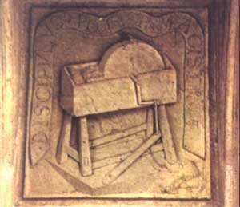<br>
                <font color="#330000"><font size="-1">caisson n°1, série
                    n°3, Dampierre-sur-Boutonne</font></font></p>
            </center>
          </blockquote>
        </blockquote>
        <p style="margin-left: 40px;"><font face="Arial,Helvetica"><font
              color="#000099">d'observer sur le caisson 1 de la
              troisième série une meule de grès (</font><font
              color="#660000"><font size="-1"><b><i>DM, II</i></b>, p.81</font></font><font
              color="#000099">) dont Fulcanelli nous dit que :</font></font></p>
        <blockquote style="margin-left: 40px;"> </blockquote>
        <blockquote>
          <blockquote style="margin-left: 40px;"><font
              face="Arial,Helvetica"><font size="-1"><font
                  color="#000099">"</font><i><font color="#660000">Considérée
dans


                    ses emplois divers, la meule est l'un des emblèmes
                    philosophiques chargés d'exprimer le dissolvant
                    hermétique, ou ce premier mercure sans lequel il est
                    tout à fait inutile d'entreprendre ni d'espérer rien
                    de profitable...Et quoique ce primitif sujet ne
                    présente pas les qualités ni la puissance du mercure
                    philosophique, il possède néanmoins tout ce qu'il
                    lui faut pour le devenir, et il le devient, en
                    effet, pourvu qu'on lui ajoute seulement la semence
                    métallique qui lui manque</font><font
                    color="#000099">".</font></i></font></font></blockquote>
          <font face="Arial,Helvetica"><font color="#000099">L'Adepte
              envisage ensuite ce mercure indiqué sur trois planches de
              l'<b><i><font size="-1">Art du Potier</font></i></b> (</font><font
              color="#660000"><font size="-1">Cyprian Piccolpassi,
                Paris, Librairie internationale, 1861</font></font><font
              color="#000099">). Il nous semble que ce qu'écrit
              Fulcanelli est très clair. Le premier Mercure (</font><font
              color="#660000"><font size="-1">Mercure commun</font></font><font
              color="#000099">) ou Sel des philosophes est donc de
              l'alumine, qui sous sa forme anhydre se présente comme une
              poudre blanche incombustible. Reprenons l'exposé de <font
                size="-1"><a href="../original/daubree-delesse.html">Gabriel-Auguste
                  Daubrée</a></font> :</font></font>
          <blockquote style="margin-left: 40px;"><font
              face="Arial,Helvetica"><font size="-1"><font
                  color="#000099">"</font><i><font color="#660000">Il
                    convient de rappeler ici qu'il y a une trentaine
                    d'années, M. Gaudin était parvenu, à l'aide d'un
                    chalumeau en platine d'une construction nouvelle, à
                    fondre l'<a href="../original/compendium.html#9.b">alun
                      ammoniacal</a> additionné de quelques millièmes de
                    chromate de potasse [une autre variété d'alun], et
                    avait obtenu des globules fondus ayant la
                    composition et la dureté du rubis oriental. Plus
                    tard, en 1857, il a obtenu le corindon cristallisé,
                    par la <a href="../original/reincrud.html" class="lien-repare" title="ancre absente de la page d'origine : lien ramené en haut de page">simple
                      calcination</a>, à une très haute température, de
                    l'alun ammoniacal.</font></i><font color="#000099">"</font></font></font></blockquote>
          <font face="Arial,Helvetica"><font color="#000099">Et plus
              loin,&nbsp; A. Daubrée examine la cristallisation du
              graphite où il reprend une description que l'on retrouve
              dans maints textes d'alchimie ancienne (Artephius, par
              exemple) :</font></font>
          <blockquote style="margin-left: 40px;"><font
              face="Arial,Helvetica"><font size="-1"><font
                  color="#000099">"</font><i><font color="#660000">...c'est
la


                    cristallisation du graphite, qui sort de certaines
                    fontes très carbonées par une sorte d'exsudation, et
                    qui vient soit se fixer en écailles brillantes à la
                    surface de la fonte elle-même, soit quelquefois
                    surnager à la surface du laitier. il faut que ce
                    graphite ait passé réellement par une sorte de
                    dissolution dans le bain de fonte</font></i><font
                  color="#000099">".</font></font></font></blockquote>
          <font face="Arial,Helvetica"><font color="#000099">Ce texte
              rappelle tout à fait les scories que nous avons vues
              décrites <font size="-1"><a
                  href="../original/symb-dir-prim.html" class="lien-repare" title="ancre absente de la page d'origine : lien ramené en haut de page">supra</a></font>.</font></font>
          <p><br>
            <a  name="c)-"></a><font face="Arial,Helvetica"><font
                color="#000099">d)- <u>les corindons colorés</u></font></font>
          </p>
          <p><font face="Arial,Helvetica"><font color="#000099">Voyons à
                quoi ressemblent ces gemmes prises dans leur gangue :</font></font>
          </p>
          <p><font color="#000099"><font face="Symbol"><font size="+2">a</font></font><font
                face="Arial,Helvetica">)-<i> <span style="color:
                    rgb(102, 0, 0);">le rubis</span> </i>: le plus gros
                rubis (mesurant jusqu'à 6 cm de longueur) proviennent
                des marbres de Mogok (Birmanie), d'alluvions de la
                péninsule de Malacca et de Ceylan.</font></font> </p>
          <center>
            <p>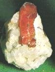<br>
              <font color="#330000"><font size="-1">Inde</font></font></p>
          </center>
          <p><font color="#000099"><font face="Symbol"><font size="+2">b</font></font><font
                face="Arial,Helvetica">)- <i style="color: rgb(102, 0,
                  0);">le saphir bleu</i> : on peut le trouver dans la
                saphirine. C'est un nésosilicate. Les gisements sont
                rares ; on trouve des cristaux limpides dans un gneiss
                au Groenland. Le minéral est caractéristique dans les
                roches riches en aluminium et magnésium. Seuls les
                cristaux d'un beau bleu et limpides servent en
                joaillerie et ils sont fort rares.</font></font> <br>
            &nbsp; </p>
          <center>
            <p>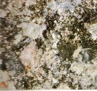<br>
              <font color="#330000"><font size="-1">saphirine dans un
                  gneiss, Val Codera, Sondrio, Italie</font></font></p>
          </center>
          <font face="Arial,Helvetica"><font color="#000099">Le cas du </font><font
              color="#660000">saphir</font><font color="#000099"> est
              semblable au rubis : c'est une pierre précieuse dérivée du
              corindon dont la couleur varie du bleu bleuet au bleu de
              nuit. Le terme saphir provient de l'hébreu « </font><i><font
                color="#660000"><font size="-1">sapir</font></font></i><font
              color="#000099"> » ; Jusqu'au XVIII<sup>e</sup> siècle,
              toutes les gemmes de couleur bleue étaient considérées
              comme des saphirs. Grâce à la connaissance de la
              composition chimique des pierres, de leur système
              cristallin, de leurs propriétés optiques et physiques, le
              saphir est maintenant différencié des pierres de même
              couleur et considéré comme une gemme qui possède ses
              propres caractéristiques. C'est en sanscrit la pierre
              consacrée à </font><font color="#660000">Saturne</font><font
              color="#000099">. Le saphir est donc du corindon bleu. Les
              autres variétés colorées étaient appelées auparavant le </font><font
              color="#660000">péridot</font><font color="#000099">
              oriental (</font><font color="#660000"><font size="-1">vert</font></font><font
              color="#000099">) ou la </font><font color="#660000">topaze</font><font
              color="#000099"> orientale (</font><font color="#660000"><font
                size="-1">jaune</font></font><font color="#000099">). On
              y trouve aussi des inclusions qui produisent l'effet «
              oeil de chat », avec une étoile à six branches. Les plus
              communs sont bleus (</font><font color="#660000"><font
                size="-1">bleu roi à bleu ciel</font></font><font
              color="#000099">). (</font><font color="#660000"><font
                size="-1">le bleu est donné par des traces de fer
                bivalent et de titane</font></font><font color="#000099">)
              les corindons jaunes, orangés, bruns, violet, vert sont
              aussi des saphirs. On peut trouver toutes les couleurs de
              l'arc-en-ciel.&nbsp; Le saphir est souvent l'objet de
              traitements visant à améliorer sa couleur et sa
              transparence. Les incolores ou très pâles prennent une
              teinte bleue exceptionnelle lorsque ils sont chauffés dans
              une substance colorante composée de fer et de titane à des
              températures s'approchant de leur point de fusion (</font><font
              color="#660000"><font size="-1">près de 1800°C</font></font><font
              color="#000099">). Quoiqu'il en soit, cela permet de
              comprendre dans un certain sens les multiples couleurs
              dont parlent les Adeptes dans leurs textes -attention,
              cela n'a rien à voir avec les régimes de couleur de
              Philalèthe qui sont attachés à des régimes de température,
              qui, par analogie, ont été identifiés aux sept planètes- ;
              voici un saphir étoilé :</font></font>
          <blockquote align="CENTER">
            <center><br>
              <font style="color: rgb(102, 0, 0);"
                face="Arial,Helvetica"><font size="-2">effet d'astérisme
                  sur un spahir<br>
                </font></font></center>
          </blockquote>
          <font face="Arial,Helvetica"><font color="#000099">L'effet
              d'astérisme est particulièrement visible. Au Sri Lanka, on
              extrait des saphirs d'un bleu myosotis légèrement mauve,
              cette remarque rendant compte là encore des couleurs
              violet ou bleu noir décrites dans les textes. Là encore,
              les saphirs représentaient la faveur divine, c'était
              toujours la pierre que choisissaient les Rois ou les
              ecclésiastiques et on leur accordait aussi des vertus
              médicinales et des pouvoirs d'orientation et et de guidage
              des voyageurs, cela n'étant pas sans nous rappeler que le
              voyageur en alchimie représente le Mercure commun. Des
              saphirs synthétiques sont aussi facilement fabriqués en
              substituant du fer et du titane à l'oxyde de chrome
              employé pour le rubis. La topaze et la tourmaline
              ressemblent au saphir bleu.</font></font><br>
          <font color="#000099"><font face="Symbol"><font size="+2">g</font></font><font
              face="Arial,Helvetica">)-<i style="color: rgb(102, 0, 0);">le


                cymophane</i> : c'est du chrysobéryl ; on le rencontre
              en cristaux pseudo-hexagonaux, de couleur jaune,
              vert-jaune, vert émeraude, grise ou brune. On trouve
              l'alexandrite à Takowaja dans l'Oural (Russie) et à
              Ceylan. On les nomme aussi des alumobéryls.</font></font>
          <br>
          &nbsp;
          <center>
            <p>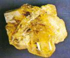<br>
              <font color="#000099"><font size="-1">Brésil</font></font></p>
          </center>
          <p><font color="#000099"><font face="Symbol"><font size="+2">d</font></font><font
                face="Arial,Helvetica">)- <i style="color: rgb(102, 0,
                  0);">la gahnite</i> : c'est un aluminate naturel de
                zinc du groupe des spinelles, découvert par J.G. Gahn
                (1745-1818), minéralogiste suédois. <br>
              </font></font></p>
          <div style="text-align: center;"><font color="#000099"><font
                face="Arial,Helvetica">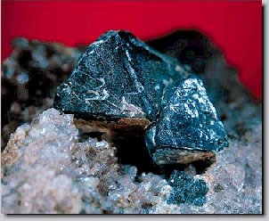</font></font><br>
          </div>
          <p> </p>
          <p><font color="#000099"><font face="Symbol"><font size="+2">e</font></font><font
                face="Arial,Helvetica">)- <i style="color: rgb(102, 0,
                  0);">la staurodite</i> : les cristaux prismatiques
                sont assez allongés, à faces rugueuses ou couvertes de
                patines terreuses. Fait intéressant, on relève de
                fréquentes macles très caractéristiques en croix grecque
                (à 90°) ou en croix de Saint-André (à 60°).</font></font>&nbsp;

            <br>
            <br>
          </p>
          <center>
            <p>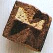<br>
              <font color="#000099"><font size="-1">macle à 90°, Minas
                  Gerais, Brésil</font></font></p>
          </center>
          <p><font face="Arial,Helvetica"><font color="#000099">Ce
                minéral se retrouve en association avec les grenats. On
                en trouve dans les micaschistes du Pizzo Fomo dans le
                Tessin (Suisse), en Moravie, en Bavière.</font></font></p>
        </blockquote>
        <blockquote>&nbsp;
          <p><a  name="néo-silicates"></a><font face="Arial,Helvetica"><font
                color="#000099">d)-<u> les silicates</u></font></font> </p>
          <p><span style="font-family: Wingdings;">- </span><font
              face="Arial,Helvetica"><font color="#000099">La </font><font
                color="#660000"><a href="#" class="lien-repare" title="ancre absente de la page d'origine (lien ramené en haut de page)">topaze</a></font><font
                color="#000099"> est une gemme dure, de couleur mordorée
                ; c'est un fluorosilicate naturel d'aluminium,
                orthorhombique, de formule <font size="-1">Al<sub>2</sub>SiO<sub>4</sub>F<sub>2</sub></font>.
                La légende rapporte que les premiers hommes qui
                découvrirent cette pierre étaient des naufragés qui
                échouèrent sur les rivages d'une île de la mer Rouge.
                Suite à un chauffage prudent, la topaze change de
                couleur artificiellement. Les topazes jaunes peuvent
                devenir roses ou bleues.</font></font> <font
              face="Arial, Helvetica, sans-serif"><font color="#000099">Cette

                histoire de naufragés rappelle tant celle de Sethon
                sauvant un pécheur en Ecosse, alors que le bateau avait
                été drossé à la côte qu'on ne eput s'empécher d'y voir
                une allusion. Nous avons signalé dans la section du <font
                  size="-1"><a href="../original/cosmopolite-0.html">Cosmopolite</a></font>
                [</font><font color="#660000"><font size="-1">Alexandre
                  Sethon</font></font><font color="#000099">] plusieurs
                naufrages analogues.</font></font> <br>
            &nbsp; </p>
          <center>
            <p>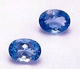<br>
              <br>
            </p>
          </center>
          <p><span style="font-family: Wingdings;">- </span><font
              face="Arial,Helvetica"><font color="#000099">L'</font><font
                color="#660000">améthyste</font><font color="#000099">
                orientale est une variété violette de corindon. Durant
                l'Antiquité, on attribuait à l'améthyste le pouvoir de
                protéger contre l'ivresse, d'où son origine étymologique
                "amethystos" qui signifie "ne pas être ivre". La couleur
                de l'améthyste va du pourpre au violet et du rose au
                lilac. Son exposition à des températures élevées (de 400
                à 800°C) la transforme en amétrine, pierre possédant
                deux couleurs : celle de l'améthyste et celle de la
                citrine.</font></font> </p>
          <center>
            <p>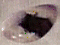<br>
              <br>
            </p>
          </center>
          <p><font face="Arial,Helvetica"><font color="#000099">Il ne
                nous paraît pas impossible que les alchimistes aient pu
                aussi, à partir de matériaux </font><font
                color="#660000">siliceux</font><font color="#000099">,
                obtenir des variétés d'</font><font color="#660000">opale</font><font
                color="#000099"> qui est du bioxyde siliceux hydrique <font
                  size="-1">SiO<sub>2</sub>n(H<sub>2</sub>O)</font>. Là,
                point d'alumine ; il est vrai que, par leurs textes, les
                alchimistes ont montré qu'ils avaient usé de divers
                procédés qui, à un titre divers, comprenaient de la </font><font
                color="#660000">silice</font><font color="#000099"> (</font><font
                color="#660000"><font size="-1">ne serait-ce qu'un
                  schiste par exemple ; voyez ce que nous en disons dans
                  la section <a href="../original/heraldique.html">héraldique et
                    alchimie</a></font></font><font color="#000099">).
                L'opale, en tout cas, est considérée comme l'une des
                plus mystérieuses des pierres précieuses. L'une de ses
                particularités est de présenter un phénomène
                d'iridescence rappelant l'arc-en-ciel et dont la couleur
                change suivant l'orientation de la pierre. En Orient,
                l'opale passe pour être une « ancre d'espérance », qui
                porte en elle les vertus de toutes les pierres
                précieuses. Pline l'Ancien, dans son <b><i><font
                      size="-1">Histoire Naturelle</font></i></b> écrit
                :</font></font> </p>
          <p><i><font face="Arial,Helvetica"><font size="-1"><font
                    color="#000099">"</font><font color="#660000"> En
                    elle, luit la douce flamme de l'escarboucle, la
                    pourpre brillante de l'améthyste, le splendide vert
                    marin de l'émeraude, le jaune d'or de la topaze, le
                    bleu profond du saphir et ainsi, toutes les couleurs
                    y chatoient en une incomparable mosaïque.</font><font
                    color="#000099">"</font></font></font></i> </p>
          <center>
            <p>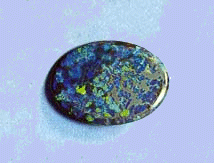<br>
              <br>
            </p>
          </center>
        </blockquote>
        <blockquote>&nbsp;
          <center>
            <p><a  name="10)-"></a><u><font face="Arial,Helvetica"><font
                    color="#000099"><font size="+1">10)- Les matières
                      premières des alchimistes<br>
                      <br>
                    </font></font></font></u></p>
          </center>
        </blockquote>
        <blockquote><font face="Arial,Helvetica"><font color="#000099">Nous


              l'avons maintes fois répété ailleurs : il y a plusieurs
              matières de base qui ont dû être préparées à part et
              utilisées par les alchimistes. Le problème fondamental est
              de savoir si le domaine de connaissances des anciens
              alchimistes leur permettait d'avoir accès aux corps qui
              permettent de reconstituer des gemmes de synthèse. Il leur
              fallait :</font></font>
          <p><font face="Arial,Helvetica"><font color="#000099">- de
                l'alumine ou de la silice ;</font></font> <br>
            <font face="Arial,Helvetica"><font color="#000099">- un
                oxyde métallique (chrome, fer, manganèse) ;</font></font>
            <br>
            <font face="Arial,Helvetica"><font color="#000099">- un
                fondant composé sans doute de deux corps ; il peut
                s'agir :</font></font> </p>
          <blockquote><font face="Arial,Helvetica"><font color="#000099">-
                d'un double <font size="-1"><a
                    href="../original/carbon-potasse.html">carbonate</a></font> de
                potasse et de soude ;</font></font> <br>
            <font face="Arial,Helvetica"><font color="#000099">- de <font
                  size="-1"><a href="../original/compendium.html#8">sulfate de
                    potasse</a></font> [cf. aussi section sur le <font
                  size="-1"><a href="../original/sulf-potasse.html">tartre vitriolé</a></font>]
                ;</font></font> <br>
            <font face="Arial,Helvetica"><font color="#000099">- du <font
                  size="-1"><a href="../original/reincrud.html" class="lien-repare" title="ancre absente de la page d'origine : lien ramené en haut de page">spath
                    fluor</a></font></font></font> <br>
            <font face="Arial,Helvetica"><font color="#000099">- d'oxyde
                de plomb sous forme d'aluminate de plomb ; le&nbsp;<a
                   name="bismuth"></a><a href="#bismuth">bismuth</a>,
                corps décrit par Paracelse, a été certainement utilisé
                par les alchimistes (</font><font color="#660000"><font
                  size="-1">le <a href="../original/cosmopolite-1.html">Cosmopolite</a>
                  et Isaac Newton en font mention</font></font><font
                color="#000099">) ;</font></font></blockquote>
          <font face="Arial,Helvetica"><font color="#000099">- un feu
              soutenu à une température de 1300°C au moins suivi d'une
              très lente diminution de la température ;</font></font> <br>
          <font face="Arial,Helvetica"><font color="#000099">- des
              acides : sulfurique [huile de vitriol], chlorhydrique
              [esprit de sel] et nitrique [eau forte] ;</font></font> <br>
          <font face="Arial,Helvetica"><font color="#000099">- d'autres
              substances : <a href="../original/salpetre.html">salpêtre</a>, <a
                href="../original/compendium.html">chaux</a></font></font>
          <p><font face="Arial,Helvetica"><font color="#000099">La suite
                de cet exposé aux pages suivantes :</font></font> </p>
          <p><font color="#000099"><font size="-1"><font
                  face="Arial,Helvetica"><a href="../original/introitus.html">Philalèthe</a>
                  (chapitre <a href="../original/philalethe-6.html">VI</a>, <a
                    href="../original/philalethe-7.html">VII</a>) | le <a
                    href="../original/imitat-prec.html">M</a>ercure philosophique |
                  le <a href="../original/soufre.html">S</a>oufre | synthèse de la <a
                    href="../original/compendium.html">P</a>ierre philosophale | Le <a
                    href="../original/sulf-potasse.html">t</a>artre vitriolé | <a
                    href="../original/reincrud.html">Réincrudation</a> - <a
                    href="../original/reincrud.html#3%29-">Hérauts d'Hermès</a> | <a
                    href="../original/etain.html">Voie humide</a> </font><font
                  face="Arial, Helvetica, sans-serif">| <a
                    href="../original/matiere.html">Matière</a> | <a
                    href="../original/fontenay.html">Fontenay</a> | <a
                    href="../original/merc-nat.html">Mercure de Nature</a> | etc.</font></font></font>
            <br>
            &nbsp; <br>
            &nbsp; <br>
          </p>
          <center>
            <p><a  name="Lexique"></a><b><font face="Arial,Helvetica"><font
                    color="#660000">Lexique</font></font></b></p>
          </center>
          <p><a  name="lexique"></a><font face="Arial,Helvetica"><font
                color="#000099">Voici encore pour terminer sur le
                symbolisme quelques analogies -notées à partir des <i><b><font
                      size="-1">Demeures Philosophales</font></b> et du
                  <b><font size="-1">Mystère des cathédrales </font></b></i>-
                que le lecteur sagace n'aura pas de peine à intégrer aux
                textes précédents. Veuillez noter que ce lexique <u>n'est
                  pas dressé</u> dans l'ordre de l'alphabet mais dans
                l'ordre chronologique de notre étude des textes :</font></font>
          </p>
          <p><font face="Arial,Helvetica"><font color="#000099"><font
                  size="-1">- Tempérance : horloge (avec sens de
                  lanterne) + mors avec brides ; une sorte d'horloge se
                  dit Pelecinon et, de Patrocle, le nom d'un éléphant
                  d'Antiochus</font></font></font> <br>
            <font face="Arial,Helvetica"><font color="#000099"><font
                  size="-1">- Force : arme + casque + tour ; c'est une
                  des filles de Jupiter et de Thémis</font></font></font>
            <br>
            <font face="Arial,Helvetica"><font color="#000099"><font
                  size="-1">- Justice : lion + balance + épée (renvoie à
                  Jupiter) ; c'est Thémis</font></font></font> <br>
            <font face="Arial,Helvetica"><font color="#000099"><font
                  size="-1">- balance : sert à prendre des mesures ; on
                  pesait dans l'antiquité avec un lingot de cuivre ;
                  enfin, par assonance phonétique, mens = Lune peut être
                  rapproché de mensorium (plateau d'une balance, mesure)</font></font></font>
            <br>
            <font face="Arial,Helvetica"><font color="#000099"><font
                  size="-1">- sabot : toupie, mouvement circulaire mais
                  aussi, obstacle, entrave</font></font></font> <br>
            <font face="Arial,Helvetica"><font color="#000099"><font
                  size="-1">- lion : renvoie à Léontica, fête égyptienne
                  donnée en l'honneur de Mithras (représenté avec une
                  face de lion) ; Mithras était le nom donné au Soleil
                  chez les Perses et aussi le nom propre du prêtre
                  d'Isis (Isis = corail noir = Vénus = Io = Demeter
                  --&gt; Lune)</font></font></font> <br>
            <font face="Arial,Helvetica"><font color="#000099"><font
                  size="-1">- lin : livre sibyllin (écrit sur du lin)</font></font></font>
            <br>
            <font face="Arial,Helvetica"><font color="#000099"><font
                  size="-1">- vert : cru, âcre, dur, impitoyable,
                  rugueux, hérissé</font></font></font> <br>
            <font face="Arial,Helvetica"><font color="#000099"><font
                  size="-1">- montagne d'Arménie : coraxicus mons</font></font></font>
            <br>
            <font face="Arial,Helvetica"><font color="#000099"><font
                  size="-1">- Psyché : renvoie à Vénus ; c'est le
                  symbole de l'Âme</font></font></font> <br>
            <font face="Arial,Helvetica"><font color="#000099"><font
                  size="-1">- lupus : poisson, araignée, mors armé de
                  pointes, grappin</font></font></font> <br>
            <font face="Arial,Helvetica"><font color="#000099"><font
                  size="-1">- Marthe : renvoie à Tarascon et à la
                  tarasque : c'est une indication que donne Fulcanelli
                  sur l'aluminium ; rappelons que le terme bauxite vient
                  des Baux (famille de Provence : Raimond, comte de
                  Gévaudan ; son fils Bertrand I<sup>er</sup> fut comte
                  d'Orange)</font></font></font> <br>
            <font face="Arial,Helvetica"><font color="#000099"><font
                  size="-1">- romarin : rosée de mer avec taurophtalmon,
                  sorte de romarin et tauropolos, surnom de Diane</font></font></font>
            <br>
            <font face="Arial,Helvetica"><font color="#000099"><font
                  size="-1">- hysope : violet</font></font></font> <br>
            <font face="Arial,Helvetica"><font color="#000099"><font
                  size="-1">- oxycrat : mélange d'eau et de vinaigre</font></font></font>
            <br>
            <font face="Arial,Helvetica"><font color="#000099"><font
                  size="-1">- enlumineur : argent en coquille</font></font></font>
            <br>
            <font face="Arial,Helvetica"><font color="#000099"><font
                  size="-1">- blanc d'argent : carbonate de plomb</font></font></font>
            <br>
            <font face="Arial,Helvetica"><font color="#000099"><font
                  size="-1">- Ogygos (<i>DM, II</i>, p.336) : renvoie à
                  la Béotie et à Thèbes fondée par Cadmos ; c'est aussi
                  la ville ou vit Calypso (--&gt; raisin)</font></font></font>
            <br>
            <font face="Arial,Helvetica"><font color="#000099"><font
                  size="-1">- Deucalion : déluge</font></font></font> <br>
            <font face="Arial,Helvetica"><font color="#000099"><font
                  size="-1">- 2 siècles : 2 générations</font></font></font>
            <br>
            <font face="Arial,Helvetica"><font color="#000099"><font
                  size="-1">- arche : renvoie au mont Ararat et aussi à
                  archée = arché, fille du second Jupiter ; l'arche de
                  Noë ou arca renvoie à Arcas, fils de Jupiter et de
                  Callisto (--&gt; ours et étoile pôlaire). Arcas
                  renvoie aussi à Mercure et de façon générale, toute
                  référence à une voûte vaut pour l'arc aussi appelé
                  arc-en-ciel (arcus)</font></font></font> <br>
            <font face="Arial,Helvetica"><font color="#000099"><font
                  size="-1">- vase sacré : urne funéraire = arcula,
                  diminutif de arca</font></font></font> <br>
            <font face="Arial,Helvetica"><font color="#000099"><font
                  size="-1">- cygne : renvoie à Zeus Jupiter, accouplé
                  avec Léda ; aussi cycnus : Thèbes, constellation, fils
                  de Neptune</font></font></font> <br>
            <font face="Arial,Helvetica"><font color="#000099"><font
                  size="-1">- fictilis : fait d'argile, peint, inventé,
                  imaginé (--&gt; mythes)</font></font></font> <br>
            <font face="Arial,Helvetica"><font color="#000099"><font
                  size="-1">- luteus : de boue, d'argile, mais aussi
                  jaune tirant sur le rouge (rougeâtre --&gt; aurore) et
                  luteum : jaune d'oeuf</font></font></font> <br>
            <font face="Arial,Helvetica"><font color="#000099"><font
                  size="-1">- jugum : constellation de la Balance, joug,
                  char, crête ou sommet d'une montagne, hauteur, cime</font></font></font>
            <br>
            <font face="Arial,Helvetica"><font color="#000099"><font
                  size="-1">- salientes : eaux jaillissantes (--&gt;
                  Sel)</font></font></font> <br>
            <font face="Arial,Helvetica"><font color="#000099"><font
                  size="-1">- ilex : sorte de chêne, yeuse, chêne vert,
                  à compléter par (s)ilex : silice et sileo: garder le
                  silence --&gt; cf. Silenus = père nourricier de
                  Bacchus ; les silènes avaient des oreilles velues et
                  des pieds de cheval</font></font></font> <br>
            <font face="Arial,Helvetica"><font color="#000099"><font
                  size="-1">- colombes : renvoie peut-être à
                  (colum)binus : (filtre de sable), sinon : vigne dont
                  les raisins sont gris cendré</font></font></font> <br>
            <font face="Arial,Helvetica"><font color="#000099"><font
                  size="-1">- pierres précieuses : l'église catholique
                  recommande aux Evêques et Cardinaux de porter un
                  saphir à la main droite</font></font></font> <br>
            <font face="Arial,Helvetica"><font color="#000099"><font
                  size="-1">- saphir : pierre céleste</font></font></font>
            <br>
            <font face="Arial,Helvetica"><font color="#000099"><font
                  size="-1">- mercure des sages = lune philosophique =
                  rosée cuite</font></font></font> <br>
            <font face="Arial,Helvetica"><font color="#000099"><font
                  size="-1">- Chalybs : mors d'acier à rapprocher de
                  chalybes : peuple du Pont (--&gt; eau pontique)</font></font></font>
            <br>
            <font face="Arial,Helvetica"><font color="#000099"><font
                  size="-1">- Centaures : Ixion (--&gt; Ixos, petit
                  poisson = rémora). Ixis correspond peut-être à
                  l'alunite Al<sub>2</sub>O<sub>3</sub> ; il s'unit à
                  une nuée (vapeurs) qui correspond à Héra ; les
                  centaures sont les fruits de ces amours. Ixis est lié
                  au moyen de serpents à une roue qui tourne sans
                  relâche. Héra est fille de Cronos (Saturne) et de Rhéa
                  (Cybèle) qui enfanta Zeus (Jupiter)</font></font></font>
            <br>
            <font face="Arial,Helvetica"><font color="#000099"><font
                  size="-1">- Nymphes: Néréide (mer) ; Naïade (fleuve) ;
                  Dryades (forêt de chêne) ; Méliades (frêne)</font></font></font>
            <br>
            <font face="Arial,Helvetica"><font color="#000099"><font
                  size="-1">- Junon : le principe féminin</font></font></font>
            <br>
            <font face="Arial,Helvetica"><font color="#000099"><font
                  size="-1">- Diane : fille de Latone</font></font></font>
            <br>
            <font face="Arial,Helvetica"><font color="#000099"><font
                  size="-1">- sel de la pierre : confusion voulue avec :
                  le salpêtre, le sel gemme, le sel alembroth et le sel
                  de Saturne</font></font></font> <br>
            <font face="Arial,Helvetica"><font color="#000099"><font
                  size="-1">- borax : mis -sans doute à tort- pour la
                  chrysocolle (silicate hydraté naturel de cuivre, vert
                  bleuâtre)</font></font></font> <br>
            &nbsp; </p>
          &nbsp;&nbsp;
          <center>
            <p><u><font face="Arial,Helvetica"><font color="#000099"><font
                      size="+1">voyage des&nbsp;<a  name="Argonautes"></a>Argonautes</font></font></font></u></p>
          </center>
          <p><font face="Arial,Helvetica"><font color="#660000"><font
                  size="-1">Il ne s'agit là que d'une ébauche
                  d'interprétation. J'ai réservé pour ce voyage, qui me
                  paraît fondamental - vu sous l'angle historique,
                  mythologique et symbolique -, un lieu de croisement
                  exceptionnel, une étude de plus vaste étendue que je
                  n'ai pu mener à bien, faute de temps suffisant pour le
                  projet spécial que je lui réserve.</font></font></font>
          </p>
          <p><font face="Arial,Helvetica"><font color="#000099"><b>1)-</b>
                <b><font size="-1">Lemnos</font></b> : Vulcain, voir ses
                rapports avec <a href="../original/philalethe-6.html#H%C3%A9pha%C3%AFstos">Héphaistos</a></font></font>
            <br>
            <font face="Arial,Helvetica"><font color="#000099"><b>2)-</b>
                <b><font size="-1">Samothrace</font></b> : renvoie aux
                dieux Cabires, qui avaient des pouvoirs étendus sur les
                métaux ; on connaît deux représentations antiques de
                Cabire, l'un portant un manteau et l'autre coiffé d'un
                bonnet pointu et tenant en main une branche de cyprès (</font><font
                color="#660000"><font size="-1">symbole de la mort
                  --&gt; putréfaction</font></font><font color="#000099">)
                ; <a href="../original/st-gregoire-vievre.html#lyre">lyre</a> :
                peut-être le symbole du lien du Mercure ; c'est un
                instrument harmonieux qui permet de dompter et de
                charmer ; elle instaure la concorde. Orphée calme les
                flots agités, surpasse la séduction des sirènes et
                endort le dragon de&nbsp;<a  name="Colchide"></a>Colchide
                ;</font></font> <br>
            <font face="Arial,Helvetica"><font color="#000099"><b>3)-</b>
                franchissement de l'<b><font size="-1">Hellespont</font></b>
                : pontos, renvoie à la mer noire (</font><font
                color="#660000"><font size="-1">--&gt; voir <a
                    href="../original/toyson.html#Phrixos%20et%20Hell%C3%AA">mythe de
                    Phrixos et Hellê</a></font></font><font
                color="#000099">) ;</font></font> <br>
            <font face="Arial,Helvetica"><font color="#000099"><b>4)-</b>
                <b><font size="-1">Cyzique</font></b>, pays des Doliones
                : dololium (tonnelet), dolium (</font><font
                color="#660000"><font size="-1">tonne, tonneau mais
                  aussi douleur</font></font><font color="#000099">).
                survenue d'une tempête, rejetés à Cyzique, combats ++,
                puis honneur rendue aux dépouilles mortelles du Roi et
                des guerriers - rapports avec la dissolution des corps
                dans le Mercure ;</font></font> <br>
            <font face="Arial,Helvetica"><font color="#000099"><b>5)-</b>
                <b><font size="-1">Mysie</font></b> : Hylas était allé
                puiser de l'eau à la source d'une fontaine, enlevé alors
                par les nymphes. Héraclès est aidé par Polyphème (</font><font
                color="#660000"><font size="-1">--&gt; voir mythe de
                  Polyphème ; en fait il y a deux Polyphèmes, l'un qui a
                  participé à l'expédition des Argonautes ; l'autre qui,
                  étant fils de Poséïdon, contracte donc des rapports
                  avec <a href="../original/soufre.html#Prot%C3%A9e">Protée</a> que
                  nous avons vu dans la section sur le Soufre et dans la
                  <a href="../original/toyson.html#Phrixos%20et%20Hell%C3%AA">toison d'or</a>
                  de Trismosin</font></font><font color="#000099">)</font></font>
            <br>
            <font face="Arial,Helvetica"><font color="#000099"><b>6)-</b>
                <b><font size="-1">Thrace</font></b> : le divin Phinée
                est débarassé des Harpyes qui le tourmentaient sans
                cesse par Zétès : il y a sans doute des rapports de
                cabale phonétique entre Zétès, Zéthos et <font
                  size="-1">AZOTH</font> ; ceux avec <a
                  href="../original/st-gregoire-vievre.html#AZOTH">Zéthos</a> ont été
                déjà analysés -cf. aussi le <a
                  href="../original/liber-artephius.html#azoth">livre d'Artéphius</a>&nbsp;

                ; Zétès peut constituer avec son frère Calaïs, tous deux
                ailés, des symboles mercuriels qui évoquent quelque
                sublimation comme en témoigne cette délivrance de
                Phinée. La délivrance de Phinée représente la fin de la
                <u>grande éclipse du soleil et de la lune de Lulle</u>,
                c'est-à-dire la fin de la dissolution des corps au 3<sup>ème</sup>
                oeuvre.</font></font> <br>
            <font face="Arial,Helvetica"><font color="#000099"><b>7)-</b>
                passage des <b><font size="-1">Symplégades</font></b>
                :&nbsp;<a  name="Phinée"></a>Phinée, pour récompenser
                Jason, lui révèle le moyen de passer entre des roches
                flottantes, qui écrasaient les navires. Les Symplégades
                [</font><font color="#660000"><font size="-1">roches
                  cyanées</font></font><font color="#000099">] étaient
                deux écueils à l'entrée du Pont-Euxin qui, suivant la
                légende, s'écartaient puis se rapprochaient pour briser
                les navires ; cette légende a trait au début de la phase
                sèche dans le 3<sup>ème</sup> oeuvre où les cristaux [</font><font
                color="#660000"><font size="-1">Symplegades hermétiques</font></font><font
                color="#000099">] apparaissent par des phénomènes
                d'adhésion et de cohésion ; il est assez étrange de
                constater que cet état intermédiaire et dynamique [</font><font
                color="#660000"><font size="-1">les roches ne sont pas
                  inertes</font></font><font color="#000099">] prend
                lieu à la sortie du Pont-Euxin, c'est-à-dire du symbole
                de la putréfaction et de la dissolution des corps ;</font></font>
            <br>
            <font face="Arial,Helvetica"><font color="#000099"><b>8)-</b>
                <b><font size="-1">Colchide</font></b> : acquisition par
                Jason de la Toyson d'or, c'est-à-dire du Soufre blanc,
                que possède Aiétès, fils du soleil ;</font></font> <br>
            <font face="Arial,Helvetica"><font color="#000099"><b>9)-</b>
                démembrement du corps d'<b><font size="-1">Absyrtos</font></b>,
                fils d'Aiétès par Médée [</font><font color="#660000"><font
                  size="-1">cf. <a href="../original/toyson.html#s%C3%A9paration">figure

                    X</a> de la <a href="../original/toyson.html">toyson d'or de
                    Trismosin</a></font></font><font color="#000099">] ;
                le démembrement est requis pour la purification, par
                laquelle va s'opérer le rajeunissement du roi et la
                renaissance ;</font></font> <br>
            <font face="Arial,Helvetica"><font color="#000099"><b>10)-</b>
                <b><font size="-1">courroux de&nbsp; Zeus</font></b> ;
                un devin déclare que seule Circé pourra purifier le
                navire Argo du crime de Médée ; Circé est apparemment la
                soeur d'Absyrtos, puisqu'elle est fille d'Hélios
                [Aiétès] et de Perséis. Circé, entre autres pouvoirs
                magiques, pouvair, paraît-il, faire descendre du ciel
                les étoiles [ce qui correspond au firmament alchimique
                de Philalèthe] ;</font></font> <br>
            <font face="Arial,Helvetica"><font color="#000099"><b>11)-</b>
                <b><font size="-1">Orphée</font></b>, grâce à sa lyre
                magique, arrive à empécher les Sirènes de séduire Jason
                et ses compagnons ; <font size="-1"><a
                    href="../original/st-gregoire-vievre.html#lyre">Orphée</a></font>,
                symbole du <font size="-1"><a
                    href="../original/heraldique.html" class="lien-repare" title="ancre absente de la page d'origine : lien ramené en haut de page">sel harmoniac
                    sophique</a></font>...</font></font> <br>
            <font face="Arial,Helvetica"><font color="#000099"><b>12)-</b>
                la légende de <b><font size="-1">Charybde et Scylla</font></b>
                : fille de Poséïdon et de Gaïa [</font><font
                color="#660000"><font size="-1">donc au plan hermétique,
                  tenant de la Terre et de Protée, lui-même fils de
                  Poséïdon</font></font><font color="#000099">],
                Charybde engloutit trois fois par jour [cela
                n'évoque-t-il pas les trois sublimations philosphiques]
                d'énormes paquets d'eau dans des mugissements
                terrifiants [</font><font color="#660000"><font
                  size="-1">nous ne sommes pas loin de </font></font></font><font
              color="#660000"><font face="Symbol"><font size="+1">titanoV</font></font><font
                face="Arial,Helvetica"><font size="-1">; on sait que la
                  chaux vive s'éteint avec un bruit qui rappelle celui
                  que fait une épée plongée dans l'eau</font></font></font><font
              face="Arial,Helvetica"><font color="#000099">] ; quant à
                Scylla, il nous suffit déjà de savoir qu'elle a pu
                [selon la version] être enfantée de Typhon et d'<font
                  size="-1"><a href="../original/gardes-corps.html" class="lien-repare" title="ancre absente de la page d'origine : lien ramené en haut de page">Echidna</a></font>
                ; nous avons déjà étudié le symbolisme d'Echidna dans la
                section des Gardes du corps à l'occasion de l'examen des
                <font size="-1"><a href="../original/fontenay.html">Douze Travaux
                    d'Hercule</a></font>. Il est clair qu'ici, plusiurs
                légendes se croisent et l'on est fondé à penser qu'il
                existe des rapports évidents entre le mythe des
                Argonautes et le voyage de Jason et Enée. Voyez par
                exemple, les degrés de parenté existant entre Cerbère,
                Typhon et Echidna. Scylla contracte des rapports avec la
                transformation des corps : Circé prépara, sur la demande
                de Glaucos, amoureux éconduit de Scylla, qui était très
                belle, un poison végétal qu'elle versa dans la fontaine
                où la nymphe avait coutume de se baigner. Lorsque Scylla
                s'y plongea [</font><font color="#660000"><font
                  size="-1">dissolution des corps</font></font><font
                color="#000099">], son corps, aux formes si parfaites,
                se métamorphosa en un monstre pourvu de six pattes
                griffues et de six têtes de chien, qui, ouvrant leurs
                gueules énormes, hurlaient comme de slions et
                découvraient trois rangées de dents. Il s'agit là d'un
                monstre qui a des traits de <font size="-1"><a
                    href="../original/philalethe.html#chim%C3%A8re">Chimère</a></font>
                et dont l'aspect est littéralement parlant, <font
                  size="-1"><a href="../original/soufre.html#Prot%C3%A9e">protéiforme</a></font>.</font></font>
            <br>
            <font face="Arial,Helvetica"><font color="#000099"><b>13)-</b>
                l'arrivée à <b><font size="-1">Corcyre</font></b> :
                petit-fils de Poséïdon, Alcinoos avait pour habitude de
                réconforter les héros qui étaient naufragés sur son île
                ; il leur offrait l'hospitalité dans ses jardins
                magiques où mûrissaient toute l'année [</font><font
                color="#660000"><font size="-1">cf. le <b><i><a
                        href="../original/songe-verd.html">Songe Verd</a></i></b></font></font><font
                color="#000099">] les fruits les plus rares [</font><font
                color="#660000"><font size="-1">peut-être des <a
                    href="../original/gardes-corps.html" class="lien-repare" title="ancre absente de la page d'origine : lien ramené en haut de page">grenades</a>...</font></font><font
                color="#000099">]</font></font> <br>
            <font face="Arial,Helvetica"><font color="#000099"><b>14)-</b>
                départ de <b><font size="-1">Crète</font></b> : les
                Argonautes&nbsp; sont entourés d'une nuit opaque en
                quittant l'île [</font><font color="#660000"><font
                  size="-1">seraient-ce les ombre cimmériennes ?</font></font><font
                color="#000099">] ; ils supplient alors Phoebos [</font><font
                color="#660000"><font size="-1">Apollon</font></font><font
                color="#000099">] de les éclairer et abordent dans l'île
                des Sporades [</font></font><font color="#660000"><font
                face="Symbol"><font size="+1">sporaV</font></font><font
                face="Arial,Helvetica"><font size="-1">, proche de </font></font><font
                face="Symbol"><font size="+1">spora</font></font><font
                face="Arial,Helvetica"><font size="-1"> = ensemencement,
                  origine, naissance : c'est le début de la
                  cristallisation et de la formation de la Pierre</font></font></font><font
              face="Arial,Helvetica"><font color="#000099">]</font></font>
            <br>
            &nbsp; </p>
          <p><br>
          </p>
          <center>
            <p><font face="Wingdings"><font size="+2">¯</font></font></p>
          </center>
          <p><font face="Arial,Helvetica"><font color="#000099"><font
                  size="-1">- or enté : greffé (--&gt; le stade ultime
                  de la Grande Coction)</font></font></font> <br>
            <font face="Arial,Helvetica"><font color="#000099"><font
                  size="-1">- mont de la Victoire : Mont-Joie , victoire
                  : palma - patte d'oie - palmier - pousse - jet</font></font></font>
            <br>
            <font face="Arial,Helvetica"><font color="#000099"><font
                  size="-1">- étoile : sidus (nuit, tempête)</font></font></font>
            <br>
            <font face="Arial,Helvetica"><font color="#000099"><font
                  size="-1">- description des cryptes des cathédrales
                  (p.75 des <i>Mystères</i>) : Fulcanelli note une
                  volonté nocturne, muette, rigide, tendue dans une
                  résistance perpétuelle à l'écrasement ; crypte :
                  crypta ; voir cryptos : ancien nom de Chypre.</font></font></font>
            <br>
            <font face="Arial,Helvetica"><font color="#000099"><font
                  size="-1">- <i>p.75 des Mystères</i> : allusion à la
                  vierge noire de Notre Dame du Puy, décorée de ceps de
                  vigne et d'épis de blés.</font></font></font> <br>
            <font face="Arial,Helvetica"><font color="#000099"><font
                  size="-1">- Cérès : la sève sortie de la terre : la
                  matière première</font></font></font> <br>
            <font face="Arial,Helvetica"><font color="#000099"><font
                  size="-1">- Hiérophante : renvoie au mythe de
                  Demeter-Core-Triptolème (--&gt; Grande Coction)</font></font></font>
            <br>
            <font face="Arial,Helvetica"><font color="#000099"><font
                  size="-1">- Demeter : fille de Saturne et de Rhéa
                  (---&gt; germination, maturité)</font></font></font> <br>
            <font face="Arial,Helvetica"><font color="#000099"><font
                  size="-1">- Poséidon : dissipe l'humidité (fut
                  transformé en cheval)</font></font></font> <br>
            <font face="Arial,Helvetica"><font color="#000099"><font
                  size="-1">- Core-Perséphone : putréfaction puis
                  renaissance</font></font></font> <br>
            <font face="Arial,Helvetica"><font color="#000099"><font
                  size="-1">- Triptolène : incarnation du grain de blé</font></font></font>
            <br>
            <font face="Arial,Helvetica"><font color="#000099"><font
                  size="-1">- <i>p.47 - 81 des Mystères</i> :
                  correspond à l'exposition du compendium alchimique</font></font></font>
            <br>
            <font face="Arial,Helvetica"><font color="#000099"><font
                  size="-1">- chien : canis mais aussi agent : canis et
                  gris : canus</font></font></font> <br>
            <font face="Arial,Helvetica"><font color="#000099"><font
                  size="-1">- sceptre de Rhéa (--&gt; Cybèle)</font></font></font>
            <br>
            <font face="Arial,Helvetica"><font color="#000099"><font
                  size="-1">- Dindyme : montagne de Phrygie avec le
                  temple de cybèle (Dindymena)</font></font></font> <br>
            <font face="Arial,Helvetica"><font color="#000099"><font
                  size="-1">- javelot d'Atalante (légende béotienne et
                  arcadienne) + Hippoménès = les deux lions de Cybèle</font></font></font>
            <br>
            <font face="Arial,Helvetica"><font color="#000099"><font
                  size="-1">- Herakles : l'Adepte lui-même</font></font></font>
            <br>
            <font face="Arial,Helvetica"><font color="#000099"><font
                  size="-1">- lis entre les épines : lilium (--&gt; lis,
                  cheval de frise --&gt; phrygium)</font></font></font>
            <br>
            <font face="Arial,Helvetica"><font color="#000099"><font
                  size="-1">- cornu : cornes lunaires, cor, trompette,
                  arc, lanterne, table d'harmonie, bâton, javelot et
                  aussi sommet d'une montagne et aîles (cornibus) ; par
                  ailleurs corne est l'équivalent de sabot. On perçoit
                  ainsi la nécessité d'un fil d'Ariane si l'on veut se
                  débrouiller dans ce labyrinthe</font></font></font> <br>
            <font face="Arial,Helvetica"><font color="#000099"><font
                  size="-1">- miel = mel (--&gt; melissa = nymphe qui
                  trouva le moyen de cueillir le miel) et (--&gt;
                  abeilles = apis, boeuf adoré en Egypte)</font></font></font>
            <br>
            <font face="Arial,Helvetica"><font color="#000099"><font
                  size="-1">- héraut : Céryx, fils d'Aglauros et de
                  Hermès (--&gt; voir mythe de Dyonisos et les rapports
                  avec Bacchus)</font></font></font> <br>
            <font face="Arial,Helvetica"><font color="#000099"><font
                  size="-1">- scutum : bouclier ovale et convexe puis
                  long et creux, comme une tuile faîtière ; à rapprocher
                  de scutulatus : à mailles en forme de losange et de
                  scutula : carreau (--&gt; cf. les <i>Figures
                    Hyéroglyphiques</i> de N. Flamel, et notamment celle
                  montrant des parcelles dans le jardin où l'on aperçoit
                  le chêne)</font></font></font> <br>
            <font face="Arial,Helvetica"><font color="#000099"><font
                  size="-1">- fremum : chevaux, attelage</font></font></font>
            <br>
            <font face="Arial,Helvetica"><font color="#000099"><font
                  size="-1">- xylophyton : consoude à rapprocher du
                  myosotis--&gt; <u><a href="#alun_roche">alum</a></u>=
                  consoude (barraginacée) et cotonea : grande consoude ;
                  par ailleurs, Cotonis est une des îles Echinades et
                  cotoneus : de cognassier, coing.</font></font></font>
            <br>
            <font face="Arial,Helvetica"><font color="#000099"><font
                  size="-1">- vair : varius (bigarré, moucheté)</font></font></font>
            <br>
            <font face="Arial,Helvetica"><font color="#000099"><font
                  size="-1">- faire voler l'aigle : porter la lumière à
                  la surface, faire sortir la lumière du tombeau (--&gt;
                  résultat débutant de la Grande Coction, probablement)</font></font></font>
            <br>
            <font face="Arial,Helvetica"><font color="#000099"><font
                  size="-1">- taureau = Soleil = soufre</font></font></font>
            <br>
            <font face="Arial,Helvetica"><font color="#000099"><font
                  size="-1">- vache = Lune = Mercure</font></font></font>
            <br>
            <font face="Arial,Helvetica"><font color="#000099"><font
                  size="-1">- cohobation : extraction du Sel du Lion
                  rouge par le secours de l'Esprit du Lion vert</font></font></font>
            <br>
            <font face="Arial,Helvetica"><font color="#000099"><font
                  size="-1">- <i>p. 133 des Mystères</i> : allusion au
                  rubis et à l'émeraude</font></font></font> <br>
            <font face="Arial,Helvetica"><font color="#000099"><font
                  size="-1">- coup du chien : coup de dès malheureux</font></font></font>
            <br>
            <font face="Arial,Helvetica"><font color="#000099"><font
                  size="-1">- Armenium : couleur bleue</font></font></font>
            <br>
            <font face="Arial,Helvetica"><font color="#000099"><font
                  size="-1">- corassiae : Egée (--&gt; voile noire)</font></font></font>
            <br>
            <font face="Arial,Helvetica"><font color="#000099"><font
                  size="-1">- corax : corbeau --&gt; noir</font></font></font>
            <br>
            <font face="Arial,Helvetica"><font color="#000099"><font
                  size="-1">- coraxicus mons: montagne d'Arménie ; le
                  chien du Corascène fait peut-être allusion à la
                  litharge (oxyde de plomb) - il s'agit d'une erreur :
                  le chien du Corascène (ou plutôt Khorassan) renvoie au
                  principe fixe.</font></font></font> <br>
            <font face="Arial,Helvetica"><font color="#000099"><font
                  size="-1">- eau permanente : permaneo = rester et
                  permano = transpirer, s'insinuer, être filtré</font></font></font>
            <br>
            <font face="Arial,Helvetica"><font color="#000099"><font
                  size="-1">- percolo : digérer, filtrer, honorer,
                  orner, parer</font></font></font> <br>
            <font face="Arial,Helvetica"><font color="#000099"><font
                  size="-1">- consul : épithète de Jupiter</font></font></font>
            <br>
            <font face="Arial,Helvetica"><font color="#000099"><font
                  size="-1">- rhéteur (--&gt; discussion = examen
                  attentif, dissolvant, résolutif)</font></font></font>
            <br>
            <font face="Arial,Helvetica"><font color="#000099"><font
                  size="-1">- Cadmos : sa fille, Autonoe, est la mère
                  d'Actéon qui est mort, changé en cerf, dévoré par des
                  chiens</font></font></font> <br>
            <font face="Arial,Helvetica"><font color="#000099"><font
                  size="-1">- multiplication (--&gt; multiplex =
                  contourné, cf. les <i>scrowles</i> de Ripley) à
                  rapprocher de : torsadé = stamina</font></font></font>
            <br>
            <font face="Arial,Helvetica"><font color="#000099"><font
                  size="-1">- <i>p. 98 des Mystères</i> : à propos du
                  massacre des Innocents (--&gt; cf. Flamel) et du chien
                  de Corascène (noir) et de la chienne d'Arménie (bleue)</font></font></font>
            <br>
            <font face="Arial,Helvetica"><font color="#000099"><font
                  size="-1">- durée d'une génération (--&gt; saeculum,
                  33 ans et 4 mois souvent cité comme le temps
                  "allégorique" qu'il faut pour aboutir au grand oeuvre)</font></font></font>
            <br>
            <font face="Arial,Helvetica"><font color="#000099"><font
                  size="-1">- testa : coquille, tuile, vase en terre
                  cuite, écaille, carapace de tortue</font></font></font>
            <br>
            <font face="Arial,Helvetica"><font color="#000099"><font
                  size="-1">- concha : coquillage d'où l'on tire la
                  pourpre</font></font></font> <br>
            <font face="Arial,Helvetica"><font color="#000099"><font
                  size="-1">- putamen : ce que l'on retranche, coquille
                  de noix ou d'oeuf</font></font></font> <br>
            <font face="Arial,Helvetica"><font color="#000099"><font
                  size="-1">- putatio : émondage, taille à rapprocher de
                  Puta : déesse qui présidait à la taille des arbres</font></font></font>
            <br>
            <font face="Arial,Helvetica"><font color="#000099"><font
                  size="-1">- calyx : corolle des fleurs, coquille,
                  carapace</font></font></font> <br>
            <font face="Arial,Helvetica"><font color="#000099"><font
                  size="-1">- <i>p. 186 des Mystères</i> : offerus = ob
                  + fero --&gt; mettre en mouvement, animer</font></font></font>
            <br>
            <font face="Arial,Helvetica"><font color="#000099"><font
                  size="-1">- ceinture = cingulum (ceinture, baudrier,
                  sangle, ventrière)</font></font></font> <br>
            <font face="Arial,Helvetica"><font color="#000099"><font
                  size="-1">- zona : ceinture, constellation d'Orion</font></font></font>
            <br>
            <font face="Arial,Helvetica"><font color="#000099"><font
                  size="-1">- ventre : alvus (excréments, déjection,
                  ruche, coque de navire)</font></font></font> <br>
            <font face="Arial,Helvetica"><font color="#000099"><font
                  size="-1">- loyal : probe, de bon aloi (--&gt;
                  aerarium, temple de Saturne)</font></font></font> <br>
            <font face="Arial,Helvetica"><font color="#000099"><font
                  size="-1">- échinus : ornement au chapiteau des
                  colonnes ioniques et doriques</font></font></font> <br>
            <font face="Arial,Helvetica"><font color="#000099"><font
                  size="-1">- echinae : serpent femelle</font></font></font>
            <br>
            <font face="Arial,Helvetica"><font color="#000099"><font
                  size="-1">- Echinades : îles de la mer ionienne</font></font></font>
            <br>
            <font face="Arial,Helvetica"><font color="#000099"><font
                  size="-1">- Echidne : engendrée par Gaïa et Pontos</font></font></font>
            <br>
            <font face="Arial,Helvetica"><font color="#000099"><font
                  size="-1">- abaddir : bétyle, pierre que Rhéa donna à
                  manger à Cronos au lieu de Jupiter</font></font></font>
            <br>
            <font face="Arial,Helvetica"><font color="#000099"><font
                  size="-1">- arbrisseaux : cisthos = ciste et schinos =
                  lentisque ; cistophoros : pièce de monnaie asiatique
                  qui portait empreinte de la corbeille sacrée de
                  Bacchus ; aubépine : spina alba (épine blanche)</font></font></font>
            <br>
            <font face="Arial,Helvetica"><font color="#000099"><font
                  size="-1">- aube : alba mais aussi alve : planchette</font></font></font>
            <br>
            <font face="Arial,Helvetica"><font color="#000099"><font
                  size="-1">- quercus: le vaisseau Argo</font></font></font>
            <br>
            <font face="Arial,Helvetica"><font color="#000099"><font
                  size="-1">- cochenille : coccum (écarlate)</font></font></font>
            <br>
            <font face="Arial,Helvetica"><font color="#000099"><font
                  size="-1">- son de l'airain : trompettes, cymbales,
                  armes</font></font></font> <br>
            <font face="Arial,Helvetica"><font color="#000099"><font
                  size="-1">- <i>DM, II, p.200</i> : armillaire :
                  armille = bracelet = cercle</font></font></font> <br>
            <font face="Arial,Helvetica"><font color="#000099"><font
                  size="-1">- palea : paille, balle du blé, limaille</font></font></font>
            <br>
            <font face="Arial,Helvetica"><font color="#000099"><font
                  size="-1">- Absolu : absolvo = détacher, délier,
                  dégager et solvere = dissoudre</font></font></font> <br>
            <font face="Arial,Helvetica"><font color="#000099"><font
                  size="-1">- erechnea : châtaigne ou marron</font></font></font>
            <br>
            <font face="Arial,Helvetica"><font color="#000099"><font
                  size="-1">- spira : noeud de serpents, anneaux,
                  replis, tresse</font></font></font> <br>
            <font face="Arial,Helvetica"><font color="#000099"><font
                  size="-1">- caracoler : gyrus = cercle que l'on fait
                  faire à un cheval à droite, à gauche ; renvoie aussi à
                  hélice et spirale --&gt; mouvement de va et vient</font></font></font>
            <br>
            <font face="Arial,Helvetica"><font color="#000099"><font
                  size="-1">- perspicilia : examiner soigneusement à
                  rapprocher de scutor = <u>explorer les lieux communs</u>
                  pour en tirer des arguments, chercher des filons p`rmi
                  les rochers</font></font></font> <br>
            <font face="Arial,Helvetica"><font color="#000099"><font
                  size="-1">- serenator : qui rend l'air serein
                  (épithète de Jupiter)</font></font></font> <br>
            <font face="Arial,Helvetica"><font color="#000099"><font
                  size="-1">- tan : écorce de chêne moulue</font></font></font>
            <br>
            <font face="Arial,Helvetica"><font color="#000099"><font
                  size="-1">- roro : tomber goutte à goutte (--&gt; rhus
                  : sumac, arbrisseau riche en tanin)</font></font></font>
            <br>
            <font face="Arial,Helvetica"><font color="#000099"><font
                  size="-1">- Liber : vieille divinité, proche de
                  Bacchus</font></font></font> <br>
            <font face="Arial,Helvetica"><font color="#000099"><font
                  size="-1">- air = aether = éther : air subtile des
                  régions supérieures, ciel, Ether = Jupiter, dieu de
                  l'Air</font></font></font> <br>
            <font face="Arial,Helvetica"><font color="#000099"><font
                  size="-1">- ilia (des) : ventre = Rhéa Silvia</font></font></font>
            <br>
            <font face="Arial,Helvetica"><font color="#000099"><font
                  size="-1">- cassus : vide, vain -qui nous explique que
                  tant de textes alchimiques commencent par des
                  lamentations comme quoi les travaux ont été inutiles
                  ou vains, cf. en particulier <i>Hermès Dévoilé</i> de
                  Cyliani- à rapprocher de casses= rets, filet de
                  chasse, toile d'araignée et bien sûr de cassiterinus :
                  d'étain ainsi que de cassito : dégouter et cado
                  (=cassito) : tomber</font></font></font> <br>
            <font face="Arial,Helvetica"><font color="#000099"><font
                  size="-1">- aluta : cuir tendre (préparé avec de
                  l'alun), soulier, mouche</font></font></font> <br>
            <font face="Arial,Helvetica"><font color="#000099"><font
                  size="-1">- alutiae : nom de certaines mines d'or</font></font></font>
            <br>
            <font face="Arial,Helvetica"><font color="#000099"><font
                  size="-1">- alucita : moucheron</font></font></font> <br>
            <font face="Arial,Helvetica"><font color="#000099"><font
                  size="-1">- ulex : sorte de romarin</font></font></font>
            <br>
            <font face="Arial,Helvetica"><font color="#000099"><font
                  size="-1">- ulcus : excavation d'une montagne,
                  écorchure d'un arbre</font></font></font> <br>
            <font face="Arial,Helvetica"><font color="#000099"><font
                  size="-1">- centrusu : branche fixe du compas</font></font></font>
            <br>
            <font face="Arial,Helvetica"><font color="#000099"><font
                  size="-1">- pungo : piquer (--&gt; saveur ou odeur
                  piquante ou astringente) ou tourmenter, poindre
                  (--&gt; l'aurore)</font></font></font> <br>
            <font face="Arial,Helvetica"><font color="#000099"><font
                  size="-1">- arculum : couronne faite avec des branches
                  de grenadier</font></font></font> <br>
            <font face="Arial,Helvetica"><font color="#000099"><font
                  size="-1">- atrament : liquide noir</font></font></font>
            <br>
            <font face="Arial,Helvetica"><font color="#000099"><font
                  size="-1">- Verbum dimissum (--&gt; dimitto =
                  dissoudre, congédier)</font></font></font> <br>
            <font face="Arial,Helvetica"><font color="#000099"><font
                  size="-1">- entretenir= tenir ensemble (--&gt;cf. <i>les

                    Entretiens du roi Calid,</i> c'est-à-dire le moyen
                  d'obtenir pendant un temps suffisamment long des
                  substances liquides, dissoutes)</font></font></font> <br>
            <font face="Arial,Helvetica"><font color="#000099"><font
                  size="-1">- retento : contenir, retenir, toucher de
                  nouveau les cordes de la lyre</font></font></font> <br>
            <font face="Arial,Helvetica"><font color="#000099"><font
                  size="-1">- retego : découvrir, dévoiler et tego :
                  recouvrir</font></font></font> <br>
            <font face="Arial,Helvetica"><font color="#000099"><font
                  size="-1">- tegula : toile</font></font></font> <br>
            <font face="Arial,Helvetica"><font color="#000099"><font
                  size="-1">- gelucidium (gala + cado = gelée blanche
                  ---&gt; rosée de mai)</font></font></font> <br>
            <font face="Arial,Helvetica"><font color="#000099"><font
                  size="-1">- Gelan : nom d'une fontaine de Phrygie ;
                  mort, par référence à la glace (gelu : glaces de la
                  mort)</font></font></font> <br>
            <font face="Arial,Helvetica"><font color="#000099"><font
                  size="-1">- axis : axe, char, axe du monde, pôle nord,
                  voûte du ciel, orbe de la volute d'un chapiteau</font></font></font>
            <br>
            <font face="Arial,Helvetica"><font color="#000099"><font
                  size="-1">- absolvere (--&gt; corps achevés)</font></font></font>
            <br>
            <font face="Arial,Helvetica"><font color="#000099"><font
                  size="-1">- bastum : bâton ; bât : syllabe imitant le
                  bruit produit quand un trompette retire son instrument
                  de sa bouche ; bât : lin et baculum = sceptre, bâton
                  de soutien</font></font></font> <br>
            <font face="Arial,Helvetica"><font color="#000099"><font
                  size="-1">- caducée : caduceus = verge que portaient
                  Mercure et les envoyés, les hérauts. Caduceator :
                  envoyé, parlementaire, ambassadeur ; caduciter = en
                  précipitant.</font></font></font> <br>
            <font face="Arial,Helvetica"><font color="#000099"><font
                  size="-1">- <i>p. 213 du Mystère des Cathédrales</i>:
                  le début du chapitre semble renvoyer à des phases du 3<sup>ème</sup>
                  oeuvre ;</font></font></font> <br>
            <font color="#000099"><font size="-1"><font
                  face="Arial,Helvetica">- <i>la fin des Mystères</i> :
                  on peut tenter le jeu de mots entre pouvoir = POssum -
                  savoir = SCIre - oser = AUdere - se taire = TAcere qui
                  donne, en prenant la première syllabe de chaque verbe
                  en latin : POTASCIAU (--&gt; potassium ?? j'avoue que
                  je trouve cela assez "tiré par les cheveux"...)
                  Quoiqu'il en soit, il est incontestable que : </font><i><font
                    face="Ari`l,Helvetica">"...l'exercice constant des
                    facultés d'observation"</font></i><font
                  face="Arial,Helvetica"> renvoie à l'acception
                  observer, respecter, honorer [filtrer, tamiser une
                  substance] du verbe observo ; que : <i>"l'imitation
                    naïve des procédés naturels"</i> renvoie à
                  l'obtention de structures cristallines en des temps
                  infiniment plus rapides que ceux de la Nature ; que :
                  <i>"Réalisateur, il aura encore besoin de patience, de
                    constance, d'inébranlable volonté..."</i> renvoie
                  par la patience à Saturne et au plomb, par la
                  constance au caractère permanent de cette eau qui est
                  le dissolvant universel, par la la volonté à l'airain
                  et qu'enfin : <i>"...d'une foi robuste"</i> par
                  allusion, à l Esprit (par cabale l Ether, élément de
                  Jupiter) et à la robustesse (rubor) qui renvoie au
                  chêne rouvre, dédié à Jupiter. Il paraît que le blason
                  qui termine l'ouvrage est semblable à celui de la
                  famille De Lesseps, ce qui a permis à S. Hutin de
                  rapprocher Fulcanelli de Pierre de Lesseps, l'un des
                  trois fils de Ferdinand de Lesseps :</font></font></font>
            <br>
            &nbsp;</p>
        </blockquote>
      </dir>
      <center></center>
      <dir>
        <blockquote>&nbsp; <br>
          <font face="Arial,Helvetica"><font color="#000099">Un dernier
              mot là-dessus : l'allusion à Ferdinand de Lesseps est
              donnée textuellement par E. Canseliet dans la préface aux
              <b><i><font size="-1">Deux logis alchimiques</font></i></b>
              quand il nous décrit le traîneau à neige (planche III) et
              écrit :</font></font>
          <p><i><font face="Arial,Helvetica"><font size="-1"><font
                    color="#000099">"</font><font color="#660000">Il y
                    avait aussi qu'avec le fils aîné de Ferdinand de
                    Lesseps, Champagne restait l'inventeur du traîneau à
                    hélice que Raymond roussel admirait avenue
                    Montaigne, et que, d'ailleurs, il fit
                    photographier."</font><font color="#000099"> </font></font></font></i><font
              face="Arial,Helvetica"><font color="#000099"><font
                  size="-1">(à noter que le fils aîné était Fernand de
                  Lesseps et non Pierre...)</font></font></font></p>
        </blockquote>
        <dir>
          <blockquote>&nbsp;</blockquote>
        </dir>
      </dir>
      <center><a href="#" title="lien mort dans l'archive"></a><a href="../original/imitat-prec.html"></a></center>
    </div>
  </body>
</html>
